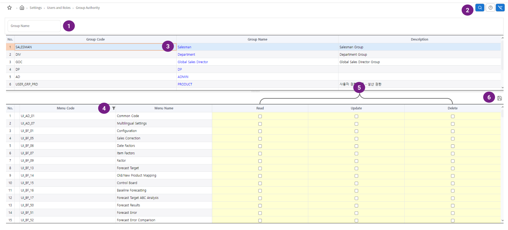
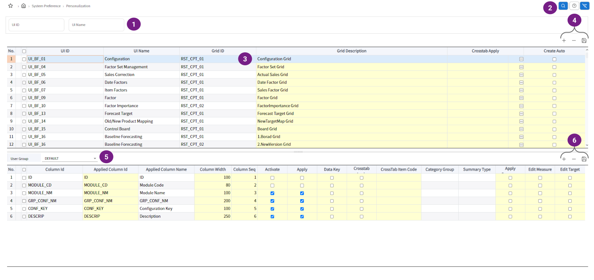
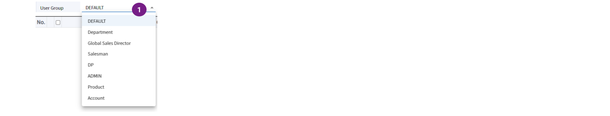

S&OP
- S&OP는 수요와 공급의 균형을 맞추기 위해 조직의 합의를 이끌어내는, 통합된 비즈니스 관리 프로세스입니다.
- 일반적으로 매월 진행되는 S&OP 프로세스는 영업, 마케팅, 제품 개발, 제조, 조달, 재무, 회계 등의 운영 관련 영역을 일치시켜서
조화롭게 협업하여 재무 목표와 조직의 목표를 충족할 수 있게 합니다.
- 수익성 향상
S&OP 프로세스는 조화롭고 균형 잡힌 계획을 설정할 수 있게 합니다.
고객 서비스를 향상시키고, 보유 재고를 낮추고, 폐기물을 줄이고, 재무 목표를 달성하는 데 기여합니다.
이 모든 것은 변동성이 심한 공급망 환경에 매우 중요합니다. - 보다 합리적인 의사결정
계획 담당자는 S&OP 소프트웨어 툴을 사용하여 계획 주기 전반에서 수급 변동에 대한 시뮬레이션을 실행하므로써,
끊임없이 변화하는 수급 환경에 맞는 매 시점의 의사결정을 돕습니다. - 계획 프로세스 단축
최신의 소프트웨어 기술로 보강된 S&OP는 계획 프로세스를 구조화하고 필요한 데이터를 수집, 분석 및 처리하는 작업 중
많은 부분을 자동화하여 계획 담당자가 편리하게 실행 가능한 정보에 액세스할 수 있게 합니다.
또한 정확성을 높이고, 더 나은 결과를 생성하고, 전체 S&OP 주기를 단축합니다. - 부서 간 협업 향상
S&OP는 부서 간 협업을 용이하게 하여 여러 기능 영역뿐만 아니라 전체 조직에 걸쳐 일치하는 계획을 개발할 수 있게 합니다.
의사소통을 원활하게 하여 부서 간 충돌을 없애고, 합의를 도출하여 여러 팀이 동일한 목표를 달성하는 데 역량을 집중하도록 합니다. - 원활한 피드백 순환
체계적인 S&OP 프로세스로 계획 대비 실제 성과를 상시적, 지속적으로 보고하고 측정할 수 있습니다.
이를 바탕으로 부서 간에 불일치하는 부분을 빠르게 해결하고 운영 및 전략 계획을 지속적으로 개선할 수 있습니다.
| 화면 | 설명 |
|---|---|
| 경영 대시보드 | 연간 경영 목표와 판매 계획(또는 실적)을 비교하여 목표 달성의 위험 요소를 빠르게 감지합니다. |
| 품목군별 목표 부합 분석 | 현재 보유중인 재고를 거점 기준으로 파악하여 위험 요소를 감지합니다. |
| S&OP 수요 점검 | 현재 보유중인 재고를 거점 기준으로 파악하여 위험 요소를 감지합니다. |
경영 대시보드
- 연간 경영 목표와 판매 계획(또는 실적)을 비교하여 목표 달성의 위험 요소를 빠르게 감지합니다.
- 감지된 판매 계획 위험 요소를 품목(군) 단위로 파악하고 수요를 조정하여 목표 달성이 가능하도록 돕습니다.
사용법
- 올해의 전체 판매 목표 금액과 수량입니다.
- 올해의 전체 판매 실적 금액과 수량입니다.
- 목표 대비 수요 계획 현황을 월별로 집계하여 표시합니다.
과거 9개월과 현재부터 미래 3개월, 총 12개월의 정보입니다.- 과거 9개월은 판매 월별 목표와 판매 실적의 집계이며, 배경색을 어둡게 표현합니다.
- 월별 목표에 미달하는 경우, 붉은 색 계열로 표시하여 사용자가 쉽게 감지할 수 있습니다.
- 총 12개월의 판매 실적, 수요 계획의 품목군별 금액 분포입니다.
- 목표 대비 수요 계획 현황을 품목군, 월별 분포로 보여줍니다.
- 과거 9개월은 판매 실적의 집계이며, 배경색을 어둡게 표현합니다.
- 현재 월의 데이터는 판매 실적과 수요 계획의 데이터를 합산하여 보여줍니다.
- 화면 검색 날짜의 주차보다 이전 주차는 판매 실적으로,
화면 검색 날짜의 주차 포함 이후 주차는 수요 계획 데이터를 집계합니다.
품목군별 목표 부합 분석
- 월 단위 경영 목표와 판매 계획(또는 실적)을 품목(군) 단위로 빠르게 파악합니다.
- 감지된 판매 계획 위험 요소는 S&OP 수요 점검 및 조정을 통하여 목표 달성이 가능하도록 돕습니다.
사용법
- 목표 달성 여부 점검 대상 년월을 선택합니다.
현재 날짜가 포함된 년월보다 과거이면 목표 대비 실적을 비교하고,
현재 날짜가 포함된 년월보다 미래이면 목표 대비 계획을 비교합니다.
현재 날짜가 포함된 년월의 데이터 집계는 최하단 설명을 참고하세요.- 목표 달성 여부 점검은 품목 계층의 품목군 단위로 진행합니다.
단, 품목 계층의 최상위 레벨(Item All)을 선택하면 아무런 액션도 취하지 않습니다.- 품목군에 속한 개별 품목의 금액 또는 수량의 비율 분포를 트리맵으로 보여줍니다.
- 품목군에 속한 개별 품목의 금액 또는 수량을 월별 목표 대비 계획(또는 실적)과 비교할 수 있도록 툴팁으로 제공합니다.
계획(또는 실적)이 목표에 부합하면 초록색 계열로, 그렇지 않으면 붉은색 계열로 표시하여 위험을 빠르게 감지할 수 있습니다.- 월별 목표에 미달하는 품목군의 경우, S&OP 수요 점검 화면으로 전환하여 목표 달성을 위한 수요 조정을 할 수 있습니다.
- 품목(군)별 목표 달성 여부를 금액 또는 수량으로 파악할 수 있습니다.
- 현재 월의 데이터는 판매 실적과 수요 계획의 데이터를 합산하여 보여줍니다.
- 화면 검색 날짜의 주차보다 이전 주차는 판매 실적으로,
화면 검색 날짜의 주차 포함 이후 주차는 수요 계획 데이터를 집계합니다.
S&OP 수요 점검
작업중
공급망 네트워크
- 원자재 제공 업자로부터 생산자, 유통, 고객에 이르는 물류의 흐름을 위한 구성 및 비즈니스 프로세스입니다.
- 공급망 관리에는 원자재를 완제품으로 전환해 고객에게 제공하는 모든 활동이 포함됩니다.
- 법인, 거점 유형/레벨, 운송 수단, 품목 속성, UOM 등의 일반 정보를 설정합니다.
일반 설정 - 기업에서 관리중인 주요 정보를 인터페이스합니다.
품목
글로벌 생산 BOM - 거점 관련 정보를 설정하여 네트워크를 구성합니다.
거점
거점 품목
거점 BOD
글로벌 계획 BOM - 거점 간 이동 정보를 설정하여 네트워크 상의 제약을 구성합니다.
출하 L/T
거점 출하 일정
거점 수송
품목 출하 일정
품목 출하 일정
출하 통관 휴무 캘린더 - 수요 정보와 연결하여 공급망 물류가 고객에게 인도되도록 구성합니다.
수요 출하지
| 화면 | 설명 |
|---|---|
| 일반 설정 | 법인, 거점 유형, 운송 수단 등 공급망 구성에 필요한 일반 정보를 설정합니다. |
| 거점 | 공급망 상의 거점 정보를 관리합니다. |
| 품목 | 공급망 상의 품목 정보를 관리합니다. |
| 거점 품목 | 거점에서 다루는 품목 정보를 관리합니다. |
| 거점 BOD | 제품의 출하(공급) 거점과 도착(소요) 거점의 관계 정보인 BOD를 관리합니다. |
| 출하 L/T | BOD 관계 상의 운송과 Lead Time 정보를 관리합니다. |
| 거점 출하 일정 | BOD 관계 상의 출하 일정 정보를 관리합니다. |
| 거점 수송 | BOD 관계 상의 품목 기준 운송 수단과 Lead Time 정보를 관리합니다. |
| 품목 출하 일정 | BOD 관계 상의 품목별 출하 일정 정보를 관리합니다. |
| 출하 통관 휴무 캘린더 | BOD 관계 상의 출하 휴무 일정 정보를 관리합니다. |
| 글로벌 생산 BOM | 생산 거점의 품목에 대한 BOM 정보를 관리합니다. |
| 글로벌 계획 BOM | 생산 거점 외의 거점간 품목 기준 물동 흐름 정보를 관리합니다. |
| 수요 출하지 | 수요의 출하지 거점 정보를 관리합니다. |
| 공급망 뷰어 | 공급망 상의 모든 거점의 위치 정보를 지도로 표현합니다. |
| 데이터 일괄 처리 | 공급망 구성 데이터를 파일(csv)로 업로드하여 적용할 수 있습니다. |
| 데이터 일괄 처리 이력 | 파일(csv)로 업로드하여 적용한 결과와 이력을 확인합니다. |
일반 설정
사용법

- 설정 항목의 이름입니다.
- 설정 항목에 대한 간략한 설명입니다.
설정이 필요한 항목의 행을 더블 클릭하면, 각 항목의 설정 정보를 볼 수 있는 팝업 창이 열립니다.
법인

- SCM 시스템 운영 범위의 법인을 설정합니다. 시스템 인스턴스 1개 당 1개의 법인을 설정해야 합니다.
거점 유형 / 레벨

- 거점 유형을 설정합니다. 정해진 제약은 없으나, 시스템이 기본 제공하는 정보를 활용하는 것을 추천합니다.
RDC (Regional Distribution Center) : 지역 물류 거점
CDC (Central Distribution Center) : 중앙 물류 거점
FG (Finished Goods) : 완제품 생산 거점
SFG (Semi-Finished Goods) : 반제품 생산 거점- 거점에 레벨을 설정하여 레벨 단위의 단계적 계획 수립을 할 수 있습니다.
전체 공급망 대상 계획 수립시 수요 대비 과잉 공급 등의 결과를 피하고 최적화된 공급 계획을 얻기 위한 방법입니다.- 레벨 단위의 단계적 계획 수립시, 동일 품목 수요를 통합하여 필요량을 산출하고자 하는 거점을 지정합니다. 일반적으로 반제품 생산 거점이 대상입니다.
- 재고 관리 대상 거점을 선별합니다. 일반적으로 DC(Distribution Center)가 대상입니다.
선택한 거점은 재고 정보가 존재해야 하며, 재고 관리 모듈을 통해 거점별 품목 등급을 분류하고 목표, 안전 재고를 산출합니다.
지역

- 거점 또는 거래처와 같이 지역 구분이 필요한 설정의 부가 정보로 사용합니다.
국가

- 거점 또는 거래처와 같이 국가 구분이 필요한 설정의 부가 정보로 사용합니다.
시스템은 ISO 3166-1 alpha-2 기준의 252개 국가 코드를 제공합니다.
품목 속성

- 시스템이 제공하는 품목의 기본 속성 외에, 기업의 특성에 맞는 다양한 품목 속성 정보를 반영할 수 있습니다.
총 25개의 속성 정보를 설정할 수 있으며 각 속성의 이름을 지정할 수 있습니다.
각각의 품목 속성에 필요한 값은 품목 화면에서 설정합니다.
UOM 관리

- 시스템에서 사용하는 측정 단위(UOM : Unit Of Measurement)를 설정합니다. 시간, 수량, 무게 등이 대표적입니다.
- 기본 계획 UOM : 계획 수립은 시간을 다루어야 하는 기술입니다. 시스템에서 계획 수립 시 사용하고자 하는 시간 단위를 설정합니다.
- 타임 버킷 : 시간은 정해진 구간 단위로 다룰 수 있습니다. 시스템에서 사용하고자 하는 시간 구간 단위를 설정합니다.
- 실적 참조 UOM : 과거의 실적은 현재의 상태를 분석하고 미래를 예측하는 중요한 인자입니다. 실적을 다룰 때에 사용하고자 하는 시간 단위를 설정합니다.
- 시간 UOM : 측정 단위 중에서, 특별히 시간과 관련된 UOM 을 구분하기 위한 설정입니다.
기본 재고 소진 정책

- 공급 계획 수립시 재고를 사용하는 정책을 설정합니다.
FIFO : First In First Out
LIFO : Last In First Out- 기본으로 적용할 정책을 하나만 선택합니다.
기본 주문 배송 정책

- 생산 최종 공정에서 목적지까지의 배송 정책을 설정합니다.
COMPLETE : 주문 수량 100% 만족 시 납품
DUEDATE_PARTIAL : 납기일 이후부터 주문량을 만족할 때까지 분할 납품
PARTIAL : 생산 완료 일부터 주문량을 만족 할 때까지 분할 납품
SHORT : 납기일까지 납품할 수 있는 물량만 납품- 기본으로 적용할 정책을 하나만 선택합니다.
기본 주문 라우팅 비용 최적화

- 공급망 상에서 비용이 최소로 발생하는 경로를 선택하는 계획을 수립하는 정책의 적용 여부입니다.
기본 운송수단 유형

- 공급 거점에서 소요 거점으로 품목이 이동하는 운송 수단을 정의합니다.
- 동일한 경로에 여러가지 운송 수단이 존재하는 경우, 우선순위를 설정합니다.
- 운송 리드타임이 필요하지 않거나, 동일 위치의 거점간의 운송 수단을 정의해야 하는 경우 체크합니다.
BOD 리드타임 구간

- 출발지 거점 레벨 정보입니다.
- 도착지 거점 레벨 정보입니다.
- 출발지에서 도착지까지의 운송 수단 정보입니다.
- 선택한 운송 수단의 리드타임 설정에 대한 설명을 입력합니다.
- 출발지에서 도착지 거점간의 BOD에 대한 위치상의 순서입니다. 일반적으로 Outbound > Voyage > Inbound 순서입니다.
- 선택한 운송 수단의 리드 타임 유형을 선택합니다. 출발지에서 도착지 거점 레벨에는 Voyage 타입 유형은 반드시 등록되어야 합니다.
- 선택한 운송 수단의 운송 리드 타임을 입력하려면 체크해야 합니다.
- 선택한 운송 수단의 출하 일정을 관리하려면 체크해야 합니다.
기본 거점 운송수단

- 출발지 거점 레벨 정보입니다.
- 도착지 거점 레벨 정보입니다.
- 출발지에서 도착지 거점 레벨까지의 가능한 운송 수단을 등록합니다.
사업 채널 유형

- 사업 채널 유형을 정의합니다.
- VMI(Vendor Managed Inventory) 관리 여부를 체크합니다.
품목 유형

- ERP 시스템이 관리하는 품목 유형을 미리 정의합니다. SCM 시스템이 관리하는 품목 유형과 동기화하기 위한 목적입니다.
HAWA : Trading Goods
ROH : Raw Material
HALB : Semi-Finished Goods
FERT : Finished Goods- ERP 시스템이 관리하는 품목 유형을 SCM 시스템의 용어로 변환할 이름을 설정합니다.
HAWA - MD
ROH - RM
HALB - SFG
FERT - FG- SCM 시스템의 품목 타입과 동기화합니다.
무역 거래 조건

- 무역 거래 조건을 설정합니다.
- 무역 거래 조건 중, 거래처까지 배송하는 조건에 대해 체크합니다.
재고 수량 타입

거점
- 공급망 상에서 품목은 공급 거점에서 소요 거점으로 이동하며 공급이 이루어집니다.
- 제품을 생산하는 Plant, 제품을 재고로 보관하여 고객 주문에 맞추어 판매 출하하는 DC(Distribution Center)가 대표적인 예입니다.
- 거점의 특성에 맞는 속성을 정의하여 공급망 모델을 구성합니다.
사용법

- 검색 대상 정보를 입력합니다. 입력이 없으면 전체 대상입니다.
- 검색 버튼을 클릭하여 거점 정보를 조회합니다.
- 거점 정보입니다. 동일한 거점 유형 안에서 제품의 공급이 이루어지는 경우, 거점 레벨을 다르게 설정하여 물류의 흐름을 제어할 수 있습니다.
- 제품을 생산하는 생산 거점의 경우, 공장 정보를 입력하여 생산 계획(FP) 모듈에서 활용할 수 있습니다.
- 각 거점이 위치한 지역과 국가 정보입니다.
- 제품을 생산하는 생산 거점의 경우, 생산 특성에 맞는 속성을 부여하여 거점 기준으로 일괄 적용할 수 있습니다.
- 거점을 추가, 삭제, 수정합니다.
- 인터페이스 받은 거점 정보를 일괄 생성합니다.
- 화면의 조회 결과를 엑셀 파일로 다운로드 받을 수 있습니다.
컬럼 정보 상세


- 수요가 접수된 거래처 품목을 공급하는 출하 거점일 경우 선택합니다. 수요 출하지 거점과 동일하게 설정해야 합니다.
- 수요에 대한 출하가 이루어지는 거점의 속성들을 입력합니다.
- 제품을 재고로 보관하여 수요에 대응하여 출하하는 거점을 선택합니다. 재고 관리(IM), 보충 계획(RP) 모듈의 주요 거점으로 동작합니다.
- 재고 보관 비용률을 설정합니다. 재고 관리(IM) 모듈의 등급 산정의 참조 값으로 동작할 수 있습니다.
- 계획 정책 > Demand Facing Level > 확정 롤링 계획 설명을 참조하세요.
- 계획 정책 > Demand Facing Level > 확정 롤링 계획 설명을 참조하세요.
- 계획 정책 > Demand Facing Level > 확정 보정 계획 설명을 참조하세요.
- 계획 정책 > Demand Facing Level > 확정 보정 계획 설명을 참조하세요.
- 5~8 번 입력 구간의 시간 단위를 선택합니다.
- 제품을 생산하는 생산 거점의 경우, 시뮬레이션 결과의 보정 필요 여부를 선택합니다.
거점 추가, 삭제, 수정

- 거점 추가 : 추가 버튼을 클릭하면 그리드에 새로운 행이 추가됩니다. 모든 정보를 입력한 후 저장 버튼을 클릭하여 작업을 완료합니다.
- 수정 : 거점 정보를 수정하면 대상 거점의 그리드 행이 변경 상태로 보여집니다. 필요 정보를 변경한 후 저장 버튼을 클릭하여 작업을 완료합니다.
- 삭제 : 삭제 대상 거점의 행을 선택한 후 삭제 버튼을 클릭하여 작업을 완료합니다.
품목
- 공급망 상에서 품목은 공급 거점에서 소요 거점으로 이동하며 공급이 이루어집니다.
- 생산 거점의 원자재, 반제품, 완제품과 물류 흐름을 통해 고객에게 납품하는 모든 품목이 포함됩니다.
- 품목의 특성에 맞는 속성을 정의하여 공급망 모델을 구성합니다.
사용법

- 검색 대상 정보를 입력합니다. 입력이 없으면 전체 대상입니다.
- 검색 버튼을 클릭하여 품목 정보를 조회합니다.
- 품목 정보입니다. 일반적으로 고객사가 관리하는 품목 정보를 인터페이스 받아 설정합니다.
공급 계획(MP), 생산 계획(FP) 모듈처럼 생산 거점의 시뮬레이션 수행시에는 시스템 운영에 필요한 품목 정보가 추가되기도 합니다.- 품목 타입 정보입니다. 일반 설정 > 품목 유형에서 설정한 항목입니다.
- 품목의 단위 정보입니다. 일반 설정 > UOM 관리 설정에서 설정한 항목입니다.
- 주문 품목의 생산 Lot 크기를 설정합니다.
요청 수량이 최대 생산 Lot 크기보다 많으면, 생산 거점에서는 최대 Lot 크기에 맞추어 생산 주문을 생성하여 시뮬레이션 합니다.
최대 생산 Lot 크기로 생산하다가 잔여 수량이 최소 Lot 크기보다 작게 남으면, 마지막 생산 주문은 최소 Lot 크기에 맞추어 생산 주문을 생성합니다.- 판매 품목의 경우, 품목의 판매 개시 일자와 판매 중지 일자를 설정할 수 있습니다.
RTS : Ready To Sell-in : 판매 개시 일자
EOS : End Of Sales : 판매 중지 일자- 시스템에서 더 이상 관리가 필요하지 않은 품목의 경우 체크합니다.
- 관리 대상 전 품목 중에서 고객의 수요가 발생하는 품목에 대해서 체크합니다.
- T3SmartSCM 시스템 운영을 위한 품목 속성 외에, 기업의 특성에 맞는 속성을 설정하고 정보를 확인할 수 있습니다.
속성 컬럼의 이름은 일반 설정 > 품목 속성에서 설정할 수 있습니다.- 품목을 추가, 삭제, 수정합니다.
- 화면의 조회 결과를 엑셀 파일로 다운로드 받을 수 있습니다.
품목 추가, 삭제, 수정

- 품목 추가 : 추가 버튼을 클릭하면 그리드에 새로운 행이 추가됩니다. 모든 정보를 입력한 후 저장 버튼을 클릭하여 작업을 완료합니다.
- 수정 : 품목 정보를 수정하면 대상 품목의 그리드 행이 변경 상태로 보여집니다. 필요 정보를 변경한 후 저장 버튼을 클릭하여 작업을 완료합니다.
- 삭제 : 삭제 대상 품목의 행을 선택한 후 삭제 버튼을 클릭하여 작업을 완료합니다.
거점 품목
- 공급망 상의 거점은 제품을 생산하는 거점과, 생산 품목의 물류를 담당하는 거점으로 크게 분류할 수 있습니다.
- 생산 거점은 제품 생산을 위한 BOM 상의 품목을 구성해야 합니다. 즉, 원자재, 반제품, 완제품 정보를 구성해야 합니다.
- 물류 거점은 보관 대상 품목을 구성하고 수요에 대응할 준비를 해야 합니다.
사용법

- 검색 대상 정보를 입력합니다. 입력이 없으면 전체 대상입니다.
- 검색 버튼을 클릭하여 거점 품목 정보를 조회합니다.
- 품목 구성 대상 거점 정보입니다.
- 거점에서 관리하는 품목 정보입니다.
- 기업의 특성에 맞게 설정된 속성 정보입니다. 품목 화면에서 설정한 정보입니다.
- 거점 품목의 생애 주기 정보입니다.
SRA : Ship Release Approval : 출하 승인 일자 (판매를 목적으로 한 초도 양산품의 출하 승인 일자)
RTS : Ready To Sell-in : 판매 개시 일자
EOP : End Of Production : 생산 중단 일자
EOS : End Of Sales : 판매 중지 일자
모품목 단종 : BOM 구성 상의 자 품목인 경우, 모 품목의 단종 일자- 거점의 품목 정보를 추가, 삭제, 수정합니다.
- 인터페이스 받은 거점 품목 정보를 일괄 생성합니다.
- 거점 품목 정보의 특정 값을 한번에 변경할 수 있는 화면을 엽니다.
- 화면의 조회 결과를 엑셀 파일로 다운로드 받을 수 있습니다.
컬럼 정보 상세

- 거점에 등록된 품목의 재고 보유 여부를 선택합니다. 재고 보유 품목은 재고 관리(IM) 등급 산정 대상입니다.
- 거점에서 재고를 출하하는 정책을 선택합니다.
FIFO : First In First Out
LIFO : Last In First Out- 거점에서 재고 출하시 책정하는 품목의 표준 단가입니다.
- 생산 거점인 경우, 품목 단위당 생산 비용을 설정합니다.
- 거점 품목 속성 중, 금액 관련 정보의 기준 통화를 설정합니다.
신규 거점 품목 정보 추가 (추가 버튼 클릭)


- 일반 탭을 선택하고 신규 거점 품목 정보 추가를 준비합니다.
- 정보 추가 대상 거점을 선택합니다.
- 거점 관리 대상 품목을 선택합니다.
- 새로 추가한 거점 품목의 필요 속성을 설정합니다.
- 신제품 출시(NPI) / 제품 단종(EOL) 탭을 선택합니다.
- 품목의 생애 주기 정보를 설정합니다.
- 재고 탭을 선택합니다.
- 거점 품목의 재고 관련 속성을 설정합니다.
- 생산 비용 탭을 선택합니다.
- 생산 거점인 경우, 생산 비용 정보를 설정합니다.
- 확인 버튼을 클릭하여 작업을 완료합니다.
거점 BOD
- 공급망 상에서 품목은 공급 거점에서 소요 거점으로 이동하며 공급이 이루어집니다.
- 품목의 공급 경로 즉, 공급 거점이 여러개일 경우에는 미리 설정한 공급(소싱) 정책을 정의해야 합니다.
사용법

- 검색 대상 정보를 입력합니다. 입력이 없으면 전체 대상입니다.
- 검색 버튼을 클릭하여 거점 BOD(Bill Of Distribution) 정보를 조회합니다.
- 품목을 공급 받는 소요 거점 정보입니다.
- 품목을 공급하는 공급 거점이 여러개일 경우, 소싱 정책을 설정해야 합니다.
소싱 정책 : PRIORITY, PROPORTION 중 하나를 선택합니다. 각각 우선순위와 비율을 의미합니다.
소싱 규칙 : 선택한 소싱 정책에 맞는 값을 입력합니다. 비율의 경우에는 백분율에 맞추어 분배 값을 맞춰야 합니다.- 품목을 공급하는 공급 거점 정보입니다.
- 일반 설정 화면의 기본 거점 운송 수단에서 정의한 운송 수단 정보입니다.
- BOD 정보를 추가, 삭제, 수정합니다.
- 인터페이스 받은 거점 BOD 정보를 일괄 생성합니다.
- 화면의 조회 결과를 엑셀 파일로 다운로드 받을 수 있습니다.
- 특정 기간에 소싱 정책이 변할 경우, 기간별 소싱 정책을 등록하여 사용할 수 있습니다.
- 기간별 소싱 정책 정보를 추가, 삭제, 수정합니다.
신규 거점 BOD 정보 추가 (상단 추가 버튼 클릭)

- 소요 거점 탭을 선택하여 신규 거점 BOD 정보 입력을 준비합니다.
- 품목을 공급 받는 소요 거점을 선택합니다.
- 공급 거점 탭을 선택합니다.
- 품목을 공급하는 공급 거점을 추가하고 소싱 규칙을 입력합니다.
- 확인 버튼을 클릭하여 작업을 완료합니다.
신규 기간별 거점 BOD 정보 추가 (하단 추가 버튼 클릭)

- 소요 거점 탭을 선택하여 신규 거점 BOD 정보 입력을 준비합니다.
- 상단 그리드에서 선택한 행의 소요 거점을 보여줍니다.
- 소싱 정책을 적용할 시간 구간을 선택합니다.
- 공급 거점 탭을 선택합니다.
- 선택한 소요 거점으로 품목을 공급하는 공급 거점을 보여줍니다. 선택한 시간 구간에 적용할 소싱 정책을 정의합니다.
- 확인 버튼을 클릭하여 작업을 완료합니다.
출하 L/T
- 공급망 상에서 품목은 공급 거점에서 소요 거점으로 수송 방법에 따라 이동합니다.
- 수송 방법에 따라 이동에 필요한 리드 타임과 비용을 정의하여 적시에 납품할 수 있는 기초 정보를 정의해야 합니다.
사용법

- 검색 대상 정보를 입력합니다. 입력이 없으면 전체 대상입니다.
- 검색 버튼을 클릭하여 출하 L/T(Lead Time) 정보를 조회합니다.
- 품목을 공급 받는 소요 거점 정보입니다.
- 품목을 공급하는 공급 거점 정보입니다.
- 거점 수송 화면에서 정의한 운송 수단 중에서 사용할 운송 수단을 선택하여 활성화합니다.
- 거점 수송 화면에서 정의한 운송 수단 항목입니다.
- 운송 수단을 여러가지 선택하여 활성화 하는 경우, 주요 운송 수단 순서로 우선순위를 설정합니다.
- 공급 거점에서 소요 거점으로 이동하는 리드 타임(L/T)을 설정합니다.
Outbound L/T : 출하지 거점에서 운송 출발 지점(항구, 공항 등)까지 소요되는 리드 타임입니다.
Voyage L/T : 실제 운송 수단에 의해 이동하는 리드 타임입니다.
Inbound L/T : 운송 도착 지점(항구, 공항 등)에서 도착지 거점까지 입고에 소요되는 리드 타임입니다.
Total L/T : 세가지 리드 타임의 총 합입니다.- 입력한 리드 타임의 시간 단위입니다.
- 운송 비용 산정 단위를 선택합니다. 운송 수단을 여러가지인 경우, 비용이 적게 드는 운송 방법을 선택하는데 활용할 수 있습니다.
Vehicle Criteria : 운송 수단 기준으로 비용을 책정합니다.
UOM Weight Criteria : 단위 무게 기준으로 비용을 책정합니다.- 운송 단가와 적용할 통화를 입력합니다.
- 출하 L/T 정보를 추가, 수정합니다.
- 인터페이스 받은 출하 L/T 정보를 일괄 생성합니다.
- 화면의 조회 결과를 엑셀 파일로 다운로드 받을 수 있습니다.
신규 출하 L/T 정보 추가 (추가 버튼 클릭)

거점 출하 일정
- 공급망 상에서 품목은 공급 거점에서 소요 거점으로 이동하며 공급이 이루어집니다.
- 공급 거점에서 소요 거점으로 이동시 수송 방법에 따라 출하 가능한 일정을 미리 설정하여 현실적인 공급 계획을 얻을 수 있습니다.
사용법

- 검색 대상 정보를 입력합니다. 입력이 없으면 전체 대상입니다.
- 검색 버튼을 클릭하여 거점 출하 일정 정보를 조회합니다.
- 품목을 공급 받는 소요 거점 정보입니다.
- 품목을 공급하는 공급 거점 정보입니다.
- 일반 설정 화면의 기본 거점 운송 수단에서 정의한 운송 수단 정보입니다.
- 공급 거점에서 소요 거점으로 이동하는 리드 타임(L/T)입니다. 출하 L/T에서 설정합니다.
- 출하 일정 유형을 선택하고 유형에 따른 출하 일정을 등록합니다.
Daily Base Schedule : 일주일의 요일 기준으로 출하 일정을 설정합니다.
Monthly Base Schedule : 월 31일 기준으로 출하 일정을 설정합니다.- 설정한 출하 일정의 예외 일정을 등록합니다. 출하 일정이지만 예외 일정과 겹치는 날짜에는 출하하지 못합니다.
예외 일정이 등록되어 있는 경우에는 색상이 표시됩니다.- 휴일을 등록합니다. 휴일에는 출하하지 못합니다.
휴일이 등록되어 있는 경우에는 색상이 표시됩니다.- 설정한 출하 일정을 저장합니다.
- 화면의 조회 결과를 엑셀 파일로 다운로드 받을 수 있습니다.
출하 일정 유형 및 출하 일정 설정

- Daily Base Schedule 유형을 선택한 경우입니다.
- 출하 가능한 요일을 모두 체크하고 활성화합니다.
- Monthly Base Schedule 유형을 선택한 경우입니다.
- 월 31일 기준의 출하 가능한 날짜를 모두 체크합니다.
- 확인 버튼을 클릭하여 작업을 완료합니다.
출하 예외 일정 설정

- Daily Base Schedule 유형을 선택한 경우, 예외 일정을 등록하거나 삭제합니다.
- Daily Base Schedule 출하 예외 일정이 적용되는 날짜 구간을 선택합니다.
- 선택한 요일은 출하 일정과 겹치는 경우, 예외적으로 출하하지 못합니다.
- Monthly Base Schedule 유형을 선택한 경우, 예외 일정을 등록하거나 삭제합니다.
- Monthly Base Schedule 출하 예외 일정이 적용되는 날짜 구간을 선택합니다.
- 월간 날짜 기준으로 출하 가능한 항차 날짜를 직접 입력합니다.
- 확인 버튼을 클릭하여 작업을 완료합니다.
출하 휴무일 설정

- 출하 휴무일 정보를 등록하거나 삭제합니다.
- 출하 휴무일 날짜 구간을 선택합니다.
- 출하 휴무일의 반복 유형을 선택합니다.
ONCE : 출하 휴무일 날짜 구간을 단 한번 적용합니다.
DAY : 출하 휴무일 날짜 구간을 일 단위로 반복 적용합니다.
WEEK : 출하 휴무일 날짜 구간을 주 단위로 반복 적용합니다.
MONTH : 출하 휴무일 날짜 구간을 월 단위로 반복 적용합니다.- 확인 버튼을 클릭하여 작업을 완료합니다.
거점 수송
- 공급망 상에서 품목은 공급 거점에서 소요 거점으로 수송 방법에 따라 이동합니다.
- 수송 방법에 따라 이동에 필요한 리드 타임과 운송 Lot을 정의하여 적시에 납품할 수 있는 기초 정보를 정의해야 합니다.
사용법

- 검색 대상 정보를 입력합니다. 입력이 없으면 전체 대상입니다.
- 검색 버튼을 클릭하여 출하 L/T(Lead Time) 정보를 조회합니다.
- 품목을 공급 받는 소요 거점 정보입니다.
- 운송 방법과 리드 타임을 다루는 품목 정보입니다.
- 품목을 공급하는 공급 거점 정보입니다.
- 일반 설정 화면의 기본 거점 운송 수단에서 정의한 운송 수단 중에서 사용할 운송 수단을 선택하고 우선순위를 부여합니다.
- 공급 거점에서 소요 거점으로 이동하는 리드 타임(L/T)을 품목 단위로 설정합니다.
Outbound L/T : 출하지 거점에서 운송 출발 지점(항구, 공항 등)까지 소요되는 리드 타임입니다.
Voyage L/T : 실제 운송 수단에 의해 이동하는 리드 타임입니다.
Inbound L/T : 운송 도착 지점(항구, 공항 등)에서 도착지 거점까지 입고에 소요되는 리드 타임입니다.
Total L/T : 세가지 리드 타임의 총 합입니다.- 품목 운송의 작업 단위와 크기를 설정합니다. 필수 정보는 아닙니다.
- 수송 정보를 추가, 수정합니다.
- 인터페이스 받은 거점 수송 정보를 일괄 생성합니다.
- 화면의 조회 결과를 엑셀 파일로 다운로드 받을 수 있습니다.
신규 수송 정보 추가 (추가 버튼 클릭)

- 소요 거점 / 공급 거점 탭을 선택하여 신규 수송 정보 입력을 준비합니다.
- 품목을 공급 받는 소요 거점을 선택합니다.
- 품목을 공급하는 공급 거점을 선택합니다.
- 품목 탭을 선택합니다.
- 선택한 소요 거점에서 공급 거점으로 이동할 품목을 선택합니다.
- 운송 정보 탭을 선택합니다.
- 선택한 소요 거점과 공급 거점의 운송 수단 정보와 우선순위를 설정합니다. 일반 설정 화면의 기본 거점 운송 수단에서 정의한 운송 수단입니다.
- BOD L/T 탭을 선택합니다.
- 선택한 소요 거점과 공급 거점의 운송 수단 정보에 해당하는 리드 타임을 설정합니다. 일반 설정 화면의 기본 거점 운송 수단에서 정의한 운송 수단입니다.
- 확인 버튼을 클릭하여 작업을 완료합니다.
품목 출하 일정
- 공급망 상에서 품목은 공급 거점에서 소요 거점으로 이동하며 공급이 이루어집니다.
- 공급 거점에서 소요 거점으로 이동시 품목 기준의 출하 가능 일정을 미리 설정하여 현실적인 공급 계획을 얻을 수 있습니다.
사용법

- 검색 대상 정보를 입력합니다. 입력이 없으면 전체 대상입니다.
- 검색 버튼을 클릭하여 품목 출하 일정 정보를 조회합니다.
- 품목을 공급 받는 소요 거점 정보입니다.
- 공급 거점에서 소요 거점으로 이동하는 품목 정보입니다.
- 품목을 공급하는 공급 거점 정보입니다.
- 일반 설정 화면의 기본 거점 운송 수단에서 정의한 운송 수단 정보입니다.
- 공급 거점에서 소요 거점으로의 출하 일정을 품목별로 설정합니다.
- 변경한 품목 출하 일정 정보를 저장합니다.
- 화면의 조회 결과를 엑셀 파일로 다운로드 받을 수 있습니다.
- 출하 일정은 거점 출하 일정 화면에서 거점별 운송 수단 기준으로 설정할 수 있습니다.
- 품목 출하 일정은 품목 기준으로 정의가 필요한 경우에만 설정을 권장하며, 설정이 없으면 모든 일자에 출하가 가능합니다.
출하 통관 휴무 캘린더
- 공급망 상에서 품목은 공급 거점에서 소요 거점으로 이동하며 공급이 이루어집니다.
- 공급 거점에서 소요 거점으로의 출하 휴무 일정을 미리 설정하여 현실적인 공급 계획을 얻을 수 있습니다.
사용법

- 검색 대상 정보를 입력합니다. 입력이 없으면 전체 대상입니다.
- 검색 버튼을 클릭하여 품목 출하 일정 정보를 조회합니다.
- 품목을 공급 받는 소요 거점 정보입니다.
- 품목을 공급하는 공급 거점 정보입니다.
- 품목의 공급이 이루어지는 운송 수단과 BOD 리드타임 관련 정보입니다.
- 출하 휴무 정보의 설명입니다.
- 출하 휴무 시작 일자입니다.
- 출하 휴무 종료 일자입니다.
- 출하 휴무 구간의 반복 유형을 선택합니다.
ONCE : 출하 휴무일 날짜 구간을 단 한번 적용합니다.
DAY : 출하 휴무일 날짜 구간을 일 단위로 반복 적용합니다.
WEEK : 출하 휴무일 날짜 구간을 주 단위로 반복 적용합니다.
MONTH : 출하 휴무일 날짜 구간을 월 단위로 반복 적용합니다.- 변경한 출하 휴무 일정 정보를 저장합니다.
- 화면의 조회 결과를 엑셀 파일로 다운로드 받을 수 있습니다.
글로벌 생산 BOM
- 수요의 납품은, 보유 재고로 대응하는 방법과 재고 부족시 생산하여 납품하는 방법으로 구분할 수 있습니다.
- 보유 재고가 부족하여 생산이 필요한 경우, 생산 거점의 완성품 제조에 필요한 BOM 정보가 필요합니다.
- 기업의 생산 BOM을 점검합니다.
생산 BOM은 기업의 중요 정보입니다.
기업에서 관리하는 정보를 인터페이스 받아 설정하고 점검하는 것을 권장하며, 임의 변경 작업은 권장하지 않습니다.
사용법

- 검색 대상 정보를 입력합니다. 입력이 없으면 전체 대상입니다.
- 검색 버튼을 클릭하여 글로벌 생산 BOM 정보를 조회합니다.
- 품목을 생산하여 공급하는 생산 거점입니다.
- 생산 거점의 생산 모 품목 정보입니다.
- 생산 모 품목의 BOM 단위 수량입니다.
- 생산 모 품목의 단위입니다.
- 생산 모 품목의 생산 수율입니다.
- 생산 모 품목 정보를 추가, 수정합니다. 추가 액션은 권장하지 않습니다.
- 인터페이스 받은 글로벌 생산 BOM 정보를 일괄 생성합니다.
- 화면의 조회 결과를 엑셀 파일로 다운로드 받을 수 있습니다.
- 생산 모 품목 코드 컬럼의 버튼을 클릭하면 하단에 자 품목 관련 정보를 보여줍니다.
- BOM 트리 탭은 상단 그리드에서 선택한 모 품목을 기준으로 정전개하여 BOM 정보를 트리 형태로 보여줍니다.
- 모 품목 기준의 BOM 트리와 트리 레벨을 확인할 수 있습니다.
- 각 BOM 품목의 모 품목 기준 필요 수량을 보여줍니다.
구성 품목 점검

- 생산 모 품목 코드 컬럼의 버튼을 클릭하면 하단에 자 품목 관련 정보를 보여줍니다.
- 구성 품목 탭은 상단 그리드에서 선택한 모 품목의 하위 레벨 구성 품목만 발췌하여 보여줍니다.
- 생산 모 품목의 하위 레벨 구성 품목 정보를 추가, 수정합니다. 추가 액션은 권장하지 않습니다.
글로벌 계획 BOM
- 공급망 상에서 품목은 공급 거점에서 소요 거점으로 이동하며 공급이 이루어집니다.
- 생산 완료된 수요 품목의 흐름을 물류 센터(DC) 기준으로 파악합니다.
사용법

- 검색 대상 정보를 입력합니다. 입력이 없으면 전체 대상입니다.
- 검색 버튼을 클릭하여 글로벌 계획 BOM 정보를 조회합니다.
- 품목을 공급 받는 소요 거점 정보입니다.
- 품목 정보입니다.
- 품목을 공급하는 공급 거점 정보입니다. 공급 거점이 여러개일 경우, 소싱 정책을 설정할 수도 있습니다.
- 일반 설정 화면의 기본 거점 운송 수단에서 정의한 운송 수단 정보입니다.
- 글로벌 계획 BOM 정보를 추가, 수정합니다.
- 인터페이스 받은 글로벌 계획 BOM 정보를 일괄 생성합니다.
- 화면의 조회 결과를 엑셀 파일로 다운로드 받을 수 있습니다.
- 특정 기간에 소싱 정책이 변할 경우, 기간별 소싱 정책을 등록하여 사용할 수 있습니다.
- 기간별 소싱 정책 정보를 추가, 삭제, 수정합니다.
신규 글로벌 계획 BOM 정보 추가 (상단 추가 버튼 클릭)

- 소요 거점 탭을 선택하여 신규 글로벌 계획 BOM 정보 입력을 준비합니다.
- 품목을 공급 받는 소요 거점을 선택합니다.
- 품목 탭을 선택합니다.
- 소요 거점에서 다루는 품목을 선택합니다.
- 공급 거점 탭을 선택합니다.
- 품목을 공급하는 공급 거점을 추가하고 소싱 규칙을 입력합니다.
- 확인 버튼을 클릭하여 작업을 완료합니다.
신규 기간별 글로벌 계획 BOM 정보 추가 (하단 추가 버튼 클릭)

- 소요 거점 탭을 선택하여 신규 기간별 글로벌 계획 BOM 정보 입력을 준비합니다.
- 상단 그리드에서 선택한 행의 소요 거점을 보여줍니다.
- 소싱 정책을 적용할 시간 구간을 선택합니다.
- 품목 탭을 선택합니다.
- 상단 그리드에서 선택한 행의 품목을 보여줍니다.
- 공급 거점 탭을 선택합니다.
- 선택한 소요 거점으로 품목을 공급하는 공급 거점을 보여줍니다. 선택한 시간 구간에 적용할 소싱 정책을 정의합니다.
- 확인 버튼을 클릭하여 작업을 완료합니다.
수요 출하지
사용법

- 검색 대상 정보를 입력합니다. 입력이 없으면 전체 대상입니다.
- 검색 버튼을 클릭하여 수요 출하지 정보를 조회합니다.
- 수요의 품목 정보입니다. 품목 기준으로 출하 거점을 지정합니다.
- 수요가 접수되는 거래처 정보입니다. 일반적으로 거래처와 근거리의 지역 물류 센터(RDC)로부터 납품받는 것이 효율적입니다.
- 수요가 접수된 거래처 품목을 공급하는 출하 거점 정보입니다.
- 수요 출하지 정보를 추가, 수정합니다.
- 인터페이스 받은 수요 출하지 정보를 일괄 생성합니다.
- 화면의 조회 결과를 엑셀 파일로 다운로드 받을 수 있습니다.
신규 수요 출하지 정보 추가 (추가 버튼 클릭)

- 수요 정보 탭을 선택하여 신규 수요 출하지 입력을 준비합니다.
- 수요 품목을 선택합니다.
- 수요가 접수되는 거래처를 선택합니다.
- 출발 거점 탭을 선택합니다.
- 수요 정보 탭에서 선택한 품목을 공급할 수 있는 거점을 선택합니다.
- 확인 버튼을 클릭하여 작업을 완료합니다.
공급망 뷰어

데이터 일괄 처리
- 모듈별로 데이터 입력 순서를 순차적으로 정의하여 필수 데이터 구성을 오류 없이 쉽게 설정할 수 있습니다.
일반적으로는 공급망 구성 필수 데이터는 ERP와 같은 상위 또는 주변 시스템으로부터 인터페이스하여 설정합니다.
구조적으로 인터페이스 방식을 사용하지 못하거나 인터페이스 구현 이전에 기본적인 데이터를 구성할 때에 이 방식을 사용할 수 있습니다.
사용법

- 데이터 구성을 위한 모듈을 선택합니다. BF, DP, IM, MP 4가지 모듈을 지원합니다.
각 항목 선택시마다 모듈에서 필요한 필수 데이터 항목들이 변경됩니다.- 모듈별 데이터 입력 순서를 순차적으로 정의해 놓았습니다. (Level)
데이터는 정의된 순서대로 처리해야 합니다.- 처리해야 하는 데이터가 담기는 DB 테이블 이름입니다.
- DB 테이블에 입력되어 있는 데이터의 갯수입니다.
- 데이터 입력에 필요한 여러가지 옵션과 명령을 수행하는 화면 영역입니다. DB 테이블을 클릭하면 활성화됩니다.
BF 모듈 선택 예

IM 모듈 선택 예

MP 모듈 선택 예

데이터 처리 상태

- DB 테이블에 데이터 구성이 완료된 상태입니다.
- 데이터 구성이 필요하지만, 아직 입력되지 않은 상태입니다.
- 2번과 동일한 상태로, 데이터 입력이 반드시 필요한 DB 테이블일 경우의 표시입니다.
- 데이터 구성은 필요하지만, 다른 모듈에서 데이터를 관리하거나 다른 연관 DB 테이블 입력에 의해 연동되어 데이터가 구성되는 등과 같이,
직접 파일로 데이터를 입력하지 않아도 되는 경우의 표시입니다.
데이터 입력

- 데이터를 구성하고자 하는 DB 테이블을 클릭하면, 입력에 필요한 여러가지 옵션과 명령을 수행하는 화면 영역이 활성화됩니다.
- 선택한 DB 테이블 이름과 현재 보유 데이터 수 등의 정보를 보여줍니다.
- 데이터 입력(Import)에 필요한 옵션을 선택하고 명령을 수행합니다.
[Save option] Insert : 선택한 파일의 데이터를 기존 데이터에 추가만 하여 입력합니다.
[Save option] Update : 선택한 파일의 데이터와 기존 데이터가 겹치는 내용만 업데이트합니다.
[Save option] Merge Insert : Insert 와 Update 방식을 동시에 진행합니다.
[Save option] Delete and Insert : 기존 데이터를 모두 삭제한 이후에 선택한 파일의 데이터를 새로 입력합니다.
[File format] CSV : 입력할 데이터의 파일 확장자를 csv(comma separated values)로 선택합니다.
[File format] TSV : 입력할 데이터의 파일 확장자를 tsv(tab separated values)로 선택합니다.
[Save file] Upload File : 사용자의 로컬 PC에 보관중인 데이터 파일을 선택합니다.
[Save file] Execution : 선택한 데이터 파일의 정보를 DB 테이블로 입력합니다.- 데이터 출력(Export)에 필요한 옵션을 선택하고 명령을 수행합니다.
[Save option] Without Data : 선텍한 DB 테이블의 컬럼 정보만 다운로드합니다.
[Save option] With Data : 선텍한 DB 테이블의 컬럼 정보와 데이터를 모두 다운로드합니다.
[File format] CSV : 출력할 데이터의 파일 확장자를 csv(comma separated values)로 선택합니다.
[File format] TSV : 출력할 데이터의 파일 확장자를 tsv(tab separated values)로 선택합니다.
Execution : 선택한 옵션으로 DB 테이블 정보를 다운로드합니다.
입력 제한 DB 테이블

- Lock 모드의 DB 테이블을 클릭하면 데이터 입력(Import) 영역은 비활성화되어 사용할 수 없습니다.
- 데이터 입력(Import) 영역은 반전 표시와 함께 비활성화됩니다.
데이터 일괄 처리 이력
사용법

- 검색 조건을 입력합니다.
- 검색 버튼을 클릭하여 데이터 일괄 처리 이력을 조회합니다.
- DB 테이블 단위의 데이터 일괄 처리에 대한 성공 / 실패 여부와 데이터 처리 건수를 확인합니다.
- DB 테이블 단위의 데이터 일괄 처리 실행 시간을 확인합니다.
- 데이터 일괄 처리가 실패한 경우, 데이터를 담고 있는 csv 파일을 다운로드하여 재점검 할 수 있습니다.
수요 예측
- 제품의 과거 판매 실적을 포함한 여러 인자들로 수요 예측치를 제안하여 쉽고 빠른 판매계획 수립을 지원합니다.
- 다양한 예측 방법 중, 가장 적절한 예측 기법을 자동으로 선정하여 수요 예측 값을 산출하여 제시합니다.
- 정확한 예측 기반 계획을 수립하여 제품군 단위 및 개별 품목별 정확한 수요 예측 값을 산출합니다.
- Machine Learning(M/L) 기반의 AI 엔진으로 정확한 수요 예측을 도출하여 판매 계획과 공급 계획, 실행의 동기화를 지원합니다.
수요 예측 Workflow

- 수요 예측 대상 알고리즘과 관련 정보를 설정하고 예측을 실행합니다.
Control Board
수요 예측
| 화면 | 설명 |
|---|---|
| 수요 예측 현황 | 최신의 수요 예측 결과를 요약하여 분석합니다. |
| 예측 대상 분석 | 판매 실적을 기반으로 거래처별 품목의 ABX-XYZ 등급을 분류하고 분석합니다. |
| 실적 분석 | 거래처 품목별 판매 실적을 분석합니다. |
| 인자 분석 | 거래처 품목별 수요 예측에 영향을 미치는 인자 정보를 분석합니다. |
| 수요 예측 | 수요 예측을 실행합니다. |
| 수요 예측 결과 | 예측 결과를 실적과 함께 분석하고 최적의 알고리즘을 제시합니다. |
| 예측 에러 | 다양한 모델 평가 지표를 이용해 거래처 품목별 예측 에러를 분석합니다. |
| 예측 에러 비교 | 거래처 품목별 이전 4개 버전의 예측 에러 및 실제 발생 실적과 예측 값을 비교 분석합니다. |
| 버전별 결과 비교 | 예측 모델별 이전 4개 버전의 예측 값과 실적 값을 비교 분석합니다. |
| 버전별 에러 비교 | 이전 4개 버전의 버켓별 에러를 비교 분석합니다. |
| 예측 정확도 | 판매 실적 대비 예측의 정확도를 분석합니다. |
| 품목별 인자 | 거래처에서 다루는 품목별 인자 값을 설정합니다. |
| 일자별 인자 | 시즌, 계절 등과 같이 기간에 따르는 인자 값을 설정합니다. |
| 판매 실적 보정 | 판매 실적 정보를 확인하고, 수요 예측에 활용할 수 있는 값으로 조정합니다. |
| 예측 대상 | 과거 실적 기반의 학습과 수요 예측 결과를 도출할 품목을 선별합니다. |
| 신-구 품목 매핑 | 단종 품목과 신 품목을 연결하여 수요 예측의 연속성을 설정합니다. |
| 환경 설정 | 수요 예측 모듈에서 사용하는 일반 정보를 설정합니다. |
| 인자 | 예측에 영향을 미치는 인자 정보를 설정합니다. |
| Control Board | 수요 예측을 실행하기 위한 예측 알고리즘과 관련 정보들을 설정합니다. |
수요 예측 현황
사용법

- 품목 전체 - 거래처 전체를 기준으로 최근 3개월 전부터 예측 값과 실적 값을 그래프로 보여줍니다.
- 최근 버전의 Best select로 선택된 알고리즘의 수를 보여줍니다.
해당 정보를 이용하여 선택되는 빈도가 적은 알고리즘은 예측에서 제외하여 예측 시간을 단축할 수 있습니다.- 최근 버전의 ABC-XYZ 그룹 별 정확도를 확인할 수 있습니다.
정확도 계산에는 실적 값이 필요므로 Best select 계산에 사용되는 과거 4개 버전의 평균 정확도를 보여줍니다.
예측 대상 분석
- 신뢰도 높은 예측을 위해서는 과거 실적 데이터의 품질이 가장 큰 영향을 미칩니다.
- 과거 실적 데이터가 매일, 매주 꾸준하게 발생하거나 판매된 양이 들쑥날쑥 하지 않을 수록 예측 정확도가 높아집니다.
- 예측 대상 분석 화면에서 전체 거래처-품목에 대한 ABC-XYZ 분석을 통해 머신러닝을 통한 예측을 해야하는 대상과 SMA 혹은 YOY와 같은 전통적인 방식으로 예측을 해야하는 품목을 살펴볼 수 있습니다.
- AX, AY, BX, BY, CX 5개 그룹 정도가 머신러닝 알고리즘을 돌리는데 적합하고, 나머지 AZ, BZ, CY, CZ의 경우 머신러닝 알고리즘 보단 전통적 통계 방식을 사용하는 것이 정확도 측면과 컴퓨팅 파워를 절약하는데 도움이 됩니다.
- 일반적인 ABC 분석은 매출의 누적 합을 계산하여 등급을 매깁니다. 예를 들면 매출의 70%를 차지하는 품목을 A등급으로 지정하고 A등급이 전체 품목의 20%를 차지한다는 컨셉입니다. 그러나 해당 BF 화면에서 ABC는 Quantile ABC로 분류하고 있습니다. 거래처-품목의 매출의 총 합계를 구하고 합계가 큰 순서대로 정렬시킨 후 상위 95%, 90%, 85% .. 5% 단위로 분류합니다. 아래 화면 예시 처럼 Percentile Rank가 80에 설정되어 있는 경우로 예를 들어보겠습니다. 전체 거래처-품목의 총 매출 합계로 순위를 메기고 상위 20%에 해당하는 거래처-품목을 A등급으로 산정한다는 의미가 됩니다.
사용법

- ABC-XYZ 분석을 실행할 실적 범위를 지정합니다.
기본 값은 3년으로 설정되어 있습니다.- 히트맵에서 전체 품목 거래처의 ABC-XYZ에 따른 분포를 확인할 수 있습니다.
- 오른쪽 박스에서 추가 정보를 확인할 수 있습니다.
- ABC의 임계값을 조정할 수 있습니다.
- XYZ의 임계값을 조정할 수 있습니다.
- Amount, Quantile, Txn Freq 탭 이동으로 각 조건에 해당하는 ABC-XYZ를 확인할 수 있습니다
Amount : 금액
Quantile : 수량
Txn Freq : 실적 발생 빈도 (실적 데이터를 주 단위로 집계하여 조회 기간 중 실적이 얼마나 발생했는지 확인)
ex. 조회 기간이 150주이고 거래처-품목의 실적이 그 기간동안 총 100주있었다면 100/150 * 100 = 66.6%- 히트맵을 드래그하여 대상을 선택할 수 있습니다.
- 전체 거래처-품목을 선택합니다.
- ABC-XYZ 박스를 클릭하여 대상을 선택합니다.
- 선택된 항목을 예측 대상으로 저장합니다
기존에 존재하던 예측 대상 정보를 삭제하고 새로운 예측 대상으로 교체되니 주의가 필요합니다.- 4, 5에서 조정한 ABC, XYZ의 임계값을 DB에 저장합니다.
- ABC-XYZ 분석을 다시 실행합니다
ABC-XYZ 분석은 처음 BF 서버가 실행될 때 계산한 값을 메모리에 가지고 있습니다.
추가로 실적이 들어온 경우 재 계산이 필요하며 이때 해당 버튼을 이용할 수 있습니다.
또는 src/t3main/main/server_config.yaml 파일의 job schedule을 통해 주기적으로 재 계산을 진행할 수 있습니다.
Detail
히트맵

- 왼쪽 히트맵 각 셀에 마우스를 올리면 해당 셀에 해당하는 정보를 확인할 수 있습니다
위의 사진에서 나타나는 정보로 예를 들면 판매 금액의 85%, cv가 0.6에 해당하는 품목-거래처 조합이 24건이 있다는 뜻입니다.- 히트맵 Legend를 표시합니다.
색이 진할수록 해당 구역에 많은 품목-거래처가 속해있는 것을 알 수 있습니다.
히트맵 드래그

- 히트맵 상에서 대상으로 지정하고자 하는 부분을 드래그합니다.
- 하단 그리드에서 히트맵 영역에 해당하는 거래처-품목 정보를 확인할 수 있습니다.
- 하단 그리드의 거래처-품목을 예측 대상으로 지정합니다.
예측 대상의 데이터가 하단 그리드의 거래처-품목으로 교체됩니다.
ABC-XYZ Box

- A그룹에 해당하는 거래처-품목 수를 확인할 수 있습니다.
A그룹에 113건의 거래처-품목 조합이 존재하고, 전체 거래처-품목의 20.2%가 A그룹에 해당한다는 정보를 확인할 수 있습니다.- X그룹에 해당하는 거래처-품목 수를 확인할 수 있습니다.
X그룹에 405건의 거래처-품목 조합이 존재하고, 전체 거래처-품목의 72.3%가 X그룹에 해당한다는 정보를 확인할 수 있습니다.- AX그룹에 해당하는 거래처-품목 조합의 개수를 확인할 수 있습니다.
- 전체 거래처-품목 조합 중 AX에 해당하는 조합의 비율을 확인할 수 있습니다.
AX에 해당하는 품목-거래처 수 / 전체 품목-거래처수 * 100- AX에 해당하는 품목-거래처의 실적이 전체 실적의 몇 퍼센트에 해당하는지 확인할 수 있습니다.
ABC-XYZ Box 클릭

- 박스를 클릭하면 좌측 상단에 체크표시가 생깁니다.
- 체크된 영역이 히트맵에 표시됩니다.
- 체크된 영역에 해당하는 거래처-품목이 하단 그리드에 표시됩니다.
- 선택된 거래처-품목을 예측 대상으로 사용합니다.
ABC-XYZ Box All 체크박스 클릭

- All 부분을 체크합니다.
- 히트맵의 전체 영역이 선택됩니다.
- 전체 거래처-품목이 그리드에 표시됩니다.
- 전체 거래처-품목을 예측 대상으로 사용합니다.
실적 분석
사용법

- 조회하고자 하는 기간을 선택합니다. 기본 값은 3년이며 우측 radio 버튼을 이용해 1년, 3년단위를 자동 설정할 수 있습니다.
- 조회하고자 하는 품목 레벨을 선택합니다.
- 품목을 검색하여 선택합니다.
품목은 검색 필수 조건입니다- 조회하고자 하는 거래처 레벨을 선택합니다.
- 거래처를 검색하여 선택합니다.
- 검색 조건에 따라 조회를 실행합니다.
- 탭을 선택해 차트 종류를 변경할 수 있습니다.
- radio 버튼을 클릭해 주, 월, 분기, 연 단위로 집계한 실적 트렌드를 확인할 수 있습니다.
- 그리드 행을 클릭하여 해당 품목의 차트를 확인할 수 있습니다.
- 그리드 체크박스를 클릭하여 2개 이상의 그래프를 겹쳐 그릴 수 있습니다.
- Sales Correction 버튼을 누르면 실적 보정 기능이 활성화 되고 차트의 실적 부분을 드래그하여 실적 보정을 할 수 있습니다.
해당 기능은 최하단(거래처-품목)에서만 동작합니다- 검색 조건을 초기화 합니다.
Detail
Sales History - 집계 변경

- Weeks radio 버튼을 클릭하여 주 단위 실적 트렌드를 확인합니다.
- Months를 클릭하여 월 단위 실적 트렌드를 확인합니다.
Sales History - 여러 품목 비교

- 비교하고자 하는 품목들의 그리드의 체크박스를 클릭합니다.
- 체크한 품목들의 실적 트렌드를 확인할 수 있습니다.
Sales History - 실적 보정

- Sales Correction 버튼을 클릭합니다. 활성화가 되면 주황색으로 버튼 색이 변경됩니다.
- 보정하고자 하는 포인트를 마우스 드래그를 이용해 변경시킵니다. 드래그를 끝내는 순간 해당 실적으로 보정됩니다.
드래그 했을 때 나타나는 초록색 점선은 실제 실적 값을 의미합니다.
해당 기능은 최하단(거래처-품목)에서만 동작합니다.
Sales Distribution

- Weeks 기준으로 실적이 발생한 분포를 boxplot으로 볼 수 있습니다.
- Months 기준으로 실적이 발생한 분포를 boxplot으로 볼 수 있습니다.
참고 : boxplot

- Turkey 스타일의 box plot으로 전체 데이타에서 데이타의 분포와 이상치를 동시에 확인합니다.
- 중앙값(Median) 을 기준으로 가운데 상자는 상하위 25%의 데이터를 표시합니다.
전체 데이터를 작은값에서 큰값으로 나열했을때 전체데이터의 25%는 1사분위수, 75%w지점은 3사분위수를 나타냅니다.- 상자 양 끝의 선은 상자길이(IQR)의 1.5배 만큼 떨어진 거리안에 있는 데이터의 최대값 최소값의 기준으로 표시합니다.
이선 밖의 데이터는 이상값으로 간주합니다
인자 분석
사용법

- 조회하고자 하는 기간을 선택합니다. 기본 값은 3년입니다..
- 조회하고자 하는 품목 레벨을 선택합니다.
- 품목을 검색하여 선택합니다.
품목은 검색 필수 조건입니다- 조회하고자 하는 거래처 레벨을 선택합니다.
- 거래처를 검색하여 선택합니다. 거래처는 검색 필수 조건입니다
- 검색 조건에 따라 조회를 실행합니다.
- 탭을 선택해 차트 종류를 변경할 수 있습니다.
- 그리드 행을 클릭하여 해당 품목의 차트를 확인할 수 있습니다.
- 선택한 조건에 따른 차트를 확인할 수 있습니다.
- 검색 조건을 초기화 합니다.
Detail
Factor Statistics

- 실적과 비교하고자 하는 인자를 하단 그리드에서 클릭합니다.
- 차트 영역에 날짜별로 실적과 선택한 인자 값이 표시됩니다. 실적과 해당 인자의 패턴이 비슷하거나, 반대 패턴(실적 값이 높을 때 인자 값이 낮거나 실적 값이 낮을 때 인자 값이 높은 경우)인 경우 예측에 큰 도움이 되는 인자라고 볼 수 있습니다.

- 할인율의 경우 실적과 비슷한 패턴을 보여 예측에 큰 영향을 미칠 수 있다는 걸 예상할 수 있습니다.
- CCSI의 경우 실적 패턴과 무관한 정보로 예측에 영향은 미미할 것으로 예상할 수 있습니다.
Relation Between Actual Sales & Factors
- Releation Between Actual Sales & Factors 탭을 클릭하여 이동합니다.
해당 탭에서는 인자와 실적간의 상관관계를 확인할 수 있습니다.- 실적과 상관관계를 확인하고 싶은 인자를 클릭합니다.
- X축은 인자 값, Y축은 실적 값으로 스캐터 플롯이 그려지고 해당 값을 이용한 선형 회귀 결과가 선 그래프로 표시됩니다
선 그래프가 상향하거나, 하향하는 경우 인자와 실적간의 상관이 있다고 볼 수 있습니다.

- 할인율의 경우 선 그래프가 상향하고 있으므로 실적과 인자간의 상관관계가 있다고 볼 수 있습니다.
- CCSI의 경우 선 그래프가 일직선으로 그려져 있으므로 상관관계가 없다고 볼 수 있습니다.
Factor Importance

- Factor Importance 탭을 클릭하여 이동합니다.
- 하단 그리드에서 회귀 모델인 RF와 GB의 인자 중요도를 확인할 수 있습니다. 인자 중요도는 모델마다 값이 다르며, 예측 모델을 생성할 때 각 인자들의 영향을 얼마나 받았는지를 확인할 수 있습니다.
- 인자 중요도를 차트로 확인할 수 있습니다. 이 경우에는 RF와 GB 둘 다 할인율이 가장 영향을 많이 받은 인자임을 확인할 수 있습니다.
- 개인화 설정을 열어 확인하고자 하는 모델을 변경할 수 있습니다. 기본 값은 RF, GB이며 개인화 설정을 통해 TF를 추가할 수 있습니다
TF의 경우 인자 중요도를 생성하는데까지 시간이 오래걸립니다.
- 상관계수는 -1 에서 1 사이의 값이며 양의 상관 관계가 있을수록 1에 가깝고, 음의 상관 관계가 있을수록 -1에 가깝습니다.
- p-value 가 0.05이하(색표시)일때 상관계수가 의미가 있다고 판단합니다. 상관계수의 값이 0에 가까울수록 상관관계가 없습니다.
- 회귀계수는 실제값과 예측값의 추정치를 나타내는 것으로 0에 가까울수록 영향이 없습니다.

- IMPORTANCE_TF 컬럼을 활성화 시킵니다.
- 저장 버튼을 누르면 컬럼에 IMPORTANCE_TF가 생성되고, 다시 조회 시 TF를 포함한 인자 중요도를 확인할 수 있습니다
TF의 경우 인자 중요도를 생성하는데까지 시간이 오래걸립니다.
수요 예측

- 현재 버전의 입력 구간, 예측 구간과 품목, 거래처 레벨, 그리고 버킷 단위를 보여줍니다.
- 스텝별 상세 정보를 확인할 수 있습니다. 'Version Create, Forecast, Select Best Value, Close' 총 네개의 스탭입니다.
- 예측 전 프로세스를 설정합니다.
- 예측할 알고리즘을 선택합니다.
- 예측 후 프로세스를 설정합니다.
- 정확도 분석 기준을 선택합니다.
톱니 버튼을 눌러서 BF 설정 화면으로 바로가기가 가능하며,
예측 설정을 보지 않는 경우에는 하단의 카드 영역이 그려지지 않습니다.
버전 옵션
Pre-processing, Forecast, Post-processing, Select Best Value에 관해 설정할 수 있습니다.
Step Grid

- 스텝 이름을 보여줍니다.
- 단계별 동작을 수행합니다. 버전 생성 스탭 버튼을 누르면, 우측에 버전 생성 창이 나타납니다.
- 스탭을 수행하고나서 해당 스탭은 완료 상태가 되며, 체크 아이콘이 표시됩니다.
- 스탭을 실행한 시작 시간과 종료한 시간을 표시합니다.

버전 생성창
- 새로 생성할 버전 ID을 보여줍니다. 버전 명명 규칙은 'BF+현재 날짜+순번'으로, BF-20231215-05는 2023년 12월 15일에 다섯번째 버전이라는 의미입니다.
- 입력 구간의 시작일로 날짜를 변경하면 입력 종료 일자, 예측 시작 일자, 예측 종료 일자도 연달아서 변경됩니다.
- 입력 구간의 종료일로 날짜를 변경하면 예측 구간이 영향을 받습니다.
- 예측 구간 시작일로, 날짜를 변경할 시 예측 종료일자도 바뀝니다.
- 예측 구간의 종료일입니다. 다른 구간에 영향을 주지 않고 독립적으로 움직입니다.
- 예측 결과를 산출할 판매 레벨 단위를 정합니다.
- 예측 결과를 산출할 품목 레벨 단위를 정합니다.
- 새로 만들 버전에 대한 설명을 적을 수 있습니다.
- 생성 버튼을 눌러서 버전을 만들면, 팝업창이 닫히며 화면에 새로운 버전에 대한 정보가 표시됩니다.
Pre-processing
- Process Missing Value : 학습 기간의 실적 데이터가 존재하지 않는 날짜의 실적(결측치)을 0으로 채워 학습 데이터로 사용합니다. BF 엔진의 기본 설정으로 변경할 수 없습니다.
- Remove Outlier : 학습 기간의 실적 데이터의 이상치를 제거합니다.
- Sensitivity : 이상치를 탐지하는 표준편차를 설정합니다. 실제 데이터의 경우 정규 분포를 따르지 않는 경우가 많고, 해당 제품의 판매 트렌드인 가능성이 높아 기본 값은 4 시그마로 설정되어 있습니다.
- Method
- zero : 이상치를 0으로 대체합니다.
- ffill : 이상치를 이전 값으로 대체합니다.
- bfill : 이상치를 이후 값으로 대체합니다.
- interpolate : 이상치를 이전, 이후값을 이용해 선형 보간합니다.
- Sensitivity : 이상치를 탐지하는 표준편차를 설정합니다. 실제 데이터의 경우 정규 분포를 따르지 않는 경우가 많고, 해당 제품의 판매 트렌드인 가능성이 높아 기본 값은 4 시그마로 설정되어 있습니다.
Forecast
- 선택한 알고리즘을 이용해 수요 예측을 수행합니다. 알고리즘에 대한 설명은 환경 설정 에서 확인할 수 있습니다.
Post-processing
- Apply QUantile Regression : 예측 결과에 분위수 회귀분석을 한 번 더 진행합니다. 실제 값보다 예측 결과가 낮게 나오거나, 높게 나올 때 사용합니다. 예측 결과가 낮게 나온다면 높은 분위수(ex.0.95 이상)을 적용 해 예측 결과 값을 크게 만들 수 있습니다.
해당 기능은 RF, GBM 모델에만 적용됩니다. - Replace Outlier : 예측 결과의 이상치를 제거합니다. 첫 번째 예측 값과 두 번째 예측 값의 차이가 Threshold(%) 보다 큰 경우 예측 값 대신 YOY * Multiplier(%)/100 의 값을 예측 결과로 사용합니다.
해당 기능은 예측 버킷이 월 버킷인 경우에만 동작합니다
Select Best Value
- 과거 n개의 버전의 예측 결과를 이용하여 현재 버전의 최적 알고리즘을 찾아냅니다.
- 2023.05부터 예측하는 버전을 생성하였다면 아래와 같이 이전 4개 버전 (BF 설정에서 변경 가능)의 예측 값을 가지고 에러를 계산(기본 값 WAPE, BF 설정에서 변경 가능)하고 가장 낮은 에러값을 보이는 모델을 Best model로 선정합니다.
- Best model로 선정 된 모델의 예측 값을 최종 예측 값으로 DP에 전달하게 됩니다.
model 1
| Version | 2023.01 | 2023.02 | 2023.03 | 2023.04 |
|---|---|---|---|---|
| Actual sales | 12 | 21 | 14 | 16 |
| Version1 | 10 | 20 | 30 | 40 |
| Version2 | 11 | 21 | 31 | |
| Version3 | 12 | 22 | ||
| Version4 | 13 | |||
| Best select | 10 | 11 | 12 | 13 |
model 2
| Version | 2023.01 | 2023.02 | 2023.03 | 2023.04 |
|---|---|---|---|---|
| Actual sales | 12 | 21 | 14 | 16 |
| Version1 | 20 | 30 | 40 | 50 |
| Version2 | 21 | 31 | 41 | |
| Version3 | 22 | 32 | ||
| Version4 | 23 | |||
| Best select | 20 | 21 | 22 | 23 |
model 1 WAPE : SUM(err) / SUM(sales) = (|12-10| + |21-11| + |14-12| + |16-13|) / (12+21+14+16) = 17/63 = 0.26
model 2 WAPE : SUM(err) / SUM(sales) = (|12-20| + |21-21| + |14-22| + |16-23|) / (12+21+14+16) = 33/63 = 0.52
이 에제의 경우 model 1의 wape 더 낮기 때문에 최종 선택은 model 1이 됩니다.

수요 예측 결과
사용법

- 결과를 확인하고자 하는 버전을 선택합니다. (기본 값 : 가장 최근 버전)
- 조회할 날짜 기간을 선택합니다. 예측 보다 과거 구간을 선택하게 되면 차트 영역에서 과거 실적 트렌드와 예측 값을 함께 확인할 수 있습니다.(기본 값 : 해당 버전의 예측 구간)
- 품목 코드를 검색하여 입력합니다.
- 거래처 코드를 검색하여 입력합니다.
- Best select의 결과로 선정된 알고리즘만 조회합니다.
- 검색 버튼을 클릭하여 조회합니다.
- 그리드의 결과를 엑셀로 저장합니다.
- 품목-거래처 클릭 시 차트 영역의 차트가 표시됩니다. (기본으로는 가장 상단의 품목-거래처의 차트가 표시됩니다.)
- 차트 영역에는 실적과 best select 결과로 선정된 알고리즘만 표시됩니다. (우측 레전드 클릭 시 다른 알고리즘의 결과도 차트에 표시할 수 있습니다.)
- 검색 조건을 초기화 합니다.
예측 에러
사용법

- 조회하고자 하는 버전을 선택합니다.
- 조회하고자 하는 품목을 선택합니다.
- 조회하고자 하는 거래처를 선택합니다.
- 검색 버튼을 눌러 조회합니다.
- 하단 그리드에 BF 설정 값에 따른 과거 버전 (기본 값 : 4)의 모델 별 에러 값을 보여줍니다. 에러가 가장 작은 모델의 경우 그리드에 색이 칠해집니다.
위의 품목(43335), 거래처(CORP_H)의 경우 과거 4개 구간의 예측 에러가 RF가 가장 낮게 나왔고, 그래서 현재 버전(BF-20230530-05)의 43335-CORP_H의 예측 결과는 RF의 예측 값으로 DP에 최종 전달됩니다.- 하단 그리드의 내용을 엑셀로 저장합니다.
- 검색조건을 초기화합니다.
예측 에러 비교
사용법

- 조회하고자 하는 버전을 선택합니다.
- 품목을 선택합니다.
- 조회할 에러 메트릭을 선택합니다.
- 거래처를 선택합니다.
- 조회 버튼을 눌러 조회합니다.
- 하단 그리드에 알고리즘 별 과거 4개의 버전의 예측 에러가 표시되고 그리드 행 클릭 시 상단 차트가 생성됩니다.
- 하단 그리드의 내용을 엑셀로 저장합니다.
- 상단 차트 영역에는 과거 4개 버전의 실적과 알고리즘별 예측 결과가 표시됩니다.
- 검색 조건을 초기화합니다.
버전별 결과 비교
사용법

- 조회하고자 하는 알고리즘을 선택합니다.
- 품목 코드를 입력합니다.
- 비교하고자 할 버전 개수 입니다. (현재는 4로 고정되어 수정이 불가능합니다.)
- 품목 코드를 입력합니다.
- 조회 버튼을 눌러 조회합니다.
- 하단 그리드에 실적 및 버전 별 예측 결과가 표시됩니다.
같은 구간의 예측 값은 가장 최근 버전에서 예측한 값을 사용하므로 보라색으로 색칠 된 예측 값이 최종적으로 사용되는 값입니다.- 하단 그리드의 내용을 엑셀로 저장합니다.
- 그리드의 보라색으로 표시된 예측 값과 실적이 차트에 표시됩니다.
- 검색 조건을 초기화합니다.
버전별 에러 비교
- 알고리즘별 과거 4개 버전의 예측 에러를 버킷 단위로 확인합니다.
- Timeseries 예측의 경우 예측 버킷이 멀어질수록 정확도가 떨어지는게 일반적이므로 각 버전의 첫번째 버켓, 두번쨰 버켓, .. 예측 마지막 버켓까지의 예측 에러 변화를 그래프로 확인 가능합니다.
사용법

- 조회할 알고리즘을 선택합니다.
- 과거 버전 개수는 현재 4로 고정되어 있습니다.
- 조회할 에러 메트릭을 선택합니다.
- 품목 코드를 입력합니다.
- 거래처 코드를 입력합니다.
- 조회 버튼을 눌러 조회합니다.
- 하단 그리드에 버켓별로 과거 4개 버전의 에러가 표시됩니다.
- 하단 그리드 내용을 엑셀로 저장합니다.
- 과거 4개 버전의 버켓별 에러를 그래프에 표시됩니다.
Timeseries의 경우 미래 버켓으로 갈수록 정확도가 떨어집니다. 같은 조건으로 비교하기 위해 그래프에서는 각 버전의 버켓별 예측 에러를 같은 선상에 놓고 그리게 됩니다.
위 캡처의 X축 1의 경우, BF-20230530-01의 첫번쨰 예측인 2023w23의 예측 에러 값,
BF-20230530-02의 첫번쨰 예측인 2023 w24의 예측 에러 값,
BF-20230530-03의 첫번쨰 예측인 2023 w25의 예측 에러 값,
BF-20230530-04의 첫번쨰 예측인 2023w26의 예측 에러 값이 표시됩니다.
예측 정확도
- 버전 별 예측 정확도를 확인 가능합니다.
- 품목 레벨 - 거래처 레벨 정확도를 확인 가능합니다. (최하단 예측 값을 레벨 별로 합계하여 정확도를 계산합니다.)
- 예측 정확도는 예측 값과 실적 값이 있는 구간에서만 확인 가능합니다.
사용법

- 조회하고자 하는 버전을 선택합니다.
- 조회 기간을 선택합니다. 기본적으로 버전의 예측 구간이 설정됩니다.
- 품목 레벨을 선택합니다.
- 품목 코드를 선택합니다.
- 거래처 레벨을 선택합니다.
- 거래처 코드를 선택합니다.
- 조회 버튼을 눌러 조회합니다.
- 하단 그리드에서 품목-거래처의 실적 값, 예측 값, 정확도를 확인할 수 있습니다.
그리드의 행을 선택하면 해당 품목-거래처의 정확도 값이 상단 차트에 표시됩니다.
정확도 계산 식은 1 - WAPE을 사용하고 있습니다. (단, 단일 데이터 포인트의 계산이기 때문에 WAPE = MAPE 이 됩니다.)
예측 정확도의 값이 비어있는 경우는 실적 값이 없거나, 예측 값이 없는 경우 입니다.- 하단 그리드 내용을 엑셀로 저장합니다.
- 하단 그리드에서 선택한 품목-거래처의 정확도가 그래프로 표시됩니다. (첫 조회시 가장 첫 번째에 있는 품목-거래처가 표시됩니다.)
- 검색조건을 초기화합니다.
품목별 인자
사용법

- 검색 버튼을 클릭하여 항목을 조회합니다.
- 날짜 검색 조건을 지정합니다.
- 품목 검색 조건을 지정합니다
- 거래처 검색 조건을 지정합니다
- 조회된 그리드를 Excel로 다운로드 합니다.
- 하단 그리드에 새로운 행을 추가합니다.
거래처 코드, 품목 코드, 날짜가 Unique Key로 지정되어 있어 중복된 값을 삽입할 수 없습니다.- 선택한 하단 그리드 행을 삭제합니다.
- 수정사항을 저장합니다.
- 품목별 인자 값을 수정할 수 있습니다.
- 검색 조건을 초기화합니다.
- 개인화 설정 팝업을 오픈합니다.
Detail
품목 팝업

- 검색할 품목 코드를 입력합니다.
- 검색할 품목 이름을 입력합니다.
- 검색할 품목 레벨을 선택합니다.
- 검색 조건에 따라 품목을 조회합니다.
- 품목을 더블클릭하여 선택합니다.
- OK 버튼을 눌러 팝업 그리드에서 선택한 품목을 선택하거나 Cancel 버튼을 눌러 팝업창을 닫습니다.
거래처 팝업

- 검색할 거래처 코드를 입력합니다.
- 검색할 거래처 이름을 입력합니다.
- 검색할 거래처 레벨을 선택합니다.
- 검색 조건에 따라 거래처를 조회합니다.
- 거래처를 더블클릭하여 선택합니다.
- OK 버튼을 눌러 팝업 그리드에서 선택함 거래처를 선택하거나 Cancel 버튼을 눌러 팝업창을 닫습니다.
개인화 팝업

- 그리드에 표시되는 길이를 조정합니다.
- 그리드의 컬럼 순서를 결정합니다.
- Active 체크된 컬럼만 그리드에 나타납니다. 인자 화면에서 Active 처리한 품목별 인자만 활성화 되도록 체크하여 사용합니다.
- 변경사항을 저장합니다.
- 개인화 설정을 초기 상태로 되돌립니다.
일자별 인자
사용법

- 검색 버튼을 클릭하여 항목을 조회합니다.
- 날짜 검색 조건을 지정합니다.
- 조회된 그리드를 Excel로 다운로드 합니다.
- 하단 그리드에 새로운 행을 추가합니다.
날짜가 Unique Key로 지정되어 있어 중복된 값을 삽입할 수 없습니다.- 선택한 하단 그리드 행을 삭제합니다.
- 수정사항을 저장합니다.
- 일자별 인자 값을 수정할 수 있습니다.
- 검색 조건을 초기화합니다.
- 개인화 설정 팝업을 오픈합니다.
- 그리드에 표시되는 길이를 조정합니다.
- 그리드의 컬럼 순서를 결정합니다.
- Active 체크된 컬럼만 그리드에 나타납니다. 인자 화면에서 Active 처리한 일자별 인자만 활성화 되도록 체크하여 사용합니다.
- 변경사항을 저장합니다.
- 개인화 설정을 초기 상태로 되돌립니다.

판매 실적 보정
사용법

- 검색 버튼을 클릭하여 항목을 조회합니다.
- 날짜 검색 조건을 지정합니다.
- 품목 검색 조건을 지정합니다
- 거래처 검색 조건을 지정합니다
- 조회된 그리드를 Excel로 다운로드 합니다.
- 보정 수량 및 보정 이유를 입력할 수 있습니다.
- 수정사항을 저장합니다.
- 검색 조건을 초기화합니다.
Detail
품목 팝업
- 검색할 품목 코드를 입력합니다.
품목 코드는 필수 입력 검색 조건입니다.- 검색할 품목 이름을 입력합니다.
- 검색할 품목 레벨을 선택합니다.
- 검색 조건에 따라 품목을 조회합니다.
- 품목을 더블클릭하여 선택합니다.
- OK 버튼을 눌러 팝업 그리드에서 선택한 품목을 선택하거나 Cancel 버튼을 눌러 팝업창을 닫습니다.
거래처 팝업
- 검색할 거래처 코드를 입력합니다.
- 검색할 거래처 이름을 입력합니다.
- 검색할 거래처 레벨을 선택합니다.
- 검색 조건에 따라 거래처를 조회합니다.
- 거래처를 더블클릭하여 선택합니다.
- OK 버튼을 눌러 팝업 그리드에서 선택함 거래처를 선택하거나 Cancel 버튼을 눌러 팝업창을 닫습니다.
보정 수량 동작 방식
- TB_CM_ACTUAL_SALES 테이블 내 CORRECTION_YN, QTY_CORRECTION, AMT_CORRECTION, CORRECTION_COMMNET_ID 컬럼에 수정된 값이 입력되며 실제 QTY, AMT는 변경되지 않습니다.
- CORRECTION_YN 값이 Y인 경우 BF 엔진에서 실적 데이터를 가져올 때 QTY, AMT 대신 QTY_CORRECTION, AMT_CORRECTION 값을 사용합니다.
예측 대상
- 예측을 진행하고자 하는 거래처 품목을 관리합니다.
- 예측 대상에 등록되어 있고 Active 처리된 거래처 품목을 예측합니다.
- 예측 대상에 등록된 거래처 품목이지만 예측 결과가 나오지 않는 경우 아래 2가지를 점검해주세요
- 학습 구간내 예측 대상의 실적 데이터가 있는지 확인합니다.
- 예측 대상의 품목 거래처가 품목 레벨, 거래처 레벨이 제대로 구성되어 있는지 확인합니다.
사용법

- 검색 버튼을 클릭하여 항목을 조회합니다.
- 품목 검색 조건을 지정합니다
- 거래처 검색 조건을 지정합니다
- Active 검색 조건을 설정합니다.
- 조회된 그리드를 Excel로 다운로드 합니다.
- Active 활성화/비활성화를 수정할 수 있습니다.
- 하단 그리드에 새로운 행을 추가합니다.
- 선택한 하단 그리드 행을 삭제합니다.
- 변경 사항을 저장합니다.
- 검색 조건을 초기화합니다.
Detail
품목 팝업
- 검색할 품목 코드를 입력합니다.
품목 코드는 필수 입력 검색 조건입니다.- 검색할 품목 이름을 입력합니다.
- 검색할 품목 레벨을 선택합니다.
- 검색 조건에 따라 품목을 조회합니다.
- 품목을 더블클릭하여 선택합니다.
- OK 버튼을 눌러 팝업 그리드에서 선택한 품목을 선택하거나 Cancel 버튼을 눌러 팝업창을 닫습니다.
거래처 팝업
- 검색할 거래처 코드를 입력합니다.
- 검색할 거래처 이름을 입력합니다.
- 검색할 거래처 레벨을 선택합니다.
- 검색 조건에 따라 거래처를 조회합니다.
- 거래처를 더블클릭하여 선택합니다.
- OK 버튼을 눌러 팝업 그리드에서 선택함 거래처를 선택하거나 Cancel 버튼을 눌러 팝업창을 닫습니다.
신-구 품목 매핑
- 신뢰도 높은 예측을 위해서는 과거 실적 데이터의 품질이 가장 큰 영향을 미칩니다.
- 신제품의 경우 과거 판매 이력이 없기 때문에 비슷한 종류의 품목의 실적을 신제품의 과거 실적으로 대체할 수 있습니다.
- 실적 매핑은 거래처-품목 단위로 매핑됩니다.
사용법

- 검색 버튼을 클릭하여 항목을 조회합니다.
- 날짜 검색 조건을 지정합니다.
- 품목 검색 조건을 지정합니다.
- 거래처 검색 조건을 지정합니다.
- Usage 검색 조건을 설정합니다.
- 조회된 그리드를 Excel로 다운로드 합니다.
- 하단 그리드에 새로운 행을 추가합니다.
- 선택한 하단 그리드 행을 삭제합니다.
- 변경 사항을 저장합니다.
- 검색 조건을 초기화합니다.
Detail
품목 팝업
- 검색할 품목 코드를 입력합니다.
품목 코드는 필수 입력 검색 조건입니다.- 검색할 품목 이름을 입력합니다.
- 검색할 품목 레벨을 선택합니다.
- 검색 조건에 따라 품목을 조회합니다.
- 품목을 더블클릭하여 선택합니다.
- OK 버튼을 눌러 팝업 그리드에서 선택한 품목을 선택하거나 Cancel 버튼을 눌러 팝업창을 닫습니다.
거래처 팝업
- 검색할 거래처 코드를 입력합니다.
- 검색할 거래처 이름을 입력합니다.
- 검색할 거래처 레벨을 선택합니다.
- 검색 조건에 따라 거래처를 조회합니다.
- 거래처를 더블클릭하여 선택합니다.
- OK 버튼을 눌러 팝업 그리드에서 선택함 거래처를 선택하거나 Cancel 버튼을 눌러 팝업창을 닫습니다.
행 추가

- 버튼을 클릭하여 신제품 실적을 대체할 구 거래처 코드를 입력합니다.
- 버튼을 클릭하여 신제품 실적을 대체할 구 품목 코드를 입력합니다.
- 버튼을 클릭하여 신제품의 거래처 코드를 입력합니다.
- 버튼을 클릭하여 신제품 코드를 입력합니다.
- 신제품 과거 실적을 대체할 시작 날짜를 선택합니다.
- 신제품 과거 실적을 대체할 종료 날짜를 선택합니다.
- 구제품의 실적을 얼마나 반영할지 백분율로 입력합니다.
환경설정
사용법

- 검색 버튼을 클릭하여 항목을 조회합니다.
- Group Configuration 컬럼의 버튼을 클릭하여 해당 그룹의 configuration을 조회할 수 있습니다.
하단 grid에 항목이 보여지고 각 항목에 따라 필요한 attribute가 다릅니다.- 상위 grid에서 선택된 행을 삭제할 수 있습니다.
- 하단 grid에 행을 추가할 수 있습니다.
- 하단 grid의 선택된 행을 삭제할 수 있습니다.
- 하단 grid의 수정된 내용을 저장 할 수 있습니다.
BF_SELECT_CRITERIA
- Best Selection에 사용할 모델 성능 지표를 선택합니다.

- Default Value : 기본 값으로 설정된 성능 지표를 이용해 Best Selection에 사용합니다.
- Attribute01 : Best Selection 시 과거 몇 버전을 이용할 지를 결정합니다.
Error Metrics

BF_STATUS
- 수요 예측 에서 프로세스 상태에 사용되는 코드를 설정합니다.*
READY : 버전만 생성된 상태
PROCESS : 예측이 진행 중인 상태
COMPLTE : 작업이 완료된 상태
BF_SO_MODIFY_REASON
- 판매 실적 보정 에서 보정 이유에 사용되는 코드를 설정합니다.
BF_BUKT_TP
- 학습 및 예측에 사용할 버켓을 설정합니다.
BF 모듈의 경우 기본 값으로 주(Week) 버켓을 사용합니다.
일(Day) 버켓일 경우 너무 세밀한 정보로 트렌드를 파악하기 어렵고, 월(Month) 버켓의 경우 학습 데이터의 양이 줄어들어 정확한 예측이 어렵습니다.
BF_ENGINE_TP
- 예측 모델을 설정합니다.
- BF에서는 머신러닝(AI/ML) 기법과 전통적인 통계적 기법의 예측을 모두 제공합니다.

- Attribute01 : 각 모델의 특성을 나타냅니다.
- TS : 시계열(Timeseries) 모델
- REG : 회귀(Regression) 모델
- STATS : 전통적 통계 모델- Attribute02 : 인자 필요 여부를 나타냅니다.
- Regression 모델의 경우 인자를 필요로 하지만 BF 엔진 내부에서 캘린더 인자를 생성하여 사용하고 있기에 추가 인자 없이 실행이 가능합니다.
Model 설명
Timeseries
PR : Meta Prophet (T3SmartSCM 기본 값)
Prophet은 비선형 추세가 연도, 주별, 일별 계절성과 공휴일 효과에 맞는 additive model을 기반으로 시계열 데이터를 예측하는 모델입니다. 강한 계절 효과가 있는 시계열 데이터에서 가장 잘 작동합니다.
ZAR(p) : Zionex AR
Zionex에서 개발한 Timeseries 모델을 Regression 방식과 AR 방식을 결합한 모델입니다.
ZAR 뒤에 붙은 p값은 AR의 p값과 유사하고 ZAR(1)의 경우 바로 직전 실적을 regression의 인자(X)로 사용하며, ZAR(5)의 경우 t-5, t-4, t-3, t-2, t-1의 실적을 regression의 인자(X)로 사용합니다.
예를 들어 ZAR(5)의 경우 아래와 같은 수식에서 계수($a_i$)의 값을 찾아내어 pseudo inverse 방식으로 해를 찾아나갑니다.
$$y = a_1 * y_{t-1} + a_2 * y_{t-2} + ... + a_5*y_{t-5}$$위는 간단한 예를 설명하기 위해 직전 실적만을 이용한 예시를 들었지만, 직전 실적 이외에도 트렌드, 계절성 등의 여러 인자가 기본적으로 생성되어 식을 구성하게 됩니다.
ZAUTO : ZAR Auto
ZAR에서 p값을 지정하지 않고 최적의 p값을 탐색한 후 해당 p 값으로 예측 값을 생성하는 모델입니다.
Regression
GBM : Gradient Boosting Machine
회귀 및 분류에 사용되는 앙상블 기계학습 중 Boosting 계열에 속하는 모델입니다.
약한 결정 트리 모델(깊이가 깊지 않은 단순한 트리)을 Boosting 앙상블 형태로 예측 모델을 구성합니다.
- 앙상블 기계학습 : 서로 다른, 또는 같은 머신러닝 알고리즘 결합
- Boosting : 여러 약한 결정 트리를 순차적으로 결합하여 앙상블 모델을 만듭니다
예를 들어, 약한 결정 트리 A, B, C 3개를 사용한다면 A 트리의 예측 에러를 줄이기 위한 가중치를 B 트리의 입력 값으로 사용하고, B 트리의 예측 에러를 줄이기 위한 가중치를 C 트리의 입력 값으로 사용하여 순차적으로 약한 모델을 결합하여 최종적으로 강한 예측 모델을 생성합니다.
RF : Random Forest
회귀 및 분류에 사용되는 앙상블 기계학습 중 Bagging 계열에 속하는 모델입니다.
다수의 결정 트리를 구성하여 각 트리의 예측 결과의 평균 값을 예측 결과로 사용합니다. 각 결정 트리는 부트스트랩 방식으로 학습 데이터를 생성하여 랜덤성을 부여합니다. 여러 개의 트리(Tree)가 모여있어 숲(Forest)이 되고, 학습 데이터가 랜덤이므로 랜덤 포레스트라는 이름이 됩니다.
모든 결정 트리 모델은 독립적으로 실행되므로 각 트리를 병렬로 실행시킬 수 있어 속도가 빠릅니다.
- Bagging : Bootstrap aggregation 이라고도 하며, 학습 데이터의 무작위 데이터 샘플이 선택됩니다. 즉, 개별 데이터 포인트가 두 번 이상 선택될 수 있습니다.
- 부트스트랩: Original sample (학습 데이터)에서 랜덤 복원 추출
TF : Tensorflow
구글(Google)에서 만든 딥러닝 플랫폼
BF 엔진은 DNN(Deep Neural Network) 방식으로 구현되어 있고 layer 수 등의 기본 파라미터는 src/t3main/main/server_config.yaml에서 수정할 수 있습니다.
#src/t3main/main/server_config.yaml
model_parameters:
...
tensorflow:
build:
units: 100
layers: 4
predict:
epochs: 10000
learning_rate: 0.01
QREG : Quantile Regression
Quantile Regression은 기존 선형회귀와 많은 부분이 비슷합니다.
다른 부분은 선형회귀의 경우 최소자승법을 이용하여 평균 값을 추정하지만, Quantile Regression의 경우 분위수 값을 추정하는 것입니다.
일반 선형회귀의 경우 평균 값 하나의 결과만 나오지만 분위수 회귀(Quantile Regression)을 이용하면 분위수 n%에 해당하는 값을 얻을 수 있습니다. 일반 Regression의 값이 너무 낮게 나오거나, 높게 나올 때 분위수 회귀를 이용해 값을 조정 해볼 수 있습니다.
전통적 통계 모델
HW : Holt Winters, Exponential Smoothing
Holt Winters는 Exponential Smoothing에 trend 속성과 seasonality 속성이 추가된 모델입니다.
- Exponential Smoothing : 시간이 가까운 데이터는 가중치를 높게 할당하고 오래전 데이터는 가중치를 작게 할당하여 미래의 x값을 예측
- trend : 장기적인 데이터의 경향
- seasonality : 데이터의 반복되는 주기성
AR : ARIMA
전통적으로 시계열 분석은 현재 시점까지 시계열 데이터의 확률적 특성이 시간이 지나도 그대로 유지 될 것을 가정하고 있습니다. (Stationary)
AR Model : Autoregressive 모델
과거 p개 이전의 시점까지 값의 선형 조합을 이용하여 예측합니다.
$$X(t) = w * X(t-1) + b + u * e(t)$$
MA Model : Moving average 모델
이동 평균 모델은 회귀처럼 보이는 모델에서 과거 예측 오차(forecast error)을 이용합니다.
$$X(t) = w * e(t-1) + b +u * e(t)$$
ARMA Model : AR + MA 모델
현재 시점의 상태를 파악하는 과거 시점의 자기 자신과 추세까지 전부 반영한 모델입니다.
$$X(t) = w_{1,1} * X(t-1) + w_{2,1} * e(t-1) + b + u * e(t) $$
- AR, MA, ARMA 이 모델들을 구현하기 위해서는 데이터가 stationary 해야합니다.
- nonstationary인 경우, 이 모델들을 적용할 수 없습니다.
일상생활엔 nonstationary한 데이터들이 훨씬 더 많고. 따라서 stationary한 데이터로 바꾼 뒤에 이 모델링을 해야합니다.
ARIMA Model : ARMA + 차분
ARIMA모델은 차분이라는 개념을 통해 non-stationary한 상황에서 좀 더 나은 예측을 하는 것을 목표로 나온 모델입니다. (현실세계의 데이터는 non-stationary한 경우가 대부분입니다.)
ARMA모델에 차분이라는 차수 d가 포함되어 ARIMA(p,d,q)로 표현차분 : 데이터를 한번 shift한 것을 빼주면 결과가 나오는데 이것이 바로 첫번째 differencing한 결과입니다.
SMA{n}M : Simple Moving Average
n개월의 이동 평균을 예측 값으로 사용하는 모델입니다.
YOY : 전년 동 월/주
버켓이 Month 일 경우 전년 동월의 실적 값을 예측 값으로 사용하고, 버켓이 Week 일 경우 전년 동주의 실적 값을 예측 값으로 사용합니다.
인자
사용법

- 검색 버튼을 클릭하여 항목을 조회합니다.
- 검색 조건을 지정합니다. (Description, 활성화 여부)
- 인자 설명을 수정할 수 있습니다.
- 인자 활성화 여부를 수정할 수 있습니다.
- 변경사항을 저장합니다.
활성화 된 인자는 예측시 사용됩니다.
인자는 일자별 인자, 품목별 인자 각각 최대 50개까지 등록 가능하며, 일자별 인자(FACTOR01 ~ FACTOR50), 품목별 인자(SALES_FACTOR01 ~ SALES_FACTOR50)가 미리 등록되어 있습니다 활성화 여부만 수정하여 사용하면 됩니다.
Zionex 기본 인자
실적 값과 캘린더 정보를 이용하여 50여가지의 Zionex 고유 인자를 생성합니다. 해당 인자는 비활성화 처리가 불가능합니다.
일자별 인자
FACTOR01 ~ FACTOR50에 해당하는 인자로 품목에 종속되지 않고 모든 품목에 적용되는 인자입니다. ex)날씨, 강수량
활성화 시킨 일자별 인자가 있다면 일자별 인자에서 동일한 Column Name에 데이터를 채워넣어야 합니다.
예를 들어, FACTOR01을 활성화 시켰다면 **일자별 인자(TB_BF_DATE_FACTOR)**의 FACTOR01 컬럼에 데이터를 참조합니다.
품목별 인자
SALES_FACTOR01 ~ SALES_FACTOR50에 해당하는 인자로 품목마다 다른 값을 가지는 인자입니다. ex)할인율
일자별 인자와 마찬가지로 활성화 시킨 인자는 품목별 인자의 같은 컬럼에 데이터가 존재해야 합니다.
Control Board
수요 계획
- 수요 계획은 기업이 미래의 수요를 예측하여 공급의 균형을 달성하기 위한 공급망 관리 프로세스 중 하나로 판매 목표 설정, 설비 투자 및 생산 계획, 재고 조절, 공급망 관리, 마케팅 전략 수립 등의 기반이 됩니다.
- 충분함과 잉여 사이의 균형을 유지하는 것이 주요 관심사이고 기업의 효율성 향상, 수익과 고객 만족도 향상과 같은 이점을 제공합니다.
- 예측 알고리즘에 의해 최적의 예측값을 기반으로 협업 수요계획을 지원하고 공급 능력과 과거 판매를 사용하여 만족할 수 있는 분석과 실행 기능을 제공합니다.
- 수요 계획의 최종 목표는 매출 성장을 촉진하고 강력한 이윤을 창출하는 것입니다.
- 계획 주기와 빈도는 기업의 요구 또는 상황에 따라 결정 될 수 있습니다.
- 경영, 공급, 시장 환경의 변화에 따라 공급망 과 경영에 미치는 영향이 다르기 때문에 수요계획의 주기는 기업마다 다릅니다.
- 매출 변화, 경쟁 프로모션, 품절 등 수요의 변화를 관찰하고 공급망 활동 리드 타임의 구매, 제조, 배송 단계를 고려합니다.
- 수요계획 주기를 완료하는데 걸리는 시간도 주기를 결정하는 요인이며 기준 데이터를 수집하고 예측 알고리즘에 의한 값을 생성하고 합의/동의 등의 협의를 거치는 시간을 고려합니다.
- 중장기 계획인지 단기 계획인지에 따라 주기도 달라지므로 여러개의 주기를 가질 수 있습니다.
- 계획은 품목, 판매 영역, 시간 차원의 Dimension과 데이터로 구성됩니다.
- Dimension은 품목과 판매 영역, 시간에 대한 계층으로 구성될수 있습니다.
- Dimension은 데이터를 그룹화하고 분류하는 정보입니다.
- 품목의 카테고리, 판매 채널, 판매 조직, 유통망, 년-분기-월-주-일 등이 포함 될 수 있습니다.
- Dimension은 하나 이상의 계층을 가질 수 있습니다.
- 계획은 품목, 판매, 시간의 계층 중 어떤 level 로도 표시되고 수정이 가능하여 보다 유연한 계획을 수립할 수 있도록 합니다.
- 계획의 데이터는 판매 실적, 목표, 예측 알고리즘, consensus plan 등으로 기업 내부 또는 외부의 값들로 수정 가능 또는 불가능하게 설정하여 Measure로 관리합니다.
- 기업의 제품 계층과 판매 계층이 구성 되어야 합니다.
- demand 수량을 결정하는 사용자에 관리 주문정보를 mapping 합니다.
- demand 수량 결정에 도움이 되는 참조값을 결정하고 데이타를 관리합니다.
- 정해진 레벨을 기준으로 승인 단계를 결정하고 필요한 계획 정책을 결정합니다.

- 계획 담당자가 기업이 정한 주기 또는 자동으로 수요계획의 버전을 생성합니다.
- 버전은 미리 정해진 계획 정책에 따라 Plan 구간이 결정되고 사용자 관리 기준 데이터로 demand가 생성되고 초기값이 결정됩니다.
- 하나의 버전은 미리 정해진 승인 정책에 Plan Process를 진행하고 모두 완료되면 버전 마감으로 최종 Plan demand를 공급 계획에 전달합니다.
- 기업 내/외부의 다양한 interface를 통해서 기준 데이터를 준비합니다.
- 알고리즘에 의한 수요 예측을 수행합니다.
- 알고리즘에 의한 수요 예측을 포함한 다양한 수집 데이터를 기준으로 수요계획 버전을 생성합니다.
- 합의 단계에 참여하는 한개 이상의 승인 Prcoess를 거쳐 합의된 Plan을 생성합니다.
- Plan과 실적 등으로 계획을 점검합니다.
- 최종 확정으로 주문 정보를 공급 계획에 전달합니다.
- 공급 계획 결과와 실적 등 다양한 지표를 기준으로 수요계획을 분석합니다.

| 화면 | 설명 |
|---|---|
| 판매 현황 | 다양한 판매현황을 보여줍니다. |
| 수요 계획 현황 | 다양한 수요계획 현황을 보여줍니다. |
| Control Board | 수요계획 버전을 생성하고 process를 진행시키고 확정합니다. |
| 진행 상태 | 버전별 사용자 process 진행상화를 확인합니다. |
| 계획 입력 | 오픈된 버전에서 사용자 관리 demand의 수량을 입력합니다. |
| 계획 입력 (Chart) | 오픈된 버전에서 챠트로 추이를 확인하면서 사용자 관리 demand의 수량을 입력합니다. |
| Demand 보고서 | 오픈된 버전과 확정된 버전의 demand의 수량을 확인합니다. |
| Demand 보고서 (Chart) | 오픈된 버전과 확정된 버전에서 챠트로 추이를 확인하면서 demand의 수량을 확인합니다. |
| 계획 점검 | 경고 레벨에 따라 plan을 조회하고 수량을 점검합니다. |
| 판매 성과 | 판매 실적을 확인합니다. |
| 실적 판매 비교 | 판매, 목표, 계획을 비교합니다. |
| 판매계획 점검(거래처) | 판매 계층을 기준으로 계획을 확인합니다. |
| 판매계획 점검(품목) | 품목 계층을 기준으로 계획을 확인합니다. |
| RTF 분석 | 공급계획의 결과로 충족률을 확인합니다. |
| 버전별 Demand 비교 | 두개의 버전의 demand를 상세 비교합니다. |
| 버전 추이 비교 | 두개의 버전의 추이를 비교합니다. |
| 수요 결과 | 예측과 SalesOrder의 최종 수량을 확인합니다. |
| 판매 실적 | 제품 판매 실적 정보를 확인합니다. |
| 기준 정보 검증 | 기준정보를 검증하여 문제의 기준정보를 확인합니다. |
| 레벨 | 레벨을 정의합니다. |
| 품목 계층 | 품목레벨에 따른 품목레벨 멤버를 관리합니다. |
| 품목 | 품목의 기본정보와 attribute를 관리하고 상위 품목레벨을 지정합니다. |
| 판매 계층 | 판매레벨에 따른 판매 레벨 멤버를 관리합니다. |
| 거래처 | 거래처의 기본정보과 attribute를 관리하고 상위 판매레벨을 지정합니다. |
| 관리자-판매 관계 | 판매 레벨 멤버를 관리하는 각 사용자를 지정합니다. |
| 사용자-레벨 관계 | 사용자별 관리하는 품목/품목레벨과 거래처/판매레벨을 지정합니다. |
| 사용자-품목-거래처 관계 | 사용자별 관리하는 품목-거래처를 지정합니다. |
| 단위 가격 | 품목-거래처-버킷 단위로 단위가격을 관리합니다. |
| 환율 | 환율을 관리합니다. |
| Measure 데이터 | 품목-거래처-버킷 단위로 Measure 데이터를 관리합니다. |
| Dimenension 데이터 | 품목-거래처 단위로 계층이 아닌 diemension 데이터를 관리합니다. |
| 환경 설정 | 수요계획에 필요한 기본 환경을 설정합니다. |
| Meausure | 어떤 Measure항목을 사용할지를 관리합니다. |
| Dimension 설정 | 화면별로 사용할 Diemension을 설정합니다. |
| Meausure 설정 | 화면별로 사용할 Measure를 설정합니다. |
| 계획 정책 | 버전에 시작에 필요한 버킷에 관련된 정책을 설정합니다. |
| Control Board 기준 | 각 버전의 승인단계 설정과 초기값과 승인의 정책을 설정합니다. |
판매 현황
사용법

- 금년 판매 목표
- 금년 판매 실적
- 상위 판매 품목
- 연간 판매 현황
- 품목그룹별 판매현황
- 판매 상위 거래처 판매현황
금년 판매 목표

- 금액(AMT) 또는 수량(QTY) 로 파악합니다.
- 목표 대비 실적 성취률을 확인합니다.
금년 판매 실적

- 금액(AMT) 또는 수량(QTY) 로 파악합니다.
- 지난해 실적 대비률을 확인합니다.
상위 판매 품목

- 금액(AMT) 또는 수량(QTY) 로 파악합니다.
연간 판매 현황

- 금액(AMT) 또는 수량(QTY) 로 파악합니다.
- 주별(W) 또는 월별(M)로 확인합니다.
품목그룹별 판매현황

- 금액(AMT) 또는 수량(QTY) 로 파악합니다.
- 주별(W) 또는 월별(M)로 확인합니다.
판매 상위 거래처 판매현황

- 판매 상위 10 개의 거래처를 판매현황을 지도에서 위치와 함께 파악합니다.
기본동작

- 위젯 최대화
- full screen
- 링크
수요 계획 현황
사용법

- 계획 진행 상황
- 계획 검토 경고 상황
- 계획 정확도
- 실적대비 계획상황
- 계획 대비 판매 충족상황
- 금월 계획 대비 실적 상황
- 판매 분포상황 - 품목군/판매팀
- Baseline 예측 대비 계획상황
- 팀별 정확도
계획 진행 상황

- Process Status 화면으로 연결합니다.
- 각 승인 단계별로 전체인원 중 승인인원으로 승인 진행 상황을 파악합니다.
판매 경고

- 판매경고 화면으로 연결합니다.
- 판매 검토가 필요한 경고 단계에 따른 주문 수량을 확인합니다.
계획 정확도

- Baseline 예측의 정확도를 확인합니다.
- 판매계획의 정확도를 확인합니다.
계획 상황

- 계획대비 실적상황을 파악합니다.
- 금액(AMT) 또는 수량(QTY) 로 파악합니다.
- 주별(W) 또는 월별(M)로 확인합니다.
공급충족상황

- 공급 충족률 보고서로 연결합니다.
- 판매계획수량의 공급충족수량을 확인합니다.
금월판매진행상황

- 금월의 팀별 판매 계획 수량 대비 실적을 확인합니다.
판매분포

- 금액(AMT) 또는 수량(QTY) 로 파악합니다.
- 품목그룹단위의 판매 분포를 확인합니다.
- 판매조직단위의 판매 분포를 확인합니다.
예측-계획 대비

- Baseline 예측 대비 판매 계획의 변동상황을 확인합니다.
- 금액(AMT) 또는 수량(QTY) 로 파악합니다.
- 주별(W) 또는 월별(M)로 확인합니다.
팀별 정확도

- 판매 팀별 계획 정확도를 파악합니다.
Control Board

- 버전 히스토리입니다. 가장 최근 버전을 먼저 보여주며, 다른 버전을 선택하여 상세 정보를 확인할 수 있습니다.
- 계획 구간과 버킷 정보입니다.
- 현재 진행 중인 버전의 프로세스를 확인합니다. 스텝별 정보와 승인 상태를 보여주며, 일괄로 전체 승인을 수행할 수 있습니다.
- 초기값, 승인 설정 등 스텝별 상세 정보입니다.
- 버전을 마감할 수 있으며, 마감 전에 디멘드를 SCP로 전달할 수 있습니다.
- 신규 버전을 생성합니다.
Version History
가장 최근 버전부터 마감한 버전과 시뮬레이션 버전까지 히스토리를 보여줍니다. 버전 ID를 눌러서 계획 중인 버전의 상세 정보를 확인할 수 있습니다. (단, 확정한 버전의 상세 정보는 보여주지 않습니다.)

- 월간 계획 Control Board 화면입니다. DP 계획타입에는 월간 계획, 연간 계획이 있습니다.
- 버전 상태를 아이콘으로 표시합니다. 선택한 버전
DPM-20230622-001-00은 계획 중인 상태이며, 나머지 버전은 확정 상태입니다.- 버전을 삭제합니다. 계획 입력 값도 삭제되며, 복구할 수 없습니다.
- 시뮬레이션 버전을 생성합니다. 선택한 버전의 계획 구간, 버킷 등 계획 정책과 현재 입력되어 있는 계획 값을 그대로 복사합니다.
Version Information
버전의 구간과 버킷 정보를 확인할 수 있습니다.

- 계획 시작일입니다.
- 계획 종료일입니다.
- 버킷에는
Day, Week, Partial Week, Month, Quarter가 있습니다.- 가변 버킷입니다. 가변 버킷을 설정하면 뒷 구간을 가변 버킷 단위로 집계합니다.
- 가변 일자입니다. 가변일부터 계획 종료일까지 가변 버킷으로 집계됩니다.
Demand Time Fence의 약자로 확정 구간을 의미하며 계획 입력이 불가능합니다.
Step Table
스텝별로 진행 상태를 보여주며, 일괄로 전체 승인을 수행할 수 있습니다. 계획을 생성하기 전에 Control Board 기준 화면에서 스텝 정보를 설정할 수 있습니다.

- 스텝 코드와 이름입니다. 통상적으로 프로세스를 담당하는 사용자 레벨과 동일하게 명명합니다.
- 프로세스를 담당하는 사용자 레벨입니다.
진행 상태를 보여줍니다. Salesman 스텝이 계획 진행중이며 그 다음 스텝은 대기 상태입니다.- 전체 담당 사원 대비 몇명의 사용자가 승인했는지 명수를 표시합니다. 12명의 salesman 중에 8명이 승인했습니다.
- Process Status 화면으로 이동합니다. Process Status 화면으로 사용자별로 자기 하위 사용자의 진행 상태를 확인할 수 있습니다.
- 부가 설명입니다.
- 프로세스는 오름차순으로 SalesMan, Department, Director 순으로 진행됩니다.

Step Detail

- 스텝 테이블에서 행을 선택하여 스텝의 상세 정보를 확인할 수 있습니다.
- 계획 Process 설정 해당 Step의 Create Y/N이 체크 해제 일 경우 초기값 설정 탭은 비활성화 되며, 승인설정 탭만 보입니다.
스텝 상세 정보에는 초기값 설정과 승인 설정(입력 설정)이 있습니다. Control Board 기준 화면에서 설정을 바꿀 수 있으며, 바꾼 설정은 새로운 버전부터 적용됩니다.

- 기본적으로 QTY를 보여주고, 다른 값으로 종류를 바꿔가며 초기값 설정을 확인할 수 있습니다.
- 실제 초기값입니다.
- 초기값을 정하기 위한 규칙으로,
특정 Measure와특정 레벨의 최종 계획 값을 가장 많이 사용합니다.- 승인 제약 설정으로 사용자가 승인 가능한 설정인지가 달라집니다. 현 버전은
이전 승인 체크, 다음 승인 체크로 되어 있으며, 이 경우에는 이전 스텝은 승인을 하고 다음 스텝은 승인하지 않아야 현 스텝 사용자가 승인할 수 있습니다.- 승인한 사용자의 값을 다음 스텝으로 반영할 수 있는데, 이를 승인 이벤트라고 합니다.
- 해당 레벨의 모든 사용자가 승인할 시 다음 레벨의 사용자에게 메일을 보냅니다. 추가로 원하는 사용자의 경우 추가 할 수 있습니다. 체크 해제 시 메일은 보내지 않습니다.
승인처리가 끝난 이후 수정은 불가능 합니다.
수정 후 우측 상단의 저장 버튼을 눌러 주어야 합니다.
Close
버전 최종 확정 설정입니다.

- 확정 종류로는
공급 주문 관리,SCP (SO&FCST-SO),SCP (FCST),SCP (SO),주문생성없음타입이 있습니다.
- 공급 쪽에 주문정보를 바로 전달하고 있다면SCP (SO&FCST-SO),SCP (FCST),SCP (SO)옵션중에서 선택하면 됩니다.
- 공급 주문 관리에서 다시 주문정보를 정리하고 싶다면공급 주문 관리를 선택합니다.
- 공급 주문 생성없이 버전만 종료하고 싶다면주문생성없음을 선택합니다.- 확정 권한 유형의 값을 선택해서 최종 계획 값을 정합니다.

- 전체 사용자가 승인을 해야 버전을 확정할 수 있으므로 이때 버전종료 버튼이 보입니다.
- 선택한 확정 종류와 권한 유형으로 버전을 확정합니다. 한번 버전을 확정하고 나면 취소할 수 없습니다.
- 확정 시 표시되어 있는 사용자 에게 메일을 보냅니다. 원하는 사용자의 경우 추가 할 수 있습니다. 체크 해제 시 메일은 보내지 않습니다.
확정 처리가 끝난 이후 수정은 불가능 합니다.
수정 후 우측 상단의 저장 버튼을 눌러 주어야 합니다.
New Version

- 신규 버전 버튼을 누르면 우측에 신규 버전 생성창이 나옵니다.
- 새로 생성할 버전의 ID입니다.
- 계획 시작일입니다. 시작일은 변경할 수 있으며, 버킷 단위로만 변경이 가능합니다. 예를 들어, 월 단위면 매 달의 1일로만 선택이 가능합니다.
- 계획 종료일입니다. 원하는 종료일로 변경할 수 있습니다.
- 가변 날짜 이후부터 가변 버킷 단위로 날짜를 보여줍니다.
- 입력 불가능한 구간을 설정합니다. DTF가 1이면 월 버킷이면 한달, 주 버킷이면 1주가 됩니다.
- 생성하려는 버전이 어떤 버전인지 설명을 적습니다.
- 새로운 버전을 생성 시 최하위 레벨의 사용자에게 메일을 보냅니다. 추가로 원하는 사용자는 추가 할 수 있습니다. 체크 해제 시 메일은 보내지 않습니다.
수정 후 우측 상단의 저장 버튼을 눌러 주어야 합니다.
계획 정책 화면에서 버킷, 구간 등 신규 버전을 만들때 필요한 설정을 바꿀 수 있습니다.

- 시뮬 버전은 메인 버전과 다르게 보라색 아이콘으로 표시됩니다.
- 원본이 되는 메인 버전을 보여줍니다.
- 예시로 보고 있는 시뮬 버전은 전체 사용자가 승인한 상태입니다. 버전을 확정할 수 있습니다.
- 버전을 확정하기 전에 시뮬 버전과 메인 버전을 비교하는 프로세스를 가집니다.
GO 버튼을 눌러서 버전 추이 보고서 화면으로 이동합니다.
진행 상태
사용법

- 사용자의 관리대상 하위 사용자의 진행 상태를 조회합니다.
영업사원은 자기 상위 사용자의 승인 여부를 확인할 수 있습니다.- 전체 승인 레벨과 각 레벨의 승인 상태를 요약합니다.
- 사용자별 승인시간과 승인이 자동승인(레벨전체승인 또는 시간지정 자동승인)지 개별승인지를 구분합니다.
계획 입력
화면구성

- Dimension 영역입니다. [Dimension 설정]
계층정보, 속성정보 등으로 demand 기준항목이 됩니다.- Measure 영역입니다.
여러가지 참고값으로 계획수량을 결정하는데 도움이 됩니다.- 노란색으로 표시된 부분이 입력 가능한 Measure입니다.
- 구간 버킷 영역입니다.
날짜와 함께 주버킷인 경우 주차가 월버킷인 경우 월이 표시됩니다
다양항 버킷구성으로 수량을 확인하여 편리한 계획에 도움이 됩니다.- 주단위인 경우 월단위 합을 확인합니다. 월단위 경우 나타나지 않습니다. 입력은 불가능합니다.
- 전에 열에 대한 합을 확인합니다.입력은 불가능합니다.
- 전체 행에 대한 입력수량의 합을 확인합니다. 입력은 불가능합니다.
버킷단위로 계획값의 전체 합을 확인합니다.- DTF 구간, 품목 계층 와 판매 계층 의 DTF Bucket 값 중 큰 값을 반영 합니다. Demand의 DTF 데이터가 'NULL' 의 경우 Control Board 버전정보 DTF 날짜 값을 가집니다.
해당 버전이 생성 되기 전 값 기준으로 DTF 값이 결정됩니다.
사용법

- 로그인한 사용자를 확인합니다.
권한 위임을 받았다면 사용자를 변경할 수 있습니다. 관리자권한 계정은 모든 사용자를 권한 위임받습니다.- 관리할 버전을 선택합니다.
종료된 버전은 보이지 않습니다.- 거래처에 통화단위를 기준으로 환율을 반영하여 금액을 계산 할 경우 선택합니다.
Local Currency가 기본값이고 지역 통화를 기본으로 하는 경우는 환율계산은 하지 않습니다.
이 값은 기준정보 환율에서 관리하는 값으로 반영되므로 환율을 관리하지 않는다면 반영되지 않습니다.- 버킷단위를 선택합니다. 기본 버킷은 해당 버전의 버킷타입을 기준으로 하고 가변설정이 있는 경우 가변버킷을 기본으로 합니다.
- 해당 사용자의 선택된 기준으로 관리 demand를 조회합니다.
사용자-레벨관계 또는 사용자-품목-거래처관계 에 설정된 기준으로 demand가 조회됩니다.
관리자의 경우는 관리자-판매 관계 의 설정에 따라 하위 담당자의 관리 demand가 조회됩니다.- 수정된 값을 저장합니다. 이때 상위 demand의 경우 분배가 되고 저장버튼 옆의 선택된 분배규칙을 기준으로 분배됩니다.
분배규칙은 1/N : 날짜기준으로 1/N 분배합니다. SAME : 모두 동일한 입력값으로 저장합니다. Measure항목 : 선택된 Measure의 비율로 분배합니다.- 승인합니다. demand에 대한 관리가 완료되었다면 승인으로 상위권자가 계획 할 수 있도록 합니다.
승인하면 입력 할 수 없습니다.- 승인취소합니다.
- 수량(금액)을 다른 Measure 값으로 카피합니다.
- 엑셀로 다운로드 합니다.
- 수정된 엑셀을 업로드합니다.
다운로드 받은 엑셀만 업로드가 가능합니다. 수정된 값을 체크할 수 없으므로 모든 값이 저장합니다- Dimension 을 Drag하여 Group 할 수 있습니다.
- 개인화 설정을 합니다. Dimension의 Level과 항목 Measure를 선택할 수 있습니다.
- 품목검색조건을 입력하거나 검색할 수 있습니다.
- 거래처검색조건을 입력하거나 검색할 수 있습니다.
- 메모를 작성, 저장 가능 합니다.
- Measure의 기본적인 계산이 가능합니다.
품목/거래처 검색조건
- 품목/거래처 조건은 기본 설정은 equals 입니다.
- 검색 직접입력이 가눙합니다.

- 품목/거래처 코드를 입력하고 엔터를 치면 입력한 항목이 하나의 조건으로 추가됩니다.
- 코드, 이름, 속성을 선택해서 검색어를 입력할 수 있습니다.
- 품목/거래처 팝업창을 엽니다.
- 품목/ 거래처 모두 팝업창을 통해서 선택이 가능합니다.
- 품목/ 거래처 모두 사용자의 관리 품목만 팝업창에 보입니다.

- 품목/ 거래처 모두 사용자의 관리 품목만 팝업창에 보입니다.
- 다 계층구성을 사용할 경우 계층타입을 선택할 수 있습니다.
- 왼쪽 트리의 품목/거래처 계층멤버를 더블클릭하면 검색 항목으로 선택됩니다.
- 오른쪽 그리드의 품목/거래처를 더블클릭 또는 체크하고 OK 버전을 누르면 검색항목으로 선택됩니다. 그리드에서는 여러개를 선택이 가능합니다.
개인화 설정 변경
- Dimension과 Measure 항목을 변경하고 싶다면 개인화 팝업창을 통해서 변경이 가능합니다.

- 선택된 사용자의 사용자 그룹에 따라 다른 개인화 정보를 선택이 가능합니다.
- 변경된 내용을 저장하면 로그인을 다시 해도 변경사항 유지됩니다.
- Active를 체크하는것으로 해당 컬럼을 보거나 보이지 않게 합니다.
Dimension의 경우 Active 상황에 따라서 Demand 수량이 합처리 됩니다.
즉 품목-거래처 레벨이 체크 되지 않았다면 체크된 상위레벨로 aggregation됩니다.
Measure 복사기능
- Measure 값을 다른 Measure값으로 복사할 수 있습니다.

- 복사 할 날짜 범위를 선택합니다. 전체 범위를 복사하려면 날짜를 지정하지 않습니다.
- 어떤 Measure를 복사할것인지 선택합니다.
- 반영비율을 선택합니다.
- 반영연산을 선택합니다.
- 어디로 복사할지 입력 Meausre를 선택합니다.
Year on Year 수량를 그대로 Salesman 수량으로 복사 한다면 1 * 로 선택합니다. Year on Year 수량를 10% 상향 조절해서 Salesman 수량으로 복사 한다면 1.1 * 로 선택합니다. Year on Year 수량에 10 을 더해서 Salesman 수량으로 복사 한다면 10 + 로 선택합니다.
Formula 기능
- Measure 값을 다른 Measure값과 계산이 가능 합니다.

- 좌측 상단의 계산기 모양을 클릭하여 팝업을 열 수 있습니다..
- 수정가능한 Target Measure Row를 선택하고 우클릭, 수식 메뉴를 클릭하여 열 수 있습니다.
- 수식을 반영할 날짜 를 선택 합니다. 전체의 경우 날짜를 선택하지 않습니다.우클릭 메뉴로 선택할 경우 해당 Selection 범위의 날짜가 자동 입력 됩니다.
- 대상이 될 Measure를 선택 합니다. 우클릭 메뉴로 선택할 경우 선택한 Measure가 자동으로 선택 됩니다.
- 계산값을 반올림, 올림, 내림을 선택 합니다
- 계산에 사용할 Measure를 선택 합니다.
- 수식을 선택 합니다.
- OK 버튼 클릭시 계산이 반영 됩니다.
- Cancel 버튼 클릭시 팝업을 닫습니다.
Comment 기능
- 사용자별로 comment를 관리하지 않고, demand 단위로 입력할 수 있습니다. 즉, 승인을 하지 않더라도 팀장이 영업사원이 입력한 comment를 바로 확인할 수 있습니다. comment 기능을 사용하는 방법은 다음과 같습니다.

- 입력을 원하는 수량의 Cell의 메모 버튼을 클릭하여 Comment 창을 열 수 있습니다.
- Comment 를 입력 가능합니다.
- Cancel 입력을 취소 할 수 있습니다.
- 입력한 Comment를 저장 할 수 있습니다.
- 이미 입력되어 있는 Comment를 수정 및 저장 가능합니다.
- Comment를 삭제 할 수 있습니다.
Comment를 클릭 시 해당 Comment의 Cell로 자동으로 Cursor가 이동합니다.
Excel download/upload
- 엑셀로 다운로드하여 편집 후 upload하여 저장할 수 있습니다.

- 엑셀로 다운로드하면 화면에 보이는 모습대로 저장이 됩니다.
엑셀 첫번째 행에는 업로드시 처리 정보를 포함하고 있기 때문에 지우면 안됩니다.
노란색 cell에만 편집이 가능합니다.
엑셀 uplaod의 경우 수정된 demand를 찾을 수 없기 때문에 전체 demand를 저장합니다. 관리 demand가 많은 경우 저장 속도가 느릴 수 있습니다.
Demand Group Sum
- 지정 컬럼으로 행단위의 총합을 확인하고 싶다면 사용합니다.

- Dimension의 컬럼을 컬럼 위쪽 Grouping 영역으로 드래그합니다.
- 지정 Dimension 컬럼기준으로 그리드에 총합 행이 생겨납니다.
여러개의 컬럼을 드래그 했다면 여러개의 행이 생겨납니다.
- 승인처리는 버전의 승인옵션에 따라 동작이 다를 수 있습니다.
- 일반적인 승인 옵션은 승인 이후에는 저장을 할 수 없고 상위권자가 이미 승인을 했다면 취소할 수 없습니다.
- 일반적인 승인 옵션은 팀 구성원이 전체 승인이 되는 시점에 상위권자의 수량에 현재 레벨의 수량이 복사됩니다.
- 저장시 품목-거래처-관리 버킷 단위의 demand는 분배되지 않습니다. 상위 demand의 경우 분배옵션에 따라 분배됩니다.
- 분배 비율이 1/N인 경우 날짜 갯수 비율로 분배처리됩니다. PW의 경우 주마다 날짜 수가 다르므로 분배 갯수가 다를수 있습니다.
- 분배 비율을 Measure 비율을 사용하는 경우 분배 대상 전체에 비율이 존재하지 않는다면 1/N로 분배됩니다.
- 목표계획(연간계획)의 계획입력 도 동작이 동일합니다.
계획 입력 (Chart)
- Chart를 제외하면 계획입력와 화면 구성과 모든 기능은 동일합니다.
- Chart로 데이타를 확인하면서 수량(금액)을 입력합니다.
- 엑셀 다운로드 / 업로드로 수량을 관리합니다.
- 승인/승인취소을 합니다.
사용법
- 계획입력의 사용법과 동일합니다.

- 행을 클릭하면 해당 행의 품목-거래처의 값을 상단 챠트에서 확인합니다.
- 수량/금액/누적수량/누적금액 으로 구분하여 각 챠트를 확인합니다.
Demand 보고서
- 현재 계획 버전과 종료된 버전 모두 Demand를 확인할 수 있습니다.
- 계획입력과 동일한 화면 구성으로 Demand를 확인합니다.
- 수정은 할 수 없습니다.
- 엑셀 다운로드 할 수 있습니다.
사용법
- 계획입력의 사용법과 동일한 방식으로 Demand를 조회합니다.

- 전체 Demand를 조회할 수 있는데 사용자별로 지정 할 수 있습니다.
사용자를 지정하면 해당 사용자의 관리 Demand만 조회됩니다.- 조회합니다.
과거 버전의 경우는 현재는 계획대상이 아니더라도 해당 버전의 Demand를 모두 조회합니다.- 개인화 설정을 변경 할 수 있습니다.
- 엑셀을 다운로드 합니다.
- 전체 Demand가 조회 대상이므로 검색 조건을 사용하시는것을 권장합니다.
- 많은 Demand 와 모든 승인권한의 value를 확인하도록 설정하게 되면 속도가 느려질 수 있습니다.
- 너무 많은 Demand결과를 조회하게 되면 데이타 처리 속도가 오래 걸리고 메모리에 부하가 될 수 있습니다.
Demand 보고서 (Chart)
- Chart를 제외하면 계획입력와 화면 구성과 모든 기능은 동일합니다.
- Chart 데이타와 함께 수량(금액) 확인합니다.
- 엑셀 다운로드 할 수 있습니다.
사용법
- Demand 보고서의 사용법과 동일합니다.

- 행을 클릭하면 해당 행의 품목-거래처의 값을 상단 챠트에서 확인합니다.
- 수량/금액/누적수량/누적금액 으로 구분하여 각 챠트를 확인합니다.
계획 점검
- 현재 버전의 Demand 를 품목 단위로 계획 수량(금액)과 목표 수량(금액)의 차이를 파악하여 차이에 따른 등급으로 나누어 검토 할 수 있습니다.
- 목표수량 달성률을 기준으로 점검 품목이 결정되고 챠트로 해당 품목의 계획 상황을 확인 하고 수량(금액)을 다시 조절합니다.
사용법

- 등급에 따라 품목 기준으로 계획수량, 목표수량, 달성률을 확인합니다.
행을 클릭하면 해당 품목으로 오른쪽 챠트가 그려지고 하단 Grid에도 해당 품목의 demand가 조회됩니다.
하단의 > 를 누르면 다음 품목을 확인 할 수 있습니다.- 계획수량(금액)과 목표수량(금액)을 챠트로 확인합니다.
- 해당 품목의 demand를 입력할 수 있습니다.
노란색 행이 입력가능한 Measure입니다.- 저장합니다. 입력한 demand가 상위 demand라면 저장 버튼옆의 분배규칙에 따라 분배가 됩니다.
- 개인화 설정으로 하단 그리드의 Dimension/Measure를 결정 할 수 있습니다.
- 등급기준은 환경설정의 DP_ALERT_RANGE 항목에서 등급을 관리합니다.
- 등급으로는 Critical,High,Medium 으로 기본 설정되어있습니다.
- 목표계획 수량에 도달하는 것은 하나의 점검 지표일 뿐입니다.
상황에 따라 목표계획을 맞추지 않는것이 좋은 계획일 수도 있습니다.
수량을 목표계획에 무조건 맞추는 방향으로 계획을 수정하면 많은 재고가 발생 할 수도 있습니다.
판매성과 보고서
사용법

- 날짜구간, 품목, 거래처를 추가하여 판매 실적을 조회할 수 있습니다.
이 보고서의 실적 조회는 수요계획 대상으로 합니다.- 품목별 분포를 확인합니다.
- 거래처별 분포를 확인합니다.
- 버킷별 품목의 판매 추이를 확인합니다.
- 버킷별 거래처의 판매 추이를 확인합니다.
- 개인화 설정으로 Dimension설정 과 Measure 항목을 결정합니다.
- 개인화 설정으로 품목 또는 거래처가 상위로 결정되면 aggregation된 상태로 챠트와 데이타를 확인할 수 있습니다.
- 실적을 실적타입으로 구분해서 관리를 하지 않는다면 Measure 항목에서 관리하는 타입의 value만 확인합니다.
- 버킷은 환경설정 의 DP_BUKT_TP 항목의 active 항목으로 구성됩니다.
- 이 화면의 경우 전체 판매실적이 조회되므로 검색 조건을 사용하시는것을 권장합니다.
- 너무 많은 실적결과를 조회하게 되면 데이타 처리 속도가 오래 걸리고 메모리에 부하가 될 수 있습니다.
실적 판매 비교 보고서
사용법

- 구간을 지정하고 조회합니다.
- 챠트에 판매 실적, 판매계획, 목표계획값이 수량과 목표계획 대비 실적 판매성취율과 판매계획 대비 판매실적 성취율이 보여집니다.
- 그리드의 행을 선택하면 챠트가 해당 품목-거래처의 데이타로 변경됩니다.
- 개인화 설정으로 Dimension설정 과 Measure 항목을 결정합니다.
- 엑셀을 다운로드 합니다.
판매계획점검(거래처) 보고서
사용법

- 판매레벨은 레벨 중 최하위 레벨의 멤버로 구성합니다.
- 선택 팀을 기준으로 조회합니다.
- 선택 팀의 담당자 기준으로 상단 그리드에 데이터를 확인합니다.
- 상단 그리드의 행을 선택하면 하단에 해당 사용자의 판매 거래처 단위로 데이터를 확인합니다.
- 상단의 사용자 단위의 데이타
- 목표계획과 수요계획 값과 두 값의 차이값과 차이비율을 확인할 수 있습니다.
- Rate of Change : (SUM(판매계획) - SUM(목표계획)) / SUM(목표계획) * 100
- 하단의 판매 거래처 단위의 데이타
- 1개월 3개월 6개월 평균실적과 월단위의 계획값을 비교할 수 있습니다.
- 월단위로 데이타를 구성하므로 주버킷인 경우 월 중간부터 시작하거나 끝날 수 있으므로 구간확인이 필요합니다.
- 1개월 3개월 6개월 평균실적과 월단위의 계획값을 비교할 수 있습니다.
판매계획점검(품목) 보고서
사용법
- 판매레벨과 품목레벨은 레벨 중 최하위 레벨의 멤버로 구성합니다
- 선택한 조건으로 기준으로 조회합니다.
- 상단 그리드에 팀별 품목 그룹별 데이터를 확인합니다.
- 상단 그리드의 행을 선택하면 하단에 해당 행의 데이타를 판매품목 단위로 상세하게 데이터를 확인합니다.
- 상단의 품목 그룹별 데이타
- 목표계획과 수요계획 값과 두 값의 차이값과 차이비율을 확인할 수 있습니다.
- Rate of Change : (SUM(판매계획) - SUM(목표계획)) / SUM(목표계획) * 100
- 하단의 품목별 데이타
- 1개월 3개월 6개월 평균실적과 월단위의 계획값을 비교할 수 있습니다.
- 월단위로 데이타를 구성하므로 주버킷인 경우 월 중간부터 시작하거나 끝날 수 있으므로 구간확인이 필요합니다.
- 1개월 3개월 6개월 평균실적과 월단위의 계획값을 비교할 수 있습니다.
RTF분석 보고서
사용법

- 조회합니다.
- 행을 클릭하면 해당 품목-거래처를 기준으로 챠트를 확인합니다.
- Salsorder 수량, Salesorder의 공급수량, 계획수량 계획수량의 공급수량, 충족률로 챠트를 구성합니다.
- 개인화 설정으로 Dimension설정 과 Measure 항목을 결정합니다.
버전별 Demand 비교 보고서
사용법

- 비교하고자 하는 두개의 버전을 선택합니다. 최근 버전을 기준으로 5개의 버전 중에서 선택이 가능합니다.
- 검색조건과 선택사항에 따라 조회합니다.
- 개인화 설정으로 Dimension설정 과 Measure 항목을 결정합니다.
버전 추이 보고서
- 두개의 버전을 목표계획 수량과 함께 전체 추이를 비교하고 상세 계획값고 확인합니다.
- 시뮬레이션 버전을 생성했다면 버전 확정 전에 시뮬레이션 버전과 Main 버전의 계획 상황을 비교 용도로 사용합니다.
사용법

- 선택된 버전으로 그리드의 상세 계획값을 확인합니다.
- version1 버전의 월별 금액 추이를 챠트로 확인합니다. 목표계획 달성률과 전체 매출을 확인합니다.
최근 버전을 기준으로 5개의 버전 중에서 선택이 가능합니다.
버전을 변경하면 해당 버전의 챠트와 목표계획 달성률과 전체 매출을 확인 할 수 있습니다.
그리드는 버전이 둘다 정해지면 조회버튼을 클릭합니다.- version2 버전의 월별 금액 추이를 챠트로 확인합니다. 목표계획 달성률과 전체 매출을 확인합니다.
- 개인화 설정으로 Dimension설정 과 Measure 항목을 결정합니다.
전체 주문을 확인하므로 품목기준으로 확인하는것을 권장합니다.
- 개인화 설정으로 품목 또는 거래처가 상위로 결정되면 aggregation된 상태로 챠트와 데이타를 확인할 수 있습니다.
- 전체 주문을 확인하므로 품목-거래처 기준으로 확인하면 속도나 메모리에 문제가 될 수 있습니다.
- 챠트 상단에 보이는 달성율은 계획수량/연간계획*100 으로 계산합니다.
링크

- Control Board에서 최종 권한유형까지 승인이 되면
- 시뮬레이션 버전의 경우에는
- 버전 종료버튼 위에 화면링크로 버전을 비교합니다.
Demand Netting 보고서
사용법

- 최종 공급쪽에 전달될 주문 수량을 확인합니다.
- 계획수량, SalesOrder 수량, 그리고 FCST수량 (계획수량 - SalesOrder 수량) 3가지를 확인합니다.
- 개인화 설정으로 Dimension 설정 과 Measure 항목을 결정합니다.
최종 SalesOrder 와 Forecast 수량을 확인해야 하므로 품목-거래처 단위로 확인하는것을 권장합니다.
- Control Board 에서 버전종료시 공급으로 연결될 경우
SalesOrder 수량, FCST수량 (계획수량 - SalesOrder 수량) 각각 주문정보로 전달됩니다. - Control Board 에서 버전종료시 Demand Management 연결로 버전을 종료했다면
Demand Management에서 다시 Forecast 주문은 합쳐지거나 분리되거나 할 수 있으므로 최종 주문정보는 Demand Management 에서 확인합니다.
목표계획(년간계획) Control Board
- 버전 이력을 확인하고, 목표 계획을 생성 및 확정할 수 있습니다.
- 모든 기능은 수요계획 Control Board와 동일합니다.
목표계획(년간계획) 진행 상태
- 데이타를 관리할 Measure 항목을 관리합니다.
- 모든 기능은 수요계획 진행 상태와 동일합니다.
목표 계획 입력
- 수량(금액)을 입력합니다.
- 엑셀 다운로드 / 업로드로 수량을 관리합니다.
- 승인/승인취소을 합니다.
- 모든 기능은 수요계획 계획입력와 동일합니다.
목표 계획 입력(Chart)
- Chart를 제외하면 계획입력와 화면 구성과 모든 기능은 동일합니다.
- Chart로 데이타를 확인하면서 수량(금액)을 입력합니다.
- 엑셀 다운로드 / 업로드로 수량을 관리합니다.
- 승인/승인취소을 합니다.
- 모든 기능은 수요계획 계획입력(Chart)와 동일합니다.
목표계획 보고서
- 현재 계획 버전과 종료된 버전 모두 Demand를 확인할 수 있습니다.
- 계획입력과 동일한 화면 구성으로 Demand를 확인합니다.
- 수정은 할 수 없습니다.
- 엑셀 다운로드 할 수 있습니다.
- 모든 기능은 수요계획 Demand 보고서와 동일합니다.
목표계획 보고서(Chart)
- Chart를 제외하면 계획입력와 화면 구성과 모든 기능은 동일합니다.
- Chart 데이타와 함께 수량(금액) 확인합니다.
- 엑셀 다운로드 할 수 있습니다.
- 모든 기능은 수요계획 Demand 보고서(Chart)와 동일합니다.
판매 실적
사용법

- 날짜, 품목, 거래처를 기준으로 판매 실적을 조회할 수 있습니다.
실적타입을 관리한다면 구분해서 조회할 수 있습니다.
판매실적은 모든 품목데이타를 관리할 수 있으므로 현재 수요계획 대상 품목을 구분해서 조회할 수 있습니다.- 행을 추가합니다.
버튼 클릭 시 신규 행이 추가되고 각 항목의 정의에 맞게 값을 기입합니다.- 체크된 행을 삭제합니다.
- 추가 또는 수정된 항목을 저장합니다.
- Config에 DP_SO_STATUS 에 실적 타입을 구분해서 데이타를 관리할 수 있습니다.
- OPEN/SHIP 또는 CONFIRM/UNCONFIRM 등등 실적을 관리할 타입을 결정하고 데이타를 관리합니다.
- 기본값으로는 OPEN/SHIP이 설정되어있습니다.
- OPEN/SHIP 또는 CONFIRM/UNCONFIRM 등등 실적을 관리할 타입을 결정하고 데이타를 관리합니다.
- 판매실적 데이타는 일반적으로 타 시스템에서 인터페이스로 데이타를 가져오므로 이 화면에서는 확인하거나 또는 잘못된 원본데이터를 보정하는 용도로 사용합니다.
- 수요계획에서 Sales Order로 판단하는 수량은 미래 계획 구간의 실적입니다.
기준 정보 검증
사용법

- 검증항목을 조회합니다.
Demand Plan에 필요한 기준정보와 설정 정보를 Error(빨간색) 와 Warning(주황색) 두가지 상태로 점검합니다.
- Error는 Demand Plan에 문제가 발생하는 경우입니다.
- Warning은 문제는 없지만 불필요한 데이터이므로 정리를 권장하는 경우입니다.- 점검항목에 문제가 있는 경우는 왼쪽의 행을 클릭하면 우측 그리드에 상세정보를 표시합니다.
- 연결되는 화면을 링크됩니다.
- 문제데이터는 정보컬럼을 통해서 코드나 데이터를 확인할 수 있습니다.
- 화면에서 문제의 데이터가 확인이 안되는 경우 DB_CHECK로 표시합니다. 이런 경우 DB 테이블에서 데이터 정리가 필요합니다.
-
관리자 매핑 유효성
- 판매레벨멤버에 관리자가 설정되었는지 체크
-
사용자 거래처 매핑 유효성
- 사용자가 유효하지 않은 거래처를 관리 체크
-
사용자 품목 거래처 매핑 유효성
- 사용자가 유효하지 않은 디멘드 (품목, 거래처)를 관리체크
-
사용자 품목 매핑 유효성
- 사용자가 유효하지 않은 품목을 관리체크
-
거래처의 계층 설정
- 상위 판매 계층이 유효 체크
-
상위 품목 계층 누락
- 품목 계층에 상위 계층 지정 체크
-
품목의 계층 설정
- 상위 품목 계층이 유효 체크
-
품목의 RTS, EOS 설정
- EOS가 유효한 날짜값 체크
- RTS가 유효한 날짜값 체크
- EOS가 RTS보다 작은경우 체크
-
상위 판매 계층 누락
- 판매 계층에 상위 계층 지정 체크
-
판매 레벨의 계층 정보 누락
- 판매 레벨에 계층이 존재 체크
-
버전 설정 정보
- 승인 제약 설정 체크
- 승인 이벤트 설정 체크
- 확정 레벨이 설정 체크
- 확정 종류가 설정 체크
- 초기값 설정 체크
- 초기값 종류 체크
- 입력 종류 설정 체크
- 승인 단계의 레벨 설정 체크
-
계획 정책 설정
- 계획 정책 설정 코드 존재 체크
-
기본 그룹 누락
- 사용자 그룹 중 기본 그룹(DEFAULT)이 존재제크
-
Dimension 설정
- Dimension 설정 체크
-
Dimension 누락
- 개인화 그룹에 Dimension이 존재 체크
-
Measure 설정
- Measure 설정 체크
-
Measure 누락
- 개인화 그룹에 Measure가 존재 체크
-
Dimension의 개인화 설정 오류
- 개인화 설정이 Dimension 설정 일시성 체크
-
Measure의 개인화 설정 오류
- 개인화 설정이 Measure 설정 일치성 체크
-
사용자 그룹 누락
- 사용자 그룹이 존재여부 체크
레벨
사용법

- 검색버튼으로 왼쪽은 품목레벨 오른쪽에는 판매레벨을 조회합니다.
- 품목레벨의 행을 추가하여 품목 레벨을 추가합니다.
타입별로 최대 10개 레벨까지 지정 가능합니다.- 행을 체크하고 삭제를 합니다.
- 품목레벨의 추가되거나 수정된 값을 저장합니다.
- 판매레벨의 행을 추가하여 품목 레벨을 추가합니다.
타입별로 최대 10개 레벨까지 지정 가능합니다.- 판매레벨의 행을 체크하고 삭제를 합니다.
- 판매레벨의 추가되거나 수정된 값을 저장합니다.
- 판매계층과 품목계층을 기준으로 Demand의 aggregation/disaggregation 설정이 가능합니다.
- 판매계층 정보는 승인설정에 활용됩니다. 모든 레벨이 승인에 설정되는건 아니고 일부 레벨만 승인설정이 가능합니다.
- 다계층 설정
- 환경설정 화면에서 DP_LV_TP 항목에서 기본 계층 타입 이외의 추가 타입을 설정해야 다 계층 레벨을 설정할 수 있습니다.
- 여러 계층을 설정하는 경우 최하단까지 설정을 해주시면 됩니다.

- 설정된 추가 계층은 판매계층, 품목계층에서 계층을 모두 구성해야 합니다.
- 설정된 추가 계층은 Dimension 설정화면에서 계층 타입을 선택해서 지정하여 자동 생성하면 해당 계층 타입으로 기본설정됩니다.
계층 구성
- 품목과 판매 레벨설정에 따라
- 전체 수요계획의 품묵, 판매, 사용자 계층구성이 결정됩니다.
- Demand 관리 수준에 영향을 줍니다.
- 승인 구조에 영향을 줍니다

- 전체 수요계획의 품묵, 판매, 사용자 계층구성이 결정됩니다.
- 계층정보 변경 시 Dimension 설정을 함께 변경해야 할 필요가 있습니다.
- 판매계층 정보 변경 시 승인 설정을 검토해야 합니다. 승인에 지정된 레벨을 삭제하면 승인 처리에 문제가 됩니다.
품목 계층
사용법

- 등록된 품목 레벨 멤버를 조회합니다.
추가된 품목 레벨타입이 있다면 선택하여 조회 할 수 있다.
조회 시 [ 레벨 ] 에서 등록한 품목 레벨의 이름을 적용하여 조회 한다.- 행을 추가합니다.
2-1. 버튼 클릭 시 신규 행이 추가되고 각 항목의 정의에 맞게 값을 기입합니다.
2-2. 선택된 행의 하위 레벨 로 행이 추가되고 각 항목의 정의에 맞게 값을 기입합니다.- 체크된 행을 삭제합니다.
- 추가 또는 수정된 항목을 저장합니다.
- DP Entry 의 DTF를 Item Level 별로 설정 가능합니다. 수정 그 이후 생성 되는 버전 부터 반영됩니다.

- DIAGRAM 탭 클릭시 DIAGRAM을 확인 가능합니다.
- 모든 레벨에 계층 멤버가 존재해야 하고 최하위 레벨을 기준으로 상위 모든 레벨의 멤버가 모두 구성이 되어야 합니다.

- 최하층에 구성된 멤버가 품목과 연결되어 품목 전체의 계층을 완성하게 됩니다.
품목
사용법

- 등록된 품목을 조회합니다.
최하위 품목 레벨을 선택하여 조회 할 수 있습니다.
품목 유형을 선택하여 조회 할 수 있습니다.
수요 계획 대상 여부를 선택하여 조회 할 수 있습니다.- 행을 추가합니다.
버튼 클릭 시 신규 행이 추가되고 각 항목의 정의에 맞게 값을 기입합니다.- 체크된 행을 삭제합니다.
- 추가 또는 수정된 항목을 저장합니다.
- 모든 품목의 정보가 구성되면 수요계획에 반영될 계층구조데이타를 생성합니다.
품목정보를 변경시마다 생성할 필요는 없고 수요계획에 바로 반영이 필요한 경우에 사용합니다.
수요계획 버전 생성시 모든 계층구조데이타가 생성되므로 이 화면에서 꼭 생성할 필요는 없습니다.
- 품목에 최하위 품목 레벨을 연결하여 품목 전체의 계층을 완성하게 됩니다.
- 품목 RTS는 판매시작날짜 EOS는 판매종료날짜이므로 RTS를 포함하는 버킷부터 EOS를 포함하는 버킷까지만 판매정보가 의미있습니다.
수요계획 입력화면에서 RTS/EOS 구간내의 주문만 입력이 가능합니다.
품목계층에 구성되지 않은 품목은 수요계획 대상에서 제외됩니다. - 추가적인 품목 정보는 Attribute1~20 컬럼으로 관리할 수 있습니다.
추가 계층 구성
- 기본 계층 구성이외의 추가 계층을 설정하기 위해서는 개인화창에서 상위 품목계층 설정 컬럼을 active 시키고 저장합니다.

- 추가계층 이외에 Attribute 컬럼 활성화도 동일하게 사용합니다.
- 개인화팝업 버튼을 클릭합니다.
- Active를 체크 후 저장합니다
판매계층
사용법

- 등록된 판매 레벨 멤버를 조회합니다.
추가된 판매 레벨타입이 있다면 선택하여 조회 할 수 있습니다.
조회 시 [ 레벨 ] 에서 등록한 판매 레벨의 이름을 적용하여 조회 합니다.- 행을 추가합니다.
2-1. 버튼 클릭 시 신규 행이 추가되고 각 항목의 정의에 맞게 값을 기입합니다.
2-2. 선택된 행의 하위 레벨 로 행이 추가되고 각 항목의 정의에 맞게 값을 기입합니다.- 체크된 행을 삭제합니다.
- 추가 또는 수정된 항목을 저장합니다.
- DP Entry 의 DTF를 Sales Level 별로 설정 가능합니다. 수정 그 이후 생성 되는 버전 부터 반영됩니다.

- DIAGRAM 탭 클릭시 DIAGRAM을 확인 가능합니다.
- [ 품목 계층 ]과 마찬가지로 모든 레벨에 계층 멤버가 존재해야 하고 최하위 레벨을 기준으로 상위 모든 레벨의 멤버가 모두 구성이 되어야 합니다.

- 최하층에 구성된 멤버가 판매과 연결되어 판매 전체의 계층을 완성하게 됩니다.
승인 체계 구성
- [ Control Board 기준 ] 화면에서 승인 레벨로 지정하게 되면 해당 레벨의 모든 멤버는 관리자를 지정해서 승인처리가 필요합니다.
이때 승인 레벨이더라도 특정 판매 계층 멤버를 승인에서 제외하고 싶다면 Virtual을 true로 설정합니다.

- 승인으로 설정된 판매레벨 멤버는 [ 관리자판매관계 ] 화면에서 관리자를 지정해야 합니다.
승인레벨의 판매레벨이더라도 가상으로 지정하면 승인사용자를 지정하지 않을 수 있습니다.
거래처
사용법

- 등록된 거래처를 조회합니다.
최하위 거래처 레벨을 선택하여 조회 할 수 있습니다.- 행을 추가합니다.
버튼 클릭 시 신규 행이 추가되고 각 항목의 정의에 맞게 값을 기입합니다.- 체크된 행을 삭제합니다.
- 추가 또는 수정된 항목을 저장합니다.
- 모든 거래처의 정보가 구성되면 수요계획에 반영될 계층구조데이타를 생성합니다.
거래처정보를 변경시마다 생성할 필요는 없고 수요계획에 바로 반영이 필요한 경우에 사용합니다.
수요계획 버전 생성시 모든 계층구조데이타가 생성되므로 이 화면에서 꼭 생성할 필요는 없습니다.
- Parent Sales Level 컬럼을 지정하여 거래처에 최하위 거래처 레벨을 연결하게되고 거래처 전체의 계층을 완성하게 됩니다.
- 통화(Currency) 정보는 필수 항목입니다.
환율을 반영하여 금액을 계산하는 경우 거래처의 통화를 기준 통화로 사용합니다. - 거래처계층이 구성되지 않은 거래처는 수요계획 대상에서 제외됩니다.
- 추가적인 거래처 정보는 Attribute1~20 컬럼으로 관리할 수 있습니다.
추가 계층 구성
- 기본 계층 구성이외의 추가 계층을 설정하기 위해서는 개인화창에서 추가상위거래처계층 설정 컬럼을 active 시키고 저장합니다.

- 추가계층 이외에 Attribute 컬럼 활성화도 동일하게 사용합니다.
- 개인화팝업 버튼을 클릭합니다.
- Active를 체크 후 저장합니다
관리자 판매 관계
사용법

- 승인 설정된 판매 계층 멤버를 조회합니다.
여러 레벨인 경우 레벨단위로 조회가 가능합니다.
상단의 판매 계층 멤머를 선택하면 하단에 지정된 사용자 정보를 조회합니다.- 하단에 행을 추가합니다.
버튼 클릭 시 신규 행이 추가되고 각 항목의 정의에 맞게 값을 기입합니다.
사용자 정보는 팝업을 통해서 선택합니다.
하나의 판매 계층 멤버에 여러명의 관리자 등록이 가능합니다.- 하단의 체크된 행을 삭제합니다.
- 하단의 추가 또는 수정된 항목을 저장합니다.
- 관리자 설정이 필요한 판매 계층 멤버는[ Control Board 기준] 화면에서 승인 레벨로 지정된 레벨의 멤버입니다.
이때 [ 판매계층] 에서 가상으로 설정된 멤버는 제외됩니다. - 로그인 가능한 [ 사용자]로 등록되어야 관리자로 지정이 가능합니다.
- 권한 시작 구간과 끝구간이 지정되면 해당 구간내에서만 수요계획(입력, 승인등)이 가능합니다.
시작 구간 또는 끝구간 하나만 지정도 가능합니다.
사용자 계층 구성
- 판매 계층은 거래처와 함께 온전한 계층을 구성하게 되는데 이때 거래처와 매핑된 사용자가 거래처가 속한 판매계층 멤버의 관리자와 승인 상-하 관계 매핑이 됩니다.
 위와 같은 계층에서 사용자 설정을 하면 아래와 같은 사용자 계층이 구성이 되고 User1과 User2가 승인을 할 때 Manager2가 영향을 받습니다.
위와 같은 계층에서 사용자 설정을 하면 아래와 같은 사용자 계층이 구성이 되고 User1과 User2가 승인을 할 때 Manager2가 영향을 받습니다.

- 관리자는 하위 사용자의 매핑을 그대로 유지하여 하위 사용자가 관리하는 동일한 Demand를 관리하게 됩니다.
즉 User1과 User2가 각각 관리하는 Demand를 Manager2는 모두 관리하게 됩니다.
(관리자가 하위 사용자의 관계없이 별도의 관리 품목-거래처 매핑을 설정하여 관리할 수도 있습니다.)
사용자-레벨 관계
- 사용자가 관리하는 품목, 거래처 레벨 관계 관리와 품목 거래처 예외 관계를 관리합니다.
- 사용자에 설정된 품목, 거래처, 예외 관계 정보를 기반으로 관리 Demand가 생성됩니다.
사용법

- 로그인한 사용자 또는 선택된 사용자의 관리 사용자-품목 레벨, 사용자-거래처 레벨, 관리 사용자-품목-거래처 예외 관계 을 조회합니다.
- Item Level 팝업을 을 통해 행을 추가 합니다.
Item Level 팝업에서 원하는 데이터를 추가합니다.- 체크한 Item Level 데이터를 삭제합니다.
- Item Level 을 추가 수정한 데이터를 저장합니다.
- Account Level 팝업을 을 통해 행을 추가 합니다.
Account Level 팝업에서 원하는 데이터를 추가합니다.- 체크한 Account Level 데이터를 삭제합니다.
- Account Level 을 추가 수정한 데이터를 저장합니다.
- 행을 추가 합니다.
추가된 행의 커래처 코드, 품목코드 컬럼의 버튼을 클릭하여 팝업을 열어 데이터를 입력합니다.- 체크한 Exception 데이터를 삭제합니다.
- Exception을 추가 수정한 데이터를 저장합니다.
- 품목 레벨, 거래처 레벨 POP


- 품목 Level, 거래처 Level 팝업은 체크박스 선택 후 확인 버튼 클릭 또는 그리드를 더블 클릭시 행 추가 됩니다.
- 하단의 예외 그리드의 경우 추가된 행의 버튼을 통해 팝업이 열리며 위와 같이 선택시 각각 거래처 코드, 거래처명, 품목코드, 품목 명이 입력됩니다.
- 품목 Level, 거래처 Level 팝업은 체크박스 선택 후 확인 버튼 클릭 또는 그리드를 더블 클릭시 행 추가 됩니다.
사용자 품목-거래처 관계
- 사용자가 관리하는 거래처와 거래처에서 취급하는 품목을 함께 관리합니다.
- 사용자에 설정된 품목-거래처 정보를 기반으로 관리 Demand가 생성됩니다.
사용법

- 로그인한 사용자 또는 선택된 사용자의 관리 품목-거래처를 조회합니다.
- 행을 추가합니다.
버튼 클릭 시 신규 행이 추가되고 각 항목의 정의에 맞게 값을 기입합니다.
픔목과 거래처는 팝업을 통해서 선택합니다.- 체크된 행을 삭제합니다.
- 추가 또는 수정된 항목을 저장합니다.
- 사용자 정보 이관기능으로 현재 조회된 사용자의 데이타를 이관할 사용자를 선택 후 복사 또는 이동합니다.
- 품목-거래처 조합을 좀 더 편리하게 생성하는 팝업입니다.
- 신제품이 추가되는 경우 좀 더 편리하게 생성하는 팝업입니다.
- 품목-거래처 정보 행 추가

- 행추가 버튼으로 행이 추가 되고 품목코드 컬럼의 버튼을 클릭하면 팝업창에 품목이 조회되고 더블클릭하면 선택됩니다.
거래처도 동일합니다. - 추가된 정보는 기존에 없던 품목-거래처인 경우 현재 오픈된 버전의 Demand로 추가됩니다.
- Active 상태를
- active로 수정하는 경우 오픈된 버전의 Demand로 추가 됩니다.
- deactive로 수정하는 경우 Demand가 삭제되지는 않지만 현재 오픈된 버전의 수요계획 대상에서 제외됩니다.
- 행추가 버튼으로 행이 추가 되고 품목코드 컬럼의 버튼을 클릭하면 팝업창에 품목이 조회되고 더블클릭하면 선택됩니다.
- 버전 생성시 모든 사용자의 품목-거래처 정보와 품목레벨-거래처레벨 정보를 통합하여 Demand가 생성됩니다.
- 맵핑정보가 없다면 Demand를 생성할 방법은 없습니다.
- 여려 담당자에게 동일한 품목-거래처 정보가 지정되어도 Demand는 하나만 생성됩니다.
사용자 정보 이관
담당자 변경 또는 담당자의 조직 이동시 관리 조합을 다른 담당자의 정보로 이관할 수 있습니다.

- 현재 로그인된 또는 선택된 사용자의 정보를 다른 사용자의 정보로 이관합니다.
- 사용자를 팝업을 통해서 정보를 생성할 사용자를 선택합니다.
- 이동하거나 카피를 선택 후 버튼 클릭하면 선택된 사용자에 정보가 생성됩니다.
품목-거래처 정보 일괄 추가
품목-거래처 조합을 좀 더 쉽게 생성합니다.

- 상단에 품목을 조회합니다.
- 상단의 품목중 생성할 품목들을 체크하고
- 특정 거래처를 선택한 후
- 조합생성 버튼을 클릭하면 하단으로 선택된 품목들과 특정 거래처의 전체 조합을 생성합니다.
- 생성된 조합중에서 체크한 열을 삭제합니다.
- 하단의 생성된 조합을 모두 저장합니다.
신제품 일괄 추가
신제품을 기존의 관리 거래처에 일괄 추가할 수 있습니다.

- 상단에 품목을 조회합니다.
- 상단의 품목중 제품 하나를 선택합니다.
- 조합생성 버튼을 클릭하면 하단으로 선택된 품목과 기존 거래처의 전체 조합을 생성합니다.
- 생성된 조합중에서 체크한 열을 삭제합니다.
- 하단의 생성된 조합을 모두 저장합니다.
- 거래처와 품목의 레벨멤버단위로 지정을 할 수 없습니다.
레벨멤버로 지정은 User Level Map화면에서만 가능합니다.
단위가격
사용법

- 관리자의 경우 전체 또는 사용자별 단위가격 관리가 가능하고, 관리자가 아닌경우 나타나지 않습니다.
- 구간, 품목, 거래처 를 기준으로 단위가격을 조회합니다.
단위 가격은 품목-거래처-날짜단위로 관리합니다.
단위가격이 변경되는 날짜 기준으로 관리하므로 하단에서 버킷별로 반영되는 단위가격을 확인 할 수 있습니다.- 행을 추가합니다.
버튼 클릭 시 신규 행이 추가되고 각 항목의 정의에 맞게 값을 기입합니다.- 체크된 행을 삭제합니다.
- 추가 또는 수정된 항목을 저장합니다.
- 버킷단위를 선택해서 버킷단위로 반영되는 단위가격을 확인할 수 있습니다.
관리자와 일반사용자의 단위 가격관리

- 관리자의 경우 사용자별 관리 품목-거래처의 단위가격 관리를 하려면 '모든 수요대상'을 사용하지 않음으로 하면 사용자를 선택해서 단위가격을 조회합니다.
일반사용자의 경우는 자신의 관리 단위가격만 관리할 수 있으므로 '모든 수요대상' 선택이 없습니다.
환율
사용법

- 구간, 통화단위를 기준으로 환율을 조회합니다.
환율은 날짜단위로 관리합니다.
환율이 변경되는 날짜 기준으로 관리하므로 하단에서 버킷별로 반영되는 환율을 확인 할 수 있습니다.- 행을 추가합니다.
버튼 클릭 시 신규 행이 추가되고 각 항목의 정의에 맞게 값을 기입합니다.- 체크된 행을 삭제합니다.
- 추가 또는 수정된 항목을 저장합니다.
- 버킷단위를 선택해서 버킷단위로 반영되는 환율을 확인할 수 있습니다.
Measure 데이터
사용법

- 품목, 거래처, 날짜를 기준으로 Measure 항목 단위로 조회할 수 있습니다.
- 행을 추가합니다.
버튼 클릭 시 신규 행이 추가되고 각 항목의 정의에 맞게 값을 기입합니다.- 체크된 행을 삭제합니다.
- 추가 또는 수정된 항목을 저장합니다.
- 팝업으로 참조데이타 항목 보입니다. 각 항목은 수량, 금액 두개의 데이타로 관리됩니다.
판매실적 기반 참조데이타 자동 생성

- 항목을 선택하면 아래 계산구간을 지정과 계산 버튼이 보여집니다.
판매실적으로 계산하는 Measure 값을 계산해서 생성합니다.
ACT_SALES : 판매실적이 일단위로 관리된다면 수요계획의 버킷단위로 계산해서 값을 생성합니다
YOY : 수요계획의 버킷단위로 전년동기 실적을 계산해서 값을 생성합니다.
YTD : 연간 누적 판매실적값을 계산해서 값을 생성합니다. (PlanPolicy의 회기월을 반영합니다.)
참조데이타 항목 추가
- 항목에 대한 관리를 합니다.

- 행을 추가합니다.
버튼 클릭 시 신규 행이 추가되고 각 항목의 정의에 맞게 값을 기입합니다.
항목을 추가하면 수량, 금액 두개의 데이타로 관리하게 되므로 _QTY, _AMT를 붙일 필요는 없습니다. 추가된 항목이 A라면 A_QTY, A_AMT 두개를 Measure에 추가해 줘야 Measure Setting에서 화면에 볼 수 있도록 설정이 가능합니다.- 체크된 행을 삭제합니다. 관리항목을 삭제하는것이므로 Measure와 Measure Setting에서는 별도로 삭제를 해야 합니다.
- 추가 또는 수정된 항목을 저장합니다.
- 데이타가 관리되더라도 Measure에 관리항목이 설정되어야 하고 입력화면이나 보고서에 Measure Setting에 항목이 설정되어야 의미있게 사용됩니다.
- Measure 데이터는 일반적으로 판매 실적을 기준으로 계산된 값이거나 타 시스템에서 interface 되는 정보들이므로 화면에는 데이타를 확인하고 보정하는 용도로 사용합니다.
Dimension 데이터
- Dimension은 품목과 거래처의 계층 정보 또는 attribute로 구성이 되는데 그외 추가적인 dimension 참조 데이타를 관리합니다.
- Dimension 데이터는 품목-거래처-버킷단위로 관리되는 Measure Data와 달리 품목-거래처단위로 관리되고 버킷정보가 없습니다.
사용법

- 품목, 거래처를 기준으로 항목 단위로 조회할 수 있습니다.
- 행을 추가합니다.
버튼 클릭 시 신규 행이 추가되고 각 항목의 정의에 맞게 값을 기입합니다.- 체크된 행을 삭제합니다.
- 추가 또는 수정된 항목을 저장합니다.
- Config에 DP_DMND_CUSTOM 에 항목을 정의해야 데이타를 관리할 수 있습니다.
- 수요예측정확도(BF_ACCURACY), 수요예측모델 (BF_MODEL) 두 항목은 BF 모듈로 예측결과가 확정될 경우 자동으로 생성되는 값입니다.
- Dimension 참조 데이타는 일반적으로 타 시스템에서 인터페이스로 데이타를 가져오고 확인하거나 또는 잘못된 원본데이터를 보정하는 용도로 사용합니다.
환경설정
사용법

- 자주 확인하는 일부 항목 조건 또는 전체 조건을 선택합니다.
- 검색 버튼을 클릭하여 항목을 조회합니다.
Group Configuration컬럼의 버튼을 클릭하여 해당 그룹의 configuration을 조회할 수 있습니다.
하단 grid에 항목이 보여지고 각 항목에 따라 필요한 attribute가 다릅니다.- 그룹정보를 추가할 수 있습니다.
1의 전체보기 상태에서만 추가 버튼이 활성화 됩니다.- 상위 grid에서 선택된 행을 삭제할 수 있습니다.
- 추가된 그룹정보를 저장할 수 있습니다.
- 하단 grid에 행을 추가할 수 있습니다.
- 하단 grid의 선택된 행을 삭제할 수 있습니다.
- 하단 grid의 수정된 내용을 저장 할 수 있습니다.
-
DP_INPUT_VAL

- Entry에서 입력 가능한 값의 종류를 설정합니다.
- 기본적으로 QTY와 AMT를 사용할 수 있습니다.
- 기본 수량과 금액 이외에 추가적인 수량 관리를 하고 싶다면 QTY1 ~ QTY3을 사용합니다.
- Active 컬럼이 활성화 되면 Measure Setting 에 자동생성 버튼을 사용할 경우 value가 자동 생성됩니다.
- RTF를 관리하려면 RTF 사용 여부를 Y로 설정합니다.
- 예측수량(QTY/AMT)과 실적(SalesOrder) 수량을 구분해서 관리하려면 QTY_S를 사용합니다.
- PRC1, PRC2 등 가격을 입력 가능하게 사용하면 AMT는 수량과 가격을 계산한 값을 보여주며 입력 대상이 아니게 됩니다.
- DP_INPUT_VAL의 설정값으로 DP_MS_VAL_TP값이 결정됩니다.
- 예를 들어, PRC1, PRC2를 사용하는 경우 DP_MS_VAL_TP값은 다음과 같이 바뀝니다.

- 예를 들어, PRC1, PRC2를 사용하는 경우 DP_MS_VAL_TP값은 다음과 같이 바뀝니다.
- 소수점 자리를 지정할 수 있습니다. 1로 설정하면 소수점 첫째자리까지 표현 가능하며, 입력값은 반올림 처리됩니다.
-
DP_ALERT_RANGE

- Demand Plan Review 화면에서 처리되는 경고 범위를 설정합니다.
- 경고수준의 코드값과 0~100% 사이의 기준값을 MIN, MAX 컬럼에 설정합니다.
- 해당 수준의 표현 color를 Color 컬럼에 설정합니다.
-
DP_USE_COMMENT

- Entry 화면에서 comment 기능을 사용할 지 여부를 설정합니다.
- Active 컬럼이 활성화 되면 사용하고 비활성화되면 사용하지 않습니다.
-
DP_BUKT_TP

- Entry 화면에서 버킷설정의 사용항목을 설정합니다.
- Active 컬럼이 활성화 되면 사용하고 비활성화되면 사용하지 않습니다.
- 버전의 기준버킷 하위의 버킷은 활성화가 되어도 사용하지 않습니다.
- 메인 버킷 (시스템) 컬럼은 Plan Policy 화면에서 가변 버킷타입을 수정하는 경우 자동으로 설정되는 값이므로 수정 할 필요없습니다.
-
DP_DMND_CUSTOM

- Active 컬럼이 활성화 되면 Dimension Setting 화면에서 추가 Dimension으로 사용항목을 사용할 수 있습니다.
- 품목-거래처 기준으로 관리되는 데이타 항목을 추가할 수 있습니다.
- 항목을 새로 추가하는 경우 TB_DP_DIMENSION_DATA 테이블에 컬럼을 생성합니다.
- 기본항목으로 수요예측정확도, 수요예측모델을 제공합니다.
- 6개월실적평균, 3개월실적평균, 1개월실적평균은 자주 사용하는 항목의 예시입니다.
- 데이터 종류 컬럼은 사용자 Dimension 항목의 데이터 종류를 지정합니다. 숫자타입(double)의 경우는 aggregation이 되는 경우 sum 처리됩니다.
-
DP_PLAN_TYPE

- 수요계획을 구분할 수 있는 타입을 설정합니다.
- 기본항목으로 연간계획타입과 월계획타입을 제공합니다.
- 월계획타입이 기본 수요계획 타입이고, 연간계획타입은 목표계획의 타입입니다.
- Attribute1 컬럼의 값이 버전 코드에 추가되는 값입니다.
-
DP_STD_WEEK

- 버킷타입이 주일 경우 주의 시작 요일을 설정합니다.
- Mon or Sun 둘 중 선택이 가능합니다.
-
DP_CL_TP

- 버전 close 시 동작 타입을 설정합니다.
- SO : Supply Order Management로 Demand 를 전달합니다.
- SCP_FCST : 공급모듈로 FCST Demand 를 전달합니다.
- SCP_SO_FCST_NETTING : 공급모듈로 SO/FCST-SO 를 전달합니다.
- SCP_SO : 공급모듈로 only SO 만 전달합니다.
- NN : Close처리만 합니다.
- 버전 close 시 동작 타입을 설정합니다.
-
DP_MAIL_SENDER

- 버전 생성, 승인, 종료 시 알림 메일을 발송할 수 있고, DP_MAIL_SENDER 설정으로 보내는 사람의 메일 주소를 설정합니다.
-
DP_MS_VAL_TP

- Entry에서 관리 가능한 value 타입을 설정합니다.
- QTY_A/AMT_A 는 누적수량/누적금액에 관련된 항목입니다.
- 테이블에는 해당 버전의 회기월기준의 누적 값을 구하기 위해 버전구간 이전의 누적값을 유지합니다.
- Entry 화면에서 버킷별 누적값을 계산해서 보여줍니다.
- QTY_SR/AMT_SR 은 QTY_S/AMT_S 의 RTF 를 관리하는 항목입니다.
-
DP_LV_TP

- 품목과 판매의 계층타입을 설정합니다.
- 기본 항목은 S: 판매계층 I : 품목계층입니다.
- 추가계층의 경우 코드는 품목계층은 I로 판매는 S로 시작해야 합니다.
- 계층구조를 여러가지 형태로 설정하고 싶다면 최대 3개의 추가 계층 설정이 가능합니다.
- 계층구조는 aggregation/disaggregation의 기준이 되는 항목이므로 필요한 aggregation 기준에 따라 타입을 여러개 구성 할 수 있습니다.
- 예를 들면 판매계층의 기본 타입은 승인체계 기준으로 추가 타입은 거래처의 지역중심계층으로 생성할 수 있습니다.
- Active 컬럼이 활성화 되면 레벨 화면에서 추가타입에 대한 계층 레벨을 추가할 수 있습니다.
- 컬럼 ID(계층 테이블) 항목에는 계층구조를 완성하기 위해 품목마스터에서 추가된 품목계층을 어떤 컬럼에 지정할지 정의합니다.
- 거래처 테이블에는 추가 게층을 연결하는 컬럼이 PARENT_SALES_LV_ID_AD1~3이 있습니다. 추가된 계층타입을 사용할 컬럼명을 지정합니다.
- 품목 테이블에는 추가 게층을 연결하는 컬럼이 PARENT_ITEM_LV_ID_AD1~3이 있습니다. 추가된 계층타입을 사용할 컬럼명을 지정합니다.
-
DP_SO_STATUS

- 판매 실적 타입을 설정합니다.
- 판매 실적을 여러 타입으로 구분해서 데이타를 관리할 경우 사용합니다.
-
그외
- 위의 설명된 내용이외의 그룹 및 각 설정정보는 기본 기능에 대한 코드값이라서 고객사별로 수정되는 내용은 아닙니다.
Measure
사용법

- 등록된 Measure 항목을 조회합니다.
- 행을 추가합니다.
버튼 클릭 시 신규 행이 추가되고 각 항목의 정의에 맞게 값을 기입합니다.- 체크된 행을 삭제합니다.
- 추가 또는 수정된 항목을 저장합니다.
- 이미 등록된 항목은 pre-defined 된 항목이거나 많이 사용하는 항목입니다.
- 추가된 항목은 데이타가 관리되어야 합니다. - Meausre Data 참고
- 추가된 항목에 대한 화면 설정은 Meausre Setting 에서 합니다.
Dimension 설정
- 화면별로 필요한 Dimension을 설정합니다.
- Dimension 정보는 기본적으로 품목과 거래처 레벨을 기준으로 생성합니다.
- 추가로 품목과 거래처의 속성정보를 설정이 가능합니다.
- 추가로 Custom Dimension으로 품목과 거래처 단위로 관리되는 항목을 Config에 정의하고 데이타가 관리되는 항목을 설정이 가능합니다.
- Dimension 설정이 되면 개인화 정보가 자동으로 생성됩니다.
사용법

- 화면과 사용자 그룹에 따라 등록된 Dimension을 조회합니다.
- 행을 추가합니다.
버튼 클릭 시 신규 행이 추가되고 각 항목의 정의에 맞게 값을 기입합니다.- 체크된 행을 삭제합니다.
- 추가 또는 수정된 항목을 저장합니다.
- 선택한 품목계층타입과 판매계층타입을 기준으로 해당 타입의 모든 레벨을 자동으로 생성해줍니다.
초기 설정시 또는 레벨이 변경된 이후의 자동생성으로 생성 후 추가 설정을 권장합니다.
자동생성되는 항목은 계층정보를 기준으로 생성되므로 추가적인 항목은 별도로 설정합니다.
운영자가 사용하지 않을 항목들은 삭제합니다. 불필요한 정보는 개인화설정시 혼란을 야기하고 성능에도 영향을 줄 수 있습니다.
- 설정 정보는 화면에 보여지는 정보와 데이타를 수집하는 기준으로 활용됩니다.
- 화면에 따라 Grid가 여러개 있는 경우는 각 Grid 별로 설정을 합니다.
- 계층에 따라 aggregation이 필요한 화면의 경우 설정이 필요하고 Dimension이 고정된 화면의 경우는 이 설정이 필요하지 않습니다.
- 개인화 정보에 문제가 있는 경우에는 다시 자동생성을 하거나 행을 추가 또는 삭제하는 경우 개인화 정보가 정리됩니다.
- aggregation으로 설정하는 경우 custom dimension은 Config 에 (DP_DMND_CUSTOM 참고) 설정된 숫자타입의 경우 합산 처리됩니다.
- Dimension 설정 필요한 화면에 설정이 없다면 데이타를 수집할 수 없습니다.
- 하나의 화면에 여러개의 계층타입을 설정하는것은 불가능합니다.
- 하나의 화면에 여러 계층을 반영하고 싶다면 사용자 그룹을 분리해서 각 사용자 그룹별로 하나의 계층타입을 설정합니다.
- 그리고 개인화 설정창에서 사용자그룹을 변경해서 여러개의 계층 타입을 반영합니다.
- 하나의 화면에 여러 계층을 반영하고 싶다면 사용자 그룹을 분리해서 각 사용자 그룹별로 하나의 계층타입을 설정합니다.
- 실제로 화면에 보이는 정보는 각 사용자의 개인화 설정에 따라 달라질 수 있습니다.
Measure 설정
- 화면별로 필요한 Measure를 설정합니다.
- Measure 정보는 Measure에 관리되는 항목과 권한유형별 입력Measure를 설정이 가능합니다.
- Measure 설정이 되면 개인화 정보가 자동으로 생성됩니다.
사용법

- 화면과 사용자 그룹에 따라 등록된 Measure를 조회합니다.
- 행을 추가합니다.
버튼 클릭 시 신규 행이 추가되고 각 항목의 정의에 맞게 값을 기입합니다.
* Meausure 타입은 추가 Meausre와 Demand 입력 레벨두가지 항목 있습니다
- 추가 Measure 타입을 선택하면 Measure 화면에서 관리되는 항목을 Measure 코드 컬럼에서 선택합니다.
- Demand 입력 레벨을 선택하면 권한유형의 레벨을 Measure 코드 컬럼에서 선택하고 버전타입도 현재 버전으로 할지 이전 버전으로 할지 설정해야 합니다.- 체크된 행을 삭제합니다.
- 추가 또는 수정된 항목을 저장합니다.
- Measure 화면에서 체크된 Entry에서 사용 항목으로 자동으로 생성해줍니다.
권한유형별로 생성되는 입력 Measure는 사용하지 않는 항목은 삭제합니다. 초기 설정시 자동 생성을 권장합니다.
운영자가 사용하지 않을 항목들은 삭제합니다. 불필요한 정보는 개인화설정시 혼란을 야기하고 성능에도 영향을 줄 수 있습니다.
- 설정 정보는 화면에 보여지는 정보와 데이타를 수집하는 기준으로 활용됩니다.
- 화면에 따라 Grid(또는 Chart)가 여러개 있는 경우는 각 Grid (또는 Chart)별로 설정을 합니다.
- 개인화 정보에 문제가 있는 경우에는 다시 자동생성을 하거나 행을 추가 또는 삭제하는 경우 개인화 정보가 정리됩니다.
계획정책
사용법

- 각 계획타입별로 조회, 설정합니다.
계획타입은 수요계획(월간계획) / 목표계획(연간계획) 을 두가지가 기본타입니다.
목표계획을 사용한다면 타입별로 모두 설정해야 합니다.- 변경된 내용을 저장합니다.
버튼 클릭 시 신규 행이 추가되고 각 항목의 정의에 맞게 값을 기입합니다.
- Bucket
- 수요계획의 주문을 관리 버킷 타입을 지정합니다.
- D : 일별 PW: 월이 구분된 주별 W : 주별 M : 월별 Q: 분기별 Y : 년별
- Horizon
- 계획의 전체 구간의 버킷 크기를 지정합니다.
- 버킷을 M으로 설정 후 12 로 설정하면 계획구간이 12개월이 됩니다.
- Demand Time Fence
- 확정구간(입력불가능 구간)의 버킷크기를 지정합니다.
- DTF 구간은 Plan 구간이지만 입력이 불가능 구간입니다.
- 첫버킷을 확정구간으로 지정하고 입력하고 싶지 않다면 1로 설정합니다.
- Start Bucket
- 시작날짜를 정하는 버킷 수를 지정합니다.
- 버킷을 M으로 설정 후 버전 구간시작일을 지난3개월 전으로 하려면 -3으로 합니다. 또는 다음달 부터 하려면 1로 설정합니다.
- 시작날짜를 정하는 버킷 수를 지정합니다.
- Variable Bucket
- 가변구간의 버킷 타입을 지정합니다.
- 앞구간은 주버킷으로 뒷구간은 월버킷으로 계획하고 싶다면 Bucket: W Variable Bucket : M으로 정합니다.
- 가변구간을 사용하지 않는다면 값을 지웁니다.
- 가변구간의 버킷 타입을 지정합니다.
- Variable Horizon
- 가변 버킷을 설정했다면 언제부터 가변버킷으로 관리할지 지정합니다.
- 5로 설정했다면 앞에서 5개의 버킷은 주(W)로 그 이후는 월(M)로 관리합니다.
- 버전 시작구간이 월의 중간이라면 5버킷 이후면 다음달 중순이지만 가변 버킷이 월이므로 다음달 끝까지는 주(w) 버킷이 됩니다.
- 가변구간을 사용하지 않는다면 값을 지웁니다.
- Start Month
- 회기월을 지정합니다.
- YTD를 구할 때 년의 시작월 기준으로 사용합니다.
Control Board 기준

- 계획 타입에 따라 버전 정보를 다르게 설정할 수 있습니다. 계획 타입은 환경 설정 화면에서 변경할 수 있습니다.
계획타입은 수요계획(월간계획) / 목표계획(연간계획) 을 두가지가 기본타입니다.
목표계획을 사용한다면 타입별로 모두 설정해야 합니다.- 작업 스텝을 설정합니다. 우측의 추가, 삭제, 저장 버튼으로 스텝을 만들거나 삭제할 수 있습니다.
- 상단 그리드에서 선택한 작업 스텝별로 상세 정보를 변경할 수 있습니다. 스텝 상세 정보에는 수요 계획 초기값 설정, 승인 설정, 입력 설정이 있습니다.
- 버전 확정 설정을 바꿀 수 있습니다.
- Entry, 전체 demand 보고서, RTF 분석 보고서 등 DP모듈 화면의 개인화 데이터를 자동 생성합니다.
- 버전 생성시 Demand를 생성 여부를 체크 입니다.
승인은 가져가고 싶지만 Demand를 관리 하고 싶지 않은 경우 체크 해제가 필요합니다.
첫 Step의 경우 수정이 불가능 하며, 마지막 Step부터 체크 해제가 가능합니다.- 각 Step 별 Mail 발송 여부와 대상을 설정 합니다.
Version Create
버전 생성 시 Mail 여부와 대상 초기 값을 설정 할 수 있습니다.

- Mail 수신 여부
메일 발송 여부 초기값.- Mail 대상
Mail 수신 여부 체크시 가장 최하위 Level(Salesman)이 기본 메일이 발송 대상 입니다. 추가로 원하는 사용자의 경우 추가.
수정 후 저장 해야 합니다.
Step Detail
상단 그리드에서 선택한 작업 스텝별로 상세 정보를 변경할 수 있습니다. 스텝 상세 정보에는 수요 계획 초기값 설정, 승인 설정, 입력 설정이 있습니다.

초기값 설정

- 기본 수량(금액) 외에도 다른 종류의 값을 추가하여, 초기값을 설정할 수 있습니다. 계획 값은 환경 설정 화면에서 관리하고 있습니다.
- 선택한 종류의 값에 어떤 초기값을 넣을지 규칙을 정합니다.
- 초기값 규칙대로 어느 데이터를 초기값으로 사용할지 선택할 수 있습니다.
초기값 설정 Initial Value Rule

- 특정 테이블 값으로 초기화
특정 테이블TB_DP_ENTRY_REP의 값을 기본값으로 사용합니다.- 특정 레벨의 최종 계획
이전 버전의 수요계획 값으로 초기값을 설정할 수 있습니다.
수요계획 값은 영업사원, 매니저 등 사용자 스텝별로 들고 있는데, 이 중에 어느 스텝의 계획값을 사용할지 정할 수 있습니다.- None
초기값을 설정하지 않습니다. 즉, 모든 값이0이 됩니다.- 지정된 measure
measure는계획 수립을 위한 참조값으로 수요 예측, 전년동기 실적 등이 있습니다.
measure를 초기값으로 사용하려면 DP 대상이며 시스템 항목이어야 합니다. measure 관리 화면에서 설정할 수 있습니다.
또한, measure data 화면에서 지정한 measure의 값을 확인할 수 있습니다.
승인 설정
사용자가 입력을 끝마쳤다면 다음 스텝으로 계획을 진행시키기 전에 승인을 해야 합니다. 후행 사용자에게 선행 사용자가 입력 절차를 끝마쳤다는 것을 알려줄 수 있습니다.

승인 설정 Approval Constraint
승인 제약 설정에 따라 사용자가 승인 가능한 상태인지가 달라집니다. 현 스텝의 사용자가 승인할 수 있는 조건은 다음과 같습니다.
| 승인 제약 | 이전 스텝 | 다음 스텝 |
|---|---|---|
| 다음 승인 체크 | 미승인 상태 | |
| 이전 승인 체크, 다음 승인 체크 | 승인 상태 | 미승인 상태 |
| Normal |
- 다음 승인 체크
내 후행 사용자가 승인하지 않았다면 승인이 가능합니다.- 이전 승인 체크, 다음 승인 체크
내 후행 사용자는 승인하지 않고, 이전 스텝의 사용자가 모두 승인했을 때에만 승인이 가능합니다.- Normal
다른 제약이 없이 승인하지 않은 상태에서 승인이 가능합니다.
승인 설정 Approval Event
승인한 사용자의 계획 값을 다음 스텝으로 반영할 수 있는데, 이를 승인 이벤트라고 합니다.

- None
승인 이벤트가 없습니다. 즉, 승인한 값을 다음 스텝으로 전달하지 않습니다.- 자신의 값만 다음 레벨에 업데이트
승인한 사용자의 값을 바로 상위 스텝으로 전달합니다.- 상위 레벨에 속한 인원이 모두 승인 시 다음 레벨에 업데이트
현 스텝의모든 사용자가 승인해야 다음 스텝으로 계획값을 올려줍니다.- 자신의 레벨에 속한 인원이 모두 승인 시 다음 레벨에 업데이트
후행 사용자의 관점으로,자신이 담당하는 판매 계층의 하위 사용자가 모두 승인을 해야 계획값을 전달받을 수 있습니다. 예를 들어, 국내 거래처를 담당하는 영업사원이 모두 승인하면, 내수 팀의 매니저가 영업사원의 계획값을 전달받습니다. 해외팀은 국내팀 승인 이벤트와는 무관합니다.
승인 설정 Mail
같은 레벨의 모든 사용자가 승인 시 다음 사용자 에게 Mail
- Mail 수신 여부
메일 발송 여부 초기값.- Mail 대상
Mail 수신 여부 체크시 다음 레벨 사용자가 기본 메일이 발송 대상 입니다. 추가로 원하는 사용자의 경우 추가.
수정 후 저장 해야 합니다.
Version Close
버전 최종 확정에 대한 타입과 권한 유형을 설정할 수 있습니다.

Mail 수신 여부 와 원하는 사용자를 선택해 메일 대상으로 지정합니다. 기본 대상은 없습니다.- Close Type (확정 종류)
확정 종류에는 기본적으로 SO/FCST Demand Netting, SO Demand Generation, FCST Demand Generation, Only Close 네가지 타입이 있습니다.- Close Authority Type (확정 권한 유형)
어느 스텝의 수요계획 값을 최종 확정할지, 확정 권한 유형으로 정합니다. 확정 권한 유형은 작업 스텝으로 설정해둔 레벨 중에 선택할 수 있습니다.
확정 종류와 권한 유형은 환경 설정으로 관리할 수 있습니다.
Value Mgmt

- 체크 해제는 제일 마지막 Step 부터만 가능합니다.
- 체크 해제 시 해당 Step은 초기값 설정 탭이 비활성화 되며 승인 설정 탭만 보입니다.
- 체크 해제 시 승인 이벤트는
None이 됩니다.- 체크 해제 시 확정 권한 유형은 이전 Step 이 됩니다.
- 체크 해제에서 체크로 변경 시 승인 이벤트 와 권한 유형을 자신이 원하는 값으로 반드시 변경 해 주어야 합니다.
Generate All Preference
DP모듈 화면의 개인화 데이터를 자동 생성합니다.

작업 스텝을 등록을 다 끝낸 다음에 개인화 데이터를 만들어야 합니다. 이전에 설정했던 개인화 데이터는 일괄로 삭제되고 다시 생성됩니다. 대상 화면은 개인화 기준정보에 자동 생성 설정 되어 있는 화면으로, 다음과 같습니다.
| View ID | View name |
|---|---|
| UI_DP_95 | 계획입력 |
| UI_DP_95_CHART | 계획입력 (Chart) |
| UI_DP_96 | Demand 보고서 |
| UI_DP_96_CHART | Demand 보고서 (Chart) |
| UI_DP_DMND_ORDER | 수요 결과 |
| UI_DP_ENTRY_NOTIFY | 계획 점검 |
| UI_DP_28 | 판매 성과 |
| UI_DP_30 | 실적-판매 비교 |
| UI_DP_31 | RTF 분석 |
| UI_DP_40 | 버전별 Demand 비교 |
| UI_DP_PROGRESS_MM_PLAN | 월간 진행 계획 |
| UI_DP_VER_COMP_PROG | 버전 추이 비교 |
| UI_BP_95 | 목표계획 입력 |
| UI_BP_95_CHART | 목표계획 입력 (Chart) |
| UI_BP_96 | 목표계획 주문 정보 |
| UI_BP_96_CHART | 목표계획 주문 정보 (Chart) |
자동 생성된 개인화 데이터는 Dimension Setting, Measure Setting 화면에서 확인해주세요.
공급 주문 관리
- 수요 계획에서 기업이 미래의 수요를 예측하여 계획된 주문정보를 생성하면 이를 기반으로 공급주문을 생성합니다.
- 수요 계획의 수요정보는 Forecast와 Salesorder로 구분될 수 있습니다.
- 공급 주문은 Forecast를 품목 기준으로 합치거나 버킷의 단위를 세분화하여 주문를 새롭게 변환합니다.
- 수요를 공급계획 관점에서 효율적인 계획이 되도록 주문정보를 관리합니다.
- 수요계획이 확정되고 공급계획을 세우기 전에 수행합니다.
- 수요계획의 주문정보를 공급계획에 더 적정한 형태로 주문을 더 세분화 하거나 그룹합니다.
- 공급 주문 관리 단계를 거치지 않는다면 수요계획의 주문정보가 그대로 공급계획의 주문정보로 사용될 수 있습니다.
- 공급 주문을 관리하기 위해서 우선 수요 계획의 수요를 분석합니다.
- 수요 계획의 수요를 기반으로 공급 주문을 지정된 규칙에 따라 변환하게 됩니다.
- 변환된 주문정보를 분석합니다.
- 변환된 주문정보의 수량을 수정하거나 여러개의 주문을 하나로 합치거나 수량이 큰 주문은 여러개의 주문으로 나눠서 보정합니다.
- 변환된 주문정보를 확정하여 공급계획의 수요개요로 전달합니다.
| 화면 | 설명 |
|---|---|
| 수요계획분석 | 수요계획을 분석합니다. |
| 공급주문변환 | 수요계획의 Forecast를 공급주문으로 변환하고 확정합니다. |
| 공급주문분석 | 변환된 공급주문을 분석합니다. |
| 공급주문보정 | 변환된 공급주문을 여러개 주문을 합치기, 나누기, 수정등 보정합니다. |
| 품목별공급주문추이 | 품목별 공급주문 추이를 확인합니다. |
수요 계획 분석
사용법

- 종료된 DP 버전과 해당 버전의 plan 구간이 기본값으로 보이는데 특정 날짜 구간을 선택할 수 있습니다.
- 수요계획은 품목-거래처로 Demand가 관리되므로 기본 조회기준은 품목-거래처이지만 품목 단위 또는 거래처 단위로 조회할 수 있습니다.
- 품묵단위로 조회하려면 거래처를 눌러서 비활성화 시킵니다.
- 거래처단위로 조회하려면 품목을 눌러서 비활성화 시킵니다.- 버튼을 클릭하면 조회합니다.
- Grid의 행을 선택하면 해당 품목-거래처 또는 품목 기준의 데이타로 챠트가 보입니다.
- 수요계획의 버전이 버킷타입이 D, PW, W인 경우 주단위(W)로 챠트가 보입니다.
M 버튼을 누르면 월단위의 데이타로 챠트가 보여집니다.- 챠트를 바 또는 라인챠트로 볼 수 있습니다.
- 계획수량은 수요계획에서 관리되는 수량입니다. FCST 수량은 계획수량에서 Salesorder 의 수량을 뺀 최종 Forecast 수량입니다.
- 품목 단위로 데이타를 확인하는 경우 판매가격은 평균가격입니다.
공급 주문 변환
사용법

- 종료된 수요 계획 버전을 선택합니다.
- 선택된 수요 계획 버전의 변환 상황을 확인합니다.
- 수요 계획 결과를 공급 주문으로 변환합니다.
- 공급 주문을 확정합니다.
- 확정에 대한 확인 창이 보여질 때 품목단위로 합치기를 하는 경우 거점을 선택하도록 합니다.
- 품목-거래처의 경우 거래처기준으로 거점을 할당됩니다.
- 품목의 경우에는 거점 할당기준이 없으므로 선택한 거점으로 일괄 지정합니다.
변환 선택사항

- 주문타입
- SO&FCST-SO : Salesorder 수량 와 수요계획 수량에서 Salesorder 수량을 제외한 Forcast 값
- FCST : 수요계획 수량
- SO : Salesorder 수량- 합치기 타입
- 품목-거래처 : 수요계획의 관리 주문 그대로
- 품목 : 품목단위로 그룹- 버킷 타입
- 수요계획의 동일버킷과 하위 버킷타입 선택이 가능합니다.
:수요계획의 버킷타입이 PW라면 PW와 D 수요계획의 버킷타입이 월이라면 PW, W, D 가 가능합니다.
- 하위 버킷타입을 선택한다면 분배합니다.
:수요계획의 버킷타입이 PW인데 D를 선택한다면 분배합니다.- 분배 타입
- 분배가 되는 경우 분배규칙을 설정합니다.
- EVEN 선택
: 하위 버킷으로 선택하는 경우 EVEN을 선택하면 날짜 비율로 분배합니다.
: 동일 버킷의 경우 분배하지 않습니다.
- LOT SIZE를 선택
: 동일 버킷이더라도 동일한 날짜로 Lot Size크기로 분배합니다.
: 하위 버킷인 경우 하위 버킷으로 Lot Size크기로 분배합니다.
예시) 수요계획이 PW 버킷인데 변환 버킷타입을 D로 선택했을때 특정 주차의 값이 100인 경우 max lot size가 10인 경우 아래와 같이 분배됩니다.
- 월: 10 10
- 화: 10 10
- 수: 10 10
- 목: 10
- 금: 10
- 토: 10
- 일: 10- 최소주문크기 이후 합치기
- 합치기와 분배가 된 이후에 처리됩니다.
- 합치기 타입 (동일 품목-거래처 또는 품목) 단위내에서 처리됩니다.
- 최소 주문 크기 이하의 주문들은 선택한 버킷 이내에서 하나의 주문으로 합칩니다.
- 버킷을 7로 정했다면 7개 버킷단위로 최소 주문 크기의 이하 수량들의 주문은 하나의 주문으로 합칩니다.
- max lot size는 고려하지 않습니다.
변환 선택사항의 기본설정은 환경설정에서 합니다.
- 수요계획의 환경설정 화면에서 합니다.

- Supply Order Management 모듈로 선택합니다.
- Supply Order Management 설정항목을 조회 합니다.
- 각 항목의 선택항목을 확인합니다.
- 기본값을 변경합니다.
- 저장합니다.
공급주문 분석
사용법

- 공급 주문을 조회합니다.
- 해당 버전이 품목단위로 변환되었다면 품목단위로 품목-거래처 단위로 변환되었다면 품목-거래처단위로 보입니다.- 행을 선택화면 해당 행의 품목-거래처 또는 품목으로 챠트가 보입니다.
- 챠트는 Forecast 와 Salesorder 수량이 버킷단위로 보입니다.
- 챠트를 월/주 단위로 확인할 수 있습니다.
- 챠트를 바 또는 개별 라인챠트로 확인할 수 있습니다.
공급 주문 보정
사용법

- 변환된 공급 주문을 조회합니다.
- 주문타입은 여러 타입을 선택해서 한번에 조회가 됩니다.- 행을 체크로 선택하면 합치기 또는 나누기를 할 수 있습니다.
- 하나를 선택하는 경우 나누기 버튼이 보입니다.
- 두개 이상을 선택하는 경우 합치기 버튼이 보입니다.- 행을 선택하면 하단의 품목-거래처 또는 품목 단위로 챠트가 보여집니다.
- 체크된 행을 나누기를 할 수 있습니다.
- 버튼을 클릭하면 팝업이 보입니다. 팝업에서 나누기버튼을 클릭하면 주문이 나눠집니다.
- 버튼을 클릭하면 몇개로 나눌지 선택하는 팝업이 뜨고 2이상을 선택하면 해당 갯수로 1/N 분배를 합니다.
- 나누기 버튼은 하나의 행을 선택하면 보입니다.- 선택된 행등를 합치기 할 수 있습니다. - 버튼을 클릭하면 팝업이 보입니다. 확인을 누르면 주문을 합칩니다.
- 합치기 버튼은 두개이상의 행을 선택하면 보입니다.
- 여러 주문타입을 선택해서 조회하고 선택한 행에 여러 주문타입이 포함된다면 주문타입별로 합치기가 됩니다.- 주문 추가를 합니다.
- 선택한 주문을 삭제합니다.
- 수정한 내용을 저장합니다.
- 챠트는 선택한 행의 품목-거래처 또는 품목 기준으로 전체 버킷의 데이타가 보입니다.
- 동일 날짜에 여러개가 있는 경우 여러개의 bar로 구분합니다. 이 경우 상단에 합산 수량이 표시됩니다.
- 그리드에서 하나의 행을 체크하는것과 동일하게 bar를 하나를 선택하면 나누기 버튼이 보입니다.
- 그리드에서 두 개 이상의 행을 체크하는 것과 동일하게 bar를 두 개이상 선택하면 합치기 버튼이 보입니다.- 수량에 표시되는 위 화살표는 품목의 평균 수량의 과대비율보다 큰 수량인 경우 표시합니다.
- 수량에 표시되는 아래 화살표는 품목의 평균 수량의 과소비율보다 작은 수량인 경우 표시합니다.
- 그리드 선택 또는 챠트 선택 중 한쪽의 선택이 합치기나 나누기의 대상이 됩니다. : 챠트를 선택하면 그리드 선택은 해제되고 그리드를 선택하면 챠트 선택이 해제됩니다.
- 그리드와 챠트 모두 연속된 여러개를 선택해야 경우는 drag로 가능합니다.
: 그리드의 경우 어떤 컬럼에서든 drag를 하면 해당 행이 모두 체크됩니다.
: 챠트의 경우는 drag 범위의 bar가 모두 선택됩니다.

주문추가

- 팝업에서 주문정보를 채운 후 확인버튼을 클릭하면 주문이 추가됩니다.
- 모든 항목이 필수 값입니다.
과대/과소 수량 비율
- 수요계획의 환경설정 화면에서 합니다.

- Supply Order Management 모듈을 선택 후 조회합니다.
- config 항목 중 SO_ALERT_RANGE 를 선택합니다.
- 과대율와 과소율의 value를 수정합니다.
- 저장이후에 공급주문보정화면에서 조회하면 변경된 값이 반영되어 과대/과소를 표시합니다.
품목별 공급 주문 추이
사용법

- 트리에서 최하단 품목 그룹을 선택하면 해당 그룹의 품목들의 수량 추이가 보입니다. - 최하단이 아닌 상위 품목 레벨은 선택해도 아무 동작하지 않습니다.
- 검색버튼을 클릭하면 첫번째 품목그룹에 해당하는 품목들의 수량 추이가 보입니다.
- 확정할 수 있는 공급 주문 변환 화면 링크입니다.
- 해당 버전의 Forecast 수량과 Salesorder 수량의 각각 전체 합 수량과 버킷단위 평균값이 보입니다.
- 수량 추이 챠트에서는 Forecast 수량과 Salesorder 수량의 합산 추이를 확인할 수 있고 파란색 선은 평균입니다.
재고 관리
- 향후 수요에 대비하여 최적의 재고를 유지하기 위한 활동입니다.
- 제품 재고의 서비스 수준을 유지하여 기업의 판매 기회를 보장합니다.
- 기업이 보유하고 있는 재고의 상태와 흐름을 파악하여 품절을 예방하고,
과잉 재고를 처리하여 보유 비용을 절감하도록 도와줍니다. - 제품이 기업의 수익에 미치는 영향도에 따라 선택과 집중을 할 수 있도록 등급을 분류합니다.
- 기업의 판매 기회를 보장하고 보유 비용을 줄일 수 있도록 최적의 재고 보유량을 제시합니다.
- 기업이 보유한 현 재고의 상태와 흐름을 파악할 수 있어야 합니다.
창고 재고
이동중 재고 - 기업의 제품 판매와 거점별 재고의 흐름을 파악할 수 있어야 합니다.
판매 (출하) 실적 점검
출하 실적
- 기업의 이익에 영향을 미치는 정도에 따라 제품의 등급을 분류합니다.
이 등급 분류에 따라 보유해야 할 재고의 수준을 정의하여 판매 기회를 보장할 수 있습니다. - 제품의 판매(출하) 실적을 바탕으로 이익에 미치는 영향도를 분석할 수 있습니다.
따라서, 판매(출하) 실적은 높은 정확성을 유지해야 합니다.
판매 (출하) 실적 점검 - 기업의 등급 분류 정책에 부합하는 다양한 시나리오로, 여러 종류의 ABC-XYZ 등급 분류를 시뮬레이션 할 수 있습니다.
ABC-XYZ 분류 - 등급 분류 시뮬레이션에 대한 상세한 분석 결과를 제공합니다.
ABC-XYZ 분석 상세
- 제품의 ABC-XYZ 등급 분류를 바탕으로, 기업이 보유하고 있어야 하는 안전 재고와 목표 재고 정보를 산출합니다.
목표 재고 시뮬레이션
목표 재고 시뮬레이션 결과
| 화면 | 설명 |
|---|---|
| 재고 현황 | 현재 보유중인 재고의 상태를 파악하여 위험 요소를 감지합니다. |
| 거점 재고 현황 | 현재 보유중인 재고를 거점 기준으로 파악하여 위험 요소를 감지합니다. |
| 재고 현황 상세 | 거점 기준의 보유 재고의 상세 현황을 파악합니다. |
| 부진 재고 현황 | 부진 재고는 기업의 재고 보유 비용을 증가시키고, 수익의 기회를 막습니다. 부진 재고의 분포를 파악하여 조치할 수 있습니다. |
| 불용 재고 현황 | 불용 재고는 기업의 재고 보유 비용을 증가시키고, 수익의 기회를 막습니다. 불용 재고는 기부 또는 폐기 등의 의사 결정을 통해 조치를 해야 합니다. |
| ABC-XYZ 분류 | 기업의 재고 관리 정책에 맞는 제품 등급을 분류합니다. |
| ABC-XYZ 분석 상세 | 등급 분류 결과를 제품별로 상세하게 분석합니다. |
| 판매 (출하) 실적 점검 | 등급 분류의 기준이 되는 실적 정보를 점검합니다. 등급 분류 결과의 정합성을 검증할 수 있습니다. |
| 목표 재고 시뮬레이션 | 제품의 등급별 서비스 수준을 고려하여 보유해야 할 재고의 목표량을 산정합니다. |
| 목표 재고 시뮬레이션 결과 | 산정한 재고의 목표량을 상세하게 점검하고 조정합니다. |
| 창고 재고 | 거점 저장 위치에 보유중인 재고입니다. |
| 이동중 재고 | 거점에서 거점으로 이동중인 재고입니다. |
| 출하 실적 | 거점의 재고 출하 실적입니다. |
| 환경 설정 | 재고 관리에 필요한 환경 정보를 설정합니다. |
| 등급 산정 대상 | 재고 관리 대상으로 관리하고자 하는 제품을 선별합니다. |
재고 현황
- 재고의 추세와 상태가 기업의 목표에 부합하고 있는지 확인할 수 있습니다.
- 위험 요소를 감지하여 비용을 절감하고 수익의 기회를 보장할 수 있습니다.
사용법

- 현재 기준으로 지난 1년 간의 재고 보유 추이입니다.
- 현재 기준으로 지난 1년 간의 판매 추이입니다.
- 현재 기준으로 지난 1년 간의 재고 일수 추이입니다.
- 품절 위험이 감지된 거점 보유 제품 상위 10개 항목입니다.
부족 일수 가 큰 제품 순서입니다.- 과잉 위험이 감지된 거점 보유 제품 상위 10개 항목입니다.
과잉 일수 가 큰 제품 순서입니다.- 전사 기준의 부진 재고 보유 현황을 평가 구간별로 요약합니다.
- 처분 대상 불용 재고 현황을 거점별 분포로 요약합니다.
재고 추이

- 1년 전 월의 재고 보유 현황입니다.
- 현재 월의 재고 보유 현황입니다. 1년 간의 재고 보유 추이를 그래프로 확인할 수 있습니다.
- 재고 보유 추이를 금액(
AMT) 으로 파악합니다.- 재고 보유 추이를 수량(
QTY) 으로 파악합니다.- 재고 정보는 창고 재고 에서 확인할 수 있습니다.
판매 추이

- 1년 전 월의 판매 현황입니다.
- 현재 월의 판매 현황입니다. 1년 간의 판매 추이를 그래프로 확인할 수 있습니다.
- 판매 추이를 금액(
AMT) 으로 파악합니다.- 판매 추이를 수량(
QTY) 으로 파악합니다.- 판매 실적 정보는 판매 실적 에서 확인할 수 있습니다.
재고 일수 추이

- 1년 전 월의 재고 일수입니다.
- 현재 월의 재고 일수입니다. 1년 간의 재고 일수 추이를 그래프로 확인할 수 있습니다.
- 재고 일수 정보는 재고 현황 상세 에서 확인할 수 있습니다.
품절 경고

- 거점에서 보유중인 제품의 재고 중, 품절 위험 이 감지된 정보를 보여줍니다.
부족 일수 가 큰 순서의 제품 재고 10개 항목입니다.- 상세 정보는 재고 현황 상세 에서 확인할 수 있습니다.
과잉 경고

- 거점에서 보유중인 제품의 재고 중, 과잉 위험 이 감지된 정보를 보여줍니다.
과잉 일수 가 큰 순서의 제품 재고 10개 항목입니다.- 상세 정보는 재고 현황 상세 에서 확인할 수 있습니다.
부진 재고 현황

- 기업이 보유중인 부진 재고의 상태를 보여줍니다.
재고 보유 일수 가 부진 재고 구간에 포함되는 항목의 금액 합계입니다.- 상세 정보는 부진 재고 현황 에서 확인할 수 있습니다.
불용 재고 현황

- 기업이 보유중인 불용 재고의 금액 분포를 보여줍니다.
- 불용 재고의 거점별 분포를 금액으로 보여줍니다.
- 상세 정보는 불용 재고 현황 에서 확인할 수 있습니다.
- 기업이 보유중인 불용 재고의 비율을 보여줍니다.
거점 재고 현황
- 재고의 추세와 상태가 기업의 목표에 부합하고 있는지 확인할 수 있습니다.
- 거점의 재고 보유 상태와 흐름을 파악하고 위험 요소를 감지할 수 있습니다.
사용법

- 수요 계획으로 확정된 최신 수요의 전체 합계 금액입니다.
- 현 재고의 보유 금액을 확인할 수 있습니다.
- 품절 위험이 감지된 재고의 SKU 단위 수량입니다.
- 품절 위험이 감지된 재고의 총 금액을 확인할 수 있습니다.
- 재고 관리 대상 거점의 재고 보유 상황과 위험 요소를 파악합니다.
총 수요

- 수요 계획으로 확정된 최신 수요의 전체 합계 금액입니다.
- 이전 확정 수요 계획의 총 금액 대비 변동률 입니다.
- 상세 수요 정보는 수요 개요 에서 확인할 수 있습니다.
현 재고

- 가장 최근 실사 일자로 집계된 재고의 전체 합계 금액입니다.
- 총 수요 금액 대비 보유 재고로 충당할 수 있는 비율입니다. 재고로 충당하지 못하는 비율은 보충 계획, 공급 계획에 의해 충족시켜야 한다는 의미입니다.
- 상세 재고 정보는 창고 재고 에서 확인할 수 있습니다.
품절 위험 SKU

- 품절 위험이 감지된 재고의 SKU 단위 수량입니다.
- 전 월 기준의 SKU 단위 수량입니다.
- 품절 위험 상세 정보는 재고 현황 상세 에서 확인할 수 있습니다.
잠재적 품절 손실

- 품절 위험이 감지된 재고의 총 금액으로써, 조치를 하지 않으면 잠재적으로 손실이 발생할 수 있음을 나타냅니다.
거점 재고 현황

- 재고 관리 대상 거점 리스트입니다. 거점의 물리적 위치는 좌측의 지도에서 확인할 수 있습니다.
- 거점이 보유하고 있는 현 재고의 총 금액과 목표 재고 금액을 비교할 수 있습니다.
목표 재고 금액은 목표 재고 시뮬레이션으로 결정된 정보입니다.- 거점이 보유하고 있는 재고의 총 금액의 1년간의 추이입니다.
- 거점의 재고 중 품절 위험이 감지된 재고가 있는 경우, 경고 표시합니다.
- 거점의 재고 중 품절 위험이 감지된 재고의 총 금액입니다.
- 거점 재고의 상세 정보는 재고 현황 상세 에서 확인할 수 있습니다.
재고 현황 상세
- 현 재고의 수량과 보유 금액을 확인할 수 있습니다.
- 목표 재고 일수 대비 재고의 품절 또는 과잉 위험을 감지할 수 있습니다.
- 재고 회전 정보를 파악할 수 있습니다.
사용법

- 재고 회전 산출 기간(시작, 종료)을 월 단위로 선택합니다. 기본은 1년 구간입니다.
- 검색 버튼을 클릭하여 재고 현황을 조회합니다.
- 설정 버튼을 클릭하여 품절 또는 과잉 위험 기준을 변경할 수 있습니다.
이 기준은 재고 현황 대시보드 등에 공통으로 적용됩니다.- 제품의 상태를 확인합니다.
Active : 현재 판매중인 품목
New : 판매 개시 예정 품목 (미래 RTS : Ready To Sell-in)
Obsolete : 판매 중지 품목 (과거 EOS : End Of Sales)- 화면의 조회 결과를 엑셀 파일로 다운로드 받을 수 있습니다.
품절 / 과잉 위험 기준 설정

- 설정 버튼을 클릭합니다.
- 품절 위험 기준 일을 수정합니다.
(목표 재고 일 - 품절 위험 기준 일) > 현 재고 일수- 과잉 위험 기준 일을 수정합니다.
(목표 재고 일 + 과잉 위험 기준 일) < 현 재고 일수- 확인 버튼을 클릭하여 설정을 마칩니다.
품절 / 과잉 위험 색상 설정

- CHANGE 버튼을 클릭합니다.
- 품절 또는 과잉 위험을 표시할 색상을 클릭합니다.
9가지 색상이 제공되며, 품절과 과잉 위험 색상은 구분되도록 설정하는 것을 권장합니다.
- 재고 회전
- 재고 일수 : 재고품이 기업의 수중에 재고로 머물러 있는 기간
산출 구간의 평균 출하 금액((기초 재고 + 기말 재고) / 2) / 1일 평균 출하 금액 - 재고 회전율 : 재고의 보충 빈도. 산출 구간 중 재고가 얼마나 고갈되었다가 다시 보충되느냐 하는 회전 속도
산출 구간의 출하 금액 / 산출 구간의 평균 출하 금액
- 재고 일수 : 재고품이 기업의 수중에 재고로 머물러 있는 기간
부진 재고 현황
- 부진 재고는 기업의 재고 보유 비용을 증가시키고, 수익의 기회를 가로막는 요인입니다.
- 부진 재고는 할인 행사 등의 의사 결정을 통해 조치를 해야 합니다.
사용법

- 거점별 부진 재고 분포 구간의 합계를 차트로 보여줍니다.
- 거점별 부진 재고의 상세 정보를 보여줍니다. 재고 보유 일수가 부진 재고 구간에 포함되는 항목들로 집계 됩니다.
- 보유중인 재고 중, 부진 재고 구간에 포함되는 재고들의 구간별 분포를 금액과 수량으로 보여줍니다.
- 기업마다 재고의 부진 정도를 결정하는 기준은 다르기 때문에, 부진 재고 구간을 유연하게 설정하는 기능을 제공합니다.
부진 재고 구간 설정

- 부진 재고로 판단하는 각 구간에 대한 설명을 입력합니다.
기본적으로 10개의 구간 항목을 제공하며, 사용하고자 하는 구간 항목만 활성화시킵니다.- 부진 재고 구간의 시작점입니다. 각 구간 항목의 시작점은 중첩되지 않도록 설정해야 합니다.
- 부진 재고 구간의 종료점입니다. 각 구간 항목의 종료점은 중첩되지 않도록 설정해야 합니다.
- 부진 재고 구간 설정값의 단위입니다. 모든 구간 항목의 단위는 동일하게 설정하는 것을 권장합니다.
예시의 단위는 Day 즉, 일자입니다.- 부진 재고 구간을 표시하는 색상입니다.
- 설정한 부진 재고 구간 정보를 저장합니다.
불용 재고 현황
- 불용 재고는 기업의 재고 보유 비용을 증가시키고, 수익의 기회를 가로막는 요인입니다.
- 불용 재고는 기부 또는 폐기 등의 의사 결정을 통해 조치를 해야 합니다.
사용법

- 거점에서 보유중인 불용 재고의 상세 정보를 보여줍니다.
- 보유중인 재고 중, 가용한 재고와 불용 재고가 차지하고 있는 금액의 분포를 보여줍니다.
Active : 가용
Obsolete : 불용- 거점별 불용 재고의 합계를 차트로 보여줍니다.
- 불용 재고는 이미 판매가 종료된 제품으로 판단합니다. 즉, EOS < 현재 시점인 재고 정보입니다.
RTS (Ready To Sell-in) : 판매 개시일
EOS (End Of Sales) : 판매 종료일
불용 재고 점유 비율

- 보유중인 재고 중, 가용한 재고와 불용 재고가 차지하고 있는 비율 분포를 보여줍니다. 예시에서는 불용 재고가 전체의 14.1% 를 차지하고 있습니다.
Active : 가용
Obsolete : 불용
ABC-XYZ 분류
- 전사 품목 기준 판매 실적 기반으로 제품이 수익에 영향을 미치는 정도를 ABC 등급으로 분류합니다.
- 거점별 출하 실적 기반으로 ABC 등급을 분류할 수 있으며,
이 때에는 동일 품목이라 할지라도 거점에 따라 등급 분류가 달라질 수 있습니다. - 동일한 ABC 등급 범위 내에서도 수요의 변동성에 따라 XYZ 분류를 함께 실시합니다.
- 등급 분류 결과는 서비스 수준이나 재고 보유 목표 일수를 달리하여 기업이 보유해야 할 재고의 목표치를 얻는 기준으로 사용됩니다.
사용법

- ABC-XYZ 등급 분류 시뮬레이션 항목과 기준을 보여줍니다.
특정 행을 클릭하면 화면 하단에 ABC-XYZ 등급 분포를 요약하여 보여줍니다.- ABC-XYZ 등급 분포 차트입니다.
각각의 등급 영역에 분류된 품목의 갯수, 해당 품목이 전체 실적에서 차지하는 비율, 전체 품목 갯수 대비 비율을 확인할 수 있습니다.
개별 품목 기준의 상세한 분류 정보는 ABC-XYZ 분석 상세에서 확인할 수 있습니다.- 각각의 등급 영역에 분류된 품목의 갯수를 품목 그룹 기준 분포로 보여줍니다.
- 새로운 기준으로 ABC-XYZ 분류 시뮬레이션을 실행합니다. (하단 설명)
- 사용하지 않는 ABC-XYZ 분류 시뮬레이션을 삭제합니다.
- ABC-XYZ 분류 시뮬레이션 항목의 활성화 여부를 선별하여 저장합니다. 활성화된 항목만 목표 재고 시뮬레이션에서 선택할 수 있습니다.
신규 ABX-XYZ 분류 시뮬레이션

- 사용자가 식별할 수 있는 등급 분류 명을 입력합니다. 다국어는 적용되지 않습니다.
- 실적 분석 구간을 선택합니다. 기본은 12개월입니다.
등급 영역 분할 기준이 거점 & 품목이면 거점별 출하 실적 정보를 활용합니다.
등급 영역 분할 기준이 품목이면 전사 기준 판매 실적 정보를 활용합니다.- 평가 종료 월을 선택합니다. 기본은 현재 년도의 현재 월입니다.
평가 종료 월 - 분석 구간 = 실적 평가 구간입니다.
예) 2023-06 - 12개월 = 2022-07 ~ 2023-06 = 실적 평가 구간- 등급 영역 분할 기준을 선택합니다. 기본은 거점 & 품목입니다.
거점 & 품목을 선택하면 거점별 출하 실적 정보로 등급 평가를 실행합니다.
품목을 선택하면 전사 기준 판매 실적 정보로 등급 평가를 실행합니다. 동일한 품목은 모든 거점에 동일한 등급으로 적용됩니다.- 평가 기준을 선택합니다. 기본은 매출입니다.
기업의 수익에 영향을 미치는 인자는 금액(매출)이며, 전체 품목을 동일한 기준으로 분류할 수 있는 기준입니다.
판매량을 평가 기준으로 선택할 수도 있지만, 품목의 단위가 서로 다른 경우에는 추천하지 않습니다.- ABC 분류 기준을 설정합니다. 기본은 A : 70%, B : 20%, C : 10% 입니다.
평가 기준을 매출로 선택한 경우를 기준으로, A : 70% 는 전체 매출의 70% 까지 차지하는 품목을 A 등급으로 판단하겠다는 의미입니다.
A등급과 B등급의 기준만 변경 가능하며, C등급 기준은 자동으로 변경됩니다. A + B + C 등급 비율의 합은 100% 입니다.- XYZ 분류 기준을 설정합니다. 기본은 X : 15% 이하(↓), Y : 50% 이하(↓), Z : 50% 이상(↑) 입니다.
평가 기준을 매출로 선택한 경우를 기준으로, X : 15% 이하(↓) 는 매출 평균의 표준 편차로 계산한 변동성이 15% 보다 낮은 품목을 X 등급으로 판단하겠다는 의미입니다.
표준 편차가 낮다는 것은 그 품목이 안정적으로 꾸준히 잘 판매된다는 의미이고,
표준 편차가 높다는 것은 그 품목이 언제 얼마만큼 판매될지 예상하기 어렵다는 의미입니다.
X등급과 Y등급의 기준만 변경 가능하며, Z등급 기준은 자동으로 변경됩니다.- 실행 버튼을 클릭하여 새로운 기준의 ABC-XYZ 등급 결과를 시뮬레이션 합니다.
ABC-XYZ 분석 상세
- ABC-XYZ 등급 분류 시뮬레이션 결과를 품목 단위로 상세하게 분석합니다.
- 전사 품목 기준 판매 실적 또는 거점별 출하 실적 기반의 누적 판매, 수요 변동 정보를 파악할 수 있습니다.
사용법

- ABC-XYZ 등급 분류 시뮬레이션 항목을 선택합니다.
- 선택한 ABC-XYZ 등급 분류 항목의 시뮬레이션 당시 적용 기준을 보여줍니다.
하단의 그리드에 표시되는 결과의 정합성을 검증하는 자료로 활용할 수 있습니다.- 검색 버튼을 클릭하여 ABC-XYZ 등급 분류 결과를 조회합니다.
- 개별 품목의 ABC-XYZ 등급을 보여줍니다.
- 각 품목별로 ABC-XYZ 등급 분류 평가 구간 내의 판매 또는 출하 정보를 보여줍니다.
등급 영역 분할 기준, 평가 기준에 따라 표시되는 정보가 달라집니다. ABC-XYZ 분류를 참고하세요.- 5번 항목의 누적 점유율을 보여줍니다. ABC 등급 분류의 기준이 되는 정보입니다.
- 각 품목의 수요 변동률을 보여줍니다. XYZ 등급 분류의 기준이 되는 정보입니다.
- 화면의 조회 결과를 엑셀 파일로 다운로드 받을 수 있습니다.
등급 영역 분할 기준이 품목일 경우

- ABC-XYZ 등급 분류 시뮬레이션 항목을 선택합니다.
- 선택한 ABC-XYZ 등급 분류 항목의 등급 영역 분할 기준이 품목일 경우에는 거점 정보가 ALL로 표시됩니다.
동일 품목은 거점의 출하 정보와 상관 없이 전사 기준으로 동일한 등급을 적용한다는 의미입니다.
판매 (출하) 실적 점검
- 일정 기간의 품목 기준 판매 실적을 월 단위 합계로 조회할 수 있습니다.
- 일정 기간의 거점별 품목의 출하 실적을 월 단위 합계로 조회할 수 있습니다.
사용법

- 검색할 기간을 월 단위로 선택합니다. 기본은 1년 구간입니다.
- 검색할 자료가 판매 실적인지 출하 실적인지 선택합니다.
- 검색 버튼을 클릭하여 판매 또는 출하 실적을 조회합니다. 월 단위 합계와 검색 구간의 총 합계를 금액 단위로 보여줍니다.
- 현재 년월의 정보는 배경 색상을 구분하여 보여줍니다.
- 화면의 조회 결과를 엑셀 파일로 다운로드 받을 수 있습니다.
출하 실적 기준 검색

- 출하 실적 정보를 검색하기 위한 조건을 선택합니다.
- 출하 실적은 거점별 품목 단위로 정보를 집계하여 보여줍니다.
-
주 단위 조회 지원
월 단위 조회만 지원하고 있으나 추후 주 단위 조회를 지원할 예정입니다. 단, 검색 조건에서는 월 단위 검색만 지원합니다. -
판매 예측 조회 지원
판매 예측 정보를 취합하여 신제품의 등급 분류도 가능하도록 개선 예정입니다. -
수량 기준 실적 조회 지원
실적을 금액 기준으로만 보여주고 있으나, 수량 기준으로도 조회할 수 있도록 개선 예정입니다.
목표 재고 시뮬레이션
- 각각의 등급 분류마다 목표 재고를 산출하기 위한 재고 정책 기준을 반영합니다.
- 설정된 재고 정책 기준으로 기업이 보유해야 할 목표 재고 수준을 산출합니다.
- 설정된 재고 정책 기준으로 보충 계획에 사용할 필수 재고 정보를 산출합니다.
사용법

- 목표 재고 시뮬레이션 항목과 기준을 보여줍니다.
특정 행을 클릭하면 화면 하단에 목표 재고 시뮬레이션을 위한 재고 정책 기준을 보여줍니다.- 새로운 목표 재고 시뮬레이션의 재고 정책 기준을 생성합니다. (하단 설명)
- 상단 그리드에서 선택한 목표 재고 시뮬레이션의 재고 정책 기준을 거점별로 보여줍니다.
각 거점별 ABC-XYZ 등급 분류에 적용할 재고 정책 기준을 다르게 반영할 수 있습니다.

정규 분포 (수요) : 서비스 수준을 정규 분포상의 확률 구간으로 정의합니다. 안전재고 산출시 수요 변동성을 고려합니다.
정규 분포 (수요/공급) : 서비스 수준을 정규 분포상의 확률 구간으로 정의합니다. 안전재고 산출시 수요 변동성과 공급 변동성을 고려합니다.
환경 설정의 안전재고 목표 서비스 수준 / 안전 계수 기준 을 참고하세요.
안전 일수 : 서비스 수준을 재고 확보 일수 즉, 안전 일수로 지정합니다.- 설정한 재고 정책 기준으로 목표 재고 시뮬레이션을 실행합니다.
- 각 거점별 ABC-XYZ 등급 분류에 적용할 재고 정책 기준의 변경 내용을 저장합니다.
업무 진행 순서는 5번 작업 후 4번 실행의 순서가 되어야 합니다.
신규 목표 재고 시뮬레이션 생성

- 사용자가 식별할 수 있는 목표 재고 시뮬레이션 명을 입력합니다. 다국어는 적용되지 않습니다.
- ABC-XYZ 등급 분류 기준을 선택합니다.
선택한 기준으로 제품의 등급을 분류하여 목표 재고 및 안전 재고 산출에 사용합니다.- 목표 재고 산출을 위한 평가 구간을 선택합니다. 기본은 12개월입니다.
거점별 출하 실적 정보를 활용합니다.- A 등급의 재고 정책을 설정합니다. 기본은 정규 분포 확률로 AX : 95%, AY : 93%, AZ : 90% 입니다.
- B 등급의 재고 정책을 설정합니다. 기본은 정규 분포 확률로 BX : 85%, BY : 80%, BZ : 70% 입니다.
- C 등급의 재고 정책을 설정합니다. 기본은 안전 일수로 CX : 14일, CY : 7일, CZ : 0일 입니다.
CZ : 0일은 재고 관리를 하지 않겠다는 의미입니다.- 시나리오 생성 버튼을 클릭하여 새로운 기준의 목표 재고 시뮬레이션 시나리오를 생성합니다.
생성한 시나리오는 메인 화면의 상단 그리드에 추가됩니다.
추가한 시나리오를 클릭하여 하단 그리드에서 재고 정책을 확인한 후에 시뮬레이션을 실행합니다.
목표 재고 시뮬레이션 결과
- 목표 재고 시뮬레이션 결과를 거점별 품목 단위로 상세하게 분석합니다.
- 거점의 품목별로 확보해야 할 목표 / 안전 / 주기 재고를 확인합니다.
- 거점의 품목별로 제안된 ROP / EOQ를 확인합니다.
사용법

- 목표 재고 시뮬레이션 버전 항목을 선택합니다.
- 검색 버튼을 클릭하여 목표 재고 시뮬레이션 결과를 조회합니다.
- 거점별 개별 품목의 ABC-XYZ 등급을 보여줍니다.
- 거점별 개별 품목의 현 재고량을 보여줍니다. 목표 재고량보다 부족한 경우(현 재고 < 목표 재고)에는 빨간색으로 표시합니다.
- 거점별 개별 품목의 목표 재고 수량과 금액을 보여줍니다. 사용자가 수정하여 적용할 수 있습니다.
- 거점별 개별 품목의 안전 재고 수량과 금액을 보여줍니다. 사용자가 수정하여 적용할 수 있습니다.
- 거점별 개별 품목의 주기 재고 수량을 보여줍니다. 주기재고는 공급 리드타임 동안 보유해야 하는 재고량이며, 목표 재고, ROP 산출시의 참조값으로 사용합니다.
- 거점별 개별 품목의 재주문점(ROP : Re-Order Point) 수량을 보여줍니다. ROP = 안전 재고 + 주기 재고 + (운영 재고 : 운영 재고 관리하는 경우)
- 거점별 개별 품목의 경제적 주문량(EOQ : Economic Order Quantity) 수량을 보여줍니다. EOQ = SQRT(2 * 연간 소요량 * 주문 비용) / 재고 보관 비용
- 목표 재고 산출에 사용된 평가 구간과 수요, 공급 지표를 보여줍니다.
- 화면의 조회 결과를 엑셀 파일로 다운로드 받을 수 있습니다.
- 시스템이 제안한 값과 별도로 사용자가 수정한 값을 저장하여 적용할 수 있습니다.
창고 재고
- 기업이 보유하고 있는 실물 재고는 데이터화하여 최신의 정보로 동기화되어야 합니다.
- 각 거점이 보유중인 재고의 정보를 확인할 수 있습니다.
- 최신의 재고 정보는 품절 또는 과잉 등의 위험 요소를 감지하는 근거로 사용됩니다.
사용법

- 검색할 재고 실사 일자를 선택합니다. 기본은 가장 최근 실사 일자입니다.
- 검색 버튼을 클릭하여 재고 정보를 확인합니다.
- 재고의 고유한 식별자입니다.
- 재고의 입고일과 사용 가능 일자입니다.
- 동일 재고의 특성별 수량을 구분할 수 있습니다.
Dead Stock : 특정 기간 동안 판매되지 않거나 출하되지 않은, 오래된 재고를 의미합니다.
QI (Quality Inspection) : 생산 후 출하 검사를 완료하고 물류센터 입고 대기중인 상태의 재고입니다.
Available : 정상 상태의 재고입니다.
Bad : 품질 문제가 발생한 상태의 재고입니다.- 공급망 시스템(재고, 보충, 공급)의 계획 수립에 포함할 수 있는 수량입니다.
- 재고 사용 제약으로써, 지정된 거래처 또는 Demand 특성만 사용하도록 설정할 수 있습니다.
- 제약 설정 또는 재고 정보의 활성화 여부에 대한 변경 내용을 저장합니다.
- 화면의 조회 결과를 엑셀 파일로 다운로드 받을 수 있습니다.
계획 수립에 포함할 재고 특성 설정

- Planning 컬럼의 버튼을 클릭하여 설정 팝업창을 엽니다.
- 계획 수립에 포함할 재고의 특성을 선택합니다. (복수 선택 가능) Dead Stock, QI, Available, Bad의 4가지 특성이 기본 제공됩니다.
- 선택한 결과를 저장합니다.
재고 사용 제약 - 거래처 지정

- 거래처 코드 컬럼의 버튼을 클릭하여 설정 팝업창을 엽니다.
- 재고를 사용하고자 하는 거래처를 선택합니다. (복수 선택 불가)
- 선택한 결과를 저장합니다.
재고 사용 제약 - Demand 특성 지정

- 페깅 속성 컬럼의 버튼을 클릭하여 설정 팝업창을 엽니다.
- 재고를 사용할 수 있는 Demand 의 특성을 선택합니다. (복수 선택 불가)
- 선택한 결과를 저장합니다.
이동중 재고
- 재고는 공급망을 통해 이동합니다.
- 재고가 출하되는 거점이 출발 거점이며, 입고되는 거점이 도착 거점입니다.
- 도착 거점에서는 도착 예정일 이후로 재고의 사용이 가능합니다.
사용법

- 검색할 재고 실사 일자를 선택합니다. 기본은 가장 최근 실사 일자입니다.
- 검색 버튼을 클릭하여 재고 정보를 확인합니다.
- 재고의 고유한 식별자입니다.
- 출발 거점 정보입니다.
- 도착 거점 정보입니다.
- 재고의 출발 예정일(ETD)과 사용 예정일입니다.
ETD (Estimated Time of Departure) : 출발 거점 기준의 출발 예정 시간
사용 예정일 (Estimated Usable Date) : 도착 거점에서 사용 가능한 예정 시간- 동일 재고의 특성별 수량을 구분할 수 있습니다.
창고 재고의 사용 설명을 참고하세요.- 거점과 거점간의 이동에는 운송 수단과 운송에 소요되는 시간(L/T)이 필요하며, 그 정보를 보여줍니다.
- 재고 사용 제약으로써, 지정된 거래처 또는 Demand 특성만 사용하도록 설정할 수 있습니다.
창고 재고의 사용 설명을 참고하세요.- 제약 설정 또는 재고 정보의 활성화 여부에 대한 변경 내용을 저장합니다.
- 화면의 조회 결과를 엑셀 파일로 다운로드 받을 수 있습니다.
출하 실적
사용법

- 검색하고자 하는 실적 구간을 선택합니다. 출하 실적의 ATD 정보로 필터링합니다.
- 검색 버튼을 클릭하여 출하 실적을 조회합니다.
- 출하량과 금액을 구분하여 보여줍니다.
- 화면의 조회 결과를 엑셀 파일로 다운로드 받을 수 있습니다.
- ETD (Estimated Time of Departure) : 공급 거점 기준의 출발 예정 시간
- ATD (Actual Time of Departure) : 공급 거점 기준의 실제 출발 시간
- ETA (Estimated Time of Arrival) : 소요 거점 기준의 도착 예정 시간
- ATA (Actual Time of Arrival) : 소요 거점 기준의 실제 도착 시간
환경 설정
- 재고 관리 시스템을 운영하는데 필요한 여러가지 환경 정보를 설정합니다.
- 시스템이 제공하는 기본적인 설정을 변경하여 기업의 환경에 맞도록 적용할 수 있습니다.
사용법

- 설정 항목의 이름입니다.
- 설정 항목에 대한 간략한 설명입니다.
설정이 필요한 항목의 행을 더블 클릭하면, 각 항목의 설정 정보를 볼 수 있는 팝업 창이 열립니다.
수요 변동성 분석 판매 계획 / 출하 실적 구간

- 재고 관리 대상 거점의 수요 변동성을 파악하는 유형입니다.
Shipment Actual(YOY) : 거점의 출하 실적을 기준으로 전년 동기와 비교하여 수요 변동성을 파악하는 방법입니다.
Last Shipment : 거점의 출하 실적 기준으로 평가 구간에 포함된 정보의 수요 변동성을 파악하는 방법입니다.
Demand Plan : 수요 계획 결과를 기준으로 평가 구간에 포함된 정보의 수요 변동성을 파악하는 방법입니다.- 1번의 선택 유형에 따른 평가 구간을 설정합니다.
예) 구간 : -365, 단위 : Day - 현재 시점 부터 1년 전까지의 구간- 1번의 3가지 선택 유형은 복수로 선택할 수 있습니다. 각 유형별로 수요 변동성 평가의 가중치를 설정합니다.
거점별 3가지 유형 가중치의 합은 100% 가 되어야 합니다.
안전재고 목표 서비스 수준 / 안전계수 기준

- 서비스 수준을 설정합니다. 시스템은 총 32단계의 서비스 수준을 미리 정의해 놓고 있습니다. 기업의 상황에 맞추어 서비스 수준을 적용할 수 있습니다.
- 각 서비스 수준에 대한 안전 계수를 설정합니다.
공급 변동성 리드타임 실적 기준

- 거점별 공급 리드타임의 변동성을 평가하는 구간을 설정합니다. 공급 리드타임 변동성 은 안전재고, 목표재고 산정에 활용합니다.
예) 구간 : -12, 단위 : Month - 현재 시점 부터 1년 전까지의 구간
평균 공급 리드타임 산출식

- 공급 거점이 복수개일때, 평균 공급 리드타임 산출 방법을 설정합니다.
1st Priority Vehicle in 1st Priority Location : 1순위 공급 거점의 1순위 운송 수단에 의한 공급 리드타임
Avg of Vehicles in 1st Priority Location : 1순위 공급 거점의 모든 운송 수단의 평균 공급 리드타임
Avg of 1st Priority Vehicle for All Location : 모든 공급 거점의 1순위 운송 수단들의 평균 공급 리드타임
Avg of All Vehicles in All Locations : 모든 공급 거점의 모든 운송 수단들의 평균 공급 리드타임
평균 운송 비용 산출식

- 공급 거점이 복수개일때, 평균 운송 비용 산출 방법을 설정합니다.
1st Priority Vehicle in 1st Priority Location : 1순위 공급 거점의 1순위 운송 수단의 운송 비용
Avg of Vehicles in 1st Priority Location : 1순위 공급 거점의 모든 운송 수단의 평균 운송 비용
Avg of 1st Priority Vehicle for All Location : 모든 공급 거점의 1순위 운송 수단들의 평균 운송 비용
Avg of All Vehicles in All Locations : 모든 공급 거점의 모든 운송 수단들의 평균 운송 비용
수요율 산출 출하 실적 구간

- 재고 관리 대상 거점의 수요율(평가 구간의 평균 수요) 산출을 위한 평가 구간을 설정합니다.
예) 출하실적 구간 : -12, 시간 UOM : Month - 현재 시점 부터 1년 전까지의 구간
수요율 산출 계산 방식

- 재고 관리 대상 거점의 수요율 산출 계산 방식을 설정합니다.
Actual (All) : 수요율 산출 구간 내 출하 실적의 평균
Actual (YoY) : (목표 운영 수준이 설정되는 경우) 전년 동기 목표 운영 수준 내의 출하 실적 평균
Forecast (All) : 수요 계획 결과의 평균
Forecast (Target) : (목표 운영 수준이 설정되는 경우) 목표 운영 수준 내의 수요 계획 평균
경제적 주문량 산출식

- 재고 관리 대상 거점의 경제적 주문량 산출 방식을 설정합니다.
Avg Order Qty : 재고 보유 비용, 주문 비용 등 EOQ 산출에 필요한 정보가 부족한 경우 평균 주문 수량으로 대체 사용
EOQ : EOQ 산출식 사용
- 재고 관리 에서 총 보유 비용 과 주문 비용을 최소화하는 주문 수량입니다.
- EOQ는 제품에 대한 수요가 연중 일정하고, 재고가 0이 되면 각각의 신규 주문이 완전히 배송되는 경우 에만 적용할 수 있습니다.
등급 산정 대상
- 기업이 판매하는 제품 또는 상품은, 등급을 분류하여 재고 보유 수준을 관리하는 대상입니다.
- 기업의 수익에 영향을 주는 품목을 선별하여 등급을 분류하고 재고를 관리해야 합니다.
사용법
전사 등급 산정 대상 관리

DC 등급 산정 대상 관리

보충 계획
- 제품의 서비스 수준을 유지하기 위하여 품목별 보충 필요량을 산출하고 자동 발주합니다.
- 품절 예상 재고의 공급 이슈를 제거합니다.
- 미래의 수요 변동에 대응할 수 있는 공급 체계를 확보합니다.
- 보충 계획 수립 목표에 맞는 다양한 계획 수립 전략을 제공합니다.
기업의 환경에 맞게 변경하여 적용할 수 있습니다.
계획 정책
- 보충 계획 결과를 얻기 위한 절차를 여러 단계로 나누어 순차적으로 목표점에 도달할 수 있습니다.
일반적으로 보충 계획 수립 > 계획 보정 > 확정의 절차를 따릅니다.
계획 시나리오 - 미리 정의해 놓은 시나리오와 정책에 따라, 계획 구간 내에서 보충 계획을 수립합니다.
보충 계획 시뮬레이션
| 화면 | 설명 |
|---|---|
| 공급 주문 | 보충 계획 수립 대상 수요 정보를 확인합니다. |
| 공급 주문 분포 | 보충 계획 수립 대상 수요의 버켓별 분포 상황을 점검합니다. |
| 보충 발주 정책 | 재고 계획의 결과로 얻어진 목표 보유량을 유지하기 위한 보충 발주 시스템을 설정합니다. |
| 보충 계획 시뮬레이션 | 보충 계획 수립 전략과 순서에 따라 계획을 실행합니다. |
| 계획 정책 | 보충 계획 수립 전략을 정의합니다. |
| 계획 시나리오 | 보충 계획 실행 순서를 정의합니다. |
| 주문 추적 | 수요 정보에 대한 보충 계획 수립 상세 결과를 분석합니다. |
| 보충 계획 비교 | 서로 다른 전략으로 실행된 보충 계획 결과를 비교합니다. |
| 보충 계획 결과 | 보충 계획 수립 결과의 상세 정보를 분석합니다. |
| 발주 리스트 | 확정된 보충 계획의 발주 정보를 확인합니다. |
| 보충 계획 대상 | 보충 계획 수립 대상 품목을 선별합니다. |
| 발주 주기 캘린더 | 거점별 발주 주기 정보를 설정합니다. |
| 발주 휴무 캘린더 | 발주가 불가능한 일정을 선별하여 설정합니다. |
공급 주문
- 보충 계획은, 기업이 보유하고 있는 재고로 수요를 대응한 후, 부족한 물량을 적정한 재고 수준까지 보충하는 시스템입니다.
- 수요 계획 또는 공급 주문 관리 모듈에서 제공된 공급 주문 정보를 점검하여 보충 계획 수립을 준비합니다.
사용법

- 검색 대상 공급 주문 정보 버전을 선택합니다.
- 검색 버튼을 클릭하여 공급 주문 정보를 조회합니다.
- 공급 주문 상세 탭에서 개별 공급 주문 정보를 확인합니다.
- 공급 주문 번호입니다.
- 주문 유형입니다.
Forecast : 수요 계획에서 입력된 수요 예측 정보입니다.
Actual S/O : 고객으로부터 접수된 실 수요 정보입니다.- 긴급 주문 유형입니다. 추가 버튼을 클릭하여 추가된 긴급 주문일 때 정보가 보여집니다.
- 공급 주문의 품목입니다.
- 수요량입니다.
- 수요에 대응하기 위한 공급 거점입니다.
- 수요가 접수된 거래처(고객) 정보입니다.
- 추가 버튼을 클릭하여 긴급 주문을 추가 생성할 수 있습니다.
- 공급 주문 정보를 수정한 경우, 저장 버튼을 클릭하여 반영합니다.
- 화면의 조회 결과를 엑셀 파일로 다운로드 받을 수 있습니다.
- 보충 계획에 필요한 공급 주문 정보는 수요 계획(DP) 또는 공급 주문 관리(SO : Supply Order Management) 모듈에서 확정된 정보입니다.
필요한 공급 주문 정보를 재정리할 필요가 있을 때, 일괄 반영 버튼을 클릭하여 재정비된 공급 주문 정보를 얻을 수 있습니다.
긴급 주문 추가 (추가 버튼 클릭)


- 최초 선택한 공급 주문 정보 버전에 주문을 추가하기 위해 버전 탭을 선택합니다.
- 추가 주문을 구분할 수 있는 색상을 입력합니다.
- 필수 입력 정보 설정을 위해서 공급 주문 탭을 선택합니다.
- 추가 입력 주문이 긴급 주문임을 표시합니다.
- 긴급 주문 유형을 선택합니다.
Event Order
Promotion Order
Pre Production
Stockpile Production
Stock Level- 수요 분류를 선택합니다.
Confirmed Demand (기본)
New Demand
Unconfirmed Demand- 검색 버튼을 클릭하여 주문의 품목을 선택합니다.
- 주문 수량을 숫자로 입력합니다. (필수)
- 판매 가격을 입력합니다. (옵션)
- 검색 버튼을 클릭하여 주문 요청 거래처를 선택합니다.
- 납기 요청일을 입력합니다.
- 우선순위 설정이 필요한 경우 우선순위 탭을 선택합니다.
- 주문별로 계획 수립 정책 설정이 필요한 경우 계획 정책 탭을 선택합니다.
보충 계획은 시뮬레이션 버전별로 계획 정책을 설정하는 것을 기본으로 합니다.
특정 주문에 대해서 계획 정책을 차별화하여 적용하고자 할 때 사용합니다.- 확인 버튼을 클릭하여 주문 추가 작업을 완료합니다.
공급 주문 분포
- 보충 계획은, 기업이 보유하고 있는 재고로 수요를 대응한 후, 부족한 물량을 적정한 재고 수준까지 보충하는 시스템입니다.
- 수요 계획 또는 공급 주문 관리 모듈에서 제공된 공급 주문의 버켓별 분포 상황을 점검합니다.
사용법

- 검색 대상 공급 주문 정보 버전을 선택합니다.
- 공급 주문의 분포를 점검하고자 하는 버킷 범위를 선택합니다.
D : 일 버킷 (Daily)
W : 주 버킷 (Weekly) - 기본
PW : 분할 주 버킷 (Partial Week)
M : 월 버킷 (Monthly)- 검색 버튼을 클릭하여 공급 주문 분포 정보를 조회합니다.
- 공급 주문을 대응하는 거점 정보입니다.
- 공급 주문의 품목 정보입니다.
- 공급 주문이 접수된 거래처(고객) 정보입니다.
- 공급 주문 물량에 대한 분석 지표입니다.
수요량 : 거점 품목의 수요량을 버킷 단위로 합산한 수량입니다.
판매 가격 : 거점 품목의 버킷 단위 수요량의 합산 판매 가격입니다.
마진 : 거점 품목의 버킷 단위 수요량의 합산 이익입니다.- 거점 품목의 버킷 단위 공급 주문 분포입니다. 검색 조건으로 선택한 버킷 단위로 합산한 수량을 보여줍니다.
- 특정 거점 품목을 클릭하면 버킷 단위 공급 주문 분포를 바 차트 또는 라인 차트로 보여줍니다.
- 화면의 조회 결과를 엑셀 파일로 다운로드 받을 수 있습니다.
보충 발주 정책
사용법

- 검색 버튼을 클릭하여 보충 발주 정책 설정 대상 정보를 조회합니다.
보충 계획 대상, 재고 관리 > 등급 산정 대상으로 설정된 거점-품목 정보가 대상입니다.- 보충 계획 수립 대상 거점 정보입니다.
- 보충 계획 수립 대상 거점의 품목 정보입니다.
- 보충 발주 시스템을 선택합니다.
Min/Max
Target Inventory : P-system
Reorder Point : Q-system
Rule Base- 보충 발주가 가능한 일자를 제약하는, 발주 주기 캘린더 정보를 선택합니다.
- 발주 주문의 수량 규칙을 정의합니다.
MOQ (Minimum Order Quantity) : 최소 발주 수량
최대 단위 : 최대 발주 수량
발주 증가 단위 : 최소 발주 수량보다 큰 경우, 발주 증가 단위 만큼씩 증가하여 발주- 설정한 보충 발주 정책을 저장합니다.
- 화면의 조회 결과를 엑셀 파일로 다운로드 받을 수 있습니다.
보충 계획 시뮬레이션
- 보충 계획 시뮬레이션을 위한 메인 버전과 계획 구간을 설정합니다.
- 정해진 절차에 의한 순차적인 실행을 통해 최종 보충 계획 결과를 도출합니다.
- 시뮬레이션 실행 이력을 점검하고 계획 수립의 정상 동작 여부를 판단합니다.
사용법

- 계획 구간과 시뮬레이션 시나리오를 선택하여 메인 버전을 생성합니다.
- 선택한 시뮬레이션 실행 순서가 표시됩니다. 실행 버튼을 클릭하여 시뮬레이션을 실행합니다.
- 보충 계획 시뮬레이션 실행 이력을 표시합니다.
메인 버전 설정

- 최신의 메인 버전 코드가 표시됩니다.
- 메인 버전 생성에 필요한 필수 정보를 설정합니다.
설명 : 사용자가 식별할 수 있는 시뮬레이션 명을 입력합니다. 다국어는 적용되지 않습니다.
시나리오 : 최종 시뮬레이션 결과 도출을 위한 시뮬레이션 실행 순서를 선택합니다. 계획 시나리오 화면에서 설정한 정보입니다.
수요 계획 버전 : 보충량 산정에 필요한 수요 정보를 참조할 수요 계획 버전을 선택합니다. 확정된 수요 계획 버전이 대상이며 최신 순으로 보여줍니다.
목표 재고 버전 : 보충량 산정에 필요한 목표/안전/ROP/EOQ 등의 정보를 참조할 재고 정책 버전을 선택합니다. 최신 순으로 보여줍니다.
계획 구간 : 보충 계획 수립 대상 구간을 설정합니다. CHANGE 버튼을 클릭하여 계획 구간을 변경할 수 있습니다.- 신규 버전 생성 버튼을 클릭하면 메인 버전 코드가 날짜 기준(YYYYMMDD)의 3자리 차수로 생성됩니다.
예 : 2023년 7월 31일 최초 생성 메인 버전 = RP-20230731-001, 2023년 7월 31일 두번째 메인 버전 = RP-20230731-002
설명을 포함한 모든 항목이 초기화되며 저장 버튼이 활성화됩니다.- 신규 버전 생성 버튼 클릭 후, 필수 정보를 모두 입력하고 저장합니다. 저장 버튼 클릭으로 메인 버전 생성 과정이 마무리 됩니다.
시뮬레이션 실행

- 메인 버전에서 선택한 시나리오 명을 표시합니다.
- 시나리오에 정의한 실행 순서 명을 순서대로 표시합니다. 계획 시나리오 화면에서 정의한 정보입니다.
- 각 실행 단계의 상태를 표시합니다.
대기 : 실행 전의 대기 상태입니다.
완료 : 실행 버튼을 클릭하여 선택한 단계의 실행이 완료된 상태입니다.- 각 실행 단계를 실행하는 버튼입니다.
- 시뮬레이션을 실행하기 전에, 계획 수립 정책을 확인할 수 있습니다. 계획 정책 화면에서 정의한 정보입니다.
- 실행 단계에서 완료된 최종 시뮬레이션 버전 코드를 표시합니다. 메인 버전 코드 + 세자리 차수를 1만큼씩 증가시킨 코드입니다.
예 : RP-20230731-001-001 (RP-20230731-001 : 메인 버전, -001 : 시뮬레이션 버전 차수)- 각 실행 단계의 시작, 종료, 소요 시간을 보여줍니다.
- 각 실행 단계와 관련된 화면으로 이동할 수 있는 링크입니다. 계획 시나리오 화면에서 정의한 정보입니다.
시뮬레이션 이력 점검

- 시뮬레이션 이력 정보를 최신으로 새로고침합니다.
- 시뮬레이션 버전 정보를 표시합니다. 하나의 메인 버전은 여러개의 시뮬레이션 버전을 가질 수 있습니다.
- 확정 시뮬레이션 버전을 표시합니다.
- 시뮬레이션을 실행한 사용자 정보입니다.
- 시뮬레이션 실행시 발생한 예외 사항을 표시합니다.
계획 정책
- 기업의 특성에 맞는 시뮬레이션 결과를 도출하기 위한 정책을 다양하게 구성할 수 있습니다.
- 시스템이 제공하는 2가지 계획 정책 외에도 수많은 조합으로 새로운 정책을 적용할 수 있습니다.
사용법

- 계획 정책 버전을 선택합니다. 최초 화면 오픈시에 정책 버전 선택 팝업을 보여줍니다.
- 신규 계획 정책 생성을 위한 팝업 화면이 열립니다. 필수 정보를 입력하고 확인 버튼을 클릭한 후 정책 사항들을 설정합니다.
- 현재 선택한 계획 정책 버전을 삭제합니다.
- General : 계획 정책의 일반 정보입니다.
- 계획 정책 버전 코드이며 자동 생성됩니다.
- 계획 정책 버전의 설명입니다. 사용자가 식별 가능한 정보를 입력해야 합니다.
- 계획 타입을 선택합니다. 계획 정책의 목적을 구분하는 식별자로 활용할 수 있습니다.
- 확인 버튼을 클릭하여 일반 정보 설정을 완료합니다.
계획 정책 버전 선택 팝업

- 계획 정책 버전 검색 버튼을 클릭하면 열리는 팝업 화면입니다. 조회 또는 수정하고자 하는 버전을 더블 클릭하여 선택을 완료합니다.
주문 접수 거점 설정 (Demand Facing Level)

- Demand Facing Level 탭을 선택합니다.
- 거점 선택 버튼을 클릭하여 거점 레벨을 선택합니다.
선택한 거점 레벨에 포함된 거점들로 주문이 접수되며, 선택한 거점들의 공급 거점들이 보충 계획과 공급 계획 수립 대상이 됩니다.- 생산 계획(FP) 모듈의 확정 생산 계획 구간을 설정합니다. (개발중)
- 공급 계획(MP)은 일단위, 주단위, 월단위 또는 필요한 시점과 같이 정해진 시간 간격을 두고 시뮬레이션 할 수 있습니다.
이전에 확정된 계획 결과를 반영하여 연속적으로 시뮬레이션 하는 것을 롤링(Rolling)이라고 합니다.
롤링시에 이전 확정 계획의 결과를 이번 차수에 얼마의 구간까지 반영할지를 설정합니다.
이전 확정 계획의 생산 계획 결과 구간과 출하 계획 결과 구간을 지정할 수 있습니다.
확정 롤링 계획 설정은 프로세스 유형이 Auto Plan으로 설정된 시뮬레이션에서 동작합니다. 계획 시나리오
또는 거점에 설정된 정보를 사용할 수도 있습니다. 거점- 계획 수립 결과는 사용자가 보정할 수 있습니다. 사용자가 보정한 정보를 얼마의 구간까지 반영할지를 설정합니다.
보정 계획에 반영할 생산 계획 결과 구간과 출하 계획 결과 구간을 지정할 수 있습니다.
확정 보정 계획 설정은 프로세스 유형이 Adjust Plan으로 설정된 시뮬레이션에서 동작합니다. 계획 시나리오
또는 거점에 설정된 정보를 사용할 수도 있습니다. 거점- Level Planning 시에 소요 거점의 통합 수요 물량을 산출하여 공급 거점으로 전달하고 할당하는 과정을 거칩니다.
여러 반제품 생산 거점의 수요 물량을 통합하여 공급 거점에 전달하고자 할 때에 반제품 통합 공급 계획 수립을 설정합니다.
또는 거점 유형/레벨 설정의 수요 통합 속성에 설정된 정보를 사용할 수도 있습니다. 일반 설정- 확인 버튼을 클릭하여 정보 설정을 완료합니다.
확정 계획 레벨 설정 (Confirmed Planning Level)
확정 계획 레벨 설정은, 보충 계획 수립 종단 거점 설정(Finite/Infinite Planning Level)에서 Finite 설정과 동일한 동작을 합니다.
보충 계획 수립 종단 거점 설정 (Finite/Infinite Planning Level)

- Finite/Infinite Planning Level 탭을 선택합니다.
보충 계획 시뮬레이션시, 보충 물량은 통상적으로 CDC, RDC와 같은 물류 센터를 기준으로 산출합니다.
생산 거점을 고려하지 않아도 되는 경우에 생산 거점을 종단으로 설정하여 필요한 거점의 보충 물량만 산출합니다.- 거점 선택 버튼을 클릭하여 거점 레벨을 선택합니다.
- 선택한 거점 레벨에 포함된 거점들이 표시되며, 이 거점들은 종단점으로 간주되어 원자재 공급 모델로 운용됩니다.
- 제약 타입을 선택합니다.
Finite : 종단 거점의 품목을 유한 자재처럼 사용.
Infinite : 종단 거점의 품목을 무한 자재처럼 사용.- 초기화 버튼을 클릭하여 기존 설정을 초기화합니다. 필요하다면 2~4번 과정을 거쳐서 재설정해야 합니다.
- 확인 버튼을 클릭하여 정보 설정을 완료합니다.
계획 정책 적용 범위 (Plan Policy Coverage)

- Plan Policy Coverage 탭을 선택합니다.
- 선행 생산 제약 적용 여부를 선택합니다. 생산 투입부터 출하 또는 배송까지의 대기 시간을 줄이고자 할 때에는 제약을 적용해야 합니다.
- 납기 지연 허용 구간의 제약 설정 방법을 선택합니다.
주문별 설정 사용 : 주문에 적용된 납기 지연 허용 구간을 사용합니다. 수요 개요
신규 납기 지연 허용 구간 설정 : 주문에 적용된 제약 정보를 무시하고 사용자가 입력한 허용 구간을 일괄 적용합니다.- 계획 지연 주기 설정 방법을 선택합니다.
주문별 설정 사용 : 주문에 적용된 계획 지연 주기를 사용합니다. 수요 개요
신규 계획 지연 주기 설정 : 주문에 적용된 정보를 무시하고 사용자가 입력한 주기 정보를 일괄 적용합니다.- 배송 정책을 선택합니다.
주문별 설정 사용 : 주문에 적용된 배송 정책을 사용합니다. 수요 개요
신규 Delivery Plan Policy 설정 : 주문에 적용된 정보를 무시하고 사용자가 선택한 배송 정책을 일괄 적용합니다.
- Complete : 납기를 지키지 못해도 모든 요청 수량을 공급할 수 있을 때 납품
- Short : 납기 허용 구간까지 공급하지 못하는 경우에는 Short 처리
- Partial : 납기 허용 구간까지 수요량을 공급하지 못하면, 납기 허용 구간까지 공급 가능한 물량만 납품
- Duedate Partial : 납기일까지 공급하지 못하면, 납기일까지 공급 가능한 물량만 납품- 확인 버튼을 클릭하여 정보 설정을 완료합니다.
계획 수립 우선순위 설정 (Plan Priority)

- Plan Priority 탭을 선택합니다.
- 계획 수립 우선순위를 결정할 정책을 선택하여 활성화합니다. 이미지에서는 납기일을 선택했으며, 납기 요청이 빠른 주문부터 먼저 계획을 수립한다는 의미입니다.
- 우선순위 컬럼에 우선순위를 숫자로 입력합니다. 우선순위는 숫자가 낮을수록 우선합니다.
- 확인 버튼을 클릭하여 우선순위 설정을 완료합니다.
계획 수립 보조 우선순위 설정 (Sub Plan Priority)

- Sub Plan Priority 탭을 선택합니다. 일반적으로는 계획 수립 우선순위 설정만으로도 우선순위를 결정할 수 있습니다.
계획 수립 우선순위 설정만으로 우선순위를 결정하지 못할 때에만 설정합니다.- 계획 수립 우선순위를 결정할 정책을 보여줍니다.
- 계획 수립 우선순위를 결정할 정책을 선택하여 활성화합니다.
- 우선순위 컬럼에 우선순위를 숫자로 입력합니다. 우선순위는 숫자가 낮을수록 우선합니다.
- 확인 버튼을 클릭하여 우선순위 설정을 완료합니다.
계획 방식 설정 (Planning Method)

- Planning Method 탭을 선택합니다.
- 계획 방식을 선택합니다. 시스템은 총 8가지의 계획 방식을 제공합니다. (주의 : 보충 계획 모듈은 보충 계획 방식을 선택해야 합니다.)
설비 가동률 최대화 : 가장 빠른 투입 시간을 찾아 생산. (Forward)
재고 최소화 : 가능한 주문의 납기일에 맞추어 납품. (Backward)
설비 가동률 & 생산성 최대화 : 주문의 납기를 맞출 수 있는 공급 경로를 찾은 후, 찾아진 경로에서 가장 빠른 투입 시간을 찾아 생산. (Backward -> Forward)
생산성 고려 재고 최소화 : 가장 빨리 투입할 수 있는 공급 경로를 찾은 후, 찾아진 경로에서 최대한 주문의 납기에 맞추어 납품. (Forward -> Backward)
재고 생산 & 신속 납기 대응 : EST 지정 거점까지는 가장 빨리 공급할 수 있는 경로를 적용하고, EST 이후 거점들은 주문의 납기에 맞추어 납품. (Forward + Backward)
보충 계획 : 보충 계획 모듈은 보충 계획 방식을 선택해야 합니다.
Customizing#1 : 사용자 정의 계획 방식.
Customizing#2 : 사용자 정의 계획 방식.- EST(Earliest Start Time) 거점 레벨을 지정합니다. 재고 생산 & 신속 납기 대응 계획 방식과 연동되는 설정입니다.
- 운송 경로가 포함된 공급망에서 재고의 배치 전략을 선택합니다.
Inventory Policy 설정 정보 사용 : 재고 정책 상세 화면의 재고관리 시스템 > 재고 배치 전략 참고.
전방 거점 배치 전략 : 운송 이전의 거점에 재고 배치.
후방 거점 배치 전략 : 운송을 완료한 거점에 재고 배치.- 보충 계획 결과 반영 여부를 선택합니다. (공급 계획 모듈 설정 대상)
공급 계획 모듈은 보충 계획을 포함한 결과를 도출할 수 있습니다. 보충 계획 사용 안함을 선택하는 것을 추천합니다.- 소요량 생성 대상 거점을 선별합니다. Level Planning 시, 설정한 거점의 소요량을 산출하여 공급 거점에 요청하는 프로세스를 적용합니다.
- 확인 버튼을 클릭하여 정보 설정을 완료합니다.
거점 할당 규칙 (Allocation Rule (Site))

- Allocation Rule (Site) 탭을 선택합니다.
수요에 대한 공급 거점이 여러 군데인 경우, 어느 거점을 통해 공급 받을 것인지를 판단하는 규칙을 설정합니다.- 거점 할당 규칙을 선택합니다.
Site Allocation Rule 사용 : 거점 BOD, 글로벌 계획 BOM의 소싱 규칙 적용.
Cost Optimization Mode : 비용이 가장 적게 드는 거점을 우선하여 할당합니다.
1순위 거점 강제 할당 : 소싱 정책이 PRIORITY인 경우, 1순위로 할당된 거점에 강제 할당합니다.- 수요 개요에서 거점 지정이 된 경우, 이를 적용할지 여부를 선택하여 적용합니다.
- 수요 개요에서 계획 옵션 > 휴리스틱 최적화 모드가 설정이 된 경우, 이를 적용할지 여부를 선택하여 적용합니다.
- 확인 버튼을 클릭하여 정보 설정을 완료합니다.
자원 할당 규칙 (Allocation Rule (Resource))

- Allocation Rule (Resource) 탭을 선택합니다.
생산 관련 자원의 할당 규칙을 설정합니다. (공급 계획)- 사용 가능 자원이 여러개인 경우, 어느 자원을 사용해서 생산할 것인지에 대한 규칙을 설정합니다.
Resource Allocation Rule 사용 : 품목기준 자원 우선순위의 할당 규칙 적용.
신규 Resource Allocation Rule 사용 : 그리드에 제시된 할당 규칙을 선택합니다.- 수요 개요에서 자원 지정이 된 경우, 이를 적용할지 여부를 선택하여 적용합니다.
- 확인 버튼을 클릭하여 정보 설정을 완료합니다.
주문 분할 규칙 (Allocation Rule (Partial Plan))

- Allocation Rule (Partial Plan) 탭을 선택합니다.
- 수요 개요에서 분할 계획 옵션이 설정된 경우, 이를 적용할지 여부를 선택하여 적용합니다.
- 주문 분할 적용시, 그 기준을 공급 가능 수량에 맞출지 또는 생산 라우팅에 맞출지를 선택합니다.
- 확인 버튼을 클릭하여 정보 설정을 완료합니다.
기타 제약 설정 (Plan Option)

- Plan Option 탭을 선택합니다.
- 자재 제약의 제약 설정 또는 신규 자재 제약 일괄 설정 여부를 선택합니다.
- 거점에서 보유하고 있는 재고를 사용하여 수요를 대응할지 여부를 설정합니다.
- 특정 거점의 재고 선 소진 후 생산 옵션을 선택하는 경우, 거점 선택 버튼을 클릭하여 적용 대상 거점 레벨을 지정해야 합니다.
- 납기일 이후 입고 재고도 할당 옵션을 선택하는 경우, 재고를 사용한 수요는 납기 지연이 발생할 수 있습니다.- 입고일이 서로 다른 사용 가능한 재고가 많을 때, 재고를 사용하는 순서를 선택합니다.
- 거점 BOD의 분할 여부 옵션이 설정된 경우, 이를 적용할지 여부를 선택하여 적용합니다.
- 거점 BOD의 정수 처리 옵션이 설정된 경우, 이를 적용할지 여부를 선택하여 적용합니다.
- 수요 개요의 재고 지정 정보가 설정된 경우, 이를 적용할지 여부를 선택하여 적용합니다.
- 시스템은 필요에 따라서 가상 자원(Dummy 설비)을 자동으로 모델링 합니다. 이러한 가상 자원에서 계획을 수립할지 여부를 선택합니다.
기본은 Infinite Capacity 사용 이며, 특별한 제약 없이 시뮬레이션 한다는 의미입니다.- 보충 계획, 공급 계획 결과는 거점 품목을 기본 단위로 집계하지만, 수요는 거래처로 접수되는 것이 일반적입니다.
계획 결과 집계시 거래처를 포함한 단위로 집계할 것인지 여부를 선택합니다.- 재고 정보를 사용할지 여부를 선택합니다. 제약 옵션이지만 재고 정보는 사용하는 것이 일반적이며 권장하는 방식입니다.
- 설비의 자원 자원 능력을 제한하지 않고 시뮬레이션 할 수 있습니다.
정해진 능력 외에 추가적인 능력을 설정하여 생산 공급에 부족한 부분을 점검하거나, 연장 근무시 공급 상황이 어떻게 변하는지를 파악할 수도 있습니다.
자원의 기본 추가 자원 능력이 설정된 경우, 이를 적용할지 여부를 선택하여 적용합니다.- 확인 버튼을 클릭하여 정보 설정을 완료합니다.
계획 시나리오
사용법

- 검색 버튼을 클릭하여 계획 시나리오 정보를 조회합니다.
- 시나리오를 구분할 수 있는 버전입니다.
- 보충량 산정에 필요한 수요 정보의 참조 대상 모듈입니다.
- 시나리오의 설명입니다. 사용자가 식별할 수 있는 내용으로 정의해야 합니다.
- 시나리오를 추가, 삭제, 수정합니다.
- 특정 시나리오를 클릭하면 하단 그리드에 시뮬레이션 실행 단계를 보여줍니다.
- 각 실행 단계를 순서대로 보여줍니다.
- 이미 등록한 실행 단계의 정보를 수정합니다.
- 실행 단계를 추가합니다.
- 선택한 실행 단계를 삭제합니다.
신규 시나리오 생성

- 보충량 산정에 필요한 수요 정보의 참조 대상 모듈을 선택합니다.
DP : 수요 계획
DM : 수요 관리- 시나리오를 구분할 수 있는 버전으로, 자동 생성됩니다.
- 시나리오의 설명을 입력합니다. 사용자가 식별할 수 있는 내용으로 정의해야 합니다.
- 활성화 체크를 해야합니다.
- 확인 버튼을 클릭하여 시나리오 생성 작업을 완료합니다.
실행 단계 생성 / 수정


- 상단 그리드에서 선택한 시나리오 정보를 확인합니다.
- 단계 탭을 선택합니다.
- 단계의 실행 순서를 숫자로 입력합니다.
- 단계의 설명을 입력합니다. 식별 가능한 내용으로 정의해야 합니다.
- 단계의 프로세스 유형을 선택합니다.
Adjust Plan : 보충 계획 결과에 대한 보정 작업 후, 보정 내용을 반영하는 프로세스로 사용합니다.
Base Info : 일반적인 형태의 계획 시뮬레이션 프로세스입니다.
Plan Confirm : 보충 계획 결과를 확정하는 프로세스로 사용합니다.
Procedure : 필요한 시점에 Stored Procedure를 실행하는 프로세스로 사용합니다.
Auto Plan : 사용자의 업무 시작 이전에 시뮬레이션을 완료해 놓는 프로세스로 사용합니다.
Final Confirm : 시뮬레이션 단계가 복잡할 경우, 최종적으로 보충 계획 결과를 확정하는 프로세스로 사용합니다.- 보충 계획 결과를 확정하는 방식을 선택합니다. Adjust Plan, Auto Plan을 선택한 경우에만 활성화됩니다.
Last Version : 가장 마지막 시뮬레이션 버전을 확정하는 방식입니다.
Compare select : 시뮬레이션 결과를 비교하여 선택, 확정하는 방식입니다.- 사용하지 않는 정보입니다.
- 화면 링크 탭을 선택합니다.
- 실행 단계와 관련된 화면으로 이동할 수 있는 링크의 목적지 화면을 선택합니다.
- 프로시져 실행 탭을 선택합니다.
- 검색 버튼을 클릭하여 실행하고자 하는 Stored Procedure를 선택합니다.
프로세스 유형을 Procedure으로 선택한 경우에 설정해야 합니다.- 확정 대상 계획 탭을 선택합니다.
- 검색 버튼을 클릭하여 확정하고자 하는 실행 단계를 선택합니다.
프로세스 유형을 Plan Confirm으로 선택한 경우에 설정해야 합니다.- 정책 탭을 선택합니다.
- 검색 버튼을 클릭하여 계획 수립시 적용할 계획 정책을 선택합니다.
프로세스 유형을 Auto Plan 또는 Adjust Plan으로 선택한 경우에 설정해야 합니다.- 확인 버튼을 클릭하여 단계 정보의 신규 생성 또는 수정 작업을 완료합니다.
주문 추적
- 보충 계획 엔진에 의해 수립된 계획 결과를 시스템 친화적인 측면으로 분석합니다.
- 발주 정보와 더불어서 계획 수립시에 발생한 문제점을 확인할 수 있습니다.
- 보유 재고로 수요를 대응한 내역을 확인할 수 있습니다.
사용법

- 보충 계획 시뮬레이션 버전을 선택합니다.
- 검색 버튼을 클릭하여 주문 추적 정보를 조회합니다.
- 보충 계획 결과로 생성된 발주 정보를 보여줍니다. 특정 발주 정보를 클릭하면 하단에 계획 수립과 관련한 상세 정보를 보여줍니다.
- 상단에서 선택한 발주 정보와 관련된 5가지 정보를 보여줍니다.
- 계획 확정 버튼을 클릭하여 조회한 버전을 확정할 수도 있습니다.
보충 계획 결과, 발주 리스트와 유사하게 보충 계획의 결과를 점검하고 판단할 수 있습니다. 단, 주문 추적 화면은 보충 계획 수립시에 적용된 제약과 시스템 측면의 상세 계획 내용, 문제점 등을 추가적으로 확인할 수 있습니다.
컬럼 정보 상세

- 발주 필요 산정 근거 수요입니다.
- 보충 계획으로 생성된 발주 번호입니다.
- 발주 품목입니다.
- 보충 계획으로 계산된 발주 수량입니다.
- 발주 일자입니다.
- 발주 요청 거점입니다. 수요가 있는 경우는 거래처 정보를 보여줍니다.
- 보충 계획 수립 결과입니다. 시스템 측면의 점검 내용입니다.
- 보충 계획 수립시 발생한 문제 내용입니다. 발주 번호별로 발생하며, 문제 발생시에는 발주 수량을 생성하지 못할 수 있습니다.
재고 사용 내역 확인

- 발주 요청에 대해 공급 거점에서 보유하고 있는 재고로 공급한 경우에 재고 소요 탭에서 정보를 보여줍니다.
- 공급 거점과 보유하고 있는 재고, 재고가 위치하는 창고 유형입니다.
- 재고 품목으로, 발주 품목과 동일합니다.
- 재고 사용일로, 공급 거점 입장에서는 출고 일자와 동일합니다.
- 발주 요청에 의해 사용된 수량입니다.
보충 문제 발생 내역 확인

- 보충 문제가 발생 발생한 발주 번호를 클릭합니다.
- 문제 계획 탭에서 상세 내용을 보여줍니다.
- 문제가 발생한 발주 번호와 문제 원인에 대한 상세 내역을 확인할 수 있습니다.
보충 계획 비교
- 메인 버전을 기준으로 실행된 보충 계획 시뮬레이션 버전 결과 KPI를 비교합니다.
- 여러가지 시뮬레이션 버전 중, 가장 적합한 버전을 선택하여 확정합니다.
사용법

- 보충 계획 메인 버전을 선택합니다. 선택한 메인 버전으로 실행된 시뮬레이션 버전들이 비교 대상입니다.
- 검색 버튼을 클릭하여 시뮬레이션 버전의 결과 KPI 정보를 조회합니다.
- 선택한 메인 버전과 그에 속한 시뮬레이션 버전 항목을 보여줍니다.
- 각 시뮬레이션 버전이 적용한 계획 정책을 보여줍니다.
- 각 보충 시뮬레이션이 결과를 얻기 위해 설정한 목표 지표를 보여줍니다.
- 각 시뮬레이션 결과로 얻어진 KPI 정보를 보여줍니다.
- 각 시뮬레이션별 예상 수준을 차트로 비교합니다.
- 각 시뮬레이션별 보충 수요 충족율 평균을 차트로 비교합니다. (F/RATE : Fill Rate)
- 각 시뮬레이션별 비용 관련 지표를 차트로 비교합니다.
- 각 시뮬레이션별 평균 재고량과 비용 지표를 차트로 비교합니다.
- 화면의 조회 결과를 엑셀 파일로 다운로드 받을 수 있습니다.
- 여러가지 시뮬레이션 버전 중, 가장 적합한 버전을 선택하고 계획 확정 버튼을 클릭하여 확정 작업을 완료합니다.
보충 계획 결과
- 보유 재고와 수요 대비, 보충 필요량이 정확한 시점에 발주되었는지 결과를 점검합니다.
- 발주량 및 출하 정보 수정을 위한 보정 계획을 시뮬레이션합니다.
- 원하는 계획 결과 도출시 버전을 확정하여 보충 계획 수립을 완료합니다.
사용법

- 보충 계획 시뮬레이션 버전을 선택합니다.
- 검색 버튼을 클릭하여 보충 계획 결과 정보를 조회합니다.
- 거점의 품목으로, 발주 또는 공급의 기준 정보입니다. 특정 품목을 클릭하면 하단에 주요 지표를 차트로 보여줍니다.
- 거점 품목의 보충 계획 결과 지표입니다.
- 보충 계획은 설정한 버킷 단위로 산출합니다.
- 상단 그리드에서 선택한 거점 품목의 주요 지표 정보입니다. 초록색 막대 그래프가 보충 필요량입니다.
- 보정을 위한 신규 시뮬레이션 버전을 생성합니다.
보정 버전을 생성한 후 출하 계획, 보충 발주 수량을 보정할 수 있습니다.- 필요한 정보를 보정한 후 계획 보정 버튼을 클릭하여 작업을 마무리합니다.
- 현재 조회하고 있는 보충 계획 버전을 확정합니다.
- 보충 발주 수량을 보정한 경우, 내용을 저장합니다.
- 화면의 조회 결과를 엑셀 파일로 다운로드 받을 수 있습니다.
분석 지표

- 선택한 거점 품목의 수요 관련 지표입니다.
수요량 : 거점으로 요청된 수요량입니다.
확정납입 : 이동중 재고와 같이 입고 날짜가 확정된 재고로 수요를 대응한 수량입니다.
납입예정 : 공급 거점에서 공급 리드타임을 감안하여 입고 받은 물량으로 수요를 대응할 수 있는 수량입니다.
Back Order : Back Order 의 수량입니다. (Back Order : 납기 지연 등의 문제로 모두 공급하지 못하고 남은 수량이 이월된 주문)
F/RATE (%) : 수요량 대비 납입 비율입니다.- 선택한 거점 품목의 입/출고 관련 지표입니다.
출하계획 : 거점에서 수요를 충족시키기 위한 출하 계획량입니다.
기초재고 : 거점이 보유하고 있는 재고 수량입니다.
입고예정 : 공급 거점에서 공급 리드타임을 감안하여 입고 받을 수 있는 예정 정보입니다.
기말재고 : 거점에서 최종적으로 보유하게 되는 예상 수량입니다. (기초 + 입고 - 출하)
확정입고 예정 : 이동중 재고와 같이 입고 날짜가 확정된 수량입니다.- 선택한 거점 품목의 보충 관련 지표입니다.
확정보충 : 이동중 재고와 같이 입고 날짜가 확정되어 보충되는 수량입니다.
보충계획 : 공급 거점에서 출하되어 입고가 예정된 계획 수량입니다.
보충발주 (Open) : 보충 요청 시점부터 공급 리드타임동안 지속되는 표시 수량입니다. 공급 리드타임을 감안한 시점에 보충 계획량으로 전환합니다.
보충발주 : 공급 거점으로 보충 필요량을 요청한 수량입니다.- 선택한 거점 품목의 보충 발주 계산 관련 지표입니다.
EOQ : 재고 보충 시스템 중, 주문점 시스템, Min/Max 시스템인 경우에 보여주는 인자 값입니다.
MAX : 재고 보충 시스템 중, 주문점 시스템, Min/Max 시스템인 경우에 보여주는 인자 값입니다.
ROP : 재고 보충 시스템 중, 주문점 시스템, Min/Max 시스템인 경우에 보여주는 인자 값입니다.
운영재고 : 재고 보충 시스템 중, 목표 재고 시스템인 경우에 보여주는 인자 값입니다.
목표재고 : 재고 보충 시스템 중, 목표 재고 시스템인 경우에 보여주는 인자 값입니다.
보정 버전 생성

- 계획 단계를 선택합니다. 계획 시나리오에서 프로세스 유형이 Adjust Plan인 단계를 선택해야 합니다.
- 프로세스 유형이 Adjust Plan 즉, 보정 버전임을 표시합니다.
- 최초 조회시 선택한 원본 버전을 표시합니다. 원본 버전의 데이터를 유지됩니다.
- 시스템이 자동으로 제시한 보정 버전을 표시합니다.
- 보정 버전에 대한 설명을 입력합니다.
- 확인 버튼을 클릭하여 작업을 완료합니다.
출하 정보 확인 및 보정 (출하계획 지표 더블 클릭)

- 더블 클릭한 출하 계획 지표의 품목 출하 거점입니다.
- 출하 품목의 도착 거점입니다.
- 더블 클릭한 출하 계획 지표의 품목 정보입니다.
- 출하량과 출하 예정, 납입 예정일을 보여줍니다.
수요 정보 확인 (수요량 지표 더블 클릭)

- 더블 클릭한 수요량 지표의 수요 정보입니다.
- 더블 클릭한 수요량 지표의 품목 정보입니다.
- 수요의 최종 공급 목적지인 거래처 정보입니다.
- 수요량을 보여줍니다.
입고 예정 정보 확인 (입고예정 지표 더블 클릭)

- 더블 클릭한 입고예정 지표의 품목 출하 거점입니다.
- 더블 클릭한 입고예정 지표의 품목 정보입니다.
- 발주 요청에 의한 정보인 경우, 보충 계획 결과로 얻어진 발주 번호를 보여줍니다.
- 출하 품목의 도착 즉, 입고 목적지 거점입니다.
- 입고 예정 일자입니다.
- 입고 예정 수량입니다.
발주 리스트
사용법

- 보충 계획 시뮬레이션 버전을 선택합니다.
- 검색 버튼을 클릭하여 발주 정보를 조회합니다.
- 발주 번호입니다. 거점의 발주 캘린더에 의해 발주 필요량이 산출된 구분으로 생성됩니다.
- 발주 요청 물량을 공급하는 거점입니다.
- 발주 요청 거점입니다.
- 발주 일자로, 거점의 발주 캘린더에 의해 발주 필요량이 산출된 날짜입니다.
- 발주 요청 거점으로 발주 물량이 입고되는 예정일입니다.
- 발주 물량 공급 거점에서 요청 거점으로 이동하는 운송 수단입니다.
- 발주 요청 품목 정보입니다.
- 보충 계획 시스템이 계산한 보충 필요량입니다.
- 시스템이 계산한 보충 필요량을 보정해야 하는 경우, 사용자가 직접 수량을 수정할 수 있습니다.
- 사용자가 수정한 보충 필요량 정보를 저장합니다.
- 화면의 조회 결과를 엑셀 파일로 다운로드 받을 수 있습니다.
보충 계획 대상
사용법

- 검색 대상 정보를 입력합니다. 입력이 없으면 전체 대상입니다.
- 검색 버튼을 클릭하여 보충 계획 대상 품목 정보를 조회합니다.
- 거점에서 관리하는 거점 품목 항목을 보여줍니다.
- ABC-XYZ 분석 상세의 ABC 등급을 보여줍니다.
- 거점 출하 실적 존재 여부입니다.
보충 계획 수립 대상 품목은 거점에서 과거 1년 사이의 출하 실적이 존재하는 품목을 설정해야 합니다.- 보충 계획 수립 대상 품목을 선별하여 선택합니다. 9번 일괄 반영 액션으로 설정할 것을 권장합니다.
- 선별한 보충 계획 수립 대상 품목 정보를 저장합니다.
- 화면의 조회 결과를 엑셀 파일로 다운로드 받을 수 있습니다.
- 보충 계획 수립 대상 품목을 자동으로 일괄 업데이트 합니다. 거점 출하 실적이 존재하는 품목이 대상입니다.
발주 주기 캘린더
- 거점에서 수요와 공급의 균형을 분석하여 발주 필요성을 체크하는 일자 또는 주기를 설정합니다.
- 설정한 일자 또는 주기에 포함되지 않는 날짜에서는 발주가 생성되지 않습니다.
사용법

- 검색 대상 거점 정보를 입력합니다. 입력이 없으면 전체 대상입니다.
- 검색 버튼을 클릭하여 발주 주기 캘린더 정보를 조회합니다.
- 발주 주기 캘린더 설정 거점 정보입니다.
- 4가지 재고 보충 시스템에 설정된 발주 주기 캘린더의 아이디와 설명입니다. 아이디는 자동 생성됩니다.
- 재고 보충 시스템은 최대 4가지로 운용할 수 있으며, 각 시스템마다 발주 주기 캘린더를 설정할 수 있습니다.
- 발주 주기와 유형을 설정합니다. 설정하고자 하는 셀의 버튼을 클릭하여 설정 작업을 진행합니다.
- 발주 주기 일정에서 예외적으로 발주가 불가능한 일정을 선별하여 설정합니다. 설정하고자 하는 셀의 버튼을 클릭하여 설정 작업을 진행합니다.
- 발주 주기 캘린더를 신규로 등록합니다. 신규 등록 팝업 창에서 직접 등록 작업을 진행합니다.
- 발주 주기 캘린더 정보를 삭제합니다.
- 등록한 발주 주기 캘린더의 사용 여부를 저장합니다.
- 화면의 조회 결과를 엑셀 파일로 다운로드 받을 수 있습니다.
발주 주기 및 유형 수정 (발주 주기 유형 컬럼 버튼 클릭)

- Daily Base Schedule 발주 주기 유형을 선택합니다. (기본)
- 발주가 가능한 날짜를 요일 기준으로 선택합니다. 설정한 정보는 주마다 반복 적용합니다.
- Monthly Base Schedule 발주 주기 유형을 선택합니다. (1일 ~ 31일 중 선택)
- 발주가 가능한 날짜를 일자 기준으로 선택합니다. 설정한 정보는 월마다 반복 적용합니다.
- 확인 버튼을 클릭하여 설정 작업을 완료합니다.
발주 예외 일정 관리 (예외 일정 컬럼 버튼 클릭)

- 추가 버튼을 클릭하면 그리드에 새로운 행이 추가됩니다.
- 발주 예외 요일의 적용 범위를 입력합니다. 발주 예외는 요일 기준으로 설정하므로 최소 1주일의 기간으로 설정해야 합니다.
일주일 이상의 범위로 선택하면 발주 예외 요일은 주마다 반복 적용됩니다.- 발주 가능 일자에서 예외적으로 발주를 할 수 없는 날짜를 요일 기준으로 선택합니다.
- 삭제 대상 정보의 행을 선택한 후 삭제 버튼을 클릭하여 작업을 완료합니다.
- 확인 버튼을 클릭하여 설정 작업을 완료합니다.
발주 주기 캘린더 신규 등록

- 일반 탭을 선택하여 발주 주기 캘린더를 신규 등록할 거점과 필수 정보를 입력합니다.
- 검색 아이콘을 클릭하여 발주 주기 캘린더를 신규 등록할 거점을 선택합니다.
- 신규 등록할 발주 주기 캘린더의 설명을 입력합니다.
- 발주 주기 캘린더를 적용할 재고 보충 시스템을 선택합니다.
재고 정책으로 선정한 재고 관리 시스템과 일치하는 시스템의 캘린더를 발주 주기로 적용합니다. 재고 정책 상세 참고.- 발주 주기 캘린더를 적용할 운영 기준을 선택합니다.
- 발주 주기 캘린더 탭에서 발주 주기를 설정합니다.
- 설정 방법은 발주 주기 및 유형 수정과 동일합니다.
- 확인 버튼을 클릭하여 설정 작업을 완료합니다.
발주 주기 캘린더 삭제

- 등록되어 있는 발주 주기 캘린더 정보를 비활성화 상태로 전환할 수 있습니다. 저장 버튼을 클릭하여 설정 작업을 완료합니다.
- 삭제 대상 정보의 행을 선택한 후 삭제 버튼을 클릭하여 발주 주기 캘린더 정보를 삭제할 수도 있습니다.
발주 휴무 캘린더
사용법

- 검색 대상 정보를 입력합니다. 입력이 없으면 전체 대상입니다.
- 검색 버튼을 클릭하여 발주 휴무 캘린더 정보를 조회합니다.
- 발주 휴무 캘린더 설정 거점 정보입니다.
- 거점에 설정된 발주 휴무 캘린더의 아이디와 설명입니다. 아이디는 자동 생성됩니다.
- 발주 휴무 시작과 종료 일자입니다. 시작과 종료 일자가 같으면 하루의 의미입니다.
- 발주 휴무 시작부터 종료일자 까지의 반복 타입을 선택합니다.
ONCE : 반복 없이 단 한번만 적용합니다. (기본)
DAY : 종료일부터 보충 계획 종료 구간까지 모든 날짜에 적용합니다. 사용을 권장하지 않습니다.
WEEK : 선택한 시작부터 종료일자 사이의 요일을 주마다 반복 적용합니다.
MONTH : 선택한 시작부터 종료일자를 월마다 반복 적용합니다.- 발주 휴무 캘린더를 신규로 등록합니다. 신규 등록 팝업 창에서 직접 등록 작업을 진행합니다.
- 발주 휴무 캘린더 정보를 삭제합니다.
- 등록한 발주 휴무 캘린더의 정보를 수정한 후 저장 버튼을 클릭하여 작업을 완료합니다.
- 화면의 조회 결과를 엑셀 파일로 다운로드 받을 수 있습니다.
- 발주 휴무 캘린더를 전체 거점에 일괄 업데이트 합니다.
발주 휴무 캘린더 신규 등록

- 일반 탭을 선택하여 발주 휴무 캘린더를 신규 등록할 거점과 필수 정보를 입력합니다.
- 검색 아이콘을 클릭하여 발주 휴무 캘린더를 신규 등록할 거점을 선택합니다.
- 확정, 활성화 체크를 해서 발주 휴무 캘린더가 적용될 수 있도록 설정합니다.
- 캘린더 등록 탭에서 발주 휴무를 설정합니다.
- 신규 등록할 발주 휴무 캘린더의 설명을 입력합니다. 캘린더 아이디는 자동 생성됩니다.
- 발주 휴무 시작과 종료 일자를 입력합니다.
- 반복 타입을 선택합니다.
- 확인 버튼을 클릭하여 설정 작업을 완료합니다.
발주 휴무 캘린더 일괄 반영

- 일괄 등록할 발주 휴무 캘린더의 설명을 입력합니다. 캘린더 아이디는 자동 생성됩니다.
- 발주 휴무 시작과 종료 일자를 입력합니다.
- 반복 타입을 선택합니다.
- 기존 데이터 덮어쓰기를 선택하면, 기존에 설정한 정보를 모두 삭제한 이후에 신규 정보로만 업데이트합니다.
선택하지 않으며, 기존에 설정한 정보를 유지한 상태에서 일괄 등록하는 휴무 캘린더를 추가합니다.- 확인 버튼을 클릭하여 설정 작업을 완료합니다.
공급 계획
- 고객의 수요에 대응할 수 있도록 생산 필요량을 산출합니다.
- 부족한 자재와 시간, 생산 능력을 효율적으로 활용해서 좀 더 많은 양을 적기에 공급할 수 있는 계획을 수립합니다.
- 생산 관점의 공급 이슈를 파악하고 조율하도록 지원합니다.
- 수요에 대한 생산(공급) 충족율을 제시하여 영업에 대한 미래의 공급 가시성을 확보합니다.
- 계획 구간, 기본 공정 수율, 자재 제약 유형 등의 일반 정보를 설정합니다.
환경 설정 - 기업에서 관리중인 주요 정보를 인터페이스합니다.
자원
공장 / 자원 캘린더 - 제조 현장은 수많은
제약이 존재하며, 이를 공급 계획에 반영해야 합니다.
자재 제약
품목기준 자원 우선순위
품목기준 자원 생산능력
생산주기 & 연속생산
작업 교체 시간
선행 생산 제약
- 공급 계획 수립 목표에 맞는 다양한 계획 수립 전략을 제공합니다.
기업의 환경에 맞게 변경하여 적용할 수 있습니다.
계획 정책
- 공급 계획 결과를 얻기 위한 절차를 여러 단계로 나누어 순차적으로 목표점에 도달할 수 있습니다.
생산 공급망의 구성에 따라 기업이 필요한 단계를 새롭게 정의할 수 있습니다.
계획 시나리오 - 미리 정의해 놓은 시나리오와 정책에 따라, 계획 구간 내에서 공급 계획을 수립합니다.
공급 계획 시뮬레이션
| 화면 | 설명 |
|---|---|
| 공급 계획 현황 | 수요에 대한 생산(공급) 대응 정보를 요약하여 보여줍니다. |
| 공급 주문 | 공급 계획 수립 대상 수요 정보를 확인합니다. |
| 공급 주문 분포 | 공급 계획 수립 대상 수요의 버켓별 분포 상황을 점검합니다. |
| 재공 | 현재 제조 라인에 투입되어 생산중인 제품의 정보를 정의합니다. |
| 공급 계획 시뮬레이션 | 공급 계획 수립 전략과 순서에 따라 계획을 실행합니다. |
| 계획 정책 | 공급 계획 수립 전략을 정의합니다. |
| 계획 시나리오 | 공급 계획 실행 순서를 정의합니다. |
| 공급 계획 결과 (PSI) | 공급 계획 수립 결과의 상세 정보를 분석합니다. |
| 공급 주문 계획 결과 | 수요 정보를 기준으로 확정된 공급 계획의 상세 정보를 확인합니다. |
| 공급 주문 추적 | 계획 수립 결과를 수요 단위로 상세 조회합니다. |
| 공급 계획 비교 | 서로 다른 전략으로 실행된 공급 계획 결과를 비교합니다. |
| 부족 / 지연 사유 | 수요에 대한 결품 또는 납기 지연 내역을 확인합니다. |
| 문제 현황 비교 | 서로 다른 전략으로 실행된 공급 계획의 문제 현황 결과를 비교합니다. |
| 자원 생산 계획 | 생산 거점 품목별 설비 할당 내역을 확인합니다. |
| 자원 부하 분석 | 생산 거점 자원별 부하 정보를 분석합니다. |
| 자원 현황 | 생산 거점 자원 기준 생산 정보와 부하 정보를 종합 분석합니다. |
| 자원 간트 차트 | 계획 결과를 자원 기준의 간트 차트로 분석합니다. |
| 품목 현황 | 품목별 재고 현황 및 작업 현황을 분석합니다. |
| 반제품 / 자재 소요 계획 | 생산 거점의 반제품 / 자재 소요 계획을 분석합니다. |
| 자재 입고 예정 | 공급 계획의 자재 제약으로 반영할 Key 자재의 공급 일정을 설정합니다. |
| 기준 정보 검증 | 공급 계획 기준 정보의 정합성을 검증합니다. |
| 자재 제약 | 공급 계획의 자재 제약으로 반영할 Key 자재, 장납기 자재 여부를 설정합니다. |
| 자원 | 품목 생산에 필요한 설비를 정의합니다. |
| 공정 | 품목을 생산하는 공정을 정의합니다. |
| 품목기준 자원 우선순위 | 품목별 생산 가능 설비에 대한 우선 순위 설정합니다. |
| 품목기준 자원 생산능력 | 품목별 생산 가능 설비의 생산 능력, 제조 시간 등을 설정합니다. |
| 공장 / 자원 캘린더 | 자원의 생산 운영 시간을 정의합니다. |
| 품목기준 생산 운영 캘린더 | 품목별 생산 가능 일정을 설정합니다. |
| 품목 분류 | 생산 제약, 혼합 생산 (최소/최대 생산 할당 기준) 및 반제품 통합 생산 계획 기준으로 사용할 품목 분류를 정의합니다. |
| 생산주기 & 연속생산 | 반제품/완제품에 대한 통합 생산, 연속 생산, 동시 생산 제약을 설정합니다. |
| 혼합생산 (최소할당) | 거래처, 채널, 품목 그룹에 대한 최소 생산량을 설정합니다. |
| 혼합생산 (최대할당) | 생산 거점 단위의 품목, 품목 그룹에 대한 최대 생산량을 설정합니다. |
| 공정 분류 | 공정 그룹을 설정하고, 각 공정 그룹이 제약으로 동작할 분류를 정의합니다. |
| 최대 운영 자원 | 공정 그룹 별 특정 기간에 운용 가능한 최대 자원 수를 제약합니다. |
| 작업 교체 시간 | 하나의 설비에서 서로 다른 품목으로 생산 대상이 교체될 때, 교체에 소요되는 시간을 정의합니다. |
| 선행 생산 제약 | 품목별 최대 선행 생산 가능 기간을 정의합니다. |
| 환경 설정 | 계획 구간, 기본 공정 수율, 자재 제약 유형 등의 일반 정보를 설정합니다. |
공급 계획 현황
- 보유 재고와 생산 공급으로 수요를 얼마나 대응할 수 있는지 파악할 수 있습니다.
- 납기 지연, 공급 불가 등의 문제 현황을 파악하여 원인을 제거하는 판단 근거로 활용할 수 있습니다.
사용법

- 시뮬레이션 대상 전체 재고 보유량입니다. 창고 재고 + 이동중 재고
- 시뮬레이션 대상 전체 수요량입니다. 수요 개요
- 최신 확정 버전의 총 공급량입니다.
- 전체 수요에 대한 공급 충족량입니다. 생산 공급과 재고 대응량이 포함됩니다.
- 전체 수요에 대한 공급 충족량의 비율입니다.
- 수요에 대한 공급 충족률을 시간 구간 단위의 차트로 보여줍니다.
W : 주 단위 (기본)
M : 월 단위
Q : 분기 단위
Y : 년 단위- 시간 구간 단위의 수요-공급 충족률의 분석 지표입니다.
Request Qty : 시간 구간에 포함된 수요의 총량입니다.
On Time Commit : 시간 구간에 포함된 수요의 납기 준수 총량입니다.
Late Qty : 시간 구간에 포함된 수요의 납기 지연 총량입니다.
Short Qty : 시간 구간에 포함된 수요 중, 자재 또는 Capa. 부족 등의 사유로 계획을 수립하지 못한 총량입니다.- 공급 계획은 생산 거점의 자원을 이용하여 수요에 대응할 수 있는 결과를 시뮬레이션 하는 것이 목적입니다.
자원의 제한된 생산 능력을 얼마나 잘 활용했는지를 점검할 수 있는 부하 현황을 시간 구간 단위의 차트로 보여줍니다.
W : 주 단위 (기본)
M : 월 단위
Q : 분기 단위- 시간 구간 단위의 자원 부하 분석 지표입니다.
SCP Total Capacity : 선택한 생산 거점 자원의 이상적인 총 생산 능력입니다.
Capacity Load : 선택한 생산 거점 자원의 사용량 즉, 계획 결과 생산 작업이 점유한 용량입니다.
Available Capacity : 선택한 생산 거점 자원의 가용 능력입니다. 휴지 시간, 정기 점검 등의 시간이 차감된 실제 사용 가능한 용량입니다.
Constraint Loss : 작업 교체 등의 제약으로 인해서 사용하지 못하는 용량입니다. 시뮬레이션 결과로써만 판단할 수 있습니다.
Overload Capacity : 자원의 기본 추가 자원 능력이 설정된 경우, 이상적인 총 생산 능력보다 많은 용량으로 시뮬레이션 할 수 있습니다.- Capacity 부하 분석 대상 생산 거점을 선택합니다.
- Capacity 부하 분석 대상 자원을 선택합니다.
공급 주문
사용법
보충 계획 모듈의 화면과 동일한 구성입니다.
자세한 내용은 보충 계획 > 공급 주문 매뉴얼을 참고할 수 있습니다.
공급 주문 분포
사용법
보충 계획 모듈의 화면과 동일한 구성입니다.
자세한 내용은 보충 계획 > 공급 주문 분포 매뉴얼을 참고할 수 있습니다.
재공
- 입력받은 재공 정보의 정합성을 점검하고 계획 수립에 필요한 정보를 설정합니다.
- 생산중인 작업을 반영하여 불필요한 과잉 생산을 피할 수 있습니다.
- 재공이 점유중인 설비의 Capa.를 반영하여 현실적인 시뮬레이션 결과를 얻을 수 있습니다.
사용법

- 검색 대상 정보를 입력합니다. 입력이 없으면 전체 대상입니다.
- 검색 버튼을 클릭하여 재공 정보를 조회합니다.
- 작업중인 거점 정보를 보여줍니다.
- 작업중인 재공의 품목 정보를 보여줍니다.
- 작업중인 재공의 식별자입니다.
- 작업중인 공정과 자원을 보여줍니다.
- 작업에 투입된 시간과 종료 시간입니다.
- 작업에 투입된 수량입니다. 작업에 투입은 되었지만 생산이 종료되지 않은 수량(Remain Quantity)도 보여줍니다.
- 재공에 생산 관련 제약을 설정할 수도 있습니다.
재공은 실제로 생산중인 작업을 반영하여 현실적인 공급 계획을 도출하는 것이 목적이기 때문에, 별도의 의도적인 제약 설정을 권장하지 않습니다.- 재공의 반영 여부 등, 사용자의 정보 변경 사항을 저장합니다.
- 화면의 조회 결과를 엑셀 파일로 다운로드 받을 수 있습니다.
공급 계획 시뮬레이션
- 공급 계획 시뮬레이션을 위한 메인 버전과 계획 구간을 설정합니다.
- 정해진 절차에 의한 순차적인 실행을 통해 최종 공급 계획 결과를 도출합니다.
- 시뮬레이션 실행 이력을 점검하고 계획 수립의 정상 동작 여부를 판단합니다.
사용법

- 계획 구간과 시뮬레이션 시나리오를 선택하여 메인 버전을 생성합니다.
- 선택한 시뮬레이션 실행 순서가 표시됩니다.
- 공급 계획 시뮬레이션 실행 이력을 표시합니다.
메인 버전 설정

- 최신의 메인 버전 코드가 표시됩니다.
- 메인 버전 생성에 필요한 필수 정보를 설정합니다.
설명 : 사용자가 식별할 수 있는 시뮬레이션 명을 입력합니다. 다국어는 적용되지 않습니다.
시나리오 : 최종 시뮬레이션 결과 도출을 위한 시뮬레이션 실행 순서를 선택합니다. 계획 시나리오 화면에서 설정한 정보입니다.
수요 계획 버전 : 공급 계획에 필요한 수요 정보를 참조할 수요 계획 버전을 선택합니다. 확정된 수요 계획 버전이 대상이며 최신 순으로 보여줍니다.
계획 구간 : 공급 계획 수립 대상 구간을 설정합니다. CHANGE 버튼을 클릭하여 계획 구간을 변경할 수 있습니다.- 신규 버전 생성 버튼을 클릭하면 메인 버전 코드가 날짜 기준(YYYYMMDD)의 3자리 차수로 생성됩니다.
예 : 2023년 7월 31일 최초 생성 메인 버전 = MP-20230731-001, 2023년 7월 31일 두번째 메인 버전 = MP-20230731-002
설명을 포함한 모든 항목이 초기화되며 저장 버튼이 활성화됩니다.- 신규 버전 생성 버튼 클릭 후, 필수 정보를 모두 입력하고 저장합니다. 저장 버튼 클릭으로 메인 버전 생성 과정이 마무리 됩니다.
시뮬레이션 실행

- 메인 버전에서 선택한 시나리오 명을 표시합니다.
- 시나리오에 정의한 실행 순서 명을 순서대로 표시합니다. 계획 시나리오 화면에서 정의한 정보입니다.
- 각 실행 단계의 상태를 표시합니다.
대기 : 실행 전의 대기 상태입니다.
완료 : 실행 버튼을 클릭하여 선택한 단계의 실행이 완료된 상태입니다.- 각 실행 단계를 실행하는 버튼입니다.
- 시뮬레이션을 실행하기 전에, 계획 수립 정책을 확인할 수 있습니다. 계획 정책 화면에서 정의한 정보입니다.
- 실행 단계에서 완료된 최종 시뮬레이션 버전 코드를 표시합니다. 메인 버전 코드 + 세자리 차수를 1만큼씩 증가시킨 코드입니다.
예 : MP-20230731-001-001 (MP-20230731-001 : 메인 버전, -001 : 시뮬레이션 버전 차수)- 각 실행 단계의 시작, 종료, 소요 시간을 보여줍니다.
- 각 실행 단계와 관련된 화면으로 이동할 수 있는 링크입니다. 계획 시나리오 화면에서 정의한 정보입니다.
시뮬레이션 이력 점검

- 시뮬레이션 이력 정보를 최신으로 새로고침합니다.
- 시뮬레이션 버전 정보를 표시합니다. 하나의 메인 버전은 여러개의 시뮬레이션 버전을 가질 수 있습니다.
- 확정 시뮬레이션 버전을 표시합니다.
- 시뮬레이션을 실행한 사용자 정보입니다.
- 시뮬레이션 실행시 발생한 예외 사항을 표시합니다.
계획 정책
- 기업의 특성에 맞는 시뮬레이션 결과를 도출하기 위한 정책을 다양하게 구성할 수 있습니다.
- 시스템이 제공하는 계획 정책 외에도 수많은 조합으로 새로운 정책을 적용할 수 있습니다.
사용법
보충 계획 모듈의 화면과 동일한 구성입니다.
자세한 내용은 보충 계획 > 계획 정책 매뉴얼을 참고할 수 있습니다.
계획 시나리오
사용법

- 검색 버튼을 클릭하여 계획 시나리오 정보를 조회합니다.
- 시나리오를 구분할 수 있는 버전입니다.
- 공급 계획 시뮬레이션에 필요한 수요 정보의 참조 대상 모듈입니다.
- 시나리오의 설명입니다. 사용자가 식별할 수 있는 내용으로 정의해야 합니다.
- 시나리오를 추가, 삭제, 수정합니다.
- 특정 시나리오를 클릭하면 하단 그리드에 시뮬레이션 실행 단계를 보여줍니다.
- 각 실행 단계를 순서대로 보여줍니다.
- 이미 등록한 실행 단계의 정보를 수정합니다.
- 실행 단계를 추가합니다.
- 선택한 실행 단계를 삭제합니다.
신규 시나리오 생성

- 공급 계획 시뮬레이션에 필요한 수요 정보의 참조 대상 모듈을 선택합니다.
DP : 수요 계획
DM : 수요 관리- 시나리오를 구분할 수 있는 버전으로, 자동 생성됩니다.
- 시나리오의 설명을 입력합니다. 사용자가 식별할 수 있는 내용으로 정의해야 합니다.
- 활성화 체크를 해야합니다.
- 확인 버튼을 클릭하여 시나리오 생성 작업을 완료합니다.
실행 단계 생성 / 수정


- 상단 그리드에서 선택한 시나리오 정보를 확인합니다.
- 단계 탭을 선택합니다.
- 단계의 실행 순서를 숫자로 입력합니다.
- 단계의 설명을 입력합니다. 식별 가능한 내용으로 정의해야 합니다.
- 단계의 프로세스 유형을 선택합니다.
Adjust Plan : 공급 계획 결과에 대한 보정 작업 후, 보정 내용을 반영하는 프로세스로 사용합니다.
Base Info : 일반적인 형태의 계획 시뮬레이션 프로세스입니다.
Plan Confirm : 공급 계획 결과를 확정하는 프로세스로 사용합니다.
Procedure : 필요한 시점에 Stored Procedure를 실행하는 프로세스로 사용합니다.
Auto Plan : 사용자의 업무 시작 이전에 시뮬레이션을 완료해 놓는 프로세스로 사용합니다.
Final Confirm : 시뮬레이션 단계가 복잡할 경우, 최종적으로 보충 계획 결과를 확정하는 프로세스로 사용합니다.- 공급 계획 결과를 확정하는 방식을 선택합니다. Adjust Plan, Auto Plan을 선택한 경우에만 활성화됩니다.
Last Version : 가장 마지막 시뮬레이션 버전을 확정하는 방식입니다.
Compare select : 시뮬레이션 결과를 비교하여 선택, 확정하는 방식입니다.- 사용하지 않는 정보입니다.
- 화면 링크 탭을 선택합니다.
- 실행 단계와 관련된 화면으로 이동할 수 있는 링크의 목적지 화면을 선택합니다.
화면 목록이 없을 경우, 추가 버튼을 클릭하여 목적지 대상 화면 목록을 생성할 수 있습니다.- 프로시져 실행 탭을 선택합니다.
- 검색 버튼을 클릭하여 실행하고자 하는 Stored Procedure를 선택합니다.
프로세스 유형을 Procedure으로 선택한 경우에 설정해야 합니다.- 확정 대상 계획 탭을 선택합니다.
- 검색 버튼을 클릭하여 확정하고자 하는 실행 단계를 선택합니다.
프로세스 유형을 Plan Confirm으로 선택한 경우에 설정해야 합니다.- 정책 탭을 선택합니다.
- 검색 버튼을 클릭하여 계획 수립시 적용할 계획 정책을 선택합니다.
프로세스 유형을 Auto Plan 또는 Adjust Plan으로 선택한 경우에 설정해야 합니다.- 확인 버튼을 클릭하여 단계 정보의 신규 생성 또는 수정 작업을 완료합니다.
공급 계획 결과 (PSI)
- 수요에 대응하여 만족할만한 공급이 이루어졌는지 확인할 수 있습니다.
- 물류 거점이 보유하게 될 재고의 상황을 예측할 수 있습니다.
- 생산으로 공급해야 할 물량을 점검할 수 있습니다.
- 공급 계획은 시뮬레이션 결과를 메모리에 보관하고 있다가 확정 액션이 수행되는 순간 DB에 저장합니다.
따라서, 확정 이전에는 시뮬레이션이 실행되어 있는 상태이어야 합니다. 확정된 버전은 언제든지 조회 가능합니다. - 프로젝트 배포시에는 시뮬레이션 결과를 메모리에 보관하지 않고 바로 DB에 저장할 수 있습니다.
이런 경우에는 모든 시뮬레이션 버전들이 검색 대상입니다.
사용법

- 시뮬레이션 버전을 선택합니다. 필수 선택 조건입니다.
- 검색 버튼을 클릭하여 시뮬레이션 결과를 조회합니다.
- 공급 계획 결과는 다음의 두가지 방식의 분석 방식을 제공합니다.
상세 : 거점의 품목 단위 분석 자료 집계
기준 : 거점 단위 분석 자료 집계- 거점의 품목 정보입니다.
- 거점 품목의 공급 계획 결과 지표입니다.
- 공급 계획 결과는 설정한 버킷 단위로 산출합니다.
- 상단 그리드에서 선택한 거점 품목의 주요 공급 결과 지표 정보입니다.
- 검색한 시뮬레이션 버전을 확정합니다.
- 화면의 조회 결과를 엑셀 파일로 다운로드 받을 수 있습니다.
분석 지표

- 선택한 거점 품목의 수요 관련 지표입니다.
수요량 : 거점 품목의 수요량입니다.
확정납입 : 이동중 재고와 같이 입고 날짜가 확정된 재고로 수요를 대응한 수량입니다.
납입예정 : 공급 거점에서 공급 리드타임을 감안하여 입고 받은 물량으로 수요를 대응할 수 있는 수량입니다.
Back Order : Back Order 의 수량입니다. (Back Order : 납기 지연 등의 문제로 모두 공급하지 못하고 남은 수량이 이월된 주문)
F/RATE (%) : 수요량 대비 납입 비율입니다.- 선택한 거점 품목의 입/출고 관련 지표입니다.
출하계획 : 거점에서 수요를 충족시키기 위한 출하 계획량입니다.
기초재고 : 거점이 보유하고 있는 재고 수량입니다.
입고예정 : 공급 거점에서 공급 리드타임을 감안하여 입고 받을 수 있는 예정 정보입니다.
생산예정 : 생산계획 지표로 대체합니다.
기말재고 : 거점에서 최종적으로 보유하게 되는 예상 수량입니다. (기초 + 입고 - 출하)- 선택한 거점이 생산 거점인 경우, 수요에 대한 생산계획 결과입니다.
- 선택한 거점 품목의 재고 전략 지표입니다.
적정재고 : 재고 보충에 필요한 재발주점 관련 지표입니다.
EOH / TI (%) : 기말 재고 / (목표 재고 또는 Max 재고) 비율입니다. (TI : Target Inventory)
생산 거점 생산량

- 생산 거점을 선택하여 조회합니다.
- 생산 거점의 공급 계획 결과에는 생산 계획 수량이 포함됩니다. 즉, 수요의 대응이 생산을 통해서 이루어진다는 의미입니다.
- 상단 그리드에서 선택한 생산 거점 품목의 주요 공급 결과 지표 정보이며, 생산 계획 수량을 초록색 막대 그래프로 표시합니다.
거점별 요약 정보

- 거점 단위 공급 계획 요약 정보 조회를 위해서 기준 탭을 선택합니다.
- 거점 정보입니다.
- 거점 단위의 공급 계획 결과 지표입니다.
수요량 : 거점의 수요량입니다.
확정납입 : 이동중 재고와 같이 입고 날짜가 확정된 재고로 수요를 대응한 수량입니다.
납입예정 : 공급 거점에서 공급 리드타임을 감안하여 입고 받은 물량으로 수요를 대응할 수 있는 수량입니다.
Back Order : Back Order 의 수량입니다. (Back Order : 납기 지연 등의 문제로 모두 공급하지 못하고 남은 수량이 이월된 주문)
F/RATE (%) : 수요량 대비 납입 비율입니다. 예상 매출 : 확정 납입과 납입 예정으로 수요에 대응하여 발생하는 예상 매출 금액입니다.
예상 이익 : 확정 납입과 납입 예정으로 수요에 대응하여 발생하는 예상 이익 금액입니다.- 공급 계획 결과는 설정한 버킷 단위로 산출합니다.
공급 주문 계획 결과
- 공급 계획은 시뮬레이션 결과를 메모리에 보관하고 있다가 확정 액션이 수행되는 순간 DB에 저장합니다.
따라서, 확정 이전에는 시뮬레이션이 실행되어 있는 상태이어야 합니다. 확정된 버전은 언제든지 조회 가능합니다. - 프로젝트 배포시에는 시뮬레이션 결과를 메모리에 보관하지 않고 바로 DB에 저장할 수 있습니다.
이런 경우에는 모든 시뮬레이션 버전들이 검색 대상입니다.
사용법

- 시뮬레이션 버전을 선택합니다. 필수 선택 조건입니다.
- 검색 버튼을 클릭하여 수요 기준의 공급 계획 결과를 조회합니다.
- 공급 계획이 수립된 수요 정보입니다.
- 수요의 품목 정보입니다.
- 수요의 납기 요청 일자입니다.
- 수요가 접수된 거래처 정보입니다.
- 수요 기준의 공급 계획이 얻어진, 시스템 판독용 식별자입니다.
- 수요에 대한 공급 거점 정보입니다.
- 수요 물량이 납품된 배송 일자와 수량입니다.
- 화면의 조회 결과를 엑셀 파일로 다운로드 받을 수 있습니다.
공급 결과 추적 (생산을 통한 수요 대응 예시)

- 공급 계획이 수립된 수요 정보입니다.
- 수요에 대응하기 위한 생산 및 공급 경로를 보여줍니다.
원자재 투입, 반제품 생산 거점, 완제품 생산 거점을 거쳐 물류 창고에서 납품되는 것을 확인할 수 있습니다.- 각 공급 거점의 투입(또는 입고), 생산(또는 출고) 품목 정보를 보여줍니다.
- 수요 물량을 생산으로 대응하여 납품된 배송 일자와 수량입니다.
공급 주문 추적
- 공급 주문 기준의 생산 정보와 재고 사용 정보, 공급망 상의 공급 결과를 추적할 수 있습니다.
- 문제가 발생한 공급 주문에 대해서 원인을 예측하고 문제점을 제거할 수 있도록 도와줍니다.
- 공급 계획은 시뮬레이션 결과를 메모리에 보관하고 있다가 확정 액션이 수행되는 순간 DB에 저장합니다.
따라서, 확정 이전에는 시뮬레이션이 실행되어 있는 상태이어야 합니다. 확정된 버전은 언제든지 조회 가능합니다. - 프로젝트 배포시에는 시뮬레이션 결과를 메모리에 보관하지 않고 바로 DB에 저장할 수 있습니다.
이런 경우에는 모든 시뮬레이션 버전들이 검색 대상입니다.
사용법

- 시뮬레이션 버전을 선택합니다. 필수 선택 조건입니다.
- 검색 버튼을 클릭하여 수요 기준의 공급 계획 결과를 조회합니다.
- 수요 정보입니다.
- 수요의 공급 주문 정보입니다. 하나의 수요에서 여러개의 공급 주문으로 분할될 수 있습니다.
- 수요 요청 품목 정보입니다.
- 공급 주문의 납품 요청 수량입니다.
- 수요의 납기 요청 일자입니다.
- 수요 품목을 납품하는 출하지 거점 정보입니다.
- 수요가 접수된 거래처 정보입니다.
- 배송 일자와 배송 상태를 보여줍니다.
- 주문 추적 탭을 선택하여 공급 주문의 생산과 공급 상황을 분석합니다.
상단 그리드의 특정 공급 주문을 클릭하면 주문 추적, 문제 현황, 재고 사용 정보, 거점/자원 할당 정보 등의 상세 정보를 확인할 수 있습니다.- 공급 주문의 시뮬레이션 결과로 얻어진 시스템 판독용 식별자입니다. 공급 순서대로 트리 형태의 구조를 갖습니다.
수요에 대응하기 위한 생산 및 공급 경로를 보여줍니다.
원자재 투입, 반제품 생산 거점, 완제품 생산 거점을 거쳐 물류 창고에서 납품되는 것을 확인할 수 있습니다.- 공급 주문의 시뮬레이션 결과로 얻어진 공급 경로상의 거점 정보를 보여줍니다.
- 생산 거점의 생산으로 공급이 이루어지는 경우, 생산에 필요한 자원 정보를 보여줍니다.
- 각 공급 거점의 투입(또는 입고), 생산(또는 출고) 품목 정보를 보여줍니다.
- 원자재 투입, 반제품 생산 거점, 완제품 생산 거점을 거쳐 물류 창고에서 납품되는 경로 상에서 운송 방식과 운송 리드타임의 소요 정보를 보여줍니다.
- 선택한 시뮬레이션 버전을 확정 할 수 있습니다.
공급 계획 비교
- 제약과 계획 정책을 변경하여 서로 다른 시뮬레이션 결과를 얻을 수 있습니다.
- 시뮬레이션 결과의 요약 지표를 비교 분석합니다.
- 여러가지 결과 중, 최적의 결과를 선택하여 확정합니다.
- 공급 계획은 시뮬레이션 결과를 메모리에 보관하고 있다가 확정 액션이 수행되는 순간 DB에 저장합니다.
따라서, 확정된 시뮬레이션 버전이 있는 동일한 계획 단계의 시뮬레이션 버전들이 검색 대상입니다. - 프로젝트 배포시에는 시뮬레이션 결과를 메모리에 보관하지 않고 바로 DB에 저장할 수 있습니다.
이런 경우에는 모든 시뮬레이션 버전들이 검색 대상입니다.
사용법

- 시뮬레이션 메인 버전을 선택합니다. 필수 선택 조건입니다.
- 시뮬레이션 메인 버전에서 비교하고자 하는 계획 단계를 선택합니다. 비교 대상은 동일한 계획 단계이어야 합니다.
- 시뮬레이션 버전이 많은 경우, 비교 대상 버전의 수를 제한할 수 있습니다.
- 검색 버튼을 클릭하여 시뮬레이션 버전의 결과와 비교 정보를 조회합니다.
- 작업중인 재공의 식별자입니다.
- 선택한 시뮬레이션 메인 버전입니다.
- 메인 버전의 선택한 계획 단계에 포함된 시뮬레이션 버전입니다. 비교 건수만큼 보여집니다.
- 계획 수립이 실행된 시간입니다.
- 예상 매출 총액으로, 시뮬레이션 결과 납품된 수요의 총 매출액입니다.
- 시뮬레이션 결과 수요에 대응하고 남은 재고량과 재고 금액입니다.
- 예상 매출과 예상 이익을 시뮬레이션 버전 차수 별로 비교합니다.
- 기말 재고와 평균 재고 금액을 시뮬레이션 버전 차수 별로 비교합니다.
- 평균 자원 가동률을 시뮬레이션 버전 차수 별로 비교합니다.
- 수요의 납품 상황을 시뮬레이션 버전 차수 별로 비교합니다.
- 검색한 시뮬레이션 버전 중, 최적의 버전을 선택하여 확정합니다.
- 화면의 조회 결과를 엑셀 파일로 다운로드 받을 수 있습니다.
분석 지표 추가 설명

- 시뮬레이션 버전의 평균 자원 가동률입니다.
- 시뮬레이션 버전의 총 수요량입니다.
- 시뮬레이션 버전의 납기 준수 수량입니다.
- 시뮬레이션 버전의 납기 지연 수량입니다.
- 시뮬레이션 버전의 계획 실패 수량입니다.
- 시뮬레이션 버전의 납기 준수율입니다.
- 시뮬레이션 버전의 납품 비율입니다. 납품 비율은 납기 준수와 지연을 모두 포함합니다.
- 시뮬레이션 버전의 확정 여부입니다.
부족 / 지연 사유
- 공급 계획 시뮬레이션에 대한 납기 지연 분포와 원인을 파악합니다.
- 계획 실패 분포와 원인을 파악합니다.
- 납기 지연, 계획 실패는 Capa. 부족, 자재 부족, 불필요한 Job Change 등 다양한 원인으로 발생할 수 있습니다.
- 문제를 파악하고 원인을 제거함으로써 최적의 공급 계획을 시뮬레이션 할 수 있습니다.
- 공급 계획은 시뮬레이션 결과를 메모리에 보관하고 있다가 확정 액션이 수행되는 순간 DB에 저장합니다.
따라서, 확정 이전에는 시뮬레이션이 실행되어 있는 상태이어야 합니다. 확정된 버전은 언제든지 조회 가능합니다. - 프로젝트 배포시에는 시뮬레이션 결과를 메모리에 보관하지 않고 바로 DB에 저장할 수 있습니다.
이런 경우에는 모든 시뮬레이션 버전들이 검색 대상입니다.
사용법

- 시뮬레이션 버전을 선택합니다. 필수 선택 조건입니다.
- 검색 버튼을 클릭하여 공급 문제 발생 결과를 조회합니다.
- 문제가 발생한 수요 정보입니다.
- 문제가 발생한 수요의 공급 계획 주문 정보입니다. 하나의 수요에서 여러개의 공급 주문으로 분할될 수 있습니다.
- 수요 요청 품목 정보입니다.
- 수요의 납품 요청 수량입니다.
- 수요의 납기 요청 일자입니다.
- 수요 품목을 납품하는 출하지 거점 정보입니다.
- 선택한 시뮬레이션 버전의 문제 발생 유형 분포입니다.
SHORT : 공급 주문의 생산 요청량 전체를 납품하지 못한 상태입니다.
LATE : 납기 요청 일자에 맞추어 납품하지 못한 상태입니다.- 선택한 시뮬레이션 버전의 문제 발생 유형의 구분 분포입니다.
Data : 공급 계획 수립을 위한 입력 기준 정보에 문제가 발생한 경우입니다.
DUEDATE : 생산으로 수요를 대응하는 경우, 생산 후 공급에 필요한 최소한의 리드타임이 필요합니다. 이 리드타임보다 납기가 빠른 경우의 문제입니다.
Capacity : 자원의 생산 능력이 부족하여 발생한 문제입니다.- 선택한 시뮬레이션 버전의 문제가 자원과 관련한 제약으로 발생한 경우, 각 자원별 문제가 발생한 총량 분포를 보여줍니다.
- 선택한 시뮬레이션 버전의 문제가 원자재 부족의 원인으로 발생한 경우, 각 인벤토리별 문제가 발생한 총량 분포를 보여줍니다.
- 화면의 조회 결과를 엑셀 파일로 다운로드 받을 수 있습니다.
분석 지표 추가 설명

- 문제가 발생한 공급 주문의 문제 유형입니다.
SHORT : 공급 주문의 생산 요청량 전체를 납품하지 못한 상태입니다.
LATE : 납기 요청 일자에 맞추어 납품하지 못한 상태입니다.- 문제가 발생한 공급 주문의 문제 유형 구분입니다.
Data : 공급 계획 수립을 위한 입력 기준 정보에 문제가 발생한 경우입니다.
DUEDATE : 생산으로 수요를 대응하는 경우, 생산 후 공급에 필요한 최소한의 리드타임이 필요합니다. 이 리드타임보다 납기가 빠른 경우의 문제입니다.
Capacity : 자원의 생산 능력이 부족하여 발생한 문제입니다.- 문제가 발생한 수량입니다.
- 자원의 생산 능력이 부족하여 발생한 문제의 경우, 부족한 생산 능력치입니다.
- 문제 발생 일자로, 시뮬레이션시 문제가 없다면 생산 거점의 자원에서 계획이 수립되었을 일자입니다.
- 생산 거점으로 접수된 공급 주문의 요청 일자입니다.
- 생산 거점에 입고된 일자입니다. 공급 주문 요청 일자보다 늦다면 납기 지연입니다.
- 문제 발생 생산 거점 정보입니다.
- 문제 발생 생산 거점의 생산 품목 정보입니다.
- 자원의 생산 능력이 부족하여 발생한 문제의 경우, 문제 발생 자원 정보입니다.
- 문제 발생 원인의 상세 정보를 보여줍니다.
- 문제 발생과 관련된 현황을 연관지어 분석할 수 있는 화면으로 점프하는 링크입니다.
문제 현황 비교
- 공급 계획 시뮬레이션에 대한 납기 지연 분포와 원인을 파악합니다.
- 계획 실패 분포와 원인을 파악합니다.
- 동일한 시나리오 단계에서 서로 다른 조건으로 시뮬레이션 한 결과의 문제를 분석함으로써 좀 더 나은 결과를 선택하는데 도움을 줍니다.
- 문제 현황 비교는 공급 계획 시뮬레이션 결과를 메모리에 보관하고 있는 상황에서만 보여줍니다.
- 엔진 재구동과 같이 메모리가 초기화된 상태에서는 조회가 불가하니, 주의해야 합니다.
사용법

- 시뮬레이션 버전을 선택합니다. 필수 선택 조건입니다.
- 다른 시뮬레이션 버전과 문제 현황을 비교하고자 할 때에는 선택해야 합니다.
- 시나리오 단계가 동일한 조건의 다른 시뮬레이션 버전을 선택합니다. 비교시에는 필수 선택 조건입니다.
- 검색 버튼을 클릭하여 문제 현황 비교 결과를 조회합니다.
- 비교 목적으로 선택한 두가지의 시뮬레이션 버전의 문제 현황을 종합하여 보여줍니다.
- 검색 조건에서 선택한 비교 대상 시뮬레이션 버전을 구분하여 보여줍니다.
- 선택한 시뮬레이션 버전의 문제 발생 유형 분포입니다.
SHORT : 공급 주문의 생산 요청량 전체를 납품하지 못한 상태입니다.
LATE : 납기 요청 일자에 맞추어 납품하지 못한 상태입니다.- 선택한 시뮬레이션 버전의 문제 발생 유형의 상세 지표입니다.
Capacity : 자원의 생산 능력이 부족하여 발생한 문제입니다.
Material : 원자재가 부족하여 발생한 문제입니다.
Data : 공급 계획 수립을 위한 입력 기준 정보에 문제가 발생한 경우입니다.
Due Date : 수요의 납기 요청에 대응하기 위해서는, 공급에 필요한 최소한의 리드타임이 필요합니다. 이 리드타임보다 납기가 빠른 경우의 문제입니다.
Policy : 잘못된 조합의 계획 정책으로 인해 발생한 문제입니다.
Lead Time : 유효하지 않거나 너무 긴 리드타임으로 인해 발생한 문제입니다.
Tool : 툴 자원을 모델링한 경우, 툴 자원의 사용할 수 있는 빈도의 부족으로 발생한 문제입니다.- 문제 현황 집계는 설정한 버킷 단위로 산출합니다.
- 화면의 조회 결과를 엑셀 파일로 다운로드 받을 수 있습니다.
거래처-품목 기준 문제 현황 비교

- 비교 목적으로 선택한 두가지의 시뮬레이션 버전의 문제 현황을 거래처의 품목 기준으로 분류하여 보여줍니다.
- 검색 조건에서 선택한 비교 대상 시뮬레이션 버전을 구분하여 보여줍니다.
하나의 시뮬레이션 버전 대상 문제 현황 분석

- 시뮬레이션 버전을 선택합니다. 필수 선택 조건입니다.
- 다른 시뮬레이션 버전과 문제 현황을 비교하지 않고 하나의 시뮬레이션 버전만 대상으로 할 때에는 선택하지 않아야 합니다.
- 검색 조건에서 선택한 하나의 시뮬레이션 버전만으로 문제 현황 정보를 보여줍니다.
자원 생산 계획
- 공급 계획은 수요를 정시에 공급하고 거점이 확보해야 할 재고 수준을 유지하는데 목적이 있습니다.
- 공급 계획 결과로 얻어진 생산 거점별 품목의 입/출고 상태와 현황을 파악하여 예상 문제점을 점검합니다.
- 공급 계획 결과로 얻어진 생산 거점의 자원 생산 현황을 파악하여 예상 문제점을 점검합니다.
- 공급 계획은 시뮬레이션 결과를 메모리에 보관하고 있다가 확정 액션이 수행되는 순간 DB에 저장합니다.
따라서, 확정 이전에는 시뮬레이션이 실행되어 있는 상태이어야 합니다. 확정된 버전은 언제든지 조회 가능합니다. - 프로젝트 배포시에는 시뮬레이션 결과를 메모리에 보관하지 않고 바로 DB에 저장할 수 있습니다.
이런 경우에는 모든 시뮬레이션 버전들이 검색 대상입니다.
사용법

- 시뮬레이션 버전을 선택합니다. 필수 선택 조건입니다.
- 검색 버튼을 클릭하여 자원 부하 결과를 조회합니다.
- 생산 거점 정보입니다.
- 생산 거점에서 생산한 품목 정보입니다.
- 품목 생산에 사용된 자원 정보입니다. 생산 관련 분석 지표에 함께 표시됩니다.
- 거점 품목별 시간 단위 구간의 분석 지표입니다.
- 공급 계획 결과는 설정한 버킷 단위로 산출합니다.
- 상단 그리드의 특정 거점 품목을 클릭하면 분석 지표를 차트로 시각화하여 보여줍니다.
- 필요시 신규 시뮬레이션 버전을 생성합니다. 신규 시뮬레이션은 보정 목적으로 제한합니다.
- 신규 보정용 시뮬레이션 버전을 생성한 경우, 보정 내용을 적용합니다.
- 선택한 시뮬레이션 버전을 확정합니다.
- 화면의 조회 결과를 엑셀 파일로 다운로드 받을 수 있습니다.
분석 지표

- 선택한 거점 품목의 수요 관련 지표입니다.
수요량 : 거점 품목의 수요량입니다.
확정납입 : 이동중 재고와 같이 입고 날짜가 확정된 재고로 수요를 대응한 수량입니다.
납입예정 : 공급 거점에서 공급 리드타임을 감안하여 입고 받은 물량으로 수요를 대응할 수 있는 수량입니다.
Back Order : Back Order 의 수량입니다. (Back Order : 납기 지연 등의 문제로 모두 공급하지 못하고 남은 수량이 이월된 주문)
F/RATE (%) : 수요량 대비 납입 비율입니다.- 선택한 거점 품목의 입/출고와 재고 전략 관련 지표입니다.
출하예정 : 거점에서 수요를 충족시키기 위한 출하 계획량입니다.
기초재고 : 거점이 보유하고 있는 재고 수량입니다.
입고예정 : 공급 거점에서 공급 리드타임을 감안하여 입고 받을 수 있는 예정 정보입니다.
생산예정 : 생산계획 지표로 대체합니다.
기말재고 : 거점에서 최종적으로 보유하게 되는 예상 수량입니다. (기초 + 입고 - 출하)
안전재고 : 거점 품목의 안전재고량입니다.
운영재고 : 거점 품목의 운영재고량입니다.
적정재고 : 재고 보충에 필요한 재발주점 관련 지표입니다.
EOH / TI (%) : 기말 재고 / (목표 재고 또는 Max 재고) 비율입니다. (TI : Target Inventory)- 선택한 거점이 품목의 생산계획 결과입니다.
- 선택한 거점 품목을 생산하기 위해 사용한 자원의 생산계획 결과입니다.
자원 부하 분석
- 공급 계획은 수요를 정시에 공급하기 위해서 생산 거점의 자원을 활용하여 수요 출하 거점에 공급해야 합니다.
- 공급 계획 결과로 얻어진 거점의 자원 활용 상태와 현황을 파악하여 예상 문제점을 점검합니다.
- 공급 계획은 시뮬레이션 결과를 메모리에 보관하고 있다가 확정 액션이 수행되는 순간 DB에 저장합니다.
따라서, 확정 이전에는 시뮬레이션이 실행되어 있는 상태이어야 합니다. 확정된 버전은 언제든지 조회 가능합니다. - 프로젝트 배포시에는 시뮬레이션 결과를 메모리에 보관하지 않고 바로 DB에 저장할 수 있습니다.
이런 경우에는 모든 시뮬레이션 버전들이 검색 대상입니다.
사용법

- 시뮬레이션 버전을 선택합니다. 필수 선택 조건입니다.
- 검색 버튼을 클릭하여 자원 부하 결과를 조회합니다.
- 생산 거점 정보입니다.
- 생산 거점의 자원 정보입니다.
- 거점 자원별 시간 단위 구간의 생산 부하 관련 분석 지표입니다.
Capacity : 시간 구간 범위의 이상적인 자원 생산 능력입니다.
Load : 시간 구간 범위에서 생산이 계획되어 소진된 능력치입니다.
Overload : 자원의 기본 추가 자원 능력 설정시, 이상적인 생산 능력을 초과하여 사용된 능력치입니다.
JC Loss : 작업 교체 시간으로 소진된 능력치입니다.
Available : 시간 구간 범위에서 생산이 계획되어 소진되고 남아 있는 능력치입니다.
Utilization : 시간 구간 범위의 자원 가동률입니다.- 자원 부하 결과는 설정한 버킷 단위로 산출합니다.
- 상단 그리드의 특정 거점 자원을 클릭하면 분석 지표를 차트로 시각화하여 보여줍니다.
- 화면의 조회 결과를 엑셀 파일로 다운로드 받을 수 있습니다.
자원 부하 정보 상세 (더블 클릭)

- 더블 클릭한 행의 생산 거점 정보입니다.
- 더블 클릭한 행의 생산 자원 정보입니다.
- 더블 클릭한 열의 시간 단위 구간(버킷)의 시작 일자입니다.
- 시간 단위 구간(버킷)에서 계획 수립된 공급 요청 주문입니다.
- 시간 단위 구간(버킷)에서 계획 수립된 공급 요청 주문의 계획 수립 주문(Production Order)입니다.
- 계획 수립 주문(Production Order)의 생산 시작 일자입니다.
- 계획 수립 주문(Production Order)의 생산량입니다.
- 작업 교체가 발생한 경우에는 작업 교체로 인해 소진된 생산 능력을 보여줍니다.
자원 부하 정보 상세는 계획 수립 순서로 정렬하여 보여줍니다.
작업 교체 정보가 있다는 것은, 바로 위 행의 작업 이후에 작업 교체가 발생했다는 의미입니다.
자원 현황
- 공급 계획은 수요를 정시에 공급하기 위해서 생산 거점의 자원을 활용하여 수요 출하 거점에 공급해야 합니다.
- 공급 계획 결과로 얻어진 거점의 자원 활용 상태와 현황을 파악하여 예상 문제점을 점검합니다.
- 공급 계획은 시뮬레이션 결과를 메모리에 보관하고 있다가 확정 액션이 수행되는 순간 DB에 저장합니다.
따라서, 확정 이전에는 시뮬레이션이 실행되어 있는 상태이어야 합니다. 확정된 버전은 언제든지 조회 가능합니다. - 프로젝트 배포시에는 시뮬레이션 결과를 메모리에 보관하지 않고 바로 DB에 저장할 수 있습니다.
이런 경우에는 모든 시뮬레이션 버전들이 검색 대상입니다.
사용법

- 시뮬레이션 버전을 선택합니다. 필수 선택 조건입니다.
- 검색 버튼을 클릭하여 자원 현황 결과를 조회합니다.
- 부하표 탭을 선택합니다.
부하표 : 생산 거점 자원별 시간 단위 구간의 생산 현황을 분석합니다.
작업표 : 생산 거점 자원의 품목 생산 상세 정보를 분석합니다.
데이터 : 생산 거점 자원의 시간 구간 버킷별 사용 정보를 분석합니다.- 생산 현황 집계 대상 거점 정보입니다.
- 생산 현황 집계 대상 거점의 자원 정보입니다.
- 거점 자원별 시간 단위 구간의 생산 현황 관련 분석 지표입니다.
자원 능력 : 시간 구간 범위의 이상적인 자원 생산 능력입니다.
가용 능력 : 시간 구간 범위에서 생산이 계획되어 소진되고 남아 있는 능력치입니다.
부하 : 시간 구간 범위에서 생산이 계획되어 소진된 능력치입니다.
과잉 부하 : 자원의 기본 추가 자원 능력 설정시, 이상적인 생산 능력을 초과하여 사용된 능력치입니다.
생산 수량 : 부하의 수량 환산 값입니다.
가용 수량 : 가용 능력의 수량 환산 값입니다.- 자원 생산 결과는 설정한 버킷 단위로 산출합니다.
- 상단 그리드의 특정 거점 자원을 클릭하면 분석 지표를 차트로 시각화하여 보여줍니다.
작업표

- 작업표 탭을 선택합니다.
작업표는 생산 거점 자원의 품목 생산 상세 정보를 보여줍니다.- 생산 현황 집계 대상 거점 정보입니다.
- 생산 현황 집계 대상 거점의 자원 정보입니다.
- 생산 현황 집계 대상 거점 자원에서 생산한 품목 정보입니다.
- 품목 생산 발생 일자입니다.
- 거점 자원에서 생산한 품목 관련한 수요와 공급 주문 정보입니다.
- 생산 투입, 완성 수량입니다.
- 시스템 판독용 생산 작업 코드의 범주입니다. (RN : Route Normal)
데이터

- 데이터 탭을 선택합니다.
데이터 탭은 생산 거점 자원의 시간 구간 버킷별 사용 정보를 보여줍니다.- 생산 현황 집계 대상 거점 정보입니다.
- 생산 현황 집계 대상 거점의 자원 정보입니다.
- 시간 구간 버킷의 시작 날짜입니다. 이미지는 주(Week) 버킷으로, 주의 첫번째 날짜를 의미합니다.
- 시간 구간 범위의 이상적인 자원 생산 능력입니다.
- 시간 구간 범위에서 생산이 계획되어 소진되고 남아 있는 능력치입니다.
- 자원의 기본 추가 자원 능력 설정시, 이상적인 생산 능력을 초과하여 사용된 능력치입니다.
- 시간 구간 범위에서 생산이 계획되어 소진된 능력치의 수량 환산 값입니다.
- 가용 능력의 수량 환산 값입니다.
수송 정보 검색 조건

- 검색 조건을 수송으로 선택합니다. 수송은 공급 거점과 소요 거점간의 관계 정보입니다.
- 소요 거점 정보입니다.
- 공급 거점 정보입니다. 하나의 소요 거점은 동일한 품목을 여러군데의 공급 거점에서 공급 받을수도 있습니다.
- 운송 수단을 보여줍니다.
자원 간트 차트
- 자원의 가동 정보와 작업 순서를 시각화화여 분석할 수 있습니다.
- 자원의 시간 구간 버킷의 사용성을 한눈에 파악할 수 있습니다.
- 다양한 도구 기능을 사용하여 상세한 정보까지 파악할 수 있습니다.
- 공급 계획은 시뮬레이션 결과를 메모리에 보관하고 있다가 확정 액션이 수행되는 순간 DB에 저장합니다.
따라서, 확정 이전에는 시뮬레이션이 실행되어 있는 상태이어야 합니다. 확정된 버전은 언제든지 조회 가능합니다. - 프로젝트 배포시에는 시뮬레이션 결과를 메모리에 보관하지 않고 바로 DB에 저장할 수 있습니다.
이런 경우에는 모든 시뮬레이션 버전들이 검색 대상입니다.
자원 간트 차트는 많은 정보를 차트로 시각화하여 표현해야 합니다.
주문 건수, 계획 구간, Lot size 로 인한 생산량 증가, 자원의 갯수 등 표현 대상 모델이 많아질수록 성능이 기하급수적으로 저하될 수 있습니다.
사용법

- 시뮬레이션 버전을 선택합니다. 필수 선택 조건입니다.
- 검색 버튼을 클릭하여 시뮬레이션 결과를 자원 기준 간트 차트로 조회합니다.
- 자원 정보입니다. 순서는 자원 화면에서 지정합니다.
- 계획 구간을 시간 구간 버킷으로 정렬하고, 자원의 버킷에 배치된 작업을 시각화하여 보여줍니다. 이미지는 주(Week) 버킷 적용 결과입니다.
- 차트 내의 정보를 필터링하여 검색합니다.
- 계획 구간의 시간 단위를 조정할 수 있습니다. 기본은 Day 입니다.
Half-Day : 12시간 기준으로 구분합니다.
Day : 일자 기준으로 구분합니다.
Week : 주 기준으로 구분합니다.
Month : 월 기준으로 구분합니다.- 차트의 행(자원) 높이를 확대합니다.
- 차트의 행(자원) 높이를 축소합니다.
- 차트의 열(시간 구간) 폭을 확대합니다.
- 차트의 열(시간 구간) 폭을 축소합니다.
툴팁

- 차트에 표시된 작업(Activity)에 마우스 포인터를 올리면 그 작업의 상세 정보를 툴팁으로 확인할 수 있습니다.
작업 정보 상세

- 차트에 표시된 특정 작업(Activity)을 더블클릭합니다.
- 화면 오른쪽에서 작업의 상세 정보를 볼 수 있는 슬라이딩 창이 열립니다.
차트 내 검색

- 자원이 많고 공정이 복잡하면 차트에 표현되는 작업(Activity)도 많아집니다.
이런 상황은 시각화의 장점을 저해하므로, 필요한 정보만 필터링해서 볼 수 있어야 합니다.
검색하고자 하는 주문 코드 또는 품목 코드를 입력하고 조회하면, 이미지와 같이 검색된 조건만 강조 표시하여 보여줍니다.
품목 현황
- 공급 계획은 수요를 정시에 공급하고 거점이 확보해야 할 재고 수준을 유지하는데 목적이 있습니다.
- 공급 계획 결과로 얻어진 거점별 품목의 입/출고 상태와 현황을 파악하여 예상 문제점을 점검합니다.
- 공급 계획은 시뮬레이션 결과를 메모리에 보관하고 있다가 확정 액션이 수행되는 순간 DB에 저장합니다.
따라서, 확정 이전에는 시뮬레이션이 실행되어 있는 상태이어야 합니다. 확정된 버전은 언제든지 조회 가능합니다. - 프로젝트 배포시에는 시뮬레이션 결과를 메모리에 보관하지 않고 바로 DB에 저장할 수 있습니다.
이런 경우에는 모든 시뮬레이션 버전들이 검색 대상입니다.
사용법

- 시뮬레이션 버전을 선택합니다. 필수 선택 조건입니다.
- 검색 버튼을 클릭하여 품목 현황 결과를 조회합니다.
- 재고표 탭을 선택합니다.
재고표 : 거점 품목별 시간 단위 구간의 입/출고 현황과 재고 보유 지표 정보를 비교 분석합니다.
작업표 : 거점의 품목 입/출고 상세 정보를 분석합니다.- 입/출고 집계 대상 거점 정보입니다.
- 입/출고 집계 대상 거점의 품목 정보입니다.
- 거점 품목별 시간 단위 구간의 입/출고 관련 분석 지표입니다.
입고량 : 시간 구간 범위에서 거점에 입고된 총량입니다.
출고량 : 시간 구간 범위에서 거점에서 출고된 총량입니다.
기초재고 : 시간 구간 범위의 초기 시점에 거점에서 보유하고 있던 재고량입니다.
기말재고 : 시간 구간 범위의 말기 시점에 거점이 보유하게 될 재고량입니다. 출고가 입고보다 많은 경우에는 음수(-)로 표시됩니다.
안전재고 : 재고 관리 시스템에서 산출된 안전재고량입니다.
Min : 재고 관리 시스템에서 산출된 최소 보유 재고량입니다.
Max : 재고 관리 시스템에서 산출된 최대 보유 재고량입니다.- 품목 입/출고 계획 결과는 설정한 버킷 단위로 산출합니다.
- 상단 그리드의 특정 거점 품목을 클릭하면 분석 지표를 차트로 시각화하여 보여줍니다.
작업표

- 작업표 탭을 선택합니다.
작업표는 거점의 품목 입/출고에 대한 상세 정보를 보여줍니다.- 입/출고 집계 대상 거점 정보입니다.
- 입/출고 집계 대상 거점의 품목 정보입니다.
- 입/출고 발생 일자입니다.
- 거점 품목의 입/출고에 관련한 수요와 공급 주문 정보입니다.
- 입/출고 수량입니다. 양수(+)는 입고, 음수(-)는 출고입니다.
- 시스템 판독용 입/출고 작업 코드의 범주입니다.
IN : Inventory Normal
IS : Inventory Stock
ID : Inventory Delivery
수송 정보 검색 조건

- 검색 조건을 수송으로 선택합니다.
- 수송은 공급 거점과 소요 거점간의 관계 정보입니다. 수송 조건으로 검색하면 공급-소요 거점의 관계로 정보를 집계하여 보여줍니다.
반제품 / 자재 소요 계획
- 원자재는 높은 비율의 생산 원가를 결정하고, 적시에 공급하지 못하는 생산 문제를 발생시켜 기업에 막대한 손해를 줄 수도 있습니다.
- 생산 공급 차질을 줄이기 위해서 필요한 자재를 미리 파악하고 준비하는 활동은 매우 중요합니다.
- 공급 계획 시뮬레이션 결과로, 주요 자재에 대한 소요 계획을 파악하고 구매 활동을 통해 공급망 전체의 문제를 줄여나갈 수 있습니다.
- 공급 계획은 시뮬레이션 결과를 메모리에 보관하고 있다가 확정 액션이 수행되는 순간 DB에 저장합니다.
따라서, 확정 이전에는 시뮬레이션이 실행되어 있는 상태이어야 합니다. 확정된 버전은 언제든지 조회 가능합니다. - 프로젝트 배포시에는 시뮬레이션 결과를 메모리에 보관하지 않고 바로 DB에 저장할 수 있습니다.
이런 경우에는 모든 시뮬레이션 버전들이 검색 대상입니다.
사용법

- 시뮬레이션 버전을 선택합니다. 필수 선택 조건입니다.
- 검색 버튼을 클릭하여 수요 기준의 공급 계획 결과를 조회합니다.
- 반제품 / 자재 소요 계획이 집계된 생산 거점 정보입니다.
- 반제품 또는 자재 품목 정보입니다.
- 반제품 또는 자재의 On-hand 보유 또는 입고 예정 수량입니다.
- 반제품 / 자재 소요 계획의 분석 지표입니다.
총 자재 소요량 : 시간 구간 범위에서 반제품 또는 자재의 총 소요량입니다. 공급 주문에 의한 투입 비율로 산정합니다.
이동중 재고 : 생산 거점으로 입고를 위해 이동중인 재고의 수량입니다.
발주량 : 반제품 / 자재 소요 계획에 의해 발주되어 입고 예정인 수량입니다.
재고 수량 : 보유중이거나 입고 예정인 재고로 공급 주문을 대응하고 남은 잔량입니다. 부족한 경우에는 음수(-)로 표시됩니다.- 반제품 / 자재 소요 계획 결과는 설정한 버킷 단위로 산출합니다.
- 재고 수량이 음수(-)이면 반제품 또는 자재가 부족한 상태이고, 구매가 필요하다는 의미입니다.
- 화면의 조회 결과를 엑셀 파일로 다운로드 받을 수 있습니다.
자재 입고 예정
- 자재 제약 화면에서 Key 자재로 설정한 자재의 입고 예정 정보만이 공급 계획에 영향을 미칩니다.
- 자재 입고 예정 정보를 점검하여 공급 차질 문제를 사전에 인지하고 문제를 해결하도록 도움을 제공합니다.
사용법

- 자재 구매 입고 예정 정보를 인터페이스 받은 날짜를 선택합니다.
- 검색 대상 정보를 입력합니다. 입력이 없으면 전체 대상입니다.
- 검색 버튼을 클릭하여 자재 입고 예정 정보를 조회합니다.
- 자재 입고 목적지인 생산 거점 정보입니다.
- 생산 거점에 입고 예정인 자재 품목 정보입니다.
- 자재의 구매 발주 번호입니다.
- 자재 입고 관련 날짜 정보입니다.
ETD (Estimated Time of Departure) : 자재의 출발 예정 시간
ATD (Actual Time of Departure) : 자재의 실제 출발 시간
ETA (Estimated Time of Arrival) : 자재의 입고 예정 시간
ATA (Actual Time of Arrival) : 자재의 실제 입고 시간- 자재의 입고 수량과 금액 정보입니다.
- 화면의 조회 결과를 엑셀 파일로 다운로드 받을 수 있습니다.
기준 정보 검증
- 입력받은 기준 정보의 정합성을 검증하여 예상 가능한 오류 상황을 사전에 제거할 수 있습니다.
- 검증과 수정의 과정을 반복해서 데이터 이상이 없다고 판단하는 시점에 시뮬레이션 결과를 확정해야 합니다.
- 시뮬레이션 실행 > 기준 정보 검증 > 부적합 데이터 수정 > 시뮬레이션 실행의 과정을 반복합니다.
사용법

- 시뮬레이션 버전을 선택합니다. 필수 선택 조건입니다.
- 검색 버튼을 클릭하여 시뮬레이션 버전의 입력 데이터에 대한 검증 결과를 조회합니다.
- 기준 정보 검사 대상 분류입니다. 입력 받은 데이터의 상황에 따라 변화할 수 있습니다.
- 검사 대상 분류에 포함되는 부적합 항목 이름입니다.
0보다 큰 숫자가 표시되면 부적합 항목으로 판명된 데이터가 숫자만큼 존재한다는 의미입니다.- 0보다 큰 숫자의 부적합 항목을 클릭하면 부적합 대상 데이터의 상세 내용을 보여줍니다.
사용자는 부적합 대상 데이터의 안내에 따라 기준 정보를 수정하여 시뮬레이션에 적용해야 합니다.
자재 제약
- 높은 비율의 생산 원가를 차지하는 중요 자재를 선정합니다.
- 의약품, 식음료 같은 제조업의 자재는 유통 기한 같은 특성을 가집니다.
이러한 특성을 반영하여 현실적인 공급 계획을 시뮬레이션 할 수 있습니다. - 중요 자재(Key 자재)로 선정한 품목에 한해서 공급 계획 원자재로 모델링하여 제약을 반영합니다.
사용법

- 검색 대상 정보를 입력합니다. 입력이 없으면 전체 대상입니다.
- 검색 버튼을 클릭하여 원자재 품목과 제약 특성 정보를 조회합니다.
- 원자재를 사용하는 생산 거점 정보입니다.
- 원자재 품목 정보입니다.
- 중요 자재로 선정하여 제약을 반영할 대상 품목을 선택합니다.
- 장납기 자재의 특성을 선택합니다. 일반적인 경우 중요 자재가 장납기 자재입니다.
- 자재 제약 타입을 선택합니다. 제약으로 반영할 중요 자재의 경우에만 설정해야 합니다.
Infinite : 중요 자재이지만 무한 공급받는 것을 가정하는 설정입니다. 공급 계획에 제약으로 작용하지 않습니다.
Finite : 한정된 수량의 자재를 사용하여 공급 계획을 수립합니다. 자재가 부족한 경우에는 Shortage 가 발생하여 공급에 차질이 발생할 수 있습니다.
Finite → Infinite : 일정 시간 이후에 유한에서 무한으로 특성이 변합니다. 현재 보유량은 적지만 일정 시간 이후에 충분한 양을 공급받을 때 사용할 수 있습니다.
Infinite → Finite : 일정 시간 이후에 무한에서 유한으로 특성이 변합니다. 현재 보유량은 충분하지만 모두 유통 기한이 존재하는 경우에 사용할 수 있습니다.- 제약 타입 변경 구간을 숫자로 입력합니다. 시간 UOM 단위에 맞는 시간을 입력해야 합니다.
자재 제약 타입이 Finite → Infinite 또는 Infinite → Finite인 경우에 특성이 변하는 기준 시간입니다.- 제약 타입 변경 구간을 판독하는 시간 단위입니다.
- 자재의 제약 특성을 변경한 경우, 저장 버튼을 클릭하여 작업을 완료합니다.
- 화면의 조회 결과를 엑셀 파일로 다운로드 받을 수 있습니다.
자원
- 보유 재고로 수요의 대응이 부족한 경우에는 생산을 통한 공급이 이루어져야 합니다.
- 생산 거점의 자원을 정의하고 생산 능력을 설정함으로써 현실적인 공급 계획을 얻을 수 있습니다.
- 자원을 그룹으로 관리함으로써, 하나의 품목을 여러가지 자원에서 생산 가능한 대체 자원 모델에 활용할 수 있습니다.
- 품목 생산시 동시에 여러가지 자원을 사용해야 하는 경우, 동시 자원 모델을 구성하여 동시에 생산 능력을 소모하도록 설정할 수 있습니다.
사용법

- 검색 대상 정보를 입력합니다. 입력이 없으면 전체 대상입니다.
- 검색 버튼을 클릭하여 공정 정보를 조회합니다.
- 자원 탭을 선택합니다. 자원과 자원이 속한 그룹, 동시 생산 자원의 제약 속성을 구분합니다.
- 자원이 배치된 생산 거점 정보입니다.
- 자원이 속한 그룹 정보입니다. 자원은 자원 그룹에 속해 있어야 하며, 하나의 자원 그룹은 여러개의 자원을 포함할 수 있습니다.
- 자원 정보입니다.
- 자원의 시간 구간 단위 생산 능력입니다.
- 자원의 시간 구간 단위 생산 능력을 초과하여 사용할 수 있는 능력치입니다. 부족한 생산 능력을 점검하고자 할 때 사용할 수 있습니다.
- 자원의 생산 효율입니다.
- 공용 자원에서 생산하는 모든 선, 후 작업 사이에 동일한 작업 교체가 발생할 경우의 작업 교체 설정입니다.
- 정의한 자원이 툴 자원일 경우에 체크해야 합니다.
- 자원 정보를 추가, 삭제, 수정합니다.
- 자원 코드 컬럼의 버튼을 클릭하면 하단에 기간별 설정 정보를 보여줍니다.
- 인터페이스 받은 자원 정보를 일괄 생성합니다.
- 화면의 조회 결과를 엑셀 파일로 다운로드 받을 수 있습니다.
- 상단 그리드에서 선택한 자원의 기간별 생산 능력을 설정합니다.
- 기간별 생산 능력을 추가, 삭제, 수정합니다.
신규 자원 추가 (상단 추가 버튼 클릭)

- 일반 탭을 선택하고 신규 자원 정보 입력을 준비합니다.
- 신규 자원을 추가할 생산 거점과 자원 그룹을 선택합니다.
- 자원 그룹 탭에서 설정한 생산 거점의 자원 그룹 정보를 보여줍니다.
- 자원 탭을 선택합니다.
- 신규 자원 코드를 입력합니다.
- 신규 자원의 설명을 입력합니다.
- 신규 자원의 생산 능력과 부가 속성을 입력합니다.
- 확인 버튼을 클릭하여 작업을 완료합니다.
신규 기간별 자원 생산 능력 추가 (하단 기간별 자원 능력 탭 선택 후 추가 버튼 클릭)

- 상단 그리드에서 선택한 생산 거점 정보입니다.
- 상단 그리드에서 선택한 자원 정보입니다.
- 자원 생산 능력을 기간별로 설정하는 것이 목적이므로, 기간의 시작과 끝을 선택합니다.
- 기간에 따른 자원의 생상 능력과 부가 속성을 입력합니다.
- 확인 버튼을 클릭하여 작업을 완료합니다.
신규 기간별 병목 자원 정보 추가 (하단 병목 자원 탭 선택 후 추가 버튼 클릭)

- 상단 그리드에서 선택한 생산 거점 정보입니다.
- 상단 그리드에서 선택한 자원 정보입니다.
- 병목 자원 설정을 기간별로 적용하는 것이 목적이므로, 기간의 시작과 끝을 선택합니다.
- 확인 버튼을 클릭하여 작업을 완료합니다.
자원 그룹

- 자원 그룹 탭을 선택합니다.
- 생산 거점 정보입니다.
- 자원 그룹이 배치되는 공정 그룹 정보입니다. 일반적으로는 자원 그룹과 동일한 정보로 설정합니다.
- 생산 거점에 배치할 자원 그룹을 선택합니다. 환경 설정 화면의 자원 그룹에서 설정한 정보입니다.
- 생산 거점의 자원 그룹 설정을 저장합니다.
- 화면의 조회 결과를 엑셀 파일로 다운로드 받을 수 있습니다.
동시 자원

- 동시 자원 탭을 선택합니다. 하나의 품목 생산시 동시에 여러가지 자원을 사용해야 하는 경우에만 설정해야 합니다.
- 동시 자원 정보를 추가, 삭제, 수정합니다.
공정
- 하나의 품목을 생산(공급)하는 공정이 여러개인 경우의 모델을 대체 공정 모델이라고 합니다.
- 자사 생산과 외주 생산의 공급 형태가 대표적인 예입니다.
- 품목의 생산(공급) 규칙을 정확히 설정해서 원하는 공급 계획 결과를 얻어야 합니다.
- 하나의 생산 거점에 다단계의 생산 경로(공정)를 설정해야 하는 경우에도 사용할 수 있습니다.
사용법

- 검색 대상 정보를 입력합니다. 입력이 없으면 전체 대상입니다.
- 검색 버튼을 클릭하여 공정 정보를 조회합니다.
- 생산 거점 정보입니다.
- 거점의 생산 대상 품목 정보입니다.
- 품목을 생산(공급)하는 공정 정보입니다.
- 품목을 생산(공급)하는 공정이 여러개인 경우, 공급 경로(공정)의 사용 규칙을 선택합니다.
PRIORITY : 자원에 설정된 사용 우선순위 정보를 사용합니다. 7번, 할당 우선순위 정보와 연동됩니다.
PROPORTION : 대체 자원을 일정한 비율로 모두 사용하고자 할 때 선택합니다. 8번, 할당 비율 정보와 연동됩니다.- PRIORITY 할당 규칙 선택시, 공정의 사용 우선순위를 숫자로 입력합니다.
- PROPORTION 할당 규칙 선택시, 공정의 사용 비율을 숫자로 입력합니다.
- 공급 경로(공정)의 사용 규칙 설정 정보 변경 내용을 저장합니다.
- 인터페이스 받은 공급 경로(공정)의 사용 규칙을 일괄 생성합니다.
- 화면의 조회 결과를 엑셀 파일로 다운로드 받을 수 있습니다.
품목기준 자원 우선순위
- 하나의 품목을 여러가지 자원에서 생산 가능한 것을 대체 자원 모델이라고 합니다.
- 대체 자원 모델에서는, 생산시의 자원 할당을 어떤 규칙으로 할 것인지에 따라 생산 효율이 좌우됩니다.
- 자원 사용 규칙을 정확히 설정해서 원하는 공급 계획 결과를 얻어야 합니다.
사용법

- 검색 대상 정보를 입력합니다. 입력이 없으면 전체 대상입니다.
- 검색 버튼을 클릭하여 자원 우선순위 설정 정보를 조회합니다.
- 생산 거점 정보입니다.
- 거점의 생산 대상 품목 정보입니다.
- 품목을 생산할 수 있는 자원이 여러개인 경우, 생산시의 자원 할당 규칙을 선택합니다.
PRIORITY : 자원에 설정된 사용 우선순위 정보를 사용합니다. 7번, 할당 우선순위 정보와 연동됩니다.
PROPORTION : 대체 자원을 일정한 비율로 모두 사용하고자 할 때 선택합니다. 8번, 할당 비율 정보와 연동됩니다.
MIN_JCT : 대체 자원 중에서 작업 교체가 가장 적게 발생하거나 발생하지 않는 자원을 사용합니다.- 품목을 생산할 수 있는 자원 정보입니다. 하나의 품목에 여러개의 자원 정보가 연결되어 있을 때 정보를 설정합니다.
- PRIORITY 할당 규칙 선택시, 자원의 사용 우선순위를 숫자로 입력합니다.
- PROPORTION 할당 규칙 선택시, 자원의 사용 비율을 숫자로 입력합니다.
- 자원 우선순위 설정 정보를 추가, 삭제, 수정합니다.
- 품목 코드 열의 버튼을 클릭하면 하단 그리드에 기간별 자원 우선순위 설정 정보를 보여줍니다.
- 공급 계획 대상 생산 거점의 모든 자원 정보를 우선순위 설정이 가능하도록 일괄 생성합니다.
- 화면의 조회 결과를 엑셀 파일로 다운로드 받을 수 있습니다.
- 상단 그리드에서 선택한 품목의 기간별 자원 우선순위 설정 정보를 보여줍니다.
- 기간별 품목 기준 자원 우선순위 설정 정보를 추가합니다.
- 기간별 품목 기준 자원 우선순위 설정 정보 수정 내용을 저장합니다.
- 특정 기간의 품목 기준 자원 우선순위 설정 정보를 모두 동일한 내용으로 일괄 저장합니다.
신규 자원 우선순위 설정 추가 (상단 추가 버튼 클릭)

- 일반 탭을 선택하여 신규 자원 우선순위 정보 등록을 준비합니다.
- 생산 거점을 선택합니다.
- 선택한 생산 거점의 품목을 선택합니다.
- 자원 할당 규칙을 선택합니다.
- 자원 탭을 선택합니다.
- 선택한 생산 거점 품목의 생산 자원 정보를 보여줍니다.
- PRIORITY 할당 규칙 선택시, 자원의 사용 우선순위를 숫자로 입력합니다.
- PROPORTION 할당 규칙 선택시, 자원의 사용 비율을 숫자로 입력합니다.
- 확인 버튼을 클릭하여 작업을 완료합니다.
신규 기간별 자원 우선순위 설정 추가 (하단 추가 버튼 클릭)

- 일반 탭을 선택하여 신규 자원 우선순위 정보 등록을 준비합니다.
- 상단 그리드에서 선택한 행의 생산 거점 정보입니다.
- 상단 그리드에서 선택한 행의 자원 정보입니다.
- 상단 그리드에서 선택한 행의 품목 정보입니다.
- 자원 할당 규칙을 선택합니다.
- 자원 우선순위를 시간 구간에 따라 달리 적용하는 것이 목적이므로, 원하는 시간 구간을 선택해야 합니다.
- 자원 탭을 선택합니다.
- 선택한 생산 거점 품목의 생산 자원 정보를 보여줍니다.
- PRIORITY 할당 규칙 선택시, 자원의 사용 우선순위를 숫자로 입력합니다.
- PROPORTION 할당 규칙 선택시, 자원의 사용 비율을 숫자로 입력합니다.
- 확인 버튼을 클릭하여 작업을 완료합니다.
품목기준 자원 생산능력
- 자원은 단위 시간당 생산할 수 있는 능력 범위가 있으며, 생산 품목에 따라 소모되는 능력치가 다릅니다. 이러한 소모 능력치를 정의합니다.
- 품목 생산 시 단위 생산량의 소요 시간을 정의합니다.
- 자원에서 품목 생산 시 필요한 생산 크기 즉, Lot 크기를 정의합니다.
사용법

- 검색 대상 정보를 입력합니다. 입력이 없으면 전체 대상입니다.
- 검색 버튼을 클릭하여 품목 기준 자원 생산 능력 설정 정보를 조회합니다.
- 생산 거점 정보입니다.
- 거점의 생산 대상 품목 정보입니다.
- 품목을 생산할 수 있는 자원 정보입니다.
- 품목의 단위 생산량 생산시에 소모되는 자원의 능력치를 정의합니다.
자원의 시간 구간당 총 생산 능력은 자원 화면의 기본 자원 능력으로 설정합니다.- 자원이 제품을 제조하는데 소요되는 시간들입니다.
Queue Time : 생산 투입 전 대기 시간입니다.
Setup Time : 설비 예열과 같은 작업 준비 시간입니다.
Process Time : 단위 생산량을 제조하는데 걸리는 시간입니다. (예 : 1개, 1Kg 등)
Wait Time : 냉각 시간과 같은 제조 후 대기 시간입니다.- 품목 기준 자원 생산 능력 정보를 추가, 삭제, 수정합니다.
- 자원 코드 열의 버튼을 클릭하면 하단 그리드에 기간별 자원 생산 능력 설정 정보를 보여줍니다.
- 공급 계획 대상 생산 거점의 모든 생산 품목별 자원 정보를 생산 능력 설정이 가능하도록 일괄 생성합니다.
- 화면의 조회 결과를 엑셀 파일로 다운로드 받을 수 있습니다.
- 상단 그리드에서 선택한 품목 자원의 기간별 생산 능력 설정 정보를 보여줍니다.
- 기간별 품목 기준 자원 생산 능력 설정 정보를 추가합니다.
- 기간별 품목 기준 자원 생산 능력 설정 정보 수정 내용을 저장합니다.
- 특정 기간의 품목 기준 자원 생산 능력 설정 정보를 모두 동일한 내용으로 일괄 저장합니다.
컬럼 추가 설명

- 자원에서 품목 생산 시 필요한 생산 크기 즉, Lot 크기를 정의합니다.
로트 생산 컬럼을 체크하고 필요한 Lot 크기 정보를 입력합니다.
최소 로트 사이즈 : 최소 생산 Lot 크기 입니다. 생산에 착수하면 적어도 이 수량 만큼은 생산을 이어갑니다.
최대 로트 사이즈 : 최대 생산 Lot 크기 입니다.
추가 최소 로트 사이즈 : 생산 주문량이 최대 로트 크기보다 작을 때, 적어도 이 수량 만큼은 생산을 해야 한다는 기준 값입니다.
로트 사이즈 증가 단위 : 잔여 생산 주문량이 최소와 최대량 사이에 있을 때, 최소량으로부터 정해진 수량만큼씩 추가 생산하는 방식입니다. 과잉 생산을 최소화할 수 있습니다.
신규 품목 기준 자원 생산 능력 추가 (상단 추가 버튼 클릭)


- 일반 탭을 선택하여 신규 자원 우선순위 정보 등록을 준비합니다.
- 생산 거점을 선택합니다.
- 선택한 생산 거점의 품목을 선택합니다.
- 생산 능력 설정 대상 자원을 선택합니다.
- 생산 시간 탭을 선택합니다.
- 품목의 단위 생산량 생산시에 소모되는 자원의 능력치를 숫자로 입력합니다.
- 입력한 자원 소모 능력 값의 시간 환산 단위를 선택합니다.
- 생산 주기 탭을 선택합니다.
- 자원이 제품을 제조하는데 소요되는 시간들을 숫자로 입력합니다.
- 입력한 생산 시간들의 단위를 선택합니다.
- 로트 사이즈 탭을 선택합니다.
- 자원에서 품목 생산 시 필요한 생산 크기 즉, Lot 크기를 정의합니다.
- 확인 버튼을 클릭하여 작업을 완료합니다.
신규 기간별 품목 기준 자원 생산 능력 추가 (하단 추가 버튼 클릭)

- 일반 탭을 선택하여 신규 기간별 품목 기준 자원 생산 능력 등록을 준비합니다.
- 상단 그리드에서 선택한 생산 거점의 자원 생산 품목 정보를 보여줍니다.
- 로트 사이즈 탭을 선택합니다.
- 자원에서 품목 생산 시 필요한 생산 크기와 단위 생산량 생산시에 소모되는 자원의 능력치를 입력합니다.
- 자원 생산 능력을 시간 구간에 따라 달리 적용하는 것이 목적이므로, 원하는 시간 구간을 선택해야 합니다.
- 확인 버튼을 클릭하여 작업을 완료합니다.
공장 / 자원 캘린더
- 휴일, 설비 보전, 야간 가동 중지 등 자원의 비가동 캘린더를 설정할 수 있습니다.
- 야간 근무, 휴일 특근 등 자원의 가동 캘린더를 설정할 수 있습니다.
사용법

- 검색 대상 정보를 입력합니다. 입력이 없으면 전체 대상입니다.
- 검색 버튼을 클릭하여 자원 운영 캘린더 정보를 조회합니다.
- 생산 거점 정보입니다.
- 캘린더 정보 설정 대상 자원 정보입니다.
- 자원 캘린더 정보입니다. 사용자가 식별 가능한 설명을 입력해야 합니다.
- 가동 또는 비가동 정보를 설정합니다. 생산 제약을 체크하면 비가동 정보입니다.
- 캘린더의 시간 구간입니다.
- 설정한 시간 구간의 반복 타입니다.
ONCE : 설정한 시간 구간 동안 단 한번만 제약을 적용합니다.
DAY : 설정한 시간 구간을 일자마다 반복 적용합니다.
WEEK : 설정한 시간 구간을 주마다 반복 적용합니다.
MONTH : 설정한 시간 구간을 월마다 반복 적용합니다.- 자원 캘린더 정보를 추가, 삭제, 수정합니다.
- 공장, 즉 공급 계획 대상 생산 거점의 모든 자원에 동일한 캘린더를 일괄 생성합니다.
- 화면의 조회 결과를 엑셀 파일로 다운로드 받을 수 있습니다.
신규 자원 캘린더 추가 (추가 버튼 클릭)

- 일반 탭을 선택하여 신규 자원 캘린더 정보 등록을 준비합니다.
- 생산 거점을 선택합니다.
- 선택한 생산 거점의 자원을 선택합니다.
- 캘린더 등록 탭을 선택합니다.
- 설정한 시간 구간의 식별자로, 자동 생성됩니다.
- 캘린더의 설명을 입력합니다. 사용자가 식별 가능한 설명을 입력해야 합니다.
- 가동, 비가동 여부를 선택합니다.
- 캘린더의 시간 구간을 선택합니다.
- 설정한 시간 구간의 반복 타입을 선택합니다.
- 확인 버튼을 클릭하여 작업을 완료합니다.
품목기준 생산 운영 캘린더
- 제조업 특성에 따라 품목의 생산 일정을 미리 설정하여 생산 제약으로 반영할 수 있습니다.
- 아무런 정보도 설정하지 않으면 공급 계획 전 구간에서 모든 품목을 생산 가능한 것으로 간주합니다.
사용법

- 검색 대상 정보를 입력합니다. 입력이 없으면 전체 대상입니다.
- 검색 버튼을 클릭하여 생산 운영 캘린더 정보를 조회합니다.
- 생산 거점 정보입니다.
- 거점의 생산 대상 품목 정보입니다.
- 품목을 생산할 수 있는 자원 정보입니다.
- 공급 계획 구간을 설정한 버킷 단위로 보여주고, 품목의 생산 일정을 설정합니다.
- 선택한 생산 운영 캘린더 정보를 삭제합니다.
- 설정 정보의 변경 내용을 저장합니다.
- 생산 거점과 그 거점의 생산 대상 품목, 품목을 생산할 수 있는 자원 정보를 바탕으로 공급 계획 전 구간의 생산 일정을 일괄 생성합니다.
- 화면의 조회 결과를 엑셀 파일로 다운로드 받을 수 있습니다.
품목 분류
- 품목의 속성 값을 기준으로 생산 순서와 생산 주기를 설정할 수 있습니다.
- 품목의 속성 값을 기준으로 혼합 생산 제약을 설정할 수 있습니다.
- 이러한 제약을 품목과 품목으로 설정하면 다루어야 하는 데이터가 중복되어 많아질 수 있습니다.
품목의 속성을 활용하여 품목 그룹으로 제약을 적용하는데 사용합니다.
사용법

- 검색 대상 품목 분류 정보를 입력합니다. 입력이 없으면 전체 대상입니다.
- 검색 버튼을 클릭하여 품목 분류 정보를 조회합니다.
- 품목 분류 코드와 설명입니다. 품목 분류 코드는 자동 생성됩니다.
- 품목 분류가 연속 생산 제약을 적용하는 목적인지 여부입니다.
- 품목 분류가 혼합 생산 제약을 적용하는 목적인지 여부입니다.
- 품목 분류가 다루고자 하는 제약을 반영해야 하는 품목의 속성 중 판단 근거로 사용하고자 하는 속성들입니다.
- 품목 분류 정보를 추가, 삭제, 수정합니다.
- 품목 분류에서 선택한 품목 속성 값입니다. 품목 화면에서 정의한 속성 값과 일치하는 정보를 입력해야 합니다.
- 품목 분류에서 선택한 품목 속성 값 두번째입니다. 품목 분류 생성시 선택하지 않았으면 입력하지 않아도 됩니다.
- 품목 분류가 목적하는 제약으로 적용할 품목 그룹 정보입니다. 입력한 품목 속성과 일치하는 품목들이 그룹에 포함된다는 의미입니다.
- 연속 생산 제약 목적의 품목 그룹 설정시, 연속 생산의 순서를 품목 그룹 단위로 입력합니다.
- 품목 그룹 정보를 추가, 삭제, 수정합니다.
- 품목 분류와 품목 그룹 정보를 바탕으로, 품목 속성 값이 일치하는 거점 품목 정보를 연결합니다.
이렇게 연동된 거점 품목 정보는, 품목 분류에서 정의한 연속 생산 또는 혼합 생산 제약이 적용됩니다.- 화면의 조회 결과를 엑셀 파일로 다운로드 받을 수 있습니다.
품목 분류 추가 (상단 그리드 추가 버튼 클릭)

- 일반 탭을 선택하여 신규 품목 분류 정보 입력을 준비합니다.
- 신규 품목 분류가 속하게 될 품목 레벨을 선택합니다.
- 신규 품목 분류 코드는 자동 생성됩니다.
- 품목 분류 설명을 입력합니다. 사용자가 식별 가능한 정보를 입력해야 합니다.
- 신규 품목 분류를 연속 생산 / 생산 주기 제약으로 사용하고자 하는 경우 선택합니다.
- 신규 품목 분류를 혼합 생산 제약으로 사용하고자 하는 경우 선택합니다.
- 속성 탭을 선택하여 판단 근거로 사용할 품목의 속성 선택을 준비합니다.
- 품목 속성 20가지를 보여줍니다.
- 일반 설정 화면의 품목 속성이 활성화된 항목만 선택 가능하며, 반드시 한개 이상 선택해야 합니다.
- 모든 정보를 입력한 후 확인 버튼을 클릭하여 작업을 완료합니다.
품목 그룹 추가 (하단 그리드 추가 버튼 클릭)

- 품목 그룹 추가 대상 품목 분류 정보를 보여줍니다.
- 품목 분류 설정시 선택한 품목 속성을 보여줍니다.
- 품목 화면에서 정의한 속성 값과 일치하는 정보를 입력해야 합니다.
- 품목 그룹 코드는 자동 생성됩니다.
- 품목 그룹 설명을 입력합니다. 사용자가 식별 가능한 정보를 입력해야 합니다.
- 연속 생산 제약 목적으로 설정시, 품목 그룹의 연속 생산의 순서를 입력합니다.
- 활성화를 체크합니다.
- 모든 정보를 입력한 후 확인 버튼을 클릭하여 작업을 완료합니다.
생산주기 & 연속생산
- 완제품 수요를 기준으로 반제품 소요량을 산정한 후, 반제품의 생산 계획을 최적화하여 시뮬레이션 하는 방법을 Level Planning이라 합니다.
- 반제품 생산 거점에서 반제품 소요량을 최적의 생산 결과로 얻기 위해서 여러가지 기법이 사용됩니다.
- 특정 구간 내에 존재하는 동일한 품목들을 하나의 반제품으로 묶으면 가장 효율적인 생산이 가능합니다.
- 작업 교체 등의 불필요한 소모를 제거하기 위해서 생산 순서를 미리 설정할 수 있습니다.
사용법

- 검색 대상 정보를 입력합니다. 입력이 없으면 전체 대상입니다.
- 검색 버튼을 클릭하여 연속 생산 및 생산 주기 정보를 조회합니다.
- 제약 반영 대상 반제품 품목을 생산하는 거점입니다.
- 품목 분류 화면에서 정의한 연속 생산 제약 목적의 품목 분류 정보입니다.
- 품목 분류의 품목 그룹에 포함되는 반제품 품목 정보입니다. 품목 그룹에 지정한 속성 값이 품목 화면에서 정의한 속성 값과 일치하는 품목들 대상입니다.
- 각 반제품 품목의 속성 값들입니다. 품목 그룹의 지정 정보와 일치해야 합니다.
- 품목 그룹에 지정한 생산 순서를 반제품 품목의 생산 순서에 연동하며, 수정 가능합니다.
- 반제품의 효율적인 생산을 위해 하나의 반제품으로 묶어서 생산할 구간을 설정합니다.
- 사용자가 수정한 제약 사항을 저장합니다.
- 생산 주기, 연속 생산 정보를 일괄 생성합니다.
제약 정보가 없거나 현재의 제약 정보를 모두 새로 생성해야 하는 경우 사용할 수 있으며,
공급 계획 실적 정보가 업데이트되어 시스템이 제안하는 생산 주기를 반영하고자 하는 경우에도 사용할 수 있습니다.- 화면의 조회 결과를 엑셀 파일로 다운로드 받을 수 있습니다.
혼합생산 (최소할당)
- 최소 생산 할당 물량을 거래처, 채널, 품목 분류에 포함되는 품목 단위로 설정할 수 있습니다.
- 거래처, 채널, 품목 분류에 포함되는 품목에 대한 수요 정보와 자재 소요 예상 등의 정보를 점검하고, 최소 할당 물량을 설정합니다.
사용법

- 검색 대상 정보를 입력합니다. 입력이 없으면 전체 대상입니다.
- 검색 버튼을 클릭하여 최소 할당 물량 정보를 조회합니다.
- 최소 생산 할당 물량을 거래처, 채널, 품목 분류에 포함되는 품목 단위로 설정할 수 있습니다.
- 품목 분류에 포함되는 품목 단위로 설정할 경우, 품목 분류 화면에서 정의한 혼합 생산 제약 목적의 품목 분류 정보입니다.
- 공급 계획 수립 시점의 수요 정보와 재고, 자재 소요 예상 등의 정보를 시스템이 분석하여 참고 자료로 제공합니다.
- 시스템이 분석한 자료를 근거로 최소 생산 할당량을 제시하고, 사용자가 수정할 수 있습니다.
- 최소 생산 할당 정보를 추가, 삭제, 수정합니다.
- 화면의 조회 결과를 엑셀 파일로 다운로드 받을 수 있습니다.
신규 최소 생산 할당 물량 정보 추가 (추가 버튼 클릭)

- 품목 분류 탭을 선택하여 정보 입력을 준비합니다.
세가지 정보 설정 방법 즉, 거래처, 채널, 품목 분류 탭 선택에 따라 입력하는 기준 탭의 이름도 바뀝니다.- 품목 분류 화면에서 정의한 혼합 생산 제약 목적의 품목 그룹을 선택합니다.
- 최소 할당 탭을 선택합니다.
- 최소 생산 할당량을 제시하기 위해 시스템이 참조하는 적용 방식을 선택합니다.
Demand Criteria : 수요 정보를 참조하여 최소 할당량을 제시합니다.
Long Delivery Material Criteria : 장납기 자재의 소요 예상을 참조하여 최소 할당량을 제시합니다.
Production Capacity Criteria : 생산 능력의 소진 예상을 참조하여 최소 할당량을 제시합니다.- 수요 기준 적용 비율을 백분율로 입력합니다.
- 최소 할당량을 숫자로 입력합니다.
- 확인 버튼을 클릭하여 작업을 완료합니다.
혼합생산 (최대할당)
- 특정 시간 구간에서 생산할 수 있는 물량을 제한함으로써, 생산 자원의 컨디션을 최상으로 유지시킬 수 있습니다.
- 제조업 특성에 따라 품목별 생산량을 통제하여 생산 밸런스를 맞출 수 있습니다.
사용법

- 검색 대상 정보를 입력합니다. 입력이 없으면 전체 대상입니다.
- 검색 버튼을 클릭하여 최대 할당 물량 정보를 조회합니다.
- 품목 분류 화면에서 정의한 혼합 생산 제약 목적의 품목 그룹 단위로 설정할 경우, 품목 그룹 탭을 선택합니다.
- 품목 분류 화면에서 정의한 혼합 생산 제약 목적의 품목 분류 정보입니다.
- 선택한 품목 분류의 품목 그룹별로 제약을 설정하며, 품목 그룹의 제약을 구분하기 위한 식별자입니다.
- 선택한 품목 분류에 포함된 품목 그룹 정보입니다.
- 제약 분류 행의 버튼을 클릭하면 하단 그리드에 기간별 상세 제약 설정 정보를 보여줍니다.
- 품목 그룹 기준의 최대 생산 할당 정보를 추가, 삭제, 수정합니다.
- 품목 분류 화면에서 정의한 혼합 생산 제약 목적의 품목 분류와 품목 그룹을 대상으로 기간별 최대 생산 물량을 일괄 생성합니다.
- 화면의 조회 결과를 엑셀 파일로 다운로드 받을 수 있습니다.
- 상단 그리드에서 선택한 품목 그룹에 기간별 최대 생산 물량 제약을 상세하게 설정합니다.
- 제약 적용의 시간 구간입니다. (반복 타입이 ONCE 가 아닐 경우, 시간 구간은 반복 타입보다 작은 구간이어야 합니다.)
- 제약 적용 시간 구간을 반복하는 타입입니다.
ONCE : 설정한 시간 구간 동안 단 한번만 제약을 적용합니다.
DAY : 설정한 시간 구간을 일자마다 반복 적용합니다.
WEEK : 설정한 시간 구간을 주마다 반복 적용합니다.
MONTH : 설정한 시간 구간을 월마다 반복 적용합니다.- 제약 타입을 선택합니다.
QTY : 최대 생산 제한 입력 값을 수량으로 제약합니다.
LOT : 최대 생산 제한 입력 값을 LOT 갯수로 제약합니다.- 선택한 제약 타입에 따른 최대 생산 제한 값을 입력합니다.
- 기간별 최대 생산 물량 제약 정보를 추가, 삭제, 수정합니다.
신규 최대 생산 물량 정보 추가 (추가 버튼 클릭)

- 최대 생산 물량 제약 대상 품목 그룹을 선택합니다.
- 확인 버튼을 클릭하여 작업을 완료합니다.
기간별 최대 생산 물량 정보 추가, 삭제, 수정

- 추가 : 추가 버튼을 클릭하면 그리드에 새로운 행이 추가됩니다. 모든 정보를 입력한 후 저장 버튼을 클릭하여 작업을 완료합니다.
- 수정 : 기간별 최대 생산 물량 정보를 수정하면 그리드 행이 변경 상태로 보여집니다. 필요 정보를 변경한 후 저장 버튼을 클릭하여 작업을 완료합니다.
품목별 최대 생산 물량 제약 설정

- 검색 대상 정보를 입력합니다. 입력이 없으면 전체 대상입니다.
- 검색 버튼을 클릭하여 최대 할당 물량 정보를 조회합니다.
- 품목 그룹의 개별 품목 단위로 설정할 경우, 품목 코드 탭을 선택합니다.
- 품목 분류 화면에서 정의한 혼합 생산 제약 목적의 품목 분류 정보입니다.
- 선택한 품목 분류에 포함된 품목 그룹 정보입니다.
- 품목 그룹의 개별 품목 단위로 제약을 설정하며, 품목의 제약을 구분하기 위한 식별자입니다.
- 품목 그룹의 개별 품목 정보입니다.
- 제약 분류 행의 버튼을 클릭하면 하단 그리드에 기간별 상세 제약 설정 정보를 보여줍니다.
- 상단 그리드에서 선택한 품목에 기간별 최대 생산 물량 제약을 상세하게 설정합니다.
- 기간별 최대 생산 물량 제약 정보의 추가, 삭제, 수정 방법은 품목 그룹 기준의 그것과 동일합니다.
공정 분류
- 품목의 속성 값을 기준으로 작업 교체 제약을 설정할 수 있습니다. (예: 검정색 품목에서 흰색 품목으로 변경시 1일 소요)
- 품목의 속성 값을 기준으로 최대 운영 자원 제약을 설정할 수 있습니다. (예: 툴 1개, 대체 자원 3개일 때 단 1개의 자원만 운영 가능)
- 이러한 제약을 품목과 품목으로 설정하면 다루어야 하는 데이터가 중복되어 많아질 수 있습니다.
품목의 속성을 활용하여 공정(또는 공정 그룹)으로 제약을 적용하는데 사용합니다.
사용법

- 검색 대상 공정 분류 정보를 입력합니다. 입력이 없으면 전체 대상입니다.
- 검색 버튼을 클릭하여 공정 분류 정보를 조회합니다.
- 공정 분류 코드와 설명입니다. 공정 분류 코드는 자동 생성됩니다.
- 공정 분류가 작업 교체 제약을 적용하는 목적인지 여부입니다.
- 공정 분류가 최대 운영 자원 제약을 적용하는 목적인지 여부입니다.
- 공정 분류가 다루고자 하는 제약을 반영해야 하는 공정, 즉 여러가지 품목의 속성 중 판단 근거로 사용하고자 하는 속성들입니다.
- 공정 분류 정보를 추가, 삭제, 수정합니다.
- 공정 분류에서 선택한 품목 속성 값입니다. 품목 화면에서 정의한 속성 값과 일치하는 정보를 입력해야 합니다.
- 공정 분류에서 선택한 품목 속성 값 두번째입니다. 공정 분류 생성시 선택하지 않았으면 입력하지 않아도 됩니다.
- 공정 분류가 목적하는 제약으로 적용할 공정 그룹 정보입니다. 입력한 품목 속성과 일치하는 품목들이 공정 그룹에 포함된다는 의미입니다.
- 공정 그룹 정보를 추가, 삭제, 수정합니다.
- 공정 분류와 공정 그룹 정보를 바탕으로, 품목 속성 값이 일치하는 거점 품목 정보를 연결합니다.
이렇게 연동된 거점 품목 정보는 공정 분류에서 정의한 작업 교체 또는 최대 운영 자원 제약이 적용됩니다.- 화면의 조회 결과를 엑셀 파일로 다운로드 받을 수 있습니다.
공정 분류 추가 (상단 그리드 추가 버튼 클릭)

- 일반 탭을 선택하여 신규 공정 분류 정보 입력을 준비합니다.
- 신규 공정 분류 코드는 자동 생성됩니다.
- 공정 분류 설명을 입력합니다. 사용자가 식별 가능한 정보를 입력해야 합니다.
- 신규 공정 분류를 작업 교체 제약으로 사용하고자 하는 경우 선택합니다.
- 신규 공정 분류를 최대 운영 자원 제약으로 사용하고자 하는 경우 선택합니다.
- 속성 탭을 선택하여 판단 근거로 사용할 품목의 속성 선택을 준비합니다.
- 품목 속성 20가지를 보여줍니다.
- 일반 설정 화면의 품목 속성이 활성화된 항목만 선택 가능하며, 반드시 한개 이상 선택해야 합니다.
- 모든 정보를 입력한 후 확인 버튼을 클릭하여 작업을 완료합니다.
공정 그룹 추가 (하단 그리드 추가 버튼 클릭)

- 공정 그룹 추가 대상 공정 분류 정보를 보여줍니다.
- 공정 분류 설정시 선택한 품목 속성을 보여줍니다.
- 품목 화면에서 정의한 속성 값과 일치하는 정보를 입력해야 합니다.
- 공정 그룹 코드는 자동 생성됩니다.
- 공정 그룹 설명을 입력합니다. 사용자가 식별 가능한 정보를 입력해야 합니다.
- 활성화를 체크합니다.
- 모든 정보를 입력한 후 확인 버튼을 클릭하여 작업을 완료합니다.
최대 운영 자원
- 특정 품목을 생산하는 공정에 사용할 수 있는 자원이 여러개이지만 툴 자원은 그보다 적을 경우, 동일한 시간 구간에서는 툴 자원의 갯수만큼만 사용할 수 있습니다.
- 마찬가지로, 생산에 필요한 설비는 여러대이지만, 그 설비를 다루는 인력 자원이 한정된 경우에도 가용한 인력 자원 만큼만 생산이 가능합니다.
- 공정 분류에서 지정한 품목의 속성 값이 일치하는 품목의 생산 공정(또는 공정 그룹)에 제약이 적용됩니다.
사용법

- 검색 대상 공정 그룹 정보를 입력합니다. 입력이 없으면 전체 대상입니다.
- 검색 버튼을 클릭하여 최대 운영 자원 정보를 조회합니다.
- 공정 그룹 정보입니다. 최대 운영 자원 제약은 공정 그룹의 기간 단위로 설정해야 합니다.
공정 그룹은 공정 분류 화면의 최대 운영 자원 제약으로 설정한 정보입니다.- 최대 운영 자원 제약을 적용할 기간을 선택합니다.
- 선택한 공정 그룹의 기간 동안 운영할 최대 자원 수를 숫자로 입력합니다.
- 최대 운영 자원 정보를 추가, 삭제, 수정합니다.
- 화면의 조회 결과를 엑셀 파일로 다운로드 받을 수 있습니다.
최대 운영 자원 추가 (추가 버튼 클릭)

- 최대 운영 자원을 추가할 공정 그룹을 선택합니다.
- 최대 운영 자원 제약을 적용할 기간을 선택합니다.
- 선택한 공정 그룹의 기간 동안 운영할 최대 자원 수를 숫자로 입력합니다.
- 모든 정보를 입력한 후 확인 버튼을 클릭하여 작업을 완료합니다.
최대 운영 자원 삭제, 수정

- 수정 : 최대 운영 자원 정보를 수정하면 대상 정보의 그리드 행이 변경 상태로 보여집니다. 필요 정보를 변경한 후 저장 버튼을 클릭하여 작업을 완료합니다.
- 삭제 : 삭제 대상 최대 운영 자원의 행을 선택한 후 삭제 버튼을 클릭하여 작업을 완료합니다.
작업 교체 시간
- 입력받은 작업 교체 정보의 정합성을 점검하고 계획 수립에 필요한 정보를 설정합니다.
- 작업 교체는 설비의 실제 운용 능력과 시간을 제약하는 중요한 요소입니다.
- 작업 교체는 생산 설비에 적용하는 제약이므로, 생산 거점이 설정 대상입니다.
사용법

- 검색 대상 설비 코드를 입력합니다. 입력이 없으면 전체 대상입니다.
- 검색 버튼을 클릭하여 작업 교체 정보를 조회합니다.
- 작업 교체 정보를 구분하여 보여주는 탭입니다. 기본은 품목 기준 작업 교체 정보입니다.
- 작업 교체 발생 설비가 설정된 생산 거점입니다.
- 작업 교체가 발생하는 설비 정보입니다.
- 작업 교체를 판단하는 선 생산 품목 정보입니다.
작업 교체는 하나의 설비에서 작업이 교체되는 경우에 발생합니다.
즉, 생산 품목이 교체되는 경우를 의미입니다. 따라서 선, 후 생산 품목 사이에 작업 교체 시간이 존재해야 합니다.- 작업 교체를 판단하는 후 생산 품목 정보입니다.
- 작업 교체로 인한 설비의 생산 능력 소진 값입니다.
- 작업 교체에 필요한 시간입니다.
- 입력한 작업 교체 시간과 생산 능력 소진 값의 단위입니다.
DAY : 작업 교체 시간을 일 단위로 계산합니다.
WEEK : 작업 교체 시간을 주 단위로 계산합니다.
MONTH : 작업 교체 시간을 월 단위로 계산합니다.
MINUTE : 작업 교체 시간을 분 단위로 계산합니다.
HOUR : 작업 교체 시간을 시간 단위로 계산합니다.
SECOND : 작업 교체 시간을 초 단위로 계산합니다.- 작업 교체 정보를 추가, 삭제, 수정합니다.
- 화면의 조회 결과를 엑셀 파일로 다운로드 받을 수 있습니다.
품목 기준 작업 교체 정보 추가

- 일반 탭을 선택하여 품목 기준 작업 교체 정보 추가를 준비합니다.
- 작업 교체 발생 설비가 설정된 생산 거점을 선택합니다.
- 작업 교체가 발생하는 설비를 선택합니다.
- 작업 교체 시간 탭을 선택합니다.
- 작업 교체를 판단하는 선 생산 품목을 선택합니다.
- 작업 교체를 판단하는 후 생산 품목을 선택합니다.
- 작업 교체로 인한 설비의 생산 능력 소진 값을 숫자로 입력합니다. 자원 생산 능력보다 작은 값을 입력해야 합니다.
- 작업 교체에 필요한 시간을 숫자로 입력합니다.
- 입력한 작업 교체 시간과 생산 능력 소진 값을 적용할 시간 단위를 선택합니다.
- 확인 버튼을 클릭하여 작업을 완료합니다.
공정 그룹 기준 작업 교체

- 검색 대상 설비 코드를 입력합니다. 입력이 없으면 전체 대상입니다.
- 검색 버튼을 클릭하여 공정 그룹 기준 작업 교체 정보를 조회합니다.
- 공정 그룹 기준 작업 교체 탭을 선택합니다.
- 작업 교체 발생 설비가 설정된 생산 거점입니다.
- 작업 교체가 발생하는 설비 정보입니다.
- 작업 교체를 판단하는 선 공정 그룹 정보입니다.
작업 교체는 하나의 설비에서 작업이 교체되는 경우에 발생합니다.
즉, 생산 품목이 교체되는 경우를 의미하며, 품목의 속성을 묶은 공정 그룹의 선, 후 관계로 판단할 수 있습니다.
공정 분류 화면의 작업 교체 제약 설정을 참고하세요.- 작업 교체를 판단하는 후 공정 그룹 정보입니다.
- 작업 교체로 인한 설비의 생산 능력 소진 값입니다.
- 작업 교체에 필요한 시간입니다.
- 입력한 작업 교체 시간과 생산 능력 소진 값의 단위입니다.
DAY : 작업 교체 시간을 일 단위로 계산합니다.
WEEK : 작업 교체 시간을 주 단위로 계산합니다.
MONTH : 작업 교체 시간을 월 단위로 계산합니다.
MINUTE : 작업 교체 시간을 분 단위로 계산합니다.
HOUR : 작업 교체 시간을 시간 단위로 계산합니다.
SECOND : 작업 교체 시간을 초 단위로 계산합니다.- 작업 교체 정보를 추가, 삭제, 수정합니다.
- 화면의 조회 결과를 엑셀 파일로 다운로드 받을 수 있습니다.
공정 그룹 기준 작업 교체 정보 추가

- 일반 탭을 선택하여 공정 그룹 기준 작업 교체 정보 추가를 준비합니다.
- 작업 교체 발생 설비가 설정된 생산 거점을 선택합니다.
- 작업 교체가 발생하는 설비를 선택합니다.
- 작업 교체 시간 탭을 선택합니다.
- 작업 교체를 판단하는 선 공정 그룹을 선택합니다.
- 작업 교체를 판단하는 후 공정 그룹을 선택합니다.
- 작업 교체로 인한 설비의 생산 능력 소진 값을 숫자로 입력합니다. 자원 생산 능력보다 작은 값을 입력해야 합니다.
- 작업 교체에 필요한 시간을 숫자로 입력합니다.
- 입력한 작업 교체 시간과 생산 능력 소진 값을 적용할 시간 단위를 선택합니다.
- 확인 버튼을 클릭하여 작업을 완료합니다.
선행생산 제약
- 생산 투입 시기가 생산 공급 리드 타입보다 빠른 경우를 선행 생산이라고 합니다.
- 너무 빨리 생산에 투입되어 완성 또는 납품 일자가 아주 빨라질 경우, 생산 투입 시기를 적당히 조정할 수 있습니다.
- Forward 방식의 공급 계획에서 이러한 제약이 없고 생산 능력이 충분할 때에 자주 발생합니다.
사용법

- 검색 대상 정보를 입력합니다. 입력이 없으면 전체 대상입니다.
- 검색 버튼을 클릭하여 선행 생산 제약 정보를 조회합니다.
- 거점 레벨 탭을 선택합니다. 선행 생산 제약은 거점 레벨 단위와 생산 거점의 품목 단위 두가지로 설정할 수 있습니다.
- 거점 레벨 정보입니다.
- 선행 생산 제약 시간과 시간 단위를 입력합니다.
- 변경한 선행 생산 제약 정보를 저장합니다.
- 화면의 조회 결과를 엑셀 파일로 다운로드 받을 수 있습니다.
품목 레벨 선행 생산 제약

- 품목 레벨 탭을 선택합니다.
- 제약을 적용할 생산 거점 정보입니다.
- 생산 거점의 생산 품목 정보입니다. 선행 생산을 적용할 품목 기준입니다.
- 선행 생산 제약 시간과 시간 단위를 입력합니다.
- 변경한 선행 생산 제약 정보를 저장합니다.
환경 설정
- 공급 계획 시스템을 운영하는데 필요한 여러가지 환경 정보를 설정합니다.
- 시스템이 제공하는 기본적인 설정을 변경하여 기업의 환경에 맞도록 적용할 수 있습니다.
사용법

- 설정 항목의 이름입니다.
- 설정 항목에 대한 간략한 설명입니다.
설정이 필요한 항목의 행을 더블 클릭하면, 각 항목의 설정 정보를 볼 수 있는 팝업 창이 열립니다.
기본 자재 제약 유형

- 시스템이 기본으로 제공하는 자재 제약 유형입니다.
Conditional : 사용하지 않음.
Finite : 유한 자재로 사용.
Finite → Infinite : 유한 자재로 사용하다가 특정 시간 이후에 무한 자재로 특성 변경.
Infinite : 무한 자재로 사용.
Infinite → Finite : 무한 자재로 사용하다가 특정 시간 이후에 유한 자재로 특성 변경.- 자재 제약 유형 선택시 기본으로 사용자에게 보여주고자 하는 항목을 하나만 설정해 놓습니다.
공급 계획 정수 단위 처리

- 계획 수량의 정수 처리 여부를 적용할 생산 거점 레벨입니다.
- 체크하면 모든 계획 수량을 정수로 올림 처리합니다.
공급 계획 작업 분할 처리

- 비가동(휴무) 기간중의 생산 작업 연속 여부를 적용할 생산 거점 레벨입니다.
- 체크하지 않으면 비가동(휴무) 구간에 생산을 잠시 멈추었다가 비가동(휴무) 이후에 재시작할 수 있습니다.
체크하면 비가동(휴무) 전에 작업 교체를 종료하거나, 비가동(휴무) 이후에 시작해야 합니다.
공급 계획 공정 기본 효율

- 생산 공정의 효율을 전체적으로 동일하게 관리할 수 있습니다.
기본 공정 수욜

- 생산 공정의 수율 즉, 양품 생산 비율을 전체적으로 동일하게 관리할 수 있습니다.
기본 주문 분할 계획

- 납기에 납품 가능한 만큼만 분할 납품 여부를 전체적으로 동일하게 관리할 수 있습니다.
기본 자원 능력 / 자재 제약 설정

- 공급 계획 정책에 적용할 자원 능력, 자재 제약 적용 방식을 관리합니다.
FCFM : 유한한 생산 능력 + 유한 자재 제약 (Finite Capacity, Finite Material Constraint)
FCIM : 유한한 생산 능력 + 무한 자재 제약 (Finite Capacity, Infinite Material Constraint)
ICFM : 무한한 생산 능력 + 유한 자재 제약 (Infinite Capacity, Finite Material Constraint)
ICIM : 무한한 생산 능력 + 무한 자재 제약 (Infinite Capacity, Infinite Material Constraint)
기본 최대 지연 납기

- 납기일로부터 허용 가능한 지연 구간을 전체적으로 동일하게 관리할 수 있습니다.
- 입력한 납기 기한의 시간 단위입니다.
자원 그룹

- 생산 거점에서 사용할 자원 그룹 코드입니다.
- 자원 그룹의 설명을 식별 가능한 내용으로 입력합니다.
- 자원 그룹의 유형을 선택합니다.
Single : 하나의 자원을 자원 그룹으로 연결하는 방법.
Group : 여러개의 자원을 하나의 자원 그룹으로 연결하는 방법.
로트 사이즈 그룹

- 로트 사이즈 그룹은 생산 거점의 레벨 단위로 설정할 수 있습니다.
- 로트 사이즈 그룹의 식별자입니다.
- 로트 사이즈의 수량 단위입니다.
- 그룹으로 관리하기 위한 로트 사이즈 수량의 범위입니다.
- 그룹으로 지정된 로트의 생산 효율입니다.
자원 능력 산정 기준

- 자원 능력을 표현하는 시간 단위 기준입니다.
- 시스템에서 활용하고자 하는 항목만 활성화시킵니다.
- 기본으로 사용하고자 하는 산정 기준 시간 단위를 하나만 설정해 놓습니다.
기본 자재 제약 변경 기간

- 자재의 제약 유형 변경 기간을 입력합니다.
자재 제약 화면의 자재 제약 타입이 Finite → Infinite 또는 Infinite → Finite인 경우에,
특성 변경이 발생하는 기간을 의미합니다.- 입력한 제약 유형 변경 기간의 시간 단위입니다.
생산 실적 참조 구간

- 참조할 생산 실적 정보를 적용할 거점 정보입니다. 과거 시점의 생산 정보를 참조하여 계획 시작 시점의 연속 생산 정보로 활용합니다.
생산 거점을 대상으로 해야 합니다.- 참조할 생산 실적 구간을 숫자로 입력합니다. 현재 시점부터 과거의 구간이므로 음수로 입력해야 합니다.
- 2번에서 입력한 생산 실적 구간의 시간 단위입니다.
예) -3, Month : 현재 시점 부터 3개월 전까지의 실적 구간
계획 결과 화면의 과거 표시 구간

- 공급 계획 결과, 자원 간트 차트 등의 화면에서 과거 실적 구간을 표시하고자 하는 경우의 구간 정보입니다.
생산 주문 관리
- 공급 계획은 수요를 생산으로 대응하기 위한 물량을 생산 거점 기준으로 할당하여 공급 주문을 생성합니다.
- 각 생산 거점에 할당된 공급 물량은 생산 효율을 최대한 높이기 위한 방법으로 분할 또는 병합되어야 합니다.
- 공급 주문을 최적의 생산 주문으로 분할 또는 병합하는 과정을 생산 주문 관리라고 정의합니다.
- 공급 계획이 확정되어 생산 거점에 생산 요청 물량이 할당된 이후, 생산 계획을 수립하기 전에 수행합니다.
- 생산 주문 관리 단계를 거치지 않으면 공급 계획의 주문 정보를 그대로 생산 계획의 주문 정보로 사용할 수 있습니다.
- 생산 거점에 할당된 생산 요청 공급 물량을 분석합니다.
생산 요청 분석 - 공급 주문을 지정된 규칙에 따라 생산 주문으로 변환하고 확정합니다.
생산 주문 생성 - 변환된 생산 주문의 수량과 분포를 확인하고, 보정이 필요한 경우에는 여러개의 주문을 하나로 합치거나 하나의 주문을 여러개의 주문으로 분할합니다.
생산 주문 분석 및 조정 - 최종 변환된 생산 주문 요청량 기준의 원자재 공급 상황을 점검하여 생산 차질을 사전에 예방할 수 있습니다.
생산 요청 납기 기준 자재 소요량
| 화면 | 설명 |
|---|---|
| 생산 요청 분석 | 생산이 필요한 공급 물량을 분석합니다. |
| 생산 주문 생성 | 공급 주문을 생산 주문으로 변환합니다. |
| 생산 주문 분석 및 조정 | 생산 주문을 보정합니다. |
| 생산 요청 납기 기준 자재 소요량 | 생산 계획 수립 이전에 생산 요청량 대비 원자재의 공급 상황을 점검합니다. |
생산 요청 분석
- 생산이 필요한 공급 물량은 공급 계획(MP)에서 생산 계획(FP)으로 전달됩니다.
- 시간 단위별 생산 필요 물량의 분포를 분석하고 최적의 생산 주문으로 변환하기 위한 판단 자료로 활용합니다.
사용법

- 생산 요청 기준 버전을 선택합니다. 일반적으로 공급 계획(MP)의 확정 버전이 대상입니다.
- 공급망 상의 완제품 생산 거점 즉, 공장을 선택합니다.
- 생산 요청량을 합산하여 보고자 하는 시간 단위를 선택합니다.
- 생산 요청 주문이 분포하는 전체 기간 중, 조회하고자 하는 기간을 선택합니다.
- 생산 요청량을 쉽게 파악할 수 있는 기준 수량을 입력합니다. (선택 옵션)
이미지 상에서 50보다 작은 요청량은 파란색으로 표시하며, 500보다 큰 요청량은 빨간색으로 표시합니다.
하단의 차트에도 기준 선을 표시하여 실제 생산 요청량의 상태를 쉽게 파악할 수 있습니다.- 검색 버튼을 클릭하여 조회합니다.
- 생산 요청이 접수된 거래처(고객) 기준으로 수량을 합산하여 보여줍니다.
- 품목, 고객별 생산 요청량의 합산 량입니다.
- 생산 요청량의 시간 단위 합산 량입니다.
- 특정 고객 코드를 클릭하면 하단에 시간 단위별 합산 생산 요청량 정보를 차트로 보여줍니다.
- 그리드에서 클릭한 품목-고객의 합산 생산 요청량 정보입니다.
- 화면의 조회 결과를 엑셀 파일로 다운로드 받을 수 있습니다.
생산 주문 생성
- 공급 계획(MP)에서 전달 받은 생산 필요 물량을 생산 주문으로 변환합니다.
- 생산 현장의 최적의 효율을 감안한 생산 주문 생성 옵션을 선택할 수 있습니다.
사용법

- 생산 주문 변환 대상 공급 계획 버전을 선택합니다. 일반적으로 가장 최근에 확정된 공급 계획 버전입니다.
- 선택한 공급 계획 버전의 구간 정보입니다.
- 선택한 공급 계획 버전이 고객(거래처) 정보를 포함한 생산 필요 물량인지 여부를 표시합니다.
공급 주문 관리 > 공급 주문 변환의 변환 선택 사항 > 합치기 타입 옵션을 참고하세요.- 선택한 공급 계획 버전의 변환 상황을 확인합니다.
- 생산 필요 물량을 생산 주문으로 변환합니다. 하단의 변환 옵션 설정에 따라 생산 주문으로 변환을 실행합니다.
- 생산 주문을 확정합니다. 확정한 생산 주문은 생산 계획(FP) 모듈의 수요(Demand)로 사용합니다.
변환 옵션

- 사용자 지정
생산 주문 생성을 사용자 정의 방식으로 진행할지 여부를 선택합니다.
사용자 지정 방식을 선택하는 경우, DB의 stored procedure(SP_UI_FO_CONVERT_CUSTOM)에 생산 주문 생성 로직을 구현해야 합니다.- 병합 그룹
만약, 선택한 공급 계획 버전이 고객(거래처) 정보를 포함하지 않은 경우라면, 옵션 선택을 하지 못합니다. (품목 단위로만 그룹핑)
품목-고객 : 생산 요청 물량을 품목-고객 단위로 그룹핑하여 생산 주문을 생성합니다.
품목 : 생산 요청 물량을 품목 단위로 그룹핑하여 생산 주문을 생성합니다.- 변환 구간
생산 계획(FP) 구간은 공급 계획(MP) 구간보다 짧은 단기 계획을 수립하는 경우에 일반적입니다.
생산 요청 물량을 계획하기 위한 필요 구간을 선택합니다.- 변환 버킷
생산 요청 물량은 선택한 공급 계획 버전의 주문(Production Order)에 생산 납기 요청 일자와 함께 전달됩니다.
생산 주문으로 변환시에 생산 납기 요청 일자를 기준으로 병합하는 단위를 설정할 수 있습니다.
예) 1 + 주 : 생산 납기 요청 일자가 1주 안에 포함되는 동일 품목(또는 품목-고객) 주문들은 병합 대상- 변환 수량
생산 주문 변환시에 병합하는 주문의 수량을 결정합니다.
선택하지 않으면 병합 대상 주문의 전체 수량을 합산하여 병합합니다.- 변환 기준
처음 주문 : 병합 대상 생상 요청 주문 중, 납기 요청일이 가장 빠른 주문으로 병합니다.
마지막 주문 : 병합 대상 생상 요청 주문 중, 납기 요청일이 가장 늦은 주문으로 병합니다.
생산 주문 분석 및 조정
사용법

- 생산 요청 기준 버전을 선택합니다. 일반적으로 공급 계획(MP)의 확정 버전이 대상입니다.
- 공급망 상의 완제품 생산 거점 즉, 공장을 선택합니다.
- 생산 주문량을 합산하여 보고자 하는 시간 단위를 선택합니다.
- 생산 주문이 분포하는 전체 기간 중, 조회하고자 하는 기간을 선택합니다.
- 생산 주문량을 쉽게 파악할 수 있는 기준 수량을 입력합니다. (선택 옵션)
이미지 상에서 100보다 작은 주문량은 파란색으로 표시하며, 500보다 큰 주문량은 빨간색으로 표시합니다.
하단의 차트에도 기준 선을 표시하여 실제 생산 주문량의 상태를 쉽게 파악할 수 있습니다.- 검색 버튼을 클릭하여 조회합니다.
- 생산 요청이 접수된 거래처(고객) 기준으로 수량을 합산하여 보여줍니다.
- 확정 생산 주문과 보정 대상 주문량 구분 지표입니다.
요청 수량 : 품목-고객의 시간 단위별 합산 생산 주문량입니다.
변환 수량 : 품목-고객의 시간 단위별 합산 생산 주문량을 사용자가 보정한 경우, 보정 수량입니다.- 품목, 고객별 생산 주문량의 합산 량입니다.
- 생산 주문량의 시간 단위 합산 량입니다.
- 특정 고객 코드를 클릭하면 하단에 시간 단위별 합산 생산 주문량 정보를 차트로 보여줍니다.
- 그리드에서 클릭한 품목-고객의 합산 생산 주문량 정보입니다.
- 화면의 조회 결과를 엑셀 파일로 다운로드 받을 수 있습니다.
- 조정, 분할, 병합 버튼을 클릭하여 변환 수량을 사용자가 직접 보정할 수 있습니다.
생산 주문 분할

- 보정하고자 하는 품목-고객의 시간 단위 변환 수량을 하나만 선택(클릭)합니다.
- 분할 버튼이 활성화되면 클릭합니다.
- 선택한 시간 단위 날짜를 생산 납기 일자로 보여줍니다.
만약 분할하려는 수량의 생산 납기 일자를 변경하고자 하면 사용자가 판단한 다른 날짜로 설정합니다.- 선택한 시간 단위 날짜에 해당하는 생산 주문 수량을 보여줍니다.
시스템이 생성한 생산 주문 수량을 사용자가 분할하고자 하는 수량으로 입력합니다.
입력한 분할 수량은 사용자가 설정한 생산 납기 일자의 생산 주문으로 분할됩니다.- 확인버튼을 클릭하여 분할 작업을 완료합니다.
- 동일한 생산 납기 일자에 수량만 분할한 경우에는, 이미지와 같이 1개 이상의 생산 주문이 분포되어 있음을 아이콘으로 표시합니다.
이미지 : 200개의 생산 주문을 동일한 생산 납기 일자에 100개의 생산 주문 2개로 분할
다수의 생산 주문이 포함된 정보 조정

- 동일한 시간 범위에 다수개의 생산 주문이 포함된 경우에는 변환 수량 컬럼에 1개 이상의 생산 주문이 분포되어 있음을 아이콘으로 표시합니다.
- 변환 수량 컬럼을 더블 클릭하거나 조정 버튼을 클릭하여 사용자 보정 팝업 화면을 엽니다.
- 사용자가 선택한 시간 즉, 생산 주문에 설정한 생산 납기 일자 컬럼을 구분하여 보여줍니다.
- 다수개의 생산 주문을 나열하여 보여줍니다.
하나의 생산 주문 수량을 선택하여 분할 재분할 할 수도 있고
다수개의 생산 주문 수량을 하나의 생산 주문으로 병합 할 수도 있습니다.- 생산 주문을 분할 또는 병합 할 수 있는 버튼입니다.
생산 주문 병합

- 보정하고자 하는 품목-고객의 시간 단위 변환 수량을 병합하고자 하는 대상 만큼 복수 선택합니다.
- 병합 버튼이 활성화되면 클릭합니다.
- 선택한 시간 단위 날짜를 생산 납기 일자로 보여줍니다.
만약 분할하려는 수량의 생산 납기 일자를 변경하고자 하면 사용자가 판단한 다른 날짜로 설정합니다.
이미지에서는 생산 납기 일자를 3월 11일로 변경했습니다.- 선택한 복수개의 주문 수량을 합산하여 보여줍니다. 합산 주문 수량은 사용자가 설정한 생산 납기 일자의 생산 주문으로 병합됩니다.
- 확인버튼을 클릭하여 병합 작업을 완료합니다.
- 복수개로 선택한 생산 주문 수량이 사용자가 선택한 생산 납기 일자의 생산 주문으로 병합되었습니다.
이미지 : 204, 203개의 생산 주문 2개를 407개의 하나의 생산 주문으로 병합
생산 요청 납기 기준 자재 소요량
- 생산 주문을 확정한 이후에 생산 주문의 납기에 대응할 수 있는 원자재의 공급 상황을 점검합니다.
- 원자재의 부족 상황을 감지하면 발주 등의 선조치를 통해서 생산 계획의 차질을 사전에 예방할 수 있습니다.
사용법

- 생산 요청 기준 버전을 선택합니다. 일반적으로 **공급 계획(MP)**의 확정 버전이 대상입니다.
- 공급망 상의 완제품 생산 거점 즉, 공장을 선택합니다.
- 자재 소요량을 합산하여 보고자 하는 시간 단위를 선택합니다.
- 생산 요청 주문이 분포하는 전체 기간 중, 조회하고자 하는 기간을 선택합니다.
- 검색 버튼을 클릭하여 조회합니다.
- 소요량을 산출한 원자재 정보입니다.
- 원자재의 현 재고 보유량입니다.
- 자재 소요량의 합산 량입니다. 현 재고 보유량보다 소요량이 많으면 부족 상황으로 예상할 수 있으며, 빨간색으로 표시합니다.
- 원자재의 시간 단위 합산 소요량 정보입니다.
- 특정 원자재 코드를 클릭하면 하단에 시간 단위별 합산 소요량 정보를 차트로 보여줍니다.
- 그리드에서 클릭한 원자재의 합산 소요량 정보입니다.
- 화면의 조회 결과를 엑셀 파일로 다운로드 받을 수 있습니다.
생산 계획
- 제조 현장의 여러 가지 제약 요인(자재 공급, 생산 능력 등)을 고려하여 신속하고 정확한 생산 계획을 수립합니다.
- Demand에 대한 상세한 자원/공정 단위 생산 계획을 수립하고, 납기 충족과 생산 비용 절감을 위한 다양한 생산 전략을 지원합니다.
- 수요 계획을 기반으로 하는 상세 생산 계획을 수립함으로써 기업의 고객 대응력 및 생산성을 획기적으로 개선시킬 수 있습니다.
- 생산 계획 수립 시, 기업의 생산 목표에 맞는 다양한 계획 수립 전략을 제공합니다.
시스템이 제공하는 8가지 계획 수립 전략을 기업의 환경에 맞게 변경하여 적용할 수 있습니다.
시뮬레이션 시나리오
- 생산 계획 결과를 얻기 위한 절차를 여러 단계로 나누어 순차적으로 목표점에 도달할 수 있습니다.
상황에 따라 전처리, 중간 처리, 후처리 프로세스를 정의할 수도 있습니다.
시뮬레이션 절차 - 미리 정의해 놓은 시나리오와 절차에 따라, 계획 구간 내에서 생산 계획을 수립합니다.
생산 계획 시뮬레이션
| 화면 | 설명 |
|---|---|
| 생산 실적 분석 | 생산 실적을 요약하여 목표 달성, 차질 등의 현황을 분석합니다. |
| 계획 대비 실적 | 생산 실행이 계획대로 진행되는지 파악합니다. |
| 투입 오더 점검 | 계획대로 실행되지 못한 생산 물량을 현 시점에 재배치합니다. |
| 생산 계획 시뮬레이션 | 시나리오와 옵션을 설정하여 시뮬레이션을 실행합니다. |
| 시뮬레이션 시나리오 | 시뮬레이션을 실행하기 위한 시나리오를 생성합니다. |
| 시뮬레이션 절차 | 시뮬레이션 실행 순서를 설정합니다. |
| 계획 결과 요약 | 생산 계획 결과 KPI를 요약합니다. |
| 계획 결과 비교 | 서로 다른 조건으로 실행한 생산 계획 결과 KPI를 비교합니다. |
| 공정(라인)별 계획 결과 | 시간과 순서가 정해진 계획 결과를 공정(라인)별로 요약하여 분석합니다. |
| 문제 현황 | 계획 수립시 발생한 납기 지연, Shortage 등의 문제점과 원인을 분석합니다. |
| 자원 가동률 | 자원의 사용 정도를 분석합니다. |
| 재고 사용 현황 | 생산 계획에 반영된 재고의 사용 정도를 분석합니다. |
| 자재 소요 계획 | 생산 계획에 반영된 재고 중, 원자재의 소요 계획을 분석합니다. |
| 자원 간트 차트 | 계획 결과를 자원 기준의 간트 차트로 분석합니다. |
| 주문 간트 차트 | 계획 결과를 주문 기준의 간트 차트로 분석합니다. |
| 주문 추적 | 생산 Demand의 계획 결과를 공정/설비별로 상세하게 분석합니다. |
| 품목별 L/T 분석 | 생산 계획 결과로 얻어진 품목의 생산 리드 타임 분포를 점검합니다. |
| 작업 교체 정보 | 생산 계획 결과, 작업 교체가 어느 정도 발생했는지 점검합니다. |
| 기준 정보 검증 | 생산 계획 기준 정보의 정합성을 검증합니다. |
| 품목 | 생산 계획에 필요한 품목을 정의합니다. |
| 공정 | 품목을 생산하는 공정을 정의합니다. |
| BOM | 생산 계획 상의 품목에 대한 자재 명세를 정의합니다. |
| 자원 | 품목 생산에 필요한 설비를 정의합니다. |
| BOR | 생산 계획 상의 공정/설비에 대한 자원 명세를 정의합니다. |
| 자원 캘린더 | 생산 운영 시간과 설비 가동 시간을 정의합니다. |
| 작업 교체 시간 | 하나의 설비에서 서로 다른 품목으로 생산 대상이 교체될 때, 교체에 소요되는 시간을 정의합니다. |
| 재고 | Demand에 대응할 수 있는 제조 현장의 Key 자재, 반제품, 완제품 등의 재고를 정의합니다. |
| 재공 | 현재 제조 라인에 투입되어 생산중인 제품의 정보를 정의합니다. |
| 주문 | 계획 수립 대상 생산 Demand를 정의합니다. |
생산 실적 분석
- 일자별 생산 실적이 적절한 목표 수준에 부합하고 있는지 확인할 수 있습니다.
- 생산 거점의 재고 보유 상태를 파악합니다.
사용법

계획 대비 실적
- 생산 계획과 실행의 차이를 분석하고 생산 미투입, 차질, 과잉 등의 문제점을 파악합니다.
- 재투입, 차질 문제 제거, 과잉 생산량의 주문 할당 등의 조치를 통해 공급 문제를 최소화합니다.
사용법

- 전일 기준의 생산 계획과 실적량을 비교하여 계획량 대비 생산 투입된 비율을 보여줍니다.
- 전일 기준의 생산 계획과 실적량을 비교하여 계획량 대비 생산 완료된 비율을 보여줍니다.
- 전일 기준 생산 거점에서 생산한 완제품 물량을 금액 또는 수량으로 보여줍니다.
- 전일 기준 투입 대상 생산 요청 주문의 계획 수량과 실제 투입된 수량의 차이를 분석합니다.
- 전일 기준 생산 완료 대상 생산 요청 주문의 계획 수량과 실제 생산 완료된 수량의 차이를 분석합니다.
- 전일부터 과거 생산 실적과 계획 정보를 품목-일자별로 집계하여 보여줍니다.
투입 오더 점검
- 현재 시점의 투입 예정 생산 오더를 점검합니다.
- 현재 시점 대비 이전 계획에 의한 생산 오더 중, 미투입된 오더를 확인하고 현재의 투입 예정에 재배치합니다.
- 재투입 가능한 생산 오더를 선별하여 공급 문제를 최소화합니다.
 y
y
생산 계획 시뮬레이션
- 생산 계획 시뮬레이션을 위한 메인 버전과 계획 구간을 설정합니다.
- 정해진 절차에 의한 순차적인 실행을 통해 최종 생산 계획 결과를 도출합니다.
- 시뮬레이션 실행 이력을 점검하고 계획 수립의 정상 동작 여부를 판단합니다.
사용법

- 계획 구간과 시뮬레이션 절차를 선택하여 메인 버전을 생성합니다.
- 선택한 시뮬레이션 절차 정보가 순서대로 표시됩니다.
- 생산 계획 시뮬레이션 실행 이력을 표시합니다.
메인 버전 설정

- 최신의 메인 버전 코드가 표시됩니다.
메인 버전은 날짜 기준(YYYYMMDD)으로 관리되며, 만약 오늘 날짜의 메인 버전이 없다면 시스템이 오늘 날짜 기준의 새로운 메인 버전을 제시합니다.- 메인 버전 생성에 필요한 필수 정보를 설정합니다.
설명 : 사용자가 식별할 수 있는 시뮬레이션 명을 입력합니다. 다국어는 적용되지 않습니다.
계획 구간 : 생산 계획 수립 대상 구간을 설정합니다. 기본은 60일 입니다.
동결 구간 : 생산 계획의 확정 구간을 설정합니다. 기본은 3일 입니다. 일반적으로, 동결 구간 내의 계획은 다음 시뮬레이션 시에도 변화가 없어야 합니다.
시뮬레이션 절차 : 최종 시뮬레이션 결과 도출을 위한 절차를 선택합니다. 시뮬레이션 절차 화면에서 설정한 정보입니다.- 신규 버전 생성 버튼을 클릭하면 메인 버전 코드의 차수가 1만큼 증가한 신규 메인 버전이 생성됩니다.
예 : 2023년 7월 31일 최초 메인 버전 = FP-20230731-001, 2023년 7월 31일 두번째 메인 버전 = FP-20230731-002
계획 구간과 동결 구간은 시스템이 제공하는 기본 설정 값으로 제시되며, 설명과 시뮬레이션 절차는 사용자의 입력과 선택을 기다리는 상태로 초기화됩니다.
또한, 저장 버튼이 활성화됩니다.- 신규 버전 생성 버튼 클릭 후, 필수 정보를 모두 입력하고 저장합니다. 저장 버튼 클릭으로 메인 버전 생성 과정이 마무리 됩니다.
시뮬레이션 실행

- 메인 버전에서 선택한 시뮬레이션 절차 명을 표시합니다.
- 시뮬레이션 절차에 정의한 실행 순서 명을 순서대로 표시합니다. 시뮬레이션 절차 화면에서 정의한 정보입니다.
- 각 실행 단계의 상태를 표시합니다.
대기 : 실행 전의 대기 상태입니다.
완료 : 실행 버튼을 클릭하여 선택한 단계의 실행이 완료된 상태입니다.- 실행 단계에서 완료된 최종 시뮬레이션 버전 코드를 표시합니다. 메인 버전 코드 + 세자리 차수를 1만큼씩 증가시킨 코드입니다.
예 : FP-20230731-001-001 (FP-20230731-001 : 메인 버전, -001 : 시뮬레이션 버전 차수)
시뮬레이션 절차의 실행 유형이 PLAN인 절차에서만 시뮬레이션 버전 코드가 생성됩니다.- 생산 계획 시뮬레이션의 계획 정책을 선택합니다.
시뮬레이션 절차의 실행 유형이 PLAN인 절차에서만 선택 가능합니다.
계획 정책은 시뮬레이션 시나리오 화면에서 정의한 항목들을 보여줍니다.- 각 실행 단계의 부연 설명을 입력합니다.
- 각 실행 단계의 시작, 종료, 소요 시간을 보여줍니다.
- 각 실행 단계를 실행하는 버튼입니다.
- 시뮬레이션을 실행하기 전에, 시스템이 제공하는 간단한 제약 옵션을 적용할 수 있습니다.
시뮬레이션 절차의 실행 유형이 PLAN인 절차에서만 적용 가능합니다.
시뮬레이션 실행 제약 옵션

- 선택한 실행 단계의 순서와 명을 보여줍니다.
- 주말 특근과 같은 조업일을 설정합니다. 생산 Capa.를 증가시킨 효과를 시뮬레이션 할 수 있습니다.
복수로 선택할 수 있으며, 자원 캘린더 화면으로 이동하여 상세한 제약 설정을 할 수도 있습니다.- 설비 고장, 설비 보전과 같은 비조업일을 설정합니다. 갑작스러운 현장의 비상 상황을 빠르게 시뮬레이션 할 수 있습니다.
자원 캘린더 화면으로 이동하여 상세한 제약 설정을 할 수도 있습니다.- 생산 효율을 조정할 수 있습니다. 100%를 기준으로, 100보다 크면 생산 속도가 빨라지며, 100보다 작으면 생산 속도가 느려집니다.
BOR 화면으로 이동하여 상세한 제약 설정을 할 수도 있습니다.- 선행 생산 허용 여부를 설정합니다. ON으로 설정하고 생산 Capa.가 부족하지 않다면, 최대한 빠르게 투입하는 결과를 얻을 수 있습니다.
주문 화면으로 이동하여 상세한 제약 설정을 할 수도 있습니다.- 툴 제약 적용 여부를 설정합니다. OFF 상태로 설정하면 툴 제약을 반영하지 않습니다.
BOR 화면으로 이동하여 상세한 제약 설정을 할 수도 있습니다.- 계획 지연 허용 여부를 설정합니다. OFF 상태로 설정하면 계획 지연 주문을 취소합니다. 즉, 계획 지연 주문은 Capa.를 점유하지 않습니다.
주문 화면으로 이동하여 상세한 제약 설정을 할 수도 있습니다.- 순차 계획 제약 적용 여부를 설정합니다. OFF 상태로 설정하면 특정한 설비에서 가용한 Capa.를 계획 순서에 상관 없이 사용할 수 있습니다.
자원 화면으로 이동하여 상세한 제약 설정을 할 수도 있습니다.- 설정한 옵션을 적용하여 생산 계획 시뮬레이션을 실행합니다.
시뮬레이션 이력 점검

- 시뮬레이션 이력 정보를 최신으로 새로고침합니다.
- 시뮬레이션 버전 정보를 표시합니다. 하나의 메인 버전은 여러개의 시뮬레이션 버전을 가질 수 있습니다.
- 시뮬레이션 실행시 옵션 적용 여부를 표시합니다. 아이콘을 클릭하면 적용한 옵션을 확인할 수 있습니다.
- 확정 시뮬레이션 버전을 표시합니다.
- 시뮬레이션 실행시 발생한 예외 사항을 표시합니다.
- 시뮬레이션을 실행한 사용자 정보입니다.
시뮬레이션 적용 옵션 확인

- 생산 계획 시뮬레이션 버전 코드와, 실행시 적용한 옵션 정보를 보여줍니다.
시뮬레이션 시나리오
- 기업의 생산 특성에 맞는 시뮬레이션 결과를 도출하기 위한 정책을 다양하게 구성할 수 있습니다.
- 시스템이 제공하는 8가지 계획 정책 시나리오 외에도 수많은 조합으로 새로운 정책 시나리오를 적용할 수 있습니다.
사용법

- 신규 시나리오 생성 버튼입니다.
- 저장된 시뮬레이션 시나리오 목록을 보여줍니다. 특정 항목을 클릭하면 좌측에 상세 정보가 표시되며, 다음과 같은 8가지 항목을 기본 제공합니다.
Fast production (빠른 생산 투입) : 가능한 빠르게 생산 투입해서 빠르게 생산을 완료하는 기법으로, Forward 방식입니다.
Minimize work wait time (생산 대기 시간 최소화) : 선/후 공정 작업 시간을 최대한 이어서 대기 없이 생산을 이어나가는 기법입니다.
Export first production (수출 품목 우선 생산) : 수출 대상 품목을 먼저 생산하는 기법입니다. 운송 리드타임 등을 고려해야 할 때 적용할 수 있습니다.
Minimize Job Change (작업 교체 최소화) : 작업 교체는 생산 효율을 떨어뜨리고, 납기 지연을 초래하는 원인입니다. 이 문제 원인을 최소화하는 기법입니다.
Minimize outsourcing production (외주 생산 최소화) : 외주 생산은 생산 비용을 증가시킵니다. 자사의 가용한 Capa. 를 최대한 활용하는 기법입니다.
Long-term inventory first consumption (장기 재고 우선 사용) : 현장에 보관중인 재고 중, 보관 기간이 오래된 재고를 먼저 사용하는 기법입니다.
Improvement of resource utilization rate (자원 가동률 향상) : 설비를 가동하거나 멈추는데 시간과 비용이 발생할 수 있습니다. 최대한 가동중인 설비를 활용하여 생산을 이어나가는 기법입니다.
Improvement of on-time delivery rate (납기 준수 향상) : 생산 효율이 떨어지더라도 주문의 납기를 최대한 맞추는 기법입니다.- 계획 수립 전략을 선택합니다. 시나리오의 목적에 맞는 전략을 선택해야 합니다.
Forward : 계획 구간의 앞쪽부터 채우면서 투입하는 방식입니다.
Backward : 각 주문의 납기일자에 맞춰서 생산을 종료할 수 있도록 계획하는 방식입니다.
Right Shift : Forward 계획 수립 후, 선/후 공정의 작업 시간을 줄여나가는 방식입니다.- 많은 생산 계획 대상들의 계획 수립 순서를 결정합니다. 7가지 항목을 기본 제공하며, 하단의 항목을 드래그해서 상단 영역으로 끌어 올려 적용합니다.
- 대체 설비 또는 대체 공정 과 같은 대체 모델에서 어떻게 효율적인 생산 결과를 얻을지를 결정합니다.
- 생산 현장에 보관중인 재고의 사용 방식을 결정합니다.
- 생산 계획은 FP 엔진을 통해 실행됩니다. 이 때에 사용할 실행 스크립트를 선택합니다.
- 새로운 시나리오를 추가하거나, 각 시나리오의 내용을 수정한 경우 최종 결과를 저장합니다.
신규 시뮬레이션 시나리오 생성

- 신규 시나리오 생성 버튼을 클릭합니다.
- 신규 시뮬레이션 시나리오의 이름 입력란이 활성화됩니다. 사용자가 식별할 수 있는 이름으로 입력해야 합니다.
- 모든 계획 정책 항목을 설정한 후 저장 버튼을 클릭해서 신규 시나리오 생성 작업을 완료합니다.
시나리오 실행 스크립트 선택

- 시나리오를 적용하여 시뮬레이션을 실행할 때 사용할 스크립트를 선택합니다. 최초에는 기본으로 지정된 스크립가 선택되어 있습니다.
신규 시나리오 생성 시 스크립트를 지정하지 않으면, 시스템 기본 스크립트가 적용됩니다.- 선택한 스크립트를 시나리오에 적용합니다. 최종 적용은 메인 화면의 저장 버튼 클릭하여 완료해야 합니다.
시뮬레이션 절차
- 생산 계획 시뮬레이션 실행의 전, 후 또는 중간에 추가적인 액션이 필요한 경우가 있습니다.
- 최종 결과를 얻기 위해 필요한 액션 절차를 미리 정의합니다.
사용법

- 신규 시뮬레이션 절차 생성 버튼입니다.
- 저장된 시뮬레이션 절차 목록을 보여줍니다. 특정 항목을 클릭하면 좌측에 상세 정보가 표시되며, 다음과 같은 3가지 항목을 기본 제공합니다.
Full plan to Finished Goods : 완제품까지의 생산 계획을 한번에 수립하는 절차입니다.
Batch production plan : Full plan to Finished Goods와 의미가 같으며, 시스템이 기본으로 사용하는 절차입니다.
SFG -> FG step by step plan : 먼저 전체 생산 계획을 수립하여 반제품 소요량을 산출합니다. 그 이후에 반제품, 완제품 생산 계획을 순차적으로 진행하는 방식입니다.- 시뮬레이션 절차의 순서를 조정하는 버튼입니다. 절차 목록의 특정 행을 선택하고 클릭하면 위/아래로 순서가 바뀝니다.
- 각 시뮬레이션 절차에 대한 설명을 입력합니다. 사용자가 식별할 수 있는 내용이어야 합니다.
- 실행 유형을 선택합니다. 다음과 같은 2가지 유형을 제공합니다.

PLAN : 생산 계획 엔진을 호출하여 실행합니다.
PROCEDURE : DB의 stored procedure 를 호출하여 실행합니다. 주로 전처리, 후처리에 사용합니다.- 실행 유형을 PROCEDURE로 선택하면 활성화됩니다. 호출 대상 stored procedure 이름을 입력합니다.
- 새로운 단계를 추가합니다. 그리드에 새로운 행이 추가되며, 필요한 정보를 입력하고 순서를 조정해야 합니다.
- 저장된 단계를 삭제합니다. 버튼 클릭과 동시에 적용되므로 주의해야 합니다.
- 새로운 단계를 추가하거나, 각 단계의 내용을 수정한 경우 최종 결과를 저장합니다.
신규 시뮬레이션 절차 생성

- 신규 시뮬레이션 절차 생성 버튼을 클릭합니다.
- 신규 시뮬레이션 절차의 이름 입력란이 활성화됩니다. 사용자가 식별할 수 있는 이름으로 입력해야 합니다.
- 시뮬레이션 절차의 단계를 설정할 수 있도록 그리드가 초기화됩니다.
계획 결과 요약
사용법

- 시뮬레이션을 실행한 날짜를 선택합니다. 기본은 오늘 날짜를 보여줍니다.
- 선택한 날짜에서 실행된 시뮬레이션 버전 중, 조회하고자 하는 버전을 선택합니다. 최신의 순서로 보여줍니다.
- 선택한 시뮬레이션 버전이 처리한 정보 중, 공장 코드를 선택합니다. 일반적으로는 공장별로 시뮬레이션을 수행하기 때문에 선택하지 않아도 됩니다.
- 검색 버튼을 클릭하여 시뮬레이션 요약 정보를 조회합니다.
- 계획 준수율을 보여줍니다. 작업 주문 단위로 계산합니다.
계획 준수율 = (납기 준수 주문 수 / 전체 작업 주문 수) X 100
그래프를 더블 클릭하면 주문 추적 화면으로 점프합니다.- 완제품 기준의 생산 리드 타임을 보여줍니다. 생산 리드 타임이 긴 순서대로 상위 10개 품목을 선정합니다.
기업에서는 일반적으로 품목별 생산 리드 타임 정보를 보유하고 있습니다. 필요 이상으로 긴 리드 타임이 소요된 품목 대상으로 원인을 파악하고 제거해야 합니다. 각 그래프를 더블 클릭하면 자원 간트 차트 화면으로 점프합니다.- 보유 설비의 일별 평균 가동률을 보여줍니다.
그래프를 더블 클릭하면 자원 가동률 화면으로 점프합니다.- 시뮬레이션에 소요된 전체 작업 교체 시간과 횟수를 보여줍니다. 기준보다 많이 발생한 경우, 원인을 찾고 줄여야 합니다.

계획 결과 비교
- 생산 계획을 다양한 시나리오와 제약 조건으로 시뮬레이션 할 수 있습니다.
- 서로 다른 조건으로 얻은 결과를 비교하여 가장 좋은 시뮬레이션을 선택할 수 있습니다.
- 선택한 시뮬레이션 결과를 확정하고 유관 시스템(ERP 또는 MES)으로 정보를 연계합니다.
사용법

- 시뮬레이션을 실행한 날짜를 선택합니다. 기본은 오늘 날짜를 보여줍니다.
- 선택한 날짜에서 실행된 시뮬레이션 버전 중, 비교 대상 시뮬레이션 버전을 선택합니다.
- 검색 버튼을 클릭하여 시뮬레이션 요약 정보를 비교, 조회합니다.
- 계획 준수율을 보여줍니다. 작업 주문 단위로 계산합니다.
계획 준수율 = (납기 준수 주문 수 / 전체 작업 주문 수) X 100
그래프를 더블 클릭하면 주문 추적 화면으로 점프합니다.- 완제품 기준의 평균 생산 리드 타임을 보여줍니다.
각 그래프를 더블 클릭하면 자원 간트 차트 화면으로 점프합니다.- 보유 설비의 평균 가동률을 보여줍니다.
그래프를 더블 클릭하면 자원 가동률 화면으로 점프합니다.- 전체 작업 교체 정보를 보여줍니다. 시간과 횟수를 선택하여 비교할 수 있습니다.
- 선택한 시뮬레이션 버전 중, 가장 좋은 결과로 판단하는 버전을 선택하고 확정 버튼을 클릭하여 확정합니다.
확정된 버전은 체크 아이콘으로 표시됩니다.
비교 대상 시뮬레이션 버전 선택

- 메인 버젼을 보여줍니다. 비교 대상 시뮬레이션 버전은, 메인 버전으로 그룹핑한 범위 내에서 다중 선택해야 합니다.
- 비교할 시뮬레이션 버전을 한 개 이상 선택합니다.
공정(라인)별 계획 결과
- 일반적으로 기업의 생산 설비는 하루에 얼마나 생산할 수 있다는 정보를 가지고 있습니다. 이 기준과 비교하여 시뮬레이션 결과가 적절한지 분석할 수 있습니다.
- 공장의 생산 설비 기준으로 품목별 생산량을 조금 더 상세한 분석을 할 수 있습니다.
- 버킷에 따른 크로스탭과 차트 데이터를 활용하여 다양한 시뮬레이션 결과를 분석할 수 있습니다.
사용법

- 데이터의 계획 범위를 지정할 수 있습니다.
- 시뮬레이션을 실행한 날짜를 선택합니다. 기본은 오늘 날짜를 보여줍니다.
- 선택한 날짜에서 실행된 시뮬레이션 버전 중, 조회하고자 하는 버전을 선택합니다. 최신의 순서로 보여줍니다.
- 선택한 시뮬레이션 버전이 처리한 정보 중, 공장 코드를 선택합니다. 일반적으로는 공장별로 시뮬레이션을 수행하기 때문에 선택하지 않아도 됩니다.
- 작업 교체 정보의 분포를 점검하고자 하는 시간 단위를 선택합니다.
- 검색 버튼을 클릭하여 공정(라인)별 계획 결과를 조회합니다.
- 화면의 조회 결과를 엑셀 파일로 다운로드 받을 수 있습니다.
- 상단 그리드의 좌측부터 공장, 자원, 품목 정보 입니다.
- 공장 - 자원 - 품목별 생산량 합계 입니다.
- 검색 조건의 선택한 Bucket에 따라 컬럼의 구성이 변경 됩니다.
- 상단 그리드의 선택한 데이터에 따라 변경 됩니다.
예) 자원 클릭시 : 자원(선택한 자원 코드) / 품목 클릭시 : 품목(선택한 품목 코드)- 상단 그리드에서 클릭한 설비 및 품목의 공정(라인)별 계획 결과 정보를 차트로 보여줍니다.
문제 현황
- 생산 계획 시뮬레이션에 대한 납기 지연 분포와 원인을 파악합니다.
- 계획 실패 분포와 원인을 파악합니다.
- 납기 지연, 계획 실패는 Capa. 부족, 자재 부족, 불필요한 Job Change 등 다양한 원인으로 발생할 수 있습니다.
- 문제를 파악하고 원인을 제거함으로써 최적의 생산 계획을 시뮬레이션 할 수 있습니다.
사용법

- 시뮬레이션을 실행한 날짜를 선택합니다. 기본은 오늘 날짜를 보여줍니다.
- 선택한 날짜에서 실행된 시뮬레이션 버전 중, 조회하고자 하는 버전을 선택합니다. 최신의 순서로 보여줍니다.
- 선택한 시뮬레이션 버전이 처리한 정보 중, 공장 코드를 선택합니다. 일반적으로는 공장별로 시뮬레이션을 수행하기 때문에 선택하지 않아도 됩니다.
- 검색 버튼을 클릭하여 문제 현황 결과를 조회합니다.
- 전체 계획 대상 작업 주문의 수입니다.
- 전체 작업 주문의 납기 준수율입니다.
OTD : On-Time Delivery- 전체 계획 대상 작업 주문의 납기 현황 분포입니다.
- 납기 지연 발생 건수와 지연 원인별 분포를 보여줍니다.
- 계획 실패 발생 건수와 지연 원인별 분포를 보여줍니다.
- 문제 발생 원인의 상세 정보를 보여줍니다.
- 문제 유형은, 납기 지연과 계획 실패로 구분합니다.
- 문제 원인을 보여줍니다.
Capacity 부족 : 자원 용량이 부족하여 납기를 지키지 못하는 경우입니다.
자재 부족 : 원자재가 부족하여 생산하지 못하는 경우입니다.
자재/자원 용량 부족 : 자원 용량과 원자재 부족이 동시에 발생한 경우입니다.
Tool 부족 : 생산에 필요한 Tool 이 필요한 시점에 부족하여 납기를 지키지 못하는 경우입니다.
불가능한 납기 : 주문의 납기가 필수 생산 리드타임보다 앞선 경우입니다. 무조건 납기를 지키지 못합니다.
잘못된 시작 시간 제약 : 생산 시작 제약이 납기보다 느린 경우에 발생합니다. 무조건 납기를 지키지 못합니다.
자원 연결 정보 누락 : 생산에 필요한 자원 명세 정보가 설정되지 않은 경우에 발생합니다. 계획을 수립하지 못합니다.
생산 라우팅(Provider) 누락 : 생산에 필요한 자재 명세 정보가 설정되지 않은 경우에 발생합니다. 계획을 수립하지 못합니다.
자원 가동률
- 시물레이션 결과에 의한 일별 자원 가동률을 분석합니다.
- 특별한 제약이 없는 한, 자원은 사용 가능한 범위에서 지속적으로 가동되어야 합니다.
- 가동률이 낮은 특이점을 찾아 원인을 분석하고 제거해야 합니다.
- 자원 그룹 단위의 가동률 목표를 설정하고 차이점을 분석해서 문제 원인을 밝혀야 합니다.
사용법

- 시뮬레이션을 실행한 날짜를 선택합니다. 기본은 오늘 날짜를 보여줍니다.
- 선택한 날짜에서 실행된 시뮬레이션 버전 중, 조회하고자 하는 버전을 선택합니다. 최신의 순서로 보여줍니다.
- 선택한 시뮬레이션 버전이 처리한 정보 중, 공장 코드를 선택합니다. 일반적으로는 공장별로 시뮬레이션을 수행하기 때문에 선택하지 않아도 됩니다.
- 검색 버튼을 클릭하여 자원 가동률을 조회합니다.
전체 구간 조건을 선택하지 않으면 계획 시작 일자부터 일주일간의 구간 범위로 조회합니다.
검색 구간은 사용자가 선택하여 변경할 수 있습니다.- 특정 자원 컬럼을 클릭하면 선택한 자원의 일별 가동률 정보가 하단에 차트로 표시됩니다.
가동률 : 일(24시간)별 가용 시간 대비 부하 시간의 백분율입니다. 예) 가용 시간 : 1,440분, 부하 시간 : 480분일 때, 가동률 = (480 / 1,440) X 100 = 33.3 %
부하 시간 (분) : 일(24시간)별 자원을 사용한 시간을 분 단위로 보여줍니다.
가용 시간 (분) : 일(24시간)별 자원을 사용할 수 있는 시간을 분 단위로 보여줍니다.- 상단 그리드에서 선택한 자원에 대한 일별 가동률 차트를 보여줍니다.
- 화면의 조회 결과를 엑셀 파일로 다운로드 받을 수 있습니다.
자원 그룹 목표 가동률

- 특정 스테이지 컬럼을 클릭하면 선택한 스테이지의 일별 가동률정보가 하단에 차트로 표시됩니다.
- 자원 그룹(스테이지)의 목표 일별 목표 가동률을 보여줍니다.
- 자원 그룹에 속한 자원들의 일별 평균 가동률을 보여줍니다.
목표 가동률과 실제 가동률의 차이가 기준 이상으로 발생한 특이점을 찾아 원인을 분석하고 제거해야 합니다.
전체 계획 구간 자원 가동률 검색

- 기본 검색 구간은 계획 시작 일자부터 일주일간의 구간 범위입니다.
전체 계획 구간을 대상으로 검색하고자 할 때에는 전체 구간을 체크하고 검색합니다.- 전체 계획 구간을 대상으로 일별 자원 가동률 정보를 보여줍니다.
- 특정 자원 컬럼 클릭시에도 전체 계획 구간 대상으로 일별 가동률 정보를 차트로 보여줍니다.
재고 사용 현황
- 생산 현장에는 원자재, 반제품, 완제품 재고가 존재하며, 이 재고를 잘 사용하여 생산 계획을 시뮬레이션 해야 합니다.
- 재고를 사용하고도 남는 재고가 많다면, 필요보다 과잉 공급되고 있는 것은 아닌지 점검해야 합니다.
- 생산에 차질을 주는 부족한 재고가 많다면, 공급 차질 원인을 찾고 제때에 보충할 수 있도록 조치해야 합니다.
- 재고의 특성에 맞추어 잘 사용되고 있는지 점검해야 합니다. 생산 제품의 품질과 연관된 활동입니다.
사용법

- 시뮬레이션을 실행한 날짜를 선택합니다. 기본은 오늘 날짜를 보여줍니다.
- 선택한 날짜에서 실행된 시뮬레이션 버전 중, 조회하고자 하는 버전을 선택합니다. 최신의 순서로 보여줍니다.
- 선택한 시뮬레이션 버전이 처리한 정보 중, 공장 코드를 선택합니다. 일반적으로는 공장별로 시뮬레이션을 수행하기 때문에 선택하지 않아도 됩니다.
- On-hand 재고만 검색할 것인지? 계획 재고도 검색할 것인지? 선택합니다. 기본은 On-hand 재고만 검색하기입니다.
계획 재고 : 주문량보다 초과 생산되는 계획 정보는 초과량을 시스템의 재고 정보로 보관하며, 이를 계획 재고라고 합니다.
예) 주문량 : 50, Lot size : 30 일 때, Lot size 에 의해 30 + 30 만큼을 생산해야 하고, 주문량을 차감한 10 만큼이 계획 재고로 보관됩니다.- 검색 버튼을 클릭하여 재고 사용 현황을 조회합니다.
- 검색 대상 재고 항목을 클릭하면 우측 그리드에 사용 정보가 표시됩니다.
특히, 재고 코드를 클릭하면 선택한 재고 코드의 상세 정보 화면으로 점프합니다. 재고- 재고의 사용 가능량입니다.
- 재고의 총 사용량입니다.
- 재고를 사용하고 남은 잔량입니다.
- 검색 대상 재고 항목 조회 결과를 엑셀 파일로 다운로드 받을 수 있습니다.
- 좌측 그리드에서 클릭한 재고 코드와 상세 사용 정보를 보여줍니다.
- 재고를 사용한 작업 주문과 사용량, 사용 시점을 보여줍니다.
- 재고와 작업 주문의 Pegging 여부입니다.
Pegging : 못을 박다는 의미로, 특정 재고를 특정 작업 주문만 사용할 수 있도록 지정한다는 뜻입니다.- 재고 사용 정보 상세 결과를 엑셀 파일로 다운로드 받을 수 있습니다.
MRP(Material Requirement Plan) 결과를 생산 시뮬레이션에 포함시키고자 할 때에는, 자재의 특성을 무한 공급으로 설정해야 합니다.
이미지에서 선택한 재고의 가용 수량 = 0 인 이유가 바로 이러한 설정 때문입니다.
잔여 수량 = -13,405,856.296 처럼 잔량이 음수(-)로 표현되며, 이 수량이 MRP의 요청 수량이 됩니다.
자재 소요 계획
- 원자재는 높은 비율의 생산 원가를 결정하고, 적시에 공급하지 못하는 생산 문제를 발생시켜 기업에 막대한 손해를 줄 수도 있습니다.
- 생산 차질을 줄이기 위해서 필요한 자재를 미리 파악하고 준비하는 활동은 매우 중요합니다.
- 생산 계획 시뮬레이션 결과로, 주요 자재에 대한 소요 계획을 파악하고 구매 활동을 통해 공급망 전체의 문제를 줄여나갈 수 있습니다.
사용법

- 시뮬레이션을 실행한 날짜를 선택합니다. 기본은 오늘 날짜를 보여줍니다.
- 선택한 날짜에서 실행된 시뮬레이션 버전 중, 조회하고자 하는 버전을 선택합니다. 최신의 순서로 보여줍니다.
- 선택한 시뮬레이션 버전이 처리한 정보 중, 공장 코드를 선택합니다. 일반적으로는 공장별로 시뮬레이션을 수행하기 때문에 선택하지 않아도 됩니다.
- 자재가 필요한 시점 즉, 자재 구매 일자 구간을 선택하여 검색합니다. 기본은 주 단위입니다.
주 : 자재 구매 일자 구간을 주 단위로 집계합니다.
일 : 자재 구매 일자 구간을 일 단위로 집계합니다.
월 : 자재 구매 일자 구간을 월 단위로 집계합니다.
가변 (주) : 4주까지는 주 단위로 집계하고, 그 이후는 월 단위로 집계합니다.
가변 (일) : 7일까지는 일 단위로 집계하고, 그 이후는 주 단위로 집계합니다.- 검색 버튼을 클릭하여 자재 소요 계획 결과를 조회합니다.
- 자재 소요와 관련된 지표 값을 보여줍니다.
입고 예정 : 자재 구매 일자 구간 내의 기초 재고와 입고 예정 수량을 보여줍니다.
필요 수량 : 자재 구매 일자 구간 내의 생산 필요량을 보여줍니다.
기말 재고 : 자재 구매 일자 구간 내의 기말 재고를 보여줍니다.- 화면의 조회 결과를 엑셀 파일로 다운로드 받을 수 있습니다.
MRP(Material Requirement Plan) 결과를 생산 시뮬레이션에 포함시키고자 할 때에는, 자재의 특성을 무한 공급으로 설정해야 합니다.
이미지의 기말 재고가 음수(-)이면 MRP의 요청 수량이 되고, 구매가 필요하다는 의미입니다.
자원 간트 차트
- 자원의 가동 정보와 작업 순서를 시각화화여 빠르게 분석할 수 있습니다.
- 생산까지 소요되는 리드타임을 빠르게 파악할 수 있습니다.
- 생산 주문의 납기 상황, 병목 설비, Job change, 유휴 설비 등의 현황과 문제점을 쉽게 파악할 수 있습니다.
- 다양한 도구 기능을 사용하여 상세한 정보까지 파악할 수 있습니다.
사용법

- 시뮬레이션을 실행한 날짜를 선택합니다. 기본은 오늘 날짜를 보여줍니다.
- 선택한 날짜에서 실행된 시뮬레이션 버전 중, 조회하고자 하는 버전을 선택합니다. 최신의 순서로 보여줍니다.
- 선택한 시뮬레이션 버전이 처리한 정보 중, 공장 코드를 선택합니다. 일반적으로는 공장별로 시뮬레이션을 수행하기 때문에 선택하지 않아도 됩니다.
- 검색 버튼을 클릭하여 시뮬레이션 결과를 자원 기준 간트 차트로 조회합니다.
- 자원 정보입니다. 순서는 자원 화면에서 지정합니다.
- 계획 구간을 시간 단위로 정렬하고, 자원에 배치된 작업을 시각화하여 보여줍니다.
- 차트 내의 정보를 필터링하여 검색합니다.
- 계획 구간의 시간 단위를 조정할 수 있습니다. 기본은 Day 입니다.
Hour : 시간 기준으로 구분합니다.
Day : 일자 기준으로 구분합니다.
Week : 주 기준으로 구분합니다.
Month : 월 기준으로 구분합니다.- 차트의 행(자원) 높이를 확대합니다.
- 차트의 행(자원) 높이를 축소합니다.
- 차트의 열(시간 구간) 폭을 확대합니다.
- 차트의 열(시간 구간) 폭을 축소합니다.
툴팁

- 차트에 표시된 작업(Activity)에 마우스 포인터를 올리면 그 작업의 상세 정보를 툴팁으로 확인할 수 있습니다.
작업 정보 상세

- 차트에 표시된 작업(Activity)에서 마우스 오른쪽 버튼을 클릭하여 Gantt Activity Details를 선택하면,
화면 오른쪽에서 작업의 상세 정보를 볼 수 있는 슬라이딩 창이 열립니다.
작업 링크

- 특정 작업 주문의 생산 경로를 확인하고 싶을 때에는 관련 작업(Activity)을 더블 클릭합니다.
이미지와 같이 동일한 작업 주문이 포함하는 작업(Activity)들의 연결 선을 확인할 수 있습니다.
화살표는 원자재에서 완제품 쪽으로 진행되는 순서입니다.
차트 내 검색

- 자원이 많고 공정이 복잡하면 차트에 표현되는 작업(Activity)도 많아집니다.
이런 상황은 시각화의 장점을 저해하므로, 필요한 정보만 필터링해서 볼 수 있어야 합니다.
검색하고자 하는 작업 주문 또는 품목 코드를 입력하고 조회하면, 이미지와 같이 검색된 조건만 강조 표시하여 보여줍니다.
주문 간트 차트
- 작업 주문의 공정 단위 작업 순서를 시각화화여 빠르게 분석할 수 있습니다.
- 작업 주문의 생산까지 소요되는 리드타임을 빠르게 파악할 수 있습니다.
- 공정간의 대기 시간, 납기 준수 여부, 생산 투입 일정 등의 현황과 문제점을 쉽게 파악할 수 있습니다.
- 다양한 도구 기능을 사용하여 상세한 정보까지 파악할 수 있습니다.
사용법

- 시뮬레이션을 실행한 날짜를 선택합니다. 기본은 오늘 날짜를 보여줍니다.
- 선택한 날짜에서 실행된 시뮬레이션 버전 중, 조회하고자 하는 버전을 선택합니다. 최신의 순서로 보여줍니다.
- 선택한 시뮬레이션 버전이 처리한 정보 중, 공장 코드를 선택합니다. 일반적으로는 공장별로 시뮬레이션을 수행하기 때문에 선택하지 않아도 됩니다.
- 검색 대상 작업 주문 코드를 입력합니다. 입력이 없으면 전체 대상입니다.
- 검색 버튼을 클릭하여 시뮬레이션 결과를 작업 주문 기준 간트 차트로 조회합니다.
- 작업 주문 정보입니다. 계획 수립 순서로 정렬합니다.
- 계획 구간을 시간 단위로 정렬하고, 작업 주문의 생산 소요 정보를 시각화하여 보여줍니다.
- 작업 주문의 전체 투입 시작과 종료 시간을 보여줍니다. 빨간색 표시 작업 주문은 계획 실패(Short)를 의미합니다.
- 작업 주문이 포함하는 작업(Activity)들을 BOM 트리 형태로 보여줍니다. 화살표는 원자재에서 완제품 쪽으로 진행되는 순서입니다.
- 계획 구간의 시간 단위를 조정할 수 있습니다. 기본은 Day 입니다.
Hour : 시간 기준으로 구분합니다.
Day : 일자 기준으로 구분합니다.
Week : 주 기준으로 구분합니다.
Month : 월 기준으로 구분합니다.- 차트의 행(작업 주문) 높이를 확대합니다.
- 차트의 행(작업 주문) 높이를 축소합니다.
- 차트의 열(시간 구간) 폭을 확대합니다.
- 차트의 열(시간 구간) 폭을 축소합니다.
툴팁

- 차트에 표시된 작업(Activity)에 마우스 포인터를 올리면 그 작업의 상세 정보를 툴팁으로 확인할 수 있습니다.
납기 지연 표시

- 차트의 다이아몬드 아이콘과 날짜는 작업 주문의 납기일입니다.
납기를 지키지 못한 경우에는 이미지와 같이 납기일이 빨간색으로 표시되며, 작업 주문의 전체 생산 리드타임 안에 납기일이 위치하게 됩니다.
주문 추적
- 생산 계획 수립은 작업 주문 단위로 수행됩니다.
- 작업 주문을 기준으로 공정 생산 정보와 재고 사용 정보를 추적할 수 있습니다.
- 문제가 발생한 작업 주문에 대해서 원인을 예측하고 문제점을 제거할 수 있도록 도와줍니다.
사용법

- 시뮬레이션을 실행한 날짜를 선택합니다. 기본은 오늘 날짜를 보여줍니다.
- 선택한 날짜에서 실행된 시뮬레이션 버전 중, 조회하고자 하는 버전을 선택합니다. 최신의 순서로 보여줍니다.
- 선택한 시뮬레이션 버전이 처리한 정보 중, 공장 코드를 선택합니다. 일반적으로는 공장별로 시뮬레이션을 수행하기 때문에 선택하지 않아도 됩니다.
- 검색 버튼을 클릭하여 작업 주문 기준의 시뮬레이션 결과를 조회합니다.
- 납기를 준수한 작업 주문의 표시 방식입니다.
- 시뮬레이션 결과를 BOM 트리 형태로 추적할 수 있도록 정보를 제공합니다.
공정의 설비를 통해 생산되는 경우와, 재고를 사용해서 요청 수량을 충족하는 경우의 두가지고 존재할 수 있습니다.- 납기 지연 또는 계획 실패와 같이 문제가 발생한 작업 주문의 표시 방식입니다.
품목별 L/T 분석
- 생산 품목은 일반적으로 생산 투입부터 완성에 걸리는 시간 즉, 리드 타임의 적정한 시간을 가지고 있습니다.
- 이러한 기준 리드 타임과 생산 계획 결과로 얻어진 리드 타임을 비교하여 너무 길거나 짧은 정보를 추출할 수 있습니다.
- 적정한 리드 타임은 제품의 품질과 직결될 수 있는 중요한 정보이므로, 이를 점검하여 품질을 확보할 수 있는 활동에 활용합니다.
사용법

- 시뮬레이션을 실행한 날짜를 선택합니다. 기본은 오늘 날짜를 보여줍니다.
- 선택한 날짜에서 실행된 시뮬레이션 버전 중, 조회하고자 하는 버전을 선택합니다. 최신의 순서로 보여줍니다.
- 선택한 시뮬레이션 버전이 처리한 정보 중, 공장 코드를 선택합니다. 일반적으로는 공장별로 시뮬레이션을 수행하기 때문에 선택하지 않아도 됩니다.
- 리드타임 분포를 점검하고자 하는 시간 단위를 선택합니다.
- 검색 대상을 완제품으로 한정 지을지? 아니면 전체 품목을 대상으로 할지 선택합니다.
- 검색 버튼을 클릭하여 품목별 L/T 정보를 조회합니다.
- 품목 그룹입니다. 동일 품목 그룹에 속하는 품목을 함께 분석할 때 사용합니다.
- 품목 정보입니다.
- 품목이 투입 부터 완성까지 걸리는 적정한 시간. 즉, 기준 리드 타임의 일 단위 정보입니다.
- 품목이 생산 계획 수립된 생산량의 총 합입니다.
- 품목의 리드 타임 분포의 평균을 일 단위로 보여줍니다.
- 검색 조건으로 선택한 리드타임 분포의 시간 단위 표현입니다.
예) 1D : 1일 리드 타임 소요, 2D : 2일 리드 타임 소요, ..., 10D : 10일 리드 타임 소요- 품목 그룹 코드를 클릭하면, 품목 그룹에 속한 품목들의 생산 계획 리드 타임 분포를 하단에 차트로 시각화하여 보여줍니다.
품목 코드를 클릭하면, 선택한 품목만의 생산 계획 리드 타임 분포를 하단에 차트로 시각화하여 보여줍니다.- 상단 그리드에서 클릭한 품목 그룹 코드의 생산 계획 리드 타임 정보를 차트로 보여줍니다.
- 화면의 조회 결과를 엑셀 파일로 다운로드 받을 수 있습니다.
작업 교체 정보
- 작업 교체는 생산 효율을 저하시키기도 하고, 더 많은 생산 공급 기회에 차질을 주기도 합니다.
- 또는 품질 확보를 위해서 반드시 작업 교체를 거쳐야 하기도 합니다.
- 생산 현장의 설비에서 발생하는 작업 교체 횟수와 시간, 분포를 점검하여 적정 여부를 판별합니다.
사용법

- 시뮬레이션을 실행한 날짜를 선택합니다. 기본은 오늘 날짜를 보여줍니다.
- 선택한 날짜에서 실행된 시뮬레이션 버전 중, 조회하고자 하는 버전을 선택합니다. 최신의 순서로 보여줍니다.
- 선택한 시뮬레이션 버전이 처리한 정보 중, 공장 코드를 선택합니다. 일반적으로는 공장별로 시뮬레이션을 수행하기 때문에 선택하지 않아도 됩니다.
- 작업 교체 정보의 분포를 점검하고자 하는 시간 단위를 선택합니다.
- 검색 버튼을 클릭하여 작업 교체 정보를 조회합니다.
- 설비 정보입니다. 작업 교체는 하나의 설비에서 여러 품목을 생산할 경우에 발생합니다.
- 분석 지표입니다.
시간 (분) : 검색 조건으로 설정한 시간 단위 범위에서 발생한 작업 교체 시간의 합의 분 단위 표현입니다.
횟수 : 검색 조건으로 설정한 시간 단위 범위에서 발생한 작업 교체 횟수입니다.- 특정 설비 클릭하면 작업 교체 정보를 하단의 차트로 시각화하여 확인할 수 있습니다.
- 상단 그리드에서 클릭한 설비의 작업 교체 정보를 차트로 보여줍니다.
- 화면의 조회 결과를 엑셀 파일로 다운로드 받을 수 있습니다.
기준 정보 검증
- 입력받은 기준 정보의 정합성을 검증하여 예상 가능한 오류 상황을 사전에 제거할 수 있습니다.
- 검증과 수정의 과정을 반복해서 데이터 이상이 없다고 판단하는 시점에 시뮬레이션을 수행해야 합니다.
사용법

- 기준 정보 검증 결과를 조회합니다.
- 기준 정보를 새로 입력받거나, 이상 데이터를 수정한 이후에 다시 검사를 실시하여 반복적으로 문제점을 제거합니다.
- BOM 관련 정보의 검사 항목입니다.
Component (Child) 누락 : 투입 품목 설정이 없는 데이터입니다.
Header (Parent) 누락 : 생산 품목 설정이 없는 데이터입니다.
소요량 정보 누락 : 투입 품목의 소요량 정보가 없는 데이터입니다. 소요량은 반드시 0보다 커야 합니다.
생산 공정 누락 : 생산 품목의 공정 정보 설정이 없는 데이터입니다.- BOR 관련 정보의 검사 항목입니다.
자원 정보 누락 : 생산 품목 공정의 자원 설정이 없는 데이터입니다.- 생산 Demand 관련 정보의 검사 항목입니다.
주문 수량 누락 : 주문의 수량이 없는 데이터입니다. 주문 수량은 반드시 0보다 커야 합니다.- 품목 관련 정보의 검사 항목입니다.
재고 없음 : 유한 자재로 설정한 원자재의 경우, 재고가 없는 데이터입니다. 재고가 없으면 계획 수립이 불가능합니다.
Lot size 누락 : 생산 Lot size는 최소, 최대 두가지 정보가 필수로 설정되어야 합니다.- 기준 정보 검사 결과, 이상이 발견된 항목은 탐지된 데이터 건수를 빨간색으로 보여줍니다.
이상이 발견된 항목을 클릭하면 우측 그리드에 상세 정보를 보여줍니다.- 좌측 검사 결과에서 선택한 항목과 이상 발생 건수를 보여줍니다.
- 탐지된 항목의 모델과 코드 정보를 보여줍니다. 코드 정보를 클릭하면 관련 기준 정보 화면으로 점프하여 정보를 올바르게 수정할 수 있습니다.
품목
- 입력받은 품목 정보의 정합성을 점검하고 계획 수립에 필요한 정보를 설정합니다.
- 그룹 관리가 필요한 품목들을 모아서 품목 그룹으로 설정합니다.
- 생산 제품의 임시 저장소를 관리할 필요가 있을 경우, 인벤토리 정보를 관리합니다.
인벤토리는 생산된 제품을 보관하는 임시 저장소(창고)의 개념입니다.
일반적으로 제품과 인벤토리는 동일한 정보로 1:1 관계로 설정됩니다.
특별히 분할 지정이 필요한 경우에만 설정해야 하며, N:N 관계로 설정 가능합니다.
사용법

- 검색 대상 품목 코드를 입력합니다. 입력이 없으면 전체 대상입니다.
- 검색 버튼을 클릭하여 품목 정보를 조회합니다.
- 품목 정보와 인벤토리 정보를 구분하여 보여주는 탭입니다. 기본은 품목 정보입니다.
- 품목 명과 부연 설명을 관리합니다.
- 품목 구분을 관리합니다.
M : 원자재
I : 반제품
P : 완제품- 생산 단위를 관리합니다.
- 품목의 우선순위는 생산 계획 시뮬레이션시 계획 순서를 결정하는 인자로 사용할 수 있습니다. 필요한 경우에만 변경, 관리합니다.
- 표시 색상은 간트 차트와 같은 정보 시각화가 적용된 화면에서 사용하는 정보입니다.
- 제품 출시일, 제품 단종일을 관리합니다.
NPI (New Product Introduction) : 제품 출시일
EOL (End Of Life) : 제품 단종일- 품목이 속한 품목 그룹을 지정합니다.
- 생산 Lot size를 지정합니다. 반제품은 필요한 경우에, 완제품은 모든 정보에 설정해야 합니다.
완제품의 생산 Lot Size는 생산 실행단(예 : MES) 시스템과 연계하여 실제 작업량을 정하는 중요한 정보입니다. 최소, 최대 정보를 정확히 입력해야 합니다.
최소 : 최소 생산 Lot size 입니다. 생산에 착수하면 적어도 이 수량만큼은 생산을 이어갑니다.
최대 : 최대 생산 Lot size 입니다. 설비 청소, 투입 원자재/반제품 물성 특성 등의 제약으로 생기는 최대 작업량입니다.
배수 : 잔여 주문이 최소와 최대량 사이에 있을 때, 최소량으로부터 정해진 수량만큼씩 추가 생산하는 방식입니다. 과잉 생산을 최소화할 수 있습니다.- 품목을 추가, 삭제, 수정합니다.
- 화면의 조회 결과를 엑셀 파일로 다운로드 받을 수 있습니다.
품목 추가, 삭제, 수정

- 품목 추가 : 품목 추가 버튼을 클릭하면 그리드에 새로운 행이 추가됩니다. 모든 정보를 입력한 후 저장 버튼을 클릭하여 작업을 완료합니다.
- 수정 : 품목 정보를 수정하면 대상 품목의 그리드 행이 변경 상태로 보여집니다. 필요 정보를 변경한 후 저장 버튼을 클릭하여 작업을 완료합니다.
- 삭제 : 삭제 대상 품목의 행을 선택한 후 삭제 버튼을 클릭하여 작업을 완료합니다.
품목 그룹 관리

- 품목 그룹 정보를 검색하고 관리합니다.
품목 그룹은 유사한 속성의 품목을 모아서 설정합니다.
정보 분석의 용이함을 얻을 수 있고, 특히 최대 생산 제약을 적용하는 기준으로 사용할 수 있습니다.- 품목 그룹의 추가, 삭제, 수정 방법은 품목 정보 처리와 동일합니다.
인벤토리

- 검색 대상 인벤토리 코드를 입력합니다. 입력이 없으면 전체 대상입니다.
- 검색 버튼을 클릭하여 인벤토리 정보를 조회합니다.
- 인벤토리 정보 탭을 선택해야 합니다.
- 인벤토리 명을 관리합니다.
- 인벤토리가 보관할 수 있는 품목을 지정합니다.
- 인벤토리 보관 품목의 품목 속성을 설정합니다. 원자재/반제품/완제품에 따라 품목 속성이 각각 다릅니다.
M (원자재) 일 경우
- M : 무한 공급 자재로 취급.
- L : 유한 공급 자재로 취급. 자제 제약을 반영한다는 의도이며, 원자재 재고 정보가 필수로 존재해야 합니다.
- E : 만기성 자재로 취급. 일정 기간이 지나면 사용하지 못하는 자재이며, 대표적으로 식음료 품목이 해당합니다.
- S : 유한에서 무한으로 변환. 일정 기간 동안만 유한 공급 자재로 취급합니다.
- R : 무한에서 유한으로 변환. S 타입 속성의 반대 특성입니다.
I (반제품) 일 경우
- W : 반제품의 일반 속성입니다.
- X : 반제품이지만 완제품과는 다른 생산 Lot size를 갖는 경우입니다. 품목의 생산 Lot size를 정확히 설정해야 합니다.
- D : X 타입과 속성의 목적은 동일합니다. 단, Lot size로 인해 발생하는 과잉 생산을 최소화할 수 있는 속성입니다. (주의 : 계획 수립 속도 느림)
P (완제품) 일 경우
- P : 완제품의 일반 속성으로, 단 한가지만 존재합니다.- 인벤토리가 속하는 스테이지 정보를 관리합니다.
- 재고 특수 속성은 품목 구분 타입에 따른 부가 정보입니다.
재고 가용 시간 : 인벤토리의 품목이 원자재이고, 품목 구분 타입이 E 인 경우의 만기 기간입니다.
속성 변경 시간 : 인벤토리의 품목이 원자재이고, 품목 구분 타입이 S 또는 R 인 경우의 속성 변환 기간입니다.
시간 단위 : 재고 가용 시간, 속성 변경 시간에 입력된 기간의 시간 단위입니다.- 계획 재고 수량 분할 조합 : 의도적으로 생산 계획 결과를 계획 재고로 남길 수 있습니다. (주문 > 작업 주문 > 생산량 재고화 설정)
계획 재고는 모든 생산을 마치는 시점에 맞추어 생성되지만, 특별히 의도하는 방식으로 생성할 수도 있습니다. 후자의 경우에는 정보를 설정해야 합니다.- 인벤토리를 추가, 삭제, 수정합니다. 인벤토리의 추가, 삭제, 수정 방법은 품목 정보 처리와 동일합니다.
- 화면의 조회 결과를 엑셀 파일로 다운로드 받을 수 있습니다.
공정
사용법

- 검색 대상 공정 코드를 입력합니다. 입력이 없으면 전체 대상입니다.
- 검색 버튼을 클릭하여 공정 정보를 조회합니다.
- 공정 명과 부연 설명을 관리합니다.
- 작업 분할 유형을 지정합니다.
Y (휴일 구간 전후로 연속 작업) : 하나의 생산 Lot 작업을 휴일 구간에 잠시 멈추었다가 휴일 이후에 재시작하는 방법입니다.
N (휴일 구간 작업 불가) : 하나의 생산 Lot 작업을 휴일 구간에 잠시 멈출 수 없습니다. 휴일 전에 작업을 종료하거나, 휴일 이후에 투입해야 합니다.
I (휴일 구간에서 종료만 가능) : 하나의 생산 Lot 작업을 휴일 구간에서 종료할 수만 있습니다.- 공정이 속한 공정 그룹을 지정합니다.
- 공정이 속한 스테이지 정보를 관리합니다.
- 선 공정 종료 후 작업 교체 여부를 설정합니다.
작업 교체는 선-후 공정간의 발생 조건이 아니라, 동일한 자원에서 생산하는 품목의 변경 기준으로 발생합니다.
따라서 일반적으로는 선 공정의 종료 시간에 상관 없이 후 공정 자원이 허용하는 시간에 작업이 이루어집니다.
특별히, 선 공정의 작업이 종료가 되어야 후 공정 자원에서 작업 교체를 시작할 수 있는 경우에만 선택적으로 설정합니다.- 공정을 추가, 삭제, 수정합니다.
- 화면의 조회 결과를 엑셀 파일로 다운로드 받을 수 있습니다.
공정 추가, 삭제, 수정

- 공정 추가 : 공정 추가 버튼을 클릭하면 그리드에 새로운 행이 추가됩니다. 모든 정보를 입력한 후 저장 버튼을 클릭하여 작업을 완료합니다.
- 수정 : 공정 정보를 수정하면 대상 공정의 그리드 행이 변경 상태로 보여집니다. 필요 정보를 변경한 후 저장 버튼을 클릭하여 작업을 완료합니다.
- 삭제 : 삭제 대상 공정의 행을 선택한 후 삭제 버튼을 클릭하여 작업을 완료합니다.
공정 그룹 관리

- 공정 그룹 정보를 검색하고 관리합니다.
공정 그룹은 유사한 속성의 공정을 모아서 설정합니다. 정보 분석의 용이함을 얻을 수 있습니다.- 공정 그룹의 추가, 삭제, 수정 방법은 공정 정보 처리와 동일합니다.
BOM
사용법

- 검색 대상 품목 코드를 입력합니다. 입력이 없으면 전체 대상입니다.
- 검색 버튼을 클릭하여 BOM 정보를 조회합니다.
- BOM 검색 대상 품목 항목을 보여줍니다. 특정 품목을 클릭하면 우측 트리 그리드에 BOM 정보를 보여줍니다.
- 좌측에서 선택한 품목의 BOM 정보를 트리 형태로 보여줍니다.
- BOM 전개 방식은 정전개와 역전개 두가지 방식이 제공됩니다.
정전개 : 완제품 또는 반제품 기준의 자품목을 계층 구조로 전개하여 보여줍니다.
역전개 : 원자재 또는 반제품 기준의 모품목을 계층 구조로 전개하여 보여줍니다.
역전개

- BOM 역전개는 원자재 또는 반제품을 선택한 경우에만 가능합니다.
- 조회 옵션을 역전개로 선택해야 합니다.
- 선택한 원자재 또는 반제품 기준으로 모품목을 계층 구조로 전개하여 보여줍니다.
자원
- 입력받은 자원 정보의 정합성을 점검하고 계획 수립에 필요한 정보를 설정합니다.
- 일반적으로 자원은 현장의 생산 설비를 의미합니다.
- 생산 설비 외에도 치공구와 같은 툴, 노동력으로 생산할 때의 인력 자원도 포함할 수 있습니다.
사용법

- 검색 대상 자원 코드를 입력합니다. 입력이 없으면 전체 대상입니다.
- 검색 버튼을 클릭하여 자원 정보를 조회합니다.
- 자원 명과 부연 설명을 관리합니다. 다국어는 적용되지 않습니다.
- 자원 간트 차트에 표시되는 순서입니다.
- 자원 간트 차트에 표시되는 색상입니다.
- 자원이 속한 스테이지 정보를 관리합니다.
- 치공구와 같은 툴 자원으로 사용할 때 선택합니다. 툴 자원으로 선택하면 툴 개수를 입력할 수 있습니다.
- 순차 투입 옵션을 선택합니다. 관련 제약이 없으면 선택하지 않아도 됩니다.
FIFO_NONE (없음) : 선택하지 않은 경우와 동일하게 아무런 제약도 반영하지 않습니다.
FIFO_ALL (모든 경우) : 모든 작업은 설비에 투입되는 순서를 지켜야 합니다. 즉, 앞구간에 작업할 시간이 충분하더라도 이전에 투입된 작업 이후에 투입 가능합니다.
FIFO_ITEM (동일 품목일 때) : 설비에 투입된 작업 중 동일한 품목이 있다면 반드시 그 이후에 투입해야 합니다.
FIFO_ITEM_ROUTE (동일 공정일 때) : 설비에 투입된 작업 중 동일한 공정에서 생산된 작업이 있다면 반드시 그 이후에 투입해야 합니다.
FIFO_ITEM_GROUP (동일 품목 그룹일 때) : 설비에 투입된 작업 중 동일한 품목 그룹이 있다면 반드시 그 이후에 투입해야 합니다.
- 설비의 Capa.를 제약으로 반영하지 않을 때 무한 자원으로 선택합니다.
이 설비의 작업들은 작업 시간 (Process Time) 은 반영하지 않고, 그만큼의 시간을 리드 타임으로만 반영합니다.- EBP (Event Based Planning) 방식의 계획 수립시에 설비의 Event 레벨을 지정합니다.
A : 주요 제약 설비로써, 다른 레벨보다 최우선하여 계획을 수립합니다. 모든 제약을 반영합니다. (예 : 병목 설비)
B : 병목 설비처럼 중요하진 않지만 Capa. 점유 또는 작업 교체와 같은 최소한의 제약만을 반영합니다.
C : 생산 작업의 순서에만 영향을 미칠 뿐, 다른 어떤 제약도 적용되지 않습니다. 생산 시간은 리드 타임으로만 반영합니다.- 설비의 실제 운영 시간 범위 내에서 모든 생산을 수행할 수 없을 때, 설비의 Capa. 가 얼마나 부족한지 알아볼 수 있는 설정입니다.
부족한 생산 시간은 가상 설비의 Capa.를 사용하여 채워집니다.- 자원을 추가, 삭제, 수정합니다.
- 화면의 조회 결과를 엑셀 파일로 다운로드 받을 수 있습니다.
자원 추가, 삭제, 수정

- 자원 추가 : 자원 추가 버튼을 클릭하면 그리드에 새로운 행이 추가됩니다. 모든 정보를 입력한 후 저장 버튼을 클릭하여 작업을 완료합니다.
- 수정 : 자원 정보를 수정하면 대상 자원의 그리드 행이 변경 상태로 보여집니다. 필요 정보를 변경한 후 저장 버튼을 클릭하여 작업을 완료합니다.
- 삭제 : 삭제 대상 자원의 행을 선택한 후 삭제 버튼을 클릭하여 작업을 완료합니다.
BOR
- 입력받은 BOR 정보의 정합성을 점검하고 계획 수립에 필요한 정보를 설정합니다.
- 여러개의 설비가 동시에 사용되는 설비를 지정할 수 있습니다.
- 치공구와 같은 툴 설비의 자원 명세를 지정할 수 있습니다.
사용법

- 검색 대상 정보를 입력합니다. 입력이 없으면 전체 대상입니다.
- 검색 버튼을 클릭하여 BOR 정보를 조회합니다.
- BOR, 동시 사용 자원, 툴 자원 설정, 툴 공급 계획 정보를 구분하여 보여주는 탭입니다. 기본은 BOR 정보입니다.
- 자원 명세는 생산 공정을 중심으로 관리하는 것이 쉽습니다. 생산 공정 항목을 보여줍니다.
- 생산 공정에 사용되는 자원 항목을 보여줍니다.
- 생산 공정에 사용되는 자원이 여러개 존재하는 경우를 대체 자원 이라고 합니다.
대체 자원 모델에서 자원의 사용 우선순위를 설정할 수 있습니다.- BOR 속성 중, 시간 관련 정보를 관리하는 시간 단위입니다.
SECOND : 시간을 초 단위로 계산합니다.
MINUTE : 시간을 분 단위로 계산합니다. (기본)
HOUR : 시간을 시간 단위로 계산합니다.
DAY : 시간을 일 단위로 계산합니다.
WEEK : 시간을 주 단위로 계산합니다.- 자원이 제품을 제조하는데 소요되는 시간들입니다.
Queue Time : 생산 투입 전 대기 시간입니다.
Setup Time : 설비 예열과 같은 작업 준비 시간입니다.
Process Time : 단위 생산량을 제조하는데 걸리는 시간입니다. (예 : 1개, 1Kg 등)
Wait Time : 냉각 시간과 같은 제조 후 대기 시간입니다.
Move Time : 원거리의 후공정 이동 시간과 같은 처리 시간입니다.- 생산 Lot size를 지정합니다. 반제품의 경우에도 설정할 수 있습니다.
최소 : 최소 생산 Lot size 입니다. 생산에 착수하면 적어도 이 수량만큼은 생산을 이어갑니다.
최대 : 최대 생산 Lot size 입니다. 설비 청소, 투입 원자재/반제품 물성 특성 등의 제약으로 생기는 최대 작업량입니다.
배수 : 잔여 주문이 최소와 최대량 사이에 있을 때, 최소량으로부터 정해진 수량만큼씩 추가 생산하는 방식입니다. 과잉 생산을 최소화할 수 있습니다.- BOR 별로 생산 효율을 다르게 적용할 수 있습니다.
- 생산 수량에 상관 없이 한번의 작업에 소요되는 시간을 절대 작업 시간이라고 합니다. 이 시간을 적용하는 방식을 지정합니다.
N (절대 작업 시간 사용 안함) : 이 정보를 사용하지 않습니다. (기본)
U (절대 작업 시간 사용) : 무조건 절대 작업 시간을 적용합니다.
M (절대 작업 시간 사용) : 생산 요구 작업 시간 < 절대 작업 시간인 경우에 적용합니다.
L (절대 작업 시간 사용) : 생산 요구 작업 시간 > 절대 작업 시간인 경우에 적용합니다.- 절대 작업 소요 시간을 설정합니다.
- 단위 생산량이 선공정에서 후공정으로 지속적으로 투입되는 경우에 트랜스퍼 배치 시간을 설정합니다. (예 : 컨베이어 벨트 시스템)
- 생산 작업의 분할 유형을 지정합니다.
Y (휴일 구간 전후로 연속 작업) : 작업을 휴일 구간에 잠시 멈추었다가 휴일 이후에 재시작하는 방법입니다.
N (휴일 구간 작업 불가) : 작업을 휴일 구간에 잠시 멈출 수 없습니다. 휴일 전에 작업을 종료하거나, 휴일 이후에 시작해야 합니다.
I (휴일 구간에서 종료만 가능) : 작업을 휴일 구간에서 종료할 수만 있습니다.- BOR 정보를 추가, 삭제, 수정합니다.
- 화면의 조회 결과를 엑셀 파일로 다운로드 받을 수 있습니다.
BOR 정보 추가, 삭제, 수정

- BOR 정보 추가 : 추가 버튼을 클릭하면 그리드에 새로운 행이 추가됩니다. 모든 정보를 입력한 후 저장 버튼을 클릭하여 작업을 완료합니다.
- 수정 : BOR 정보를 수정하면 대상 정보의 그리드 행이 변경 상태로 보여집니다. 필요 정보를 변경한 후 저장 버튼을 클릭하여 작업을 완료합니다.
- 삭제 : 삭제 대상 BOR 정보의 행을 선택한 후 삭제 버튼을 클릭하여 작업을 완료합니다.
동시 사용 자원

- 검색 대상 정보를 입력합니다. 입력이 없으면 전체 대상입니다.
- 검색 버튼을 클릭하여 BOR 정보를 조회합니다.
- 동시 사용 자원 정보 탭을 선택해야 합니다.
- BOR 정보를 보여줍니다. 특정 행을 선택하면, 선택한 공정에 배치된 BOR 정보를 좌측 하단에 보여줍니다.
- 선택한 공정의 BOR 정보를 보여줍니다.
- 동시 사용 자원 정보를 보여줍니다.
동시 사용 자원 추가

- 동시 사용 자원으로 지정할 자원들을 선택합니다.
- 동시 사용 자원중 반드시 하나의 자원은 주 자원으로 선택해야 합니다.
- 동시 사용 자원은 하나의 세트로 묶여야하므로 식별 가능한 설명을 입력합니다.
- 저장 버튼을 클릭하여 동시 사용 자원 추가 작업을 완료합니다.
- 저장이 완료되면, 동시 사용 자원 정보를 확인할 수 있습니다.
동시 사용 자원 삭제

- 삭제할 동시 사용 자원 항목을 모두 선택합니다.
- 삭제 버튼을 클릭하여 동시 사용 자원 삭제 작업을 완료합니다.
툴 자원 설정

- 검색 대상 정보를 입력합니다. 입력이 없으면 전체 대상입니다.
- 검색 버튼을 클릭하여 툴 자원 설정 정보를 조회합니다.
- 툴 자원 설정 탭을 선택해야 합니다.
- 툴 자원은 다른 일반 자원과 함께 제조에 투입되므로, 동시 사용 자원 모델에 설정되어야 합니다.
툴 자원을 설정할 수 있는 동시 사용 자원 정보를 보여줍니다.- 동시 사용 자원에 지정할 수 있는 툴 자원 정보를 보여줍니다.
툴 자원 추가 설정

- 동시 사용 자원으로 지정할 툴 자원을 선택합니다.
- 툴 자원 추가 버튼을 클릭하여 추가 작업을 완료합니다.
- 추가가 완료되면, 동시 사용 자원에 툴 자원이 추가된 정보를 확인할 수 있습니다.
다수개의 툴 자원을 보유하고 있는 경우, 실제 제조 작업에 투입해야 하는 툴 자원의 갯수를 설정해야 합니다.
툴 자원 설정 삭제

- 삭제할 툴 자원을 동시 사용 자원 모델에서 선택합니다.
- 삭제 버튼을 클릭하여 툴 자원 삭제 작업을 완료합니다.
툴 공급 계획

- 검색 대상 정보를 입력합니다. 입력이 없으면 전체 대상입니다.
- 검색 버튼을 클릭하여 툴 공급 계획 정보를 조회합니다.
- 툴 공급 계획 탭을 선택해야 합니다.
- 툴 자원을 보여줍니다. 특정 툴 자원을 선택하면 좌측 그리드에서 공급 계획을 설정할 수 있습니다.
- 선택한 툴 자원의 공급 계획을 설정합니다.
툴 자원은 제조 현장의 상황에 따라 공급 수량에 변화가 있을 수 있습니다.
IN (입고) : 툴 자원 추가 구매, 정비 완료 등의 이벤트로 툴 수량이 증가합니다.
OUT (출고) : 툴 자원 수명 만료, 고장 등의 이벤트로 툴 수량이 감소합니다.- 설정한 툴 공급 계획에 따른 툴 자원의 시간별 가용 수량을 차트로 보여줍니다.
툴 공급 계획 추가, 수정, 삭제

- 툴 공급 계획 추가 : 추가 버튼을 클릭하면 그리드에 새로운 행이 추가됩니다. 모든 정보를 입력한 후 저장 버튼을 클릭하여 작업을 완료합니다.
- 수정 : 툴 공급 계획 정보를 수정하면 대상 정보의 그리드 행이 변경 상태로 보여집니다. 필요 정보를 변경한 후 저장 버튼을 클릭하여 작업을 완료합니다.
- 삭제 : 삭제 대상 툴 공급 계획 정보의 행을 선택한 후 삭제 버튼을 클릭하여 작업을 완료합니다.
자원 캘린더
- 입력받은 자원 캘린더 정보의 정합성을 점검합니다.
- 설비 고장 등의 긴급 상황을 바로 적용하여 시뮬레이션 할 수 있습니다.
- 야근, 휴일 근무 등과 같이 부족한 Capa. 를 연장 근무로 시뮬레이션 할 수 있습니다.
사용법

- 검색 대상 자원 코드를 입력합니다. 필수 입력 정보입니다.
- 검색 버튼을 클릭하여 자원 캘린더 정보를 조회합니다.
- 자원 캘린더 정보를 월, 주, 일, 시간 단위로 조회할 수 있습니다. 기본은 월입니다.
- 선택한 시간 단위에서 전, 후로 이동할 수 있으며, 오늘 날짜로 포커스를 맞출 수 있습니다.
- 오늘 날짜를 구분하여 표시합니다.
- 캘린더 복사 버튼을 클릭하여 선택한 자원의 캘린더 정보를 다른 자원으로 복사합니다.
캘린더 복사

- 선택한 자원의 캘린더 정보를 다른 자원으로 복사합니다.
선택한 자원 외의 다른 자원만 선택 가능합니다.- 복사 버튼을 클릭하여 작업을 완료합니다.
캘린더 추가 (캘린더의 빈 공간 클릭)

- 추가할 캘린더의 설명을 입력합니다. 사용자가 식별 가능한 정보를 입력해야 합니다.
- 캘린더의 시작과 종료 시간을 선택합니다.
- 반복 타입을 선택합니다.
반복 없음 : 캘린더의 시작과 종료 시간에 단 한번 적용합니다.
일 반복 : 캘린더의 시작과 종료 시간을 일 단위로 반복 적용합니다.
주 반복 : 캘린더의 시작과 종료 시간을 주 단위로 반복 적용합니다.
월 반복 : 캘린더의 시작과 종료 시간을 월 단위로 반복 적용합니다.- 캘린더를 구분할 수 있는 색상을 지정합니다.
캘린더는 일반적으로 비가동 정보로 관리합니다. 야근, 휴일 근무와 같은 연장 근무를 캘린더로 등록하려면 근무 조건을 체크해야 합니다.- 저장 버튼을 클릭하여 작업을 완료합니다.
캘린더 수정 (수정 대상 캘린더 클릭)

- 수정할 캘린더의 설명을 입력합니다. 사용자가 식별 가능한 정보를 입력해야 합니다.
- 캘린더의 시작과 종료 시간을 선택합니다.
- 반복 타입을 선택합니다.
반복 없음 : 캘린더의 시작과 종료 시간에 단 한번 적용합니다.
일 반복 : 캘린더의 시작과 종료 시간을 일 단위로 반복 적용합니다.
주 반복 : 캘린더의 시작과 종료 시간을 주 단위로 반복 적용합니다.
월 반복 : 캘린더의 시작과 종료 시간을 월 단위로 반복 적용합니다.- 캘린더를 구분할 수 있는 색상을 지정합니다.
캘린더는 일반적으로 비가동 정보로 관리합니다. 야근, 휴일 근무와 같은 연장 근무를 캘린더로 등록하려면 근무 조건을 체크해야 합니다.- 선택한 캘린더 정보를 다른 모든 자원에 동일하게 적용해야 할 때, 전체 자원에 복사 조건을 체크해야 합니다.
- 저장 버튼을 클릭하여 작업을 완료합니다.
캘린더 삭제 (삭제 대상 캘린더 마우스 오버)

- 삭제할 캘린더에 마우스를 올리면 삭제 버튼이 활성화 됩니다. 삭제 버튼을 클릭하여 작업을 완료합니다.
작업 교체 시간
- 입력받은 작업 교체 정보의 정합성을 점검하고 계획 수립에 필요한 정보를 설정합니다.
- 작업 교체는 설비의 실제 운용 시간을 제약하는 중요한 요소입니다.
사용법

- 검색 대상 설비 코드를 입력합니다. 입력이 없으면 전체 대상입니다.
- 검색 버튼을 클릭하여 작업 교체 정보를 조회합니다.
- 작업 교체 정보를 구분하여 보여주는 탭입니다. 기본은 공정간 작업 교체 정보입니다.
- 작업 교체가 발생하는 설비 정보입니다.
- 작업 교체는 하나의 설비에서 작업이 교체되는 경우에 발생합니다.
즉, 생산 품목이 교체되는 경우이고 공정 작업이 바뀐다는 의미입니다. 따라서 선, 후 공정 사이에 작업 교체 시간이 존재해야 합니다.- 선 공정 작업 완료 이후에 바로 작업 교체가 이루어지는 경우에 설정합니다.
- 후 공정 투입 이전에 작업 교체가 이루어지는 경우에 설정합니다.
- 입력한 작업 교체 시간의 단위입니다.
SECOND : 작업 교체 시간을 초 단위로 계산합니다.
MINUTE : 작업 교체 시간을 분 단위로 계산합니다. (기본)
HOUR : 작업 교체 시간을 시간 단위로 계산합니다.
DAY : 작업 교체 시간을 일 단위로 계산합니다.
WEEK : 작업 교체 시간을 주 단위로 계산합니다.- 작업 교체의 분할 유형을 지정합니다.
Y (휴일 구간 전후로 연속 작업) : 작업 교체를 휴일 구간에 잠시 멈추었다가 휴일 이후에 재시작하는 방법입니다.
N (휴일 구간 작업 불가) : 작업 교체를 휴일 구간에 잠시 멈출 수 없습니다. 휴일 전에 작업 교체를 종료하거나, 휴일 이후에 시작해야 합니다.
I (휴일 구간에서 종료만 가능) : 작업 교체를 휴일 구간에서 종료할 수만 있습니다.- 작업 교체 정보를 추가, 삭제, 수정합니다.
- 화면의 조회 결과를 엑셀 파일로 다운로드 받을 수 있습니다.
작업 교체 정보 추가, 삭제, 수정

- 작업 교체 정보 추가 : 추가 버튼을 클릭하면 그리드에 새로운 행이 추가됩니다. 모든 정보를 입력한 후 저장 버튼을 클릭하여 작업을 완료합니다.
- 수정 : 작업 교체 정보를 수정하면 대상 정보의 그리드 행이 변경 상태로 보여집니다. 필요 정보를 변경한 후 저장 버튼을 클릭하여 작업을 완료합니다.
- 삭제 : 삭제 대상 작업 교체 정보의 행을 선택한 후 삭제 버튼을 클릭하여 작업을 완료합니다.
공정 그룹간 작업 교체

- 검색 대상 설비 코드를 입력합니다. 입력이 없으면 전체 대상입니다.
- 검색 버튼을 클릭하여 작업 교체 정보를 조회합니다.
- 공정 그룹간 작업 교체 정보 탭을 선택해야 합니다.
- 작업 교체가 발생하는 설비 정보입니다.
- 하나의 설비에서 작업이 교체되는 경우를 선, 후 공정의 그룹 단위로 묶어서 설정합니다.
- 그룹 단위의 선 공정 작업 완료 이후에 바로 작업 교체가 이루어지는 경우에 설정합니다.
- 그룹 단위의 후 공정 투입 이전에 작업 교체가 이루어지는 경우에 설정합니다.
- 입력한 작업 교체 시간의 단위입니다.
SECOND : 작업 교체 시간을 초 단위로 계산합니다.
MINUTE : 작업 교체 시간을 분 단위로 계산합니다. (기본)
HOUR : 작업 교체 시간을 시간 단위로 계산합니다.
DAY : 작업 교체 시간을 일 단위로 계산합니다.
WEEK : 작업 교체 시간을 주 단위로 계산합니다.- 작업 교체의 분할 유형을 지정합니다.
Y (휴일 구간 전후로 연속 작업) : 작업 교체를 휴일 구간에 잠시 멈추었다가 휴일 이후에 재시작하는 방법입니다.
N (휴일 구간 작업 불가) : 작업 교체를 휴일 구간에 잠시 멈출 수 없습니다. 휴일 전에 작업 교체를 종료하거나, 휴일 이후에 시작해야 합니다.
I (휴일 구간에서 종료만 가능) : 작업 교체를 휴일 구간에서 종료할 수만 있습니다.- 작업 교체 정보를 추가, 삭제, 수정합니다. 공정간 작업 교체 정보 처리 방법과 동일합니다.
- 화면의 조회 결과를 엑셀 파일로 다운로드 받을 수 있습니다.
자원 기준 작업 교체

- 검색 대상 설비 코드를 입력합니다. 입력이 없으면 전체 대상입니다.
- 검색 버튼을 클릭하여 작업 교체 정보를 조회합니다.
- 자원 기준 작업 교체 정보 탭을 선택해야 합니다.
- 설비에서 생산하는 모든 선, 후 작업 사이에 동일한 작업 교체가 발생합니다.
- 설비에서 생산하는 선, 후 작업의 공정 정보가 서로 다르면, 설정한 작업 교체가 발생합니다.
- 설비에서 생산하는 선, 후 작업의 공정 그룹 정보가 서로 다르면, 설정한 작업 교체가 발생합니다.
- 작업 교체의 분할 유형을 지정합니다.
Y (휴일 구간 전후로 연속 작업) : 작업 교체를 휴일 구간에 잠시 멈추었다가 휴일 이후에 재시작하는 방법입니다.
N (휴일 구간 작업 불가) : 작업 교체를 휴일 구간에 잠시 멈출 수 없습니다. 휴일 전에 작업 교체를 종료하거나, 휴일 이후에 시작해야 합니다.
I (휴일 구간에서 종료만 가능) : 작업 교체를 휴일 구간에서 종료할 수만 있습니다.- 입력한 작업 교체 시간의 단위입니다.
SECOND : 작업 교체 시간을 초 단위로 계산합니다.
MINUTE : 작업 교체 시간을 분 단위로 계산합니다. (기본)
HOUR : 작업 교체 시간을 시간 단위로 계산합니다.
DAY : 작업 교체 시간을 일 단위로 계산합니다.
WEEK : 작업 교체 시간을 주 단위로 계산합니다.- 작업 교체 정보를 수정합니다. 자원 항목의 속성으로 구성되는 정보이므로 추가, 삭제 기능은 없습니다.
- 화면의 조회 결과를 엑셀 파일로 다운로드 받을 수 있습니다.
재고
- 입력받은 재고 정보의 정합성을 점검하고 계획 수립에 필요한 정보를 설정합니다.
- 생산 품목의 재고는 주문 수요를 바로 충족할 수 있으며, 불필요한 과잉 생산을 피할 수 있습니다.
- 생산 원가에 큰 비중을 차지하거나 공급이 원활하지 않은 원자재의 재고를 파악하여 공급망 문제를 미리 예측하고 대응합니다.
사용법

- 검색 대상 재고 코드를 입력합니다. 입력이 없으면 전체 대상입니다.
- 검색 버튼을 클릭하여 재고 정보를 조회합니다.
- 부연 설명을 관리합니다. 다국어는 적용되지 않습니다.
- 재고를 보관중인 인벤토리와 품목 정보입니다.
- 재고를 생산에 투입할 수 있는 사용 가능 일자입니다.
- 식음료, 의약품 등과 같이 사용 기한이 정해진 품목 재고의 사용 만료 일자입니다.
- 재고의 투입 가능 수량입니다.
- 입력받은 발주, 입고 관련 정보입니다.
- 재고가 인벤토리에 들어온 입고 일자입니다.
- 재고의 사용 우선순위입니다. 동일한 품목의 재고끼리만 비교 대상이 됩니다.
- 특정 생산 Demand 에 페깅된 재고 여부를 표시합니다.
- 원자재 재고가 부족한 상태라면, 시뮬레이션 결과 많은 수의 Demand 가 원자재 부족에 의한 Shortage가 발생합니다.
사용 가능한 재고를 우선 사용하고 부족한 량은 무한 공급받는 조건으로 시뮬레이션 할 수 있습니다.
Y (납기 준수 재고 우선 사용 후 사용) : On-hand 재고 사용만으로 납기를 지키지 못하면 무한 공급 재고만 사용하여 계획을 수립합니다.
I (납기 준수 재고 우선 사용 후 사용) : Y 타입과 동일합니다.
W (유한 재고 사용 후 사용) : 모든 On-hand 재고를 먼저 사용하고 부족한 만큼만 무한 공급 재고를 사용합니다. 납기 지연이 발생할 수 있습니다.
D (부족한 수량만 무한재고 사용) : On-hand 재고 중, 납기를 지킬 수 있는 만큼만 사용하고 부족한 만큼은 무한 공급 재고를 사용합니다. 납기를 준수합니다.
H (무한 재고만 사용) : On-hand 재고가 존재하더라도 무한 공급 재고만 사용하여 계획을 수립합니다.- 재고를 추가, 삭제, 수정합니다.
- 화면의 조회 결과를 엑셀 파일로 다운로드 받을 수 있습니다.
재고 추가, 삭제, 수정

- 재고 추가 : 재고 추가 버튼을 클릭하면 그리드에 새로운 행이 추가됩니다. 모든 정보를 입력한 후 저장 버튼을 클릭하여 작업을 완료합니다.
- 수정 : 재고 정보를 수정하면 대상 재고의 그리드 행이 변경 상태로 보여집니다. 필요 정보를 변경한 후 저장 버튼을 클릭하여 작업을 완료합니다.
- 삭제 : 삭제 대상 재고의 행을 선택한 후 삭제 버튼을 클릭하여 작업을 완료합니다.
재공
- 입력받은 재공 정보의 정합성을 점검하고 계획 수립에 필요한 정보를 설정합니다.
- 생산중인 작업을 반영하여 불필요한 과잉 생산을 피할 수 있습니다.
- 재공이 점유중인 설비의 Capa.를 반영하여 현실적인 시뮬레이션 결과를 얻을 수 있습니다.
사용법

- 검색 대상 재공 코드를 입력합니다. 입력이 없으면 전체 대상입니다.
- 검색 버튼을 클릭하여 재공 정보를 조회합니다.
- 작업중인 공정 정보를 보여줍니다.
- 작업중인 자원 정보를 보여줍니다.
- 작업 주문 정보입니다.
작업 주문을 입력하지 않으면, 현재 생산중인 작업을 어떤 생산 Demand 도 사용할 수 있다는 의미입니다.- 작업에 투입된 수량입니다.
- 작업에 투입된 후 공정에서 생산 완료된 수량입니다.
예) 투입 수량 = 100, 실적 수량 = 40 이라면 현재 작업중인 실질 수량은 60 입니다.- 작업에 투입된 시간과 종료 시간입니다.
현재 작업중이므로 종료 시간은 예상 값이거나 입력하지 않아도 됩니다.
종료 시간이 없을 경우, 시스템은 작업중인 실질 수량만큼의 소요 시간을 감안한 종료 시간을 계산합니다.- 투입되어 작업중인 공정에서 작업이 종료된 후, 이후 공정에 투입하는 시간을 지정할 수 있습니다.
- 작업중인 공정에서의 생산 결과를 의도적으로 계획 재고로 남길 수 있습니다.
- Mixing, 열처리 등과 같이 한번에 여러 품목을 모아서 처리하는 공정 작업을 배치 작업이라 합니다.
이러한 배치 공정에서 작업중인 재공의 경우에 배치 작업 그룹 코드를 지정해야 합니다.- 재공을 추가, 삭제, 수정합니다.
- 화면의 조회 결과를 엑셀 파일로 다운로드 받을 수 있습니다.
재공 추가, 삭제, 수정

- 재공 추가 : 재공 추가 버튼을 클릭하면 그리드에 새로운 행이 추가됩니다. 모든 정보를 입력한 후 저장 버튼을 클릭하여 작업을 완료합니다.
- 수정 : 재공 정보를 수정하면 대상 재고의 그리드 행이 변경 상태로 보여집니다. 필요 정보를 변경한 후 저장 버튼을 클릭하여 작업을 완료합니다.
- 삭제 : 삭제 대상 재공의 행을 선택한 후 삭제 버튼을 클릭하여 작업을 완료합니다.
주문
- 입력받은 생산 Demand 정보의 정합성을 점검하고 계획 수립에 필요한 정보를 설정합니다.
- 유사한 특성의 주문들을 모아서 동일한 주문 타입으로 설정하고 속성을 공유합니다.
- 생산 Demand 의 고객 정보를 관리합니다.
- 생산중인 작업을 작업 주문으로 관리합니다.
현재 시점에서 생산 라인에 투입되어 생산중인 작업을 계획 시뮬레이션에 반영할 수 있어야 합니다.
일반적으로 재공 정보와 동기화되는 주문을 작업 주문으로 설정해야 합니다.
사용법

- 검색 대상 주문 코드를 입력합니다. 입력이 없으면 전체 대상입니다.
- 검색 버튼을 클릭하여 주문 정보를 조회합니다.
- FP Demand (생산 Demand) 정보와 작업 주문 정보를 구분하여 보여주는 탭입니다. 기본은 FP Demand 정보입니다.
- 주문 품목을 관리합니다.
- 생산 요청 수량을 관리합니다.
- 생산 Demand 의 고객 정보를 관리합니다.
- 생산 납기 요청 일자입니다.
- 주문의 우선순위로, 시뮬레이션의 순서를 결정하는 요소입니다.
- 주문의 표시 색상입니다. 자원 간트 차트 또는 주문 간트 차트 에서 구분하는 색상으로 사용됩니다.
- 납기 지연 발생 시, 허용 가능한 지연 일자입니다. 일반적으로는 생산 납기 요청 일자와 동일합니다.
- 계획 방식을 선택합니다. 시뮬레이션 시나리오의 설정과 다른 경우, 주문에 설정된 방식을 적용합니다.
FORWARD : 계획 구간의 앞쪽부터 채우면서 투입하는 방식입니다.
BACKWARD : 각 주문의 납기일자에 맞춰서 생산을 종료할 수 있도록 계획하는 방식입니다.
SHIFT : Forward 계획 수립 후, 선/후 공정의 작업 시간을 줄여나가는 방식입니다.- 주문의 생산 투입 가능 일자입니다. 선행 생산을 제약하는 경우에 사용할 수 있습니다.
- 주문별로 생산 효율을 다르게 적용할 수 있습니다.
- 납기 지연을 허용하지 않는다면, 납기 지연 발생 주문의 계획 결과를 취소해야 합니다.
계획 결과를 취소하지 않으면 납기 지연 발생 작업이 설비의 Capa.를 점유한 상태가 유지되어, 후속 주문의 계획에 영향을 미치기 때문입니다.- 주문 타입을 지정하여 11 ~ 14번까지의 속성을 관리할 수 있습니다.
- EBP (Event Based Planning) 방식에서 계획 수립 단위 그룹의 순서를 결정합니다.
EBP 방식은 상대적으로 계획 수립 속도가 느리기 때문에, 주문을 단위 그룹으로 나누어서 대상으로 소규모로 만들기 위한 목적입니다.- 주문을 추가, 삭제, 수정합니다.
- 화면의 조회 결과를 엑셀 파일로 다운로드 받을 수 있습니다.
주문 추가, 삭제, 수정

- 주문 추가 : 주문 추가 버튼을 클릭하면 그리드에 새로운 행이 추가됩니다. 모든 정보를 입력한 후 저장 버튼을 클릭하여 작업을 완료합니다.
- 수정 : 주문 정보를 수정하면 대상 품목의 그리드 행이 변경 상태로 보여집니다. 필요 정보를 변경한 후 저장 버튼을 클릭하여 작업을 완료합니다.
- 삭제 : 삭제 대상 주문의 행을 선택한 후 삭제 버튼을 클릭하여 작업을 완료합니다.
주문 타입 관리

- 주문 타입 정보를 검색하고 관리합니다. 시스템은 3가지 타입을 제공하며, 사용자 요구에 맞는 타입을 새로 정의할 수 있습니다.
URGENCY : 긴급 주문의 타입으로, 다른 주문들보다 계획 수립을 먼저 수행합니다.
NORMAL : 일반 타입의 주문입니다.
FORECAST : 직접적인 생산 Demand 외의 예측 정보 즉, 생산(공급) 가능성 등을 산정해 보기 위한 목적의 주문 타입 입니다.- 주문 타입의 추가, 삭제, 수정 방법은 주문 정보 처리와 동일합니다.
단, 시스템이 제공하는 타입의 삭제는 불가능합니다.
고객 정보 관리

- 고객 정보를 검색하고 관리합니다.
- 고객 정보의 추가, 삭제, 수정 방법은 주문 정보 처리와 동일합니다.
작업 주문

- 검색 대상 주문 코드를 입력합니다. 입력이 없으면 전체 대상입니다.
- 검색 버튼을 클릭하여 주문 정보를 조회합니다.
- 작업 주문 정보 탭을 선택해야 합니다.
- 작업 주문이 포함된 생산 Demand 를 지정합니다.
- 주문 품목을 관리합니다.
- 생산 요청 수량을 관리합니다.
- 생산 Demand 의 고객 정보를 보여줍니다.
- 생산 납기 요청 일자입니다.
- 주문의 우선순위로, 시뮬레이션의 순서를 결정하는 요소입니다.
- 주문의 표시 색상입니다. 자원 간트 차트 또는 주문 간트 차트 에서 구분하는 색상으로 사용됩니다.
- 납기 지연 발생 시, 허용 가능한 지연 일자입니다. 일반적으로는 생산 납기 요청 일자와 동일합니다.
- 계획 방식을 선택합니다. 시뮬레이션 시나리오의 설정과 다른 경우, 주문에 설정된 방식을 적용합니다.
FORWARD : 계획 구간의 앞쪽부터 채우면서 투입하는 방식입니다.
BACKWARD : 각 주문의 납기일자에 맞춰서 생산을 종료할 수 있도록 계획하는 방식입니다.
SHIFT : Forward 계획 수립 후, 선/후 공정의 작업 시간을 줄여나가는 방식입니다.- 주문의 생산 투입 가능 일자입니다. 선행 생산을 제약하는 경우에 사용할 수 있습니다.
- 주문별로 생산 효율을 다르게 적용할 수 있습니다.
- 의도적으로 생산 계획 결과를 계획 재고로 남기고자 할 때 지정해야 합니다.
- 납기 지연을 허용하지 않는다면, 납기 지연 발생 주문의 계획 결과를 취소해야 합니다.
계획 결과를 취소하지 않으면 납기 지연 발생 작업이 설비의 Capa.를 점유한 상태가 유지되어, 후속 주문의 계획에 영향을 미치기 때문입니다.- 주문 타입을 지정하여 12 ~ 16번까지의 속성을 관리할 수 있습니다.
- EBP (Event Based Planning) 방식에서 계획 수립 단위 그룹의 순서를 결정합니다.
EBP 방식은 상대적으로 계획 수립 속도가 느리기 때문에, 주문을 단위 그룹으로 나누어서 대상으로 소규모로 만들기 위한 목적입니다.- 주문을 추가, 삭제, 수정합니다.
- 화면의 조회 결과를 엑셀 파일로 다운로드 받을 수 있습니다.
시스템
- 사용자 계정을 관리하여 시스템 접근을 통제합니다.
- 사용자의 권한을 설정하여 사용자의 업무 범위를 통제합니다.
- 사용자가 속한 그룹을 정의하고, 그룹에게 권한을 부여할 수 있습니다.
| 화면 | 설명 |
|---|---|
| 사용자 | 사용자 계정을 관리합니다. 관리자 권한 계정만 접근할 수 있습니다. |
| 사용자 그룹 | 사용자 그룹을 관리합니다. 관리자 권한 계정만 접근할 수 있습니다. |
| 사용자 권한 | 사용자 개개인에게 권한을 부여합니다. 관리자 권한 계정만 접근할 수 있습니다. |
| 사용자 그룹 권한 | 사용자 그룹에 권한을 부여합니다. 관리자 권한 계정만 접근할 수 있습니다. |
| 사용자 위임 | 특정 사용자의 권한을 다른 사용자에게 위임합니다. 관리자 권한 계정만 접근할 수 있습니다. |
| 통합 권한 조회 | 특정 사용자가 부여받은 모든 권한을 조회합니다. |
| 공통 코드 | 시스템이 사용하는 공통 코드 정보를 관리합니다. |
| 다국어 | 화면에 표시하는 언어 정보를 관리합니다. |
| 개인화 기준정보 | 화면에 표시하는 그리드의 레이아웃을 설정합니다. 관리자 권한 계정만 접근할 수 있습니다. |
| 메뉴 뱃지 | 메인 화면의 메뉴에 표시할 뱃지를 설정합니다. 관리자 권한 계정만 접근할 수 있습니다. |
| 서버 현황 | 모듈 서버의 동작과 연결 상태를 확인합니다. 관리자 권한 계정만 접근할 수 있습니다. |
| 라이선스 | 시스템 운용에 필요한 라이선스 보유 상태와 발급을 관리합니다. 관리자 권한 계정만 접근할 수 있습니다. |
| 사용자 접속 이력 | 사용자 계정별 접속 이력을 조회합니다. 관리자 권한 계정만 접근할 수 있습니다. |
| 테마 관리 | 시스템에 적용할 테마를 설정합니다. |
| 게시판 | 시스템 운영에 필요한 공지 사항 또는 공유할 내용을 등록하고 확인합니다. |
| 작업 일정 | 작업 일정을 등록, 수정, 삭제 관리하는 화면 입니다. 관리자 권한 계정만 접근할 수 있습니다. |
| 작업 일정 실행 이력 | 작업 일정 실행 이력을 조회 하는 화면 입니다. 관리자 권한 계정만 접근할 수 있습니다. |
사용자
사용법
- 검색 항목에 찾는 키워드를 입력합니다.
- 입력 받은 검색 조건으로 사용자 정보를 조회합니다.
- 사용자의 아이디를 표시합니다.
- 사용자의 이름 정보를 표시합니다.
- 사용자의 소속 부서 정보를 표시합니다.
- 사용자의 이메일 및 전화번호 정보를 표시합니다.
- 해당 사용자의 관리자 여부 및 계정 잠금상태 여부를 표시합니다.
관리자 여부가 체크 상태이면 해당 사용자는 "관리자"의 권한을 부여 받습니다.
관리자 여부가 체크 해제되면 관리자 권한을 회수하여 "일반 사용자" 권한으로 전환됩니다.- 해당 사용자의 계정으로 로그인 시도하여 실패한 횟수를 표시합니다.
- 사용자 정보를 추가, 삭제, 저장 합니다. 관리자 권한의 사용자만 작업 가능합니다.
추가 : 그리드에 행을 추가하여 새 사용자를 등록합니다. 정보 입력 후 저장 버튼을 클릭하여 등록 절차를 완료해야 합니다.
삭제 : 선택한 모든 사용자 정보를 삭제합니다.
저장 : 추가 및 변경된 사용자 정보를 저장합니다.- 더보기 버튼을 클릭하여 패스워드 초기화 및 잠금 해제 설정이 가능합니다. 관리자 권한의 사용자만 설정 가능합니다.
더보기 버튼
- 선택한 모든 사용자의 패스워드를 초기화 합니다.
초기화 패스워드는 관리자가 관리하며, 해당 사용자에게 공지 후 패스워드 재설정 절차를 거쳐야 합니다.- 선택한 모든 사용자의 계정 잠금 상태를 해제합니다.
로그인 시 잠금 상태인 계정은 관리자가 잠금 해제 기능으로 로그인 가능합니다.
예) 사용자가 로그인 실패 횟수 초과로 잠금된 경우
예) 사용자가 장기 미접속 일수 초과로 잠금된 경우
사용자 그룹
사용법
- 검색 항목에 찾는 사용자 그룹명을 입력합니다.
- 입력 받은 검색 조건으로 사용자 그룹의 정보를 조회합니다.
- 사용자 그룹코드를 표시합니다.
- 사용자 그룹명을 표시합니다.
- 사용자 그룹의 정보를 추가, 삭제, 저장 합니다.
추가 : 상단 그리드에 행을 추가하여 새로운 사용자 그룹 정보를 등록합니다. 정보 입력 후 저장 버튼을 클릭해서 등록 절차를 완료해야 합니다.
삭제 : 선택한 모든 사용자 그룹 정보를 삭제합니다.
저장 : 추가 및 변경된 사용자 그룹 정보를 저장합니다.- 상단 그리드에서 선택된 그룹에 속한 사용자 이름을 표시합니다. "사용자 이름"을 클릭시 사용자 관리 화면으로 이동합니다.
- 상단 그리드에서 선택된 그룹에 속한 사용자 아이디를 표시합니다.
- 사용자 추가 버튼을 클릭하여 상단 그리드에서 선택된 사용자 그룹에 새로운 사용자를 등록 가능합니다.
사용자 정보 입력 후 저장 버튼을 클릭해서 등록 절차를 완료해야 합니다.- 사용자 그룹에서 사용자를 삭제 및 저장 합니다.
삭제 : 상단 그리드에 선택된 그룹에서 사용자를 삭제합니다.
저장 : 상단 그리드에 선택된 그룹에서 새 사용자를 추가한 후 저장합니다.
사용자 추가 버튼
- 검색 항목에 사용자 아이디 또는 이름을 입력합니다.
- 입력 받은 검색 조건으로 사용자의 정보를 조회합니다.
- 사용자를 선택한 후 OK 버튼을 클릭하면 사용자 그룹 화면의 하단 그리드에 사용자 정보가 입력됩니다.
사용자 권한
사용법
- 검색 항목에 찾는 사용자 정보를 입력합니다.
- 입력 받은 검색 조건으로 사용자 정보를 조회합니다. (관리자 여부 정보 제외)
- 사용자를 클릭하면 하단 그리드에 선택된 사용자의 각 메뉴에 대한 읽기, 갱신, 삭제 권한을 조회합니다.
- 메뉴 코드 필터링 아이콘을 클릭하여 필터링 기능 설정 가능합니다.
- 체크박스 설정을 통해 권한 타입의 등록 및 해제 가능합니다.
갱신 및 삭제 권한에 체크 시 기본적으로 "읽기" 권한이 함께 체크됩니다.
갱신 및 삭제 권한에 체크 해제된 경우에만 "읽기" 권한을 개별적으로 체크/해제 가능합니다.- 변경된 사용자 권한 정보를 저장합니다.
메뉴 코드 필터링 기능
- 필터링 아이콘을 클릭하면 필터링 항목이 표시됩니다.
- 메뉴 코드를 입력하여 검색 가능합니다. 선택된 항목으로 필터링 기능이 적용되어 하단 그리드에 사용자의 권한 정보를 부분 조회합니다.
사용자 그룹 권한
사용법

- 검색 항목에 찾는 사용자 그룹명를 입력합니다.
- 입력 받은 검색 조건으로 사용자 그룹 정보를 조회합니다.
- 사용자 그룹 클릭시, 선택된 그룹의 읽기, 갱신, 삭제 권한을 하단 그리드에 조회합니다. "사용자 그룹명" 클릭시 사용자 그룹 관리 화면으로 이동합니다.
- 메뉴 코드 필터링 아이콘을 클릭하여 필터링 기능 설정 가능합니다.
- 체크박스 설정을 통해 권한 타입의 등록 및 해제 가능합니다.
갱신 및 삭제 권한에 체크 시 기본적으로 "읽기" 권한이 함께 체크됩니다.
갱신 및 삭제 권한에 체크 해제된 경우에만 "읽기" 권한을 개별적으로 체크/해제 가능합니다.- 사용자 그룹의 변경된 권한 정보를 저장합니다.
메뉴 코드 필터링 기능

- 필터링 아이콘을 클릭하면 필터링 항목이 표시됩니다.
- 메뉴 코드를 입력하여 검색 가능합니다. 선택된 항목으로 필터링 기능이 적용되어 하단 그리드에 사용자 그룹의 권한 정보를 부분 조회합니다.
사용자 위임
사용법

- 검색 항목에 권한을 가진 사용자 또는 위임받을 사용자 아이디를 입력합니다.
- 입력 받은 검색 조건으로 권한 위임 정보를 조회합니다.
- 특정 권한을 본래 소유한 사용자의 아이디 및 이름을 표시합니다.
- 본래의 소유자로부터 해당 권한을 위임받은 사용자의 아이디 및 이름을 표시합니다.
- 해당 권한의 위임 기간(시작일시 및 마감일시)을 표시합니다.
- 사용자 권한 위임 정보를 추가, 삭제, 저장 합니다. 관리자 권한의 사용자만 작업 가능합니다.
추가 : 그리드에 행을 추가하여 새로운 위임 정보를 등록합니다. 정보 입력 후 저장 버튼을 클릭하여 등록 절차를 완료해야 합니다.
삭제 : 선택한 모든 사용자 위임 정보를 삭제합니다.
저장 : 추가 및 변경된 사용자 위임 정보를 저장합니다.
통합 권한 조회
사용법
- 시스템 사용자 목록을 조회합니다.
- 사용자 목록을 재조회 합니다.
- 사용자를 클릭하면 해당 사용자가 소속된 그룹의 정보, 사용자의 권한 위임 정보, 통합 권한 목록이 조회됩니다.
- 사용자 그리드에 선택된 사용자가 소속된 그룹의 정보를 표시합니다.
- 사용자 그리드에 선택된 사용자의 권한을 위임받은 사용자 정보를 표시합니다.
- 통합 권한 목록에는 선택된 사용자에게 부여된 개인 권한, 위임 받은 다른 사용자의 권한, 소속된 그룹의 권한을 합집합하여 최종적으로 부여된 권한을 보여줍니다.
- 각 메뉴에 대해 사용자의 읽기, 갱신, 삭제 권한 정보를 통합하여 표시합니다. 권한 변경을 위한 체크박스 설정은 불가합니다.
공통 코드
사용법
- 검색 항목에 찾는 공통 코드 그룹의 값(코드 또는 이름)을 입력합니다.
- 입력 받은 검색 조건으로 공통 코드 그룹의 정보를 조회합니다.
- 공통 코드 그룹 값(Code)을 표시합니다.
- 해당 공통 코드 그룹의 사용여부를 표시합니다.
- 현재 선택된 공통 코드 그룹의 값(코드와 이름)을 표시합니다.
- 선택된 공통 코드 그룹에 해당하는 공통 코드의 값(Code)을 표시합니다.
- 해당 공통 코드의 사용여부를 표시합니다.
- 공통 코드 그룹의 정보를 추가, 삭제, 저장 합니다.
추가 : 상단 그리드에 행을 추가하여 새로운 공통 코드 그룹 정보를 등록합니다. 정보 입력 후 저장 버튼을 클릭해서 등록 절차를 완료해야 합니다.
삭제 : 선택한 모든 공통 코드 그룹 정보를 삭제합니다.
저장 : 추가 및 변경된 공통 코드 그룹 정보를 저장합니다.- 공통 코드의 정보를 추가, 삭제, 저장 합니다.
추가 : 하단 그리드에 행을 추가하여 새로운 공통 코드 정보를 등록합니다. 정보 입력 후 저장 버튼을 클릭해서 등록 절차를 완료해야 합니다.
삭제 : 선택한 모든 공통 코드 정보를 삭제합니다.
저장 : 추가 및 변경된 공통 코드 정보를 저장합니다.
다국어
사용법
- 검색 항목에 찾는 언어 종류를 선택합니다.
- 검색 항목에 찾는 언어 키 또는 값을 입력합니다.
- 입력 받은 검색 조건으로 다국어 정보를 조회합니다.
- 다국어 정보를 추가, 삭제, 저장 합니다.
추가 : 그리드에 행을 추가하여 새로운 다국어 정보를 등록합니다. 정보 입력 후 저장 버튼을 클릭해서 등록 절차를 완료해야 합니다.
삭제 : 선택한 모든 다국어 정보를 삭제합니다.
저장 : 추가 및 변경된 다국어 정보를 저장합니다.- 다국어 정보를 업로드 또는 다운로드 가능합니다.
Import Excel : 보유한 다국어 엑셀 파일을 그리드로 업로드합니다. 정보만 변경해야 하며 파일 포맷은 변경할 수 없습니다.
Export Excel : 그리드의 다국어 정보를 엑셀 파일로 다운로드합니다.- 다국어 강제 적용 : 현재 저장된 다국어 정보를 시스템에 다시 적용합니다.
- 언어 종류는 en / ko / ja / zh 중에 선택하여 입력 가능합니다.
개인화 기준정보
사용법

- 검색 항목에 찾는 화면 아이디 또는 화면명을 입력합니다.
- 입력 받은 검색 조건으로 개인화 기준정보를 조회합니다.
- 상세 조회 : 상단 그리드에서 선택한 행의 화면-그리드별 개인화 기준정보 상세 내역을 하단 그리드에 조회합니다.
- 개인화 기준정보를 적용할 대상 화면-그리드 정보를 추가, 삭제, 저장 합니다.
추가 : 상단 그리드에 행을 추가하여 새로운 개인화 기준정보 적용 대상 화면과 그리드를 등록합니다. 정보 입력 후 저장 버튼을 클릭해서 등록 절차를 완료해야 합니다.
삭제 : 선택한 모든 개인화 기준정보를 삭제합니다.
저장 : 추가 및 변경된 개인화 기준정보를 저장합니다.- 사용자 그룹 선택 : 특정 사용자 그룹을 선택하여, 상단 그리드에 선택된 행의 화면-그리드의 개인화 기준정보를 적용하고 조회 가능합니다.
- 개인화 기준정보 상세 내역를 추가, 삭제, 저장 합니다.
추가 : 하단 그리드에 행을 추가하여 새로운 개인화 기준정보 설정 컬럼을 등록합니다. 정보 입력 후 저장 버튼을 클릭해서 등록 절차를 완료해야 합니다.
삭제 : 선택한 모든 개인화 기준정보 설정 컬럼를 삭제합니다.
저장 : 추가 및 변경된 개인화 기준정보 상세 내역를 저장합니다.
사용자 그룹 선택

- 해당 화면-그리드의 개인화 기준정보 적용 대상인 사용자 그룹을 선택 가능합니다.
메뉴 뱃지
사용법
- 검색 항목에 화면 아이디를 입력합니다.
- 입력 받은 검색 조건으로 메뉴 뱃지 정보를 조회합니다.
- 메뉴 뱃지 정보를 추가, 삭제, 저장 합니다. 관리자 권한의 사용자만 작업 가능합니다.
추가 : 그리드에 행을 추가하여 새로운 메뉴 뱃지 정보를 등록합니다. 정보 입력 후 저장 버튼을 클릭하여 등록 절차를 완료해야 합니다.
삭제 : 선택한 모든 메뉴 뱃지 정보를 삭제합니다.
저장 : 추가 및 변경된 메뉴 뱃지 정보를 저장합니다.
테마 설정
서버 현황
- 모듈 서버의 동작과 연결 상태를 확인하고 재구동 없이 구동 중인 모듈 서버의 재구성이 가능합니다.
- 관리자 권한 계정만 접근할 수 있습니다.
사용법
- 구동 중인 T3SmartSCM 모듈 서버의 상태를 조회합니다.
- 구동 중인 DP 모듈 서버를 재구동 없이 재구성 합니다.
- 구동 중인 MP 모듈 서버를 재구동 없이 재구성 합니다.
라이선스
사용법
- 라이선스 상태 조회 : 라이선스 파일을 보유하고 있는 경우, 해당 라이선스의 상태를 보여줍니다.
- 라이선스 정보 조회 : 라이선스 파일을 보유하고 있는 경우, 해당 라이선스의 정보를 보여줍니다.
사용자 접속 이력
사용법
- 검색 항목에 사용자 이름, 로그인 및 로그아웃 시간을 입력합니다.
- 입력 받은 검색 조건으로 사용자 접속 이력을 조회합니다.
게시판
사용법
- 검색 대상 항목을 선택합니다.
- 검색 버튼을 클릭하여 게시 정보를 조회합니다.
- 새 게시글을 입력합니다.
- 게시글을 삭제합니다. 일반 사용자는 본인이 게시한 항목만 삭제할 수 있습니다.
- 새 게시글 뱃지 알림 설정 버튼입니다. 관리자 권한의 사용자만 설정 가능합니다.
검색 조건
- 검색 대상 항목을 선택합니다.
제목 : 게시판 제목을 대상으로 필터링 합니다.
내용 : 게시판 작성 내용을 대상으로 필터링 합니다.
제목+내용 : 게시판 제목과 작성 내용을 대상으로 필터링 합니다.
새 글 입력
- 새 게시글의 제목을 입력합니다.
- 공지 게시글의 경우 체크합니다. 공지는 관리자 권한의 사용자만 설정 가능합니다.
- 게시 내용을 입력합니다. 시스템이 제공하는 서식을 사용할 수 있습니다.
- 게시글에 첨부할 파일을 선택합니다.
- 새 게시글 등록을 완료합니다.
게시글 확인
- 게시판의 게시글을 더블 클릭하면 내용을 확인할 수 있습니다.
본인이 작성한 게시글의 경우에는 수정 버튼을 클릭하여 게시글을 업데이트할 수 있습니다.- 게시 내용을 확인합니다.
- 첨부 파일이 있는 경우, 더블 클릭하면 사용중인 PC로 다운로드 받을 수 있습니다.
- 게시 내용을 확인한 후에 팝업 창을 닫습니다.
새 글 뱃지 표시
- 관리자 권한의 사용자는, 새 게시글 뱃지 알림을 설정할 수 있습니다.
- 뱃지 알림 대상 게시글을 판단하는 일자입니다.
예) 1 : 1일 전부터 현재까지 등록된 게시글의 수를 뱃지로 알림- 설정을 마칩니다.
작업 일정
- 작업 일정을 조회, 추가, 수정, 삭제 및 실행 할 수 있습니다.
- 관리자 권한 계정만 접근할 수 있습니다.
- Quartz의 Cluster 관련은 아래 url을 확인 부탁드립니다.
- http://www.quartz-scheduler.org/documentation/quartz-1.8.6/configuration/ConfigJDBCJobStoreClustering.html
- 주의사항 application.yaml에 auto-startup: true 로 변경해 주어야 합니다.
false 일 경우 활성화 된 작업의 상태가 Not Ready로 표시 됩니다.
등록 저장 및 실행
- 작업 이름을 입력하여 검색합니다.
- 버튼을 누를시 하단 입력이 가능해집니다 신규 Job 등록이 가능 합니다. Job 정보와, 시간정보를 입력 할 수 있습니다.
- 좌측 체크박스를 선택후 누를 시 해당 데이터를 삭제 해 줍니다.
- 사용 여부를 체크 또는 체크 해제 후 누를 시 스케줄러 사용 여부가 변경 됩니다.
- 하단의 입력 정보를 Clear 해주고 입력 불가 생태로 변경 해 줍니다.
- 하단의 입력 완료후 누를 시 새로운 JOB 을 등록 해 줍니다.
- 실행 버튼을 누를 시 바로 실행이 가능합니다. 사용여부가 체크되어 있는 JOB만 실행이 가능합니다.
수정 및 재등록
- Cell을 더블 클릭시 하단의 정보가 보여집니다.
- 버튼을 누를시 하단 정보 수정이 가능해 집니다.
- 수정된 정보를 바탕으로 Job 재등록 해줍니다.
작업 일정 실행 이력
사용법
- 작업 일정 실행 이력을 조회합니다.
- 오류 메시지 위에 마우스 커서를 올릴 경우 Tooltip으로 메시지를 길게 보여줍니다.
검색 조건
- 작업 이름을 입력하여 검색합니다..
- 원하는 Task를 선택하여 검색합니다.
- 원하는 Status를 선택하여 검색합니다.